Krummhörn (1720-1850) robustness analyses
Loading details
source("0__helpers.R")
opts_chunk$set(warning=TRUE, cache=F,cache.lazy=F,tidy=FALSE,autodep=TRUE,dev=c('png','pdf'),fig.width=20,fig.height=12.5,out.width='1440px',out.height='900px',cache.extra=file.info('swed1.rdata')[, 'mtime'])
make_path = function(file) {
get_coefficient_path(file, "krmh")
}
# options for each chunk calling knit_child
opts_chunk$set(warning=FALSE, message = FALSE)Analysis description
Data subset
The krmh.1 dataset contains only those participants where paternal age is known, the birthdate is between 1720 and 1850 and the marriage is known (meaning we know when it started and how it ended by spousal death). In known marriages we can assume that missing death dates for the kids mean that they migrated out.
Model description
All of the following models are the same as our main model m3, except for the noted changes to test robustness.
r1: Relaxed exclusion criteria
For the four historical populations, we imposed quite stringent exclusion criteria to ensure sufficient data quality for our intended analysis. This was not necessary for the modern Swedish data, because there were no exclusion criteria to relax.
model_filename = make_path("r1_relaxed_exclusion_criteria")
if (file.exists(model_filename)) {
cat(summarise_model())
r1 = model
}Model summary
Full summary
model_summary = summary(model, use_cache = FALSE, priors = TRUE)
print(model_summary)## Family: hurdle_poisson (log)
## Formula: children ~ paternalage + birth_cohort + male + maternalage.factor + paternalage.mean + paternal_loss + maternal_loss + older_siblings + nr.siblings + last_born + (1 | idParents)
## hu ~ paternalage + birth_cohort + male + maternalage.factor + paternalage.mean + paternal_loss + maternal_loss + older_siblings + nr.siblings + last_born + (1 | idParents)
## Data: model_data (Number of observations: 11848)
## Samples: 6 chains, each with iter = 800; warmup = 300; thin = 1;
## total post-warmup samples = 3000
## WAIC: Not computed
##
## Priors:
## b ~ normal(0,5)
## sd ~ student_t(3, 0, 5)
## b_hu ~ normal(0,5)
## sd_hu ~ student_t(3, 0, 10)
##
## Group-Level Effects:
## ~idParents (Number of levels: 2897)
## Estimate Est.Error l-95% CI u-95% CI Eff.Sample Rhat
## sd(Intercept) 0.23 0.01 0.21 0.25 927 1.01
## sd(hu_Intercept) 0.54 0.04 0.47 0.62 874 1.00
##
## Population-Level Effects:
## Estimate Est.Error l-95% CI u-95% CI Eff.Sample
## Intercept 1.87 0.28 1.30 2.38 132
## paternalage 0.04 0.05 -0.05 0.14 757
## birth_cohort1670M1700 -0.02 0.31 -0.59 0.62 152
## birth_cohort1700M1720 -0.09 0.29 -0.62 0.52 143
## birth_cohort1720M1760 -0.20 0.28 -0.70 0.37 129
## birth_cohort1760M1765 -0.15 0.28 -0.67 0.42 132
## birth_cohort1765M1770 -0.30 0.28 -0.80 0.28 134
## birth_cohort1770M1775 -0.30 0.28 -0.80 0.27 131
## birth_cohort1775M1780 -0.22 0.28 -0.72 0.36 131
## birth_cohort1780M1785 -0.30 0.28 -0.81 0.26 131
## birth_cohort1785M1790 -0.26 0.28 -0.77 0.32 131
## birth_cohort1790M1795 -0.24 0.28 -0.73 0.34 130
## birth_cohort1795M1800 -0.29 0.28 -0.79 0.28 131
## birth_cohort1800M1805 -0.29 0.28 -0.80 0.28 130
## birth_cohort1805M1810 -0.30 0.28 -0.80 0.27 130
## birth_cohort1810M1815 -0.27 0.28 -0.77 0.30 130
## birth_cohort1815M1820 -0.34 0.28 -0.84 0.24 129
## birth_cohort1820M1825 -0.39 0.28 -0.89 0.18 130
## birth_cohort1825M1830 -0.39 0.28 -0.88 0.19 129
## birth_cohort1830M1835 -0.38 0.28 -0.88 0.19 129
## male1 0.09 0.01 0.06 0.12 3000
## maternalage.factor1420 -0.08 0.08 -0.23 0.07 3000
## maternalage.factor3550 0.01 0.03 -0.04 0.06 3000
## paternalage.mean -0.05 0.05 -0.16 0.04 770
## paternal_loss01 -0.20 0.07 -0.34 -0.06 3000
## paternal_loss15 -0.06 0.05 -0.15 0.04 3000
## paternal_loss510 -0.07 0.04 -0.15 0.01 1793
## paternal_loss1015 0.02 0.04 -0.06 0.09 1724
## paternal_loss1520 -0.08 0.04 -0.15 -0.01 1970
## paternal_loss2025 -0.11 0.03 -0.18 -0.04 2032
## paternal_loss2530 -0.02 0.03 -0.08 0.04 1577
## paternal_loss3035 -0.03 0.03 -0.09 0.03 1593
## paternal_loss3540 -0.01 0.03 -0.07 0.05 1930
## paternal_loss4045 -0.01 0.03 -0.08 0.05 3000
## paternal_lossunclear -0.05 0.04 -0.13 0.04 1813
## maternal_loss01 0.09 0.07 -0.06 0.23 3000
## maternal_loss15 -0.01 0.04 -0.10 0.08 3000
## maternal_loss510 0.06 0.04 -0.02 0.14 1944
## maternal_loss1015 0.03 0.04 -0.05 0.10 3000
## maternal_loss1520 -0.01 0.04 -0.09 0.06 3000
## maternal_loss2025 -0.01 0.04 -0.08 0.07 3000
## maternal_loss2530 -0.04 0.03 -0.11 0.02 3000
## maternal_loss3035 -0.04 0.03 -0.10 0.02 1225
## maternal_loss3540 -0.04 0.03 -0.10 0.01 3000
## maternal_loss4045 -0.01 0.03 -0.07 0.05 3000
## maternal_lossunclear -0.10 0.04 -0.19 -0.02 3000
## older_siblings1 0.03 0.02 -0.02 0.08 1473
## older_siblings2 -0.03 0.03 -0.09 0.04 920
## older_siblings3 -0.06 0.04 -0.14 0.03 791
## older_siblings4 -0.05 0.06 -0.16 0.06 797
## older_siblings5P -0.05 0.07 -0.20 0.08 833
## nr.siblings 0.00 0.01 -0.01 0.02 892
## last_born1 -0.03 0.02 -0.07 0.01 3000
## hu_Intercept -1.22 0.82 -2.82 0.44 129
## hu_paternalage 0.31 0.13 0.05 0.56 983
## hu_birth_cohort1670M1700 1.05 0.90 -0.76 2.89 144
## hu_birth_cohort1700M1720 0.17 0.85 -1.58 1.83 132
## hu_birth_cohort1720M1760 0.83 0.81 -0.80 2.41 123
## hu_birth_cohort1760M1765 0.80 0.82 -0.85 2.41 124
## hu_birth_cohort1765M1770 0.63 0.81 -1.01 2.21 123
## hu_birth_cohort1770M1775 0.77 0.81 -0.87 2.35 124
## hu_birth_cohort1775M1780 0.70 0.81 -0.95 2.29 127
## hu_birth_cohort1780M1785 0.58 0.81 -1.07 2.19 123
## hu_birth_cohort1785M1790 0.45 0.81 -1.18 2.04 123
## hu_birth_cohort1790M1795 0.56 0.81 -1.10 2.17 123
## hu_birth_cohort1795M1800 0.35 0.81 -1.28 1.94 123
## hu_birth_cohort1800M1805 0.26 0.81 -1.42 1.84 124
## hu_birth_cohort1805M1810 0.52 0.81 -1.13 2.10 124
## hu_birth_cohort1810M1815 0.36 0.81 -1.28 1.93 123
## hu_birth_cohort1815M1820 0.11 0.81 -1.55 1.69 124
## hu_birth_cohort1820M1825 0.28 0.81 -1.37 1.87 124
## hu_birth_cohort1825M1830 0.23 0.81 -1.42 1.81 123
## hu_birth_cohort1830M1835 0.23 0.81 -1.43 1.81 123
## hu_male1 0.26 0.04 0.18 0.35 3000
## hu_maternalage.factor1420 0.16 0.20 -0.22 0.56 3000
## hu_maternalage.factor3550 0.10 0.07 -0.03 0.23 3000
## hu_paternalage.mean -0.20 0.13 -0.46 0.06 1049
## hu_paternal_loss01 0.67 0.17 0.33 1.01 3000
## hu_paternal_loss15 0.58 0.12 0.34 0.82 1999
## hu_paternal_loss510 0.25 0.11 0.03 0.46 1983
## hu_paternal_loss1015 0.20 0.10 0.01 0.40 1689
## hu_paternal_loss1520 0.17 0.10 -0.03 0.37 1847
## hu_paternal_loss2025 0.16 0.09 -0.03 0.34 1641
## hu_paternal_loss2530 0.09 0.09 -0.08 0.26 1580
## hu_paternal_loss3035 0.02 0.09 -0.15 0.19 1681
## hu_paternal_loss3540 0.03 0.09 -0.14 0.20 1740
## hu_paternal_loss4045 0.10 0.09 -0.09 0.28 3000
## hu_paternal_lossunclear 0.55 0.11 0.34 0.76 1847
## hu_maternal_loss01 1.60 0.18 1.26 1.94 3000
## hu_maternal_loss15 0.60 0.11 0.38 0.82 3000
## hu_maternal_loss510 0.53 0.10 0.33 0.73 3000
## hu_maternal_loss1015 0.41 0.10 0.20 0.62 3000
## hu_maternal_loss1520 0.33 0.10 0.13 0.54 3000
## hu_maternal_loss2025 0.27 0.10 0.08 0.46 3000
## hu_maternal_loss2530 0.14 0.09 -0.03 0.32 3000
## hu_maternal_loss3035 0.17 0.08 0.02 0.33 3000
## hu_maternal_loss3540 0.09 0.08 -0.06 0.25 3000
## hu_maternal_loss4045 0.28 0.08 0.12 0.43 3000
## hu_maternal_lossunclear 0.86 0.10 0.67 1.06 3000
## hu_older_siblings1 -0.02 0.06 -0.14 0.11 1758
## hu_older_siblings2 -0.16 0.09 -0.33 0.01 1140
## hu_older_siblings3 -0.20 0.11 -0.42 0.03 946
## hu_older_siblings4 -0.23 0.14 -0.51 0.05 954
## hu_older_siblings5P -0.53 0.19 -0.90 -0.17 975
## hu_nr.siblings 0.09 0.02 0.06 0.13 1241
## hu_last_born1 0.05 0.06 -0.06 0.16 3000
## Rhat
## Intercept 1.03
## paternalage 1.00
## birth_cohort1670M1700 1.02
## birth_cohort1700M1720 1.02
## birth_cohort1720M1760 1.03
## birth_cohort1760M1765 1.03
## birth_cohort1765M1770 1.03
## birth_cohort1770M1775 1.03
## birth_cohort1775M1780 1.03
## birth_cohort1780M1785 1.03
## birth_cohort1785M1790 1.03
## birth_cohort1790M1795 1.03
## birth_cohort1795M1800 1.03
## birth_cohort1800M1805 1.03
## birth_cohort1805M1810 1.03
## birth_cohort1810M1815 1.03
## birth_cohort1815M1820 1.03
## birth_cohort1820M1825 1.03
## birth_cohort1825M1830 1.03
## birth_cohort1830M1835 1.03
## male1 1.00
## maternalage.factor1420 1.00
## maternalage.factor3550 1.00
## paternalage.mean 1.00
## paternal_loss01 1.00
## paternal_loss15 1.00
## paternal_loss510 1.00
## paternal_loss1015 1.00
## paternal_loss1520 1.00
## paternal_loss2025 1.00
## paternal_loss2530 1.00
## paternal_loss3035 1.00
## paternal_loss3540 1.00
## paternal_loss4045 1.00
## paternal_lossunclear 1.00
## maternal_loss01 1.00
## maternal_loss15 1.00
## maternal_loss510 1.00
## maternal_loss1015 1.00
## maternal_loss1520 1.00
## maternal_loss2025 1.00
## maternal_loss2530 1.00
## maternal_loss3035 1.00
## maternal_loss3540 1.00
## maternal_loss4045 1.00
## maternal_lossunclear 1.00
## older_siblings1 1.00
## older_siblings2 1.00
## older_siblings3 1.00
## older_siblings4 1.00
## older_siblings5P 1.00
## nr.siblings 1.00
## last_born1 1.00
## hu_Intercept 1.03
## hu_paternalage 1.00
## hu_birth_cohort1670M1700 1.03
## hu_birth_cohort1700M1720 1.03
## hu_birth_cohort1720M1760 1.03
## hu_birth_cohort1760M1765 1.03
## hu_birth_cohort1765M1770 1.03
## hu_birth_cohort1770M1775 1.03
## hu_birth_cohort1775M1780 1.03
## hu_birth_cohort1780M1785 1.03
## hu_birth_cohort1785M1790 1.03
## hu_birth_cohort1790M1795 1.03
## hu_birth_cohort1795M1800 1.03
## hu_birth_cohort1800M1805 1.03
## hu_birth_cohort1805M1810 1.03
## hu_birth_cohort1810M1815 1.03
## hu_birth_cohort1815M1820 1.03
## hu_birth_cohort1820M1825 1.03
## hu_birth_cohort1825M1830 1.03
## hu_birth_cohort1830M1835 1.03
## hu_male1 1.00
## hu_maternalage.factor1420 1.00
## hu_maternalage.factor3550 1.00
## hu_paternalage.mean 1.00
## hu_paternal_loss01 1.00
## hu_paternal_loss15 1.00
## hu_paternal_loss510 1.00
## hu_paternal_loss1015 1.00
## hu_paternal_loss1520 1.00
## hu_paternal_loss2025 1.00
## hu_paternal_loss2530 1.00
## hu_paternal_loss3035 1.00
## hu_paternal_loss3540 1.00
## hu_paternal_loss4045 1.00
## hu_paternal_lossunclear 1.00
## hu_maternal_loss01 1.00
## hu_maternal_loss15 1.00
## hu_maternal_loss510 1.00
## hu_maternal_loss1015 1.00
## hu_maternal_loss1520 1.00
## hu_maternal_loss2025 1.00
## hu_maternal_loss2530 1.00
## hu_maternal_loss3035 1.00
## hu_maternal_loss3540 1.00
## hu_maternal_loss4045 1.00
## hu_maternal_lossunclear 1.00
## hu_older_siblings1 1.00
## hu_older_siblings2 1.00
## hu_older_siblings3 1.00
## hu_older_siblings4 1.00
## hu_older_siblings5P 1.00
## hu_nr.siblings 1.00
## hu_last_born1 1.00
##
## Samples were drawn using sampling(NUTS). For each parameter, Eff.Sample
## is a crude measure of effective sample size, and Rhat is the potential
## scale reduction factor on split chains (at convergence, Rhat = 1).Table of fixed effects
fixed_eff = data.frame(model_summary$fixed, check.names = F)
fixed_eff$Est.Error = fixed_eff$Eff.Sample = fixed_eff$Rhat = NULL
fixed_eff$OR = exp(fixed_eff$Estimate)
fixed_eff$OR_low = exp(fixed_eff$`l-95% CI`)
fixed_eff$OR_high = exp(fixed_eff$`u-95% CI`)
pander::pander(fixed_eff)| Estimate | l-95% CI | u-95% CI | OR | OR_low | OR_high | |
|---|---|---|---|---|---|---|
| Intercept | 1.866 | 1.296 | 2.379 | 6.462 | 3.656 | 10.8 |
| paternalage | 0.04057 | -0.05428 | 0.1395 | 1.041 | 0.9472 | 1.15 |
| birth_cohort1670M1700 | -0.01584 | -0.5876 | 0.6239 | 0.9843 | 0.5557 | 1.866 |
| birth_cohort1700M1720 | -0.08558 | -0.6228 | 0.517 | 0.918 | 0.5364 | 1.677 |
| birth_cohort1720M1760 | -0.2018 | -0.7045 | 0.3729 | 0.8172 | 0.4943 | 1.452 |
| birth_cohort1760M1765 | -0.1533 | -0.6737 | 0.4208 | 0.8579 | 0.5098 | 1.523 |
| birth_cohort1765M1770 | -0.2965 | -0.8031 | 0.2809 | 0.7434 | 0.448 | 1.324 |
| birth_cohort1770M1775 | -0.3008 | -0.8036 | 0.2713 | 0.7402 | 0.4477 | 1.312 |
| birth_cohort1775M1780 | -0.2197 | -0.7219 | 0.3579 | 0.8028 | 0.4858 | 1.43 |
| birth_cohort1780M1785 | -0.3035 | -0.8074 | 0.2631 | 0.7383 | 0.446 | 1.301 |
| birth_cohort1785M1790 | -0.2612 | -0.77 | 0.3172 | 0.7701 | 0.463 | 1.373 |
| birth_cohort1790M1795 | -0.2364 | -0.7326 | 0.3373 | 0.7895 | 0.4806 | 1.401 |
| birth_cohort1795M1800 | -0.2899 | -0.7947 | 0.2812 | 0.7483 | 0.4517 | 1.325 |
| birth_cohort1800M1805 | -0.2927 | -0.7955 | 0.2824 | 0.7463 | 0.4513 | 1.326 |
| birth_cohort1805M1810 | -0.2985 | -0.7972 | 0.2729 | 0.7419 | 0.4506 | 1.314 |
| birth_cohort1810M1815 | -0.2709 | -0.7718 | 0.2998 | 0.7627 | 0.4622 | 1.35 |
| birth_cohort1815M1820 | -0.344 | -0.8425 | 0.2435 | 0.709 | 0.4306 | 1.276 |
| birth_cohort1820M1825 | -0.3852 | -0.8873 | 0.181 | 0.6803 | 0.4118 | 1.198 |
| birth_cohort1825M1830 | -0.3853 | -0.8825 | 0.1884 | 0.6802 | 0.4138 | 1.207 |
| birth_cohort1830M1835 | -0.381 | -0.8768 | 0.1882 | 0.6832 | 0.4161 | 1.207 |
| male1 | 0.08612 | 0.05661 | 0.1151 | 1.09 | 1.058 | 1.122 |
| maternalage.factor1420 | -0.08258 | -0.2342 | 0.0701 | 0.9207 | 0.7912 | 1.073 |
| maternalage.factor3550 | 0.009197 | -0.04069 | 0.05958 | 1.009 | 0.9601 | 1.061 |
| paternalage.mean | -0.05286 | -0.1556 | 0.0436 | 0.9485 | 0.8559 | 1.045 |
| paternal_loss01 | -0.197 | -0.3372 | -0.06381 | 0.8212 | 0.7138 | 0.9382 |
| paternal_loss15 | -0.05552 | -0.1504 | 0.03778 | 0.946 | 0.8604 | 1.038 |
| paternal_loss510 | -0.07141 | -0.1497 | 0.008474 | 0.9311 | 0.8609 | 1.009 |
| paternal_loss1015 | 0.01614 | -0.05949 | 0.09048 | 1.016 | 0.9422 | 1.095 |
| paternal_loss1520 | -0.08024 | -0.1522 | -0.009898 | 0.9229 | 0.8588 | 0.9902 |
| paternal_loss2025 | -0.1111 | -0.1785 | -0.04265 | 0.8948 | 0.8365 | 0.9583 |
| paternal_loss2530 | -0.02056 | -0.08274 | 0.03911 | 0.9797 | 0.9206 | 1.04 |
| paternal_loss3035 | -0.03161 | -0.09026 | 0.0275 | 0.9689 | 0.9137 | 1.028 |
| paternal_loss3540 | -0.009908 | -0.06977 | 0.05041 | 0.9901 | 0.9326 | 1.052 |
| paternal_loss4045 | -0.01403 | -0.08073 | 0.0522 | 0.9861 | 0.9224 | 1.054 |
| paternal_lossunclear | -0.04687 | -0.1276 | 0.03506 | 0.9542 | 0.8802 | 1.036 |
| maternal_loss01 | 0.09308 | -0.0557 | 0.2347 | 1.098 | 0.9458 | 1.265 |
| maternal_loss15 | -0.0128 | -0.1027 | 0.07588 | 0.9873 | 0.9024 | 1.079 |
| maternal_loss510 | 0.05676 | -0.02329 | 0.1357 | 1.058 | 0.977 | 1.145 |
| maternal_loss1015 | 0.02818 | -0.04804 | 0.104 | 1.029 | 0.9531 | 1.11 |
| maternal_loss1520 | -0.009586 | -0.08814 | 0.06422 | 0.9905 | 0.9156 | 1.066 |
| maternal_loss2025 | -0.005964 | -0.07716 | 0.06517 | 0.9941 | 0.9257 | 1.067 |
| maternal_loss2530 | -0.04278 | -0.1071 | 0.02404 | 0.9581 | 0.8984 | 1.024 |
| maternal_loss3035 | -0.04053 | -0.1008 | 0.01958 | 0.9603 | 0.9041 | 1.02 |
| maternal_loss3540 | -0.04483 | -0.09918 | 0.008036 | 0.9562 | 0.9056 | 1.008 |
| maternal_loss4045 | -0.01026 | -0.06972 | 0.04845 | 0.9898 | 0.9327 | 1.05 |
| maternal_lossunclear | -0.1029 | -0.1864 | -0.0171 | 0.9023 | 0.8299 | 0.983 |
| older_siblings1 | 0.03248 | -0.01639 | 0.08022 | 1.033 | 0.9837 | 1.084 |
| older_siblings2 | -0.02642 | -0.09141 | 0.03904 | 0.9739 | 0.9126 | 1.04 |
| older_siblings3 | -0.05638 | -0.1361 | 0.0263 | 0.9452 | 0.8728 | 1.027 |
| older_siblings4 | -0.04875 | -0.1566 | 0.0581 | 0.9524 | 0.855 | 1.06 |
| older_siblings5P | -0.054 | -0.1974 | 0.0842 | 0.9474 | 0.8209 | 1.088 |
| nr.siblings | 0.004573 | -0.007735 | 0.01746 | 1.005 | 0.9923 | 1.018 |
| last_born1 | -0.03057 | -0.0733 | 0.01029 | 0.9699 | 0.9293 | 1.01 |
| hu_Intercept | -1.219 | -2.819 | 0.4381 | 0.2954 | 0.05966 | 1.55 |
| hu_paternalage | 0.3104 | 0.05295 | 0.562 | 1.364 | 1.054 | 1.754 |
| hu_birth_cohort1670M1700 | 1.054 | -0.7577 | 2.892 | 2.869 | 0.4688 | 18.03 |
| hu_birth_cohort1700M1720 | 0.1725 | -1.579 | 1.83 | 1.188 | 0.2061 | 6.237 |
| hu_birth_cohort1720M1760 | 0.8326 | -0.8004 | 2.413 | 2.299 | 0.4491 | 11.16 |
| hu_birth_cohort1760M1765 | 0.8044 | -0.8495 | 2.408 | 2.235 | 0.4276 | 11.11 |
| hu_birth_cohort1765M1770 | 0.6297 | -1.007 | 2.206 | 1.877 | 0.3653 | 9.075 |
| hu_birth_cohort1770M1775 | 0.7747 | -0.8714 | 2.355 | 2.17 | 0.4184 | 10.53 |
| hu_birth_cohort1775M1780 | 0.6964 | -0.9465 | 2.289 | 2.006 | 0.3881 | 9.866 |
| hu_birth_cohort1780M1785 | 0.5839 | -1.073 | 2.189 | 1.793 | 0.3421 | 8.924 |
| hu_birth_cohort1785M1790 | 0.4494 | -1.184 | 2.041 | 1.567 | 0.3061 | 7.7 |
| hu_birth_cohort1790M1795 | 0.5591 | -1.103 | 2.175 | 1.749 | 0.3319 | 8.801 |
| hu_birth_cohort1795M1800 | 0.3512 | -1.281 | 1.942 | 1.421 | 0.2779 | 6.976 |
| hu_birth_cohort1800M1805 | 0.2569 | -1.422 | 1.844 | 1.293 | 0.2413 | 6.319 |
| hu_birth_cohort1805M1810 | 0.5216 | -1.133 | 2.1 | 1.685 | 0.322 | 8.167 |
| hu_birth_cohort1810M1815 | 0.3559 | -1.284 | 1.929 | 1.427 | 0.277 | 6.884 |
| hu_birth_cohort1815M1820 | 0.1104 | -1.551 | 1.693 | 1.117 | 0.212 | 5.436 |
| hu_birth_cohort1820M1825 | 0.2818 | -1.366 | 1.87 | 1.326 | 0.2551 | 6.488 |
| hu_birth_cohort1825M1830 | 0.2274 | -1.419 | 1.81 | 1.255 | 0.242 | 6.112 |
| hu_birth_cohort1830M1835 | 0.2259 | -1.429 | 1.806 | 1.253 | 0.2395 | 6.086 |
| hu_male1 | 0.2646 | 0.1812 | 0.349 | 1.303 | 1.199 | 1.418 |
| hu_maternalage.factor1420 | 0.1616 | -0.2178 | 0.5613 | 1.175 | 0.8043 | 1.753 |
| hu_maternalage.factor3550 | 0.09854 | -0.03291 | 0.2323 | 1.104 | 0.9676 | 1.261 |
| hu_paternalage.mean | -0.2004 | -0.4551 | 0.06097 | 0.8184 | 0.6344 | 1.063 |
| hu_paternal_loss01 | 0.6706 | 0.334 | 1.012 | 1.955 | 1.397 | 2.75 |
| hu_paternal_loss15 | 0.5783 | 0.3359 | 0.8176 | 1.783 | 1.399 | 2.265 |
| hu_paternal_loss510 | 0.2497 | 0.03389 | 0.4648 | 1.284 | 1.034 | 1.592 |
| hu_paternal_loss1015 | 0.2032 | 0.01381 | 0.4044 | 1.225 | 1.014 | 1.498 |
| hu_paternal_loss1520 | 0.1709 | -0.02686 | 0.3672 | 1.186 | 0.9735 | 1.444 |
| hu_paternal_loss2025 | 0.1565 | -0.02807 | 0.3434 | 1.169 | 0.9723 | 1.41 |
| hu_paternal_loss2530 | 0.09234 | -0.08087 | 0.2604 | 1.097 | 0.9223 | 1.297 |
| hu_paternal_loss3035 | 0.02134 | -0.1521 | 0.1943 | 1.022 | 0.8589 | 1.214 |
| hu_paternal_loss3540 | 0.02791 | -0.1395 | 0.1987 | 1.028 | 0.8698 | 1.22 |
| hu_paternal_loss4045 | 0.1015 | -0.08667 | 0.2839 | 1.107 | 0.917 | 1.328 |
| hu_paternal_lossunclear | 0.5545 | 0.3423 | 0.7597 | 1.741 | 1.408 | 2.138 |
| hu_maternal_loss01 | 1.6 | 1.262 | 1.942 | 4.954 | 3.534 | 6.975 |
| hu_maternal_loss15 | 0.599 | 0.3767 | 0.8165 | 1.82 | 1.457 | 2.262 |
| hu_maternal_loss510 | 0.5292 | 0.3295 | 0.7284 | 1.698 | 1.39 | 2.072 |
| hu_maternal_loss1015 | 0.412 | 0.2021 | 0.6185 | 1.51 | 1.224 | 1.856 |
| hu_maternal_loss1520 | 0.333 | 0.135 | 0.5388 | 1.395 | 1.144 | 1.714 |
| hu_maternal_loss2025 | 0.2701 | 0.08084 | 0.4554 | 1.31 | 1.084 | 1.577 |
| hu_maternal_loss2530 | 0.1368 | -0.03436 | 0.3153 | 1.147 | 0.9662 | 1.371 |
| hu_maternal_loss3035 | 0.1719 | 0.01577 | 0.3319 | 1.188 | 1.016 | 1.394 |
| hu_maternal_loss3540 | 0.09151 | -0.0571 | 0.2457 | 1.096 | 0.9445 | 1.278 |
| hu_maternal_loss4045 | 0.2763 | 0.1185 | 0.4329 | 1.318 | 1.126 | 1.542 |
| hu_maternal_lossunclear | 0.8619 | 0.6651 | 1.058 | 2.368 | 1.945 | 2.88 |
| hu_older_siblings1 | -0.01548 | -0.1411 | 0.1094 | 0.9846 | 0.8684 | 1.116 |
| hu_older_siblings2 | -0.1558 | -0.3302 | 0.01218 | 0.8558 | 0.7187 | 1.012 |
| hu_older_siblings3 | -0.1984 | -0.423 | 0.03308 | 0.8201 | 0.6551 | 1.034 |
| hu_older_siblings4 | -0.2292 | -0.5091 | 0.04703 | 0.7952 | 0.601 | 1.048 |
| hu_older_siblings5P | -0.532 | -0.8971 | -0.167 | 0.5874 | 0.4078 | 0.8462 |
| hu_nr.siblings | 0.09414 | 0.06083 | 0.1272 | 1.099 | 1.063 | 1.136 |
| hu_last_born1 | 0.04811 | -0.06481 | 0.1632 | 1.049 | 0.9372 | 1.177 |
Paternal age effect
pander::pander(paternal_age_10y_effect(model))| effect | median_estimate | ci_95 | ci_80 |
|---|---|---|---|
| estimate father 25y | 3.95 | [1.55;7.6] | [2.23;6.08] |
| estimate father 35y | 3.65 | [1.3;7.57] | [1.94;5.82] |
| percentage change | -7.11 | [-23.86;6.73] | [-18.09;2.42] |
| OR/IRR | 1.04 | [0.95;1.15] | [0.98;1.11] |
| OR hurdle | 1.36 | [1.05;1.75] | [1.15;1.61] |
Marginal effect plots
plot.brmsMarginalEffects_shades(
x = marginal_effects(model, re_formula = NA, probs = c(0.025,0.975)),
y = marginal_effects(model, re_formula = NA, probs = c(0.1,0.9)),
ask = FALSE)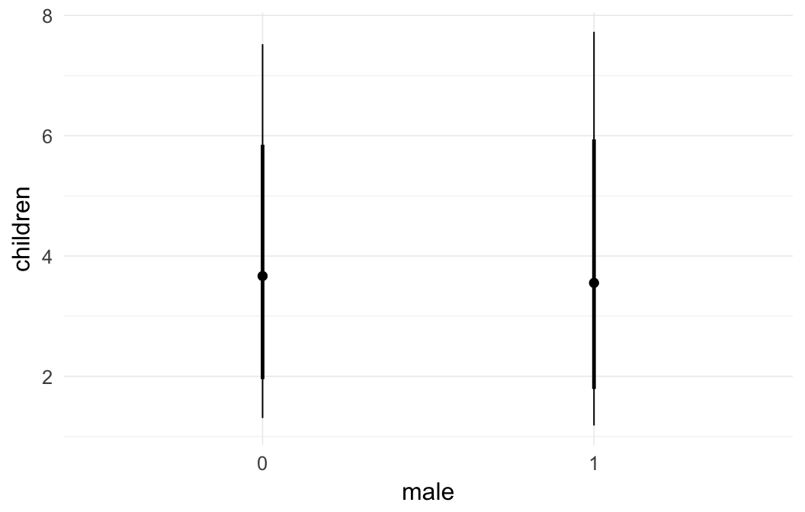
Coefficient plot
Coefficient estimates (95% and 80% credibility).
mcmc_intervals(as.matrix(model$fit), regex_pars = "b_[^I]")mcmc_areas(as.matrix(model$fit), regex_pars = "b")Diagnostics
These plots were made to diagnose misfit and nonconvergence.
Posterior predictive checks
brms::pp_check(model, re_formula = NA, type = "dens_overlay")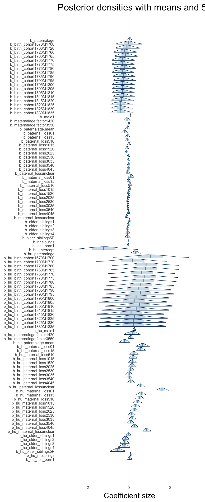
brms::pp_check(model, re_formula = NA, type = "hist")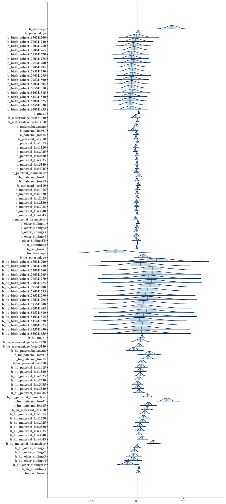
Rhat
Did the 6 chains converge?
stanplot(model, pars = "^b_[^I]", type = 'rhat')Effective sample size by average sample size
stanplot(model, pars = "^b", type = 'ess')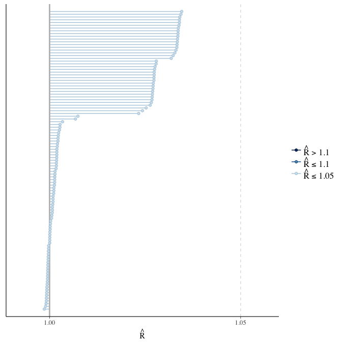
Monte Carlo SE
stanplot(model, pars = "^b", type = 'mcse')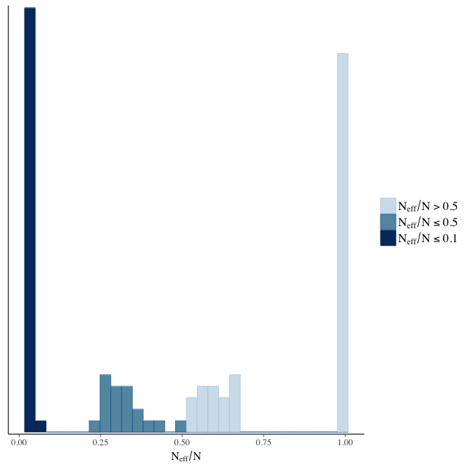
Trace plots
if(any( summary(model)$fixed[,"Rhat"] > 1.1)) { # only do traceplots if not converged
plot(model, N = 3, ask = FALSE)
}Further plots
stanplot(model, pars = "^b", type = 'diag')File name
coefs/krmh/r1_relaxed_exclusion_criteria.rds
Cluster script
opts_chunk$set(echo = FALSE)
clusterscript = str_replace(basename(model_filename), "\\.rds",".html")
cat("[Cluster script](" , clusterscript, ")", sep = "")r2: Fewer covariates
Adding covariates increases the complexity of the model and makes it harder to interpret. We chose to adjust for many potential confounds because we are interested in causal isolation of the paternal age effect. Here we show what happens when only birth cohort and average paternal age in the family are adjusted for.
Model summary
Full summary
model_summary = summary(model, use_cache = FALSE, priors = TRUE)
print(model_summary)## Family: hurdle_poisson (log)
## Formula: children ~ paternalage + birth_cohort + paternalage.mean + (1 | idParents)
## hu ~ paternalage + birth_cohort + paternalage.mean + (1 | idParents)
## Data: model_data (Number of observations: 9447)
## Samples: 6 chains, each with iter = 800; warmup = 300; thin = 1;
## total post-warmup samples = 3000
## WAIC: Not computed
##
## Priors:
## b ~ normal(0,5)
## sd ~ student_t(3, 0, 5)
## b_hu ~ normal(0,5)
## sd_hu ~ student_t(3, 0, 10)
##
## Group-Level Effects:
## ~idParents (Number of levels: 2186)
## Estimate Est.Error l-95% CI u-95% CI Eff.Sample Rhat
## sd(Intercept) 0.23 0.01 0.20 0.25 1258 1
## sd(hu_Intercept) 0.50 0.04 0.42 0.58 1017 1
##
## Population-Level Effects:
## Estimate Est.Error l-95% CI u-95% CI Eff.Sample
## Intercept 1.70 0.07 1.56 1.83 1587
## paternalage -0.03 0.02 -0.06 0.00 3000
## birth_cohort1760M1765 0.00 0.06 -0.12 0.13 3000
## birth_cohort1765M1770 -0.11 0.06 -0.22 -0.01 1284
## birth_cohort1770M1775 -0.11 0.06 -0.23 0.00 1150
## birth_cohort1775M1780 -0.03 0.06 -0.13 0.08 987
## birth_cohort1780M1785 -0.11 0.06 -0.22 0.00 1058
## birth_cohort1785M1790 -0.10 0.06 -0.21 0.01 996
## birth_cohort1790M1795 -0.08 0.05 -0.18 0.02 956
## birth_cohort1795M1800 -0.10 0.05 -0.20 0.00 910
## birth_cohort1800M1805 -0.11 0.05 -0.21 -0.01 831
## birth_cohort1805M1810 -0.13 0.05 -0.23 -0.03 927
## birth_cohort1810M1815 -0.10 0.05 -0.19 0.00 843
## birth_cohort1815M1820 -0.14 0.05 -0.23 -0.05 800
## birth_cohort1820M1825 -0.19 0.05 -0.27 -0.09 799
## birth_cohort1825M1830 -0.22 0.05 -0.31 -0.13 793
## birth_cohort1830M1835 -0.19 0.05 -0.29 -0.10 878
## paternalage.mean 0.01 0.02 -0.03 0.06 3000
## hu_Intercept 0.64 0.17 0.30 0.98 1615
## hu_paternalage 0.22 0.05 0.13 0.31 3000
## hu_birth_cohort1760M1765 -0.06 0.17 -0.38 0.28 3000
## hu_birth_cohort1765M1770 -0.35 0.15 -0.63 -0.06 1419
## hu_birth_cohort1770M1775 -0.16 0.15 -0.44 0.13 1263
## hu_birth_cohort1775M1780 -0.25 0.15 -0.54 0.04 1305
## hu_birth_cohort1780M1785 -0.32 0.15 -0.60 -0.03 1274
## hu_birth_cohort1785M1790 -0.49 0.15 -0.78 -0.21 1297
## hu_birth_cohort1790M1795 -0.40 0.14 -0.67 -0.14 1129
## hu_birth_cohort1795M1800 -0.55 0.13 -0.81 -0.31 1057
## hu_birth_cohort1800M1805 -0.64 0.13 -0.90 -0.39 1021
## hu_birth_cohort1805M1810 -0.37 0.13 -0.61 -0.12 999
## hu_birth_cohort1810M1815 -0.53 0.12 -0.77 -0.29 1013
## hu_birth_cohort1815M1820 -0.81 0.12 -1.04 -0.57 1004
## hu_birth_cohort1820M1825 -0.67 0.12 -0.90 -0.44 971
## hu_birth_cohort1825M1830 -0.66 0.12 -0.88 -0.43 953
## hu_birth_cohort1830M1835 -0.66 0.12 -0.90 -0.43 936
## hu_paternalage.mean -0.14 0.06 -0.25 -0.02 3000
## Rhat
## Intercept 1.00
## paternalage 1.00
## birth_cohort1760M1765 1.00
## birth_cohort1765M1770 1.00
## birth_cohort1770M1775 1.00
## birth_cohort1775M1780 1.01
## birth_cohort1780M1785 1.00
## birth_cohort1785M1790 1.00
## birth_cohort1790M1795 1.00
## birth_cohort1795M1800 1.00
## birth_cohort1800M1805 1.00
## birth_cohort1805M1810 1.00
## birth_cohort1810M1815 1.00
## birth_cohort1815M1820 1.00
## birth_cohort1820M1825 1.00
## birth_cohort1825M1830 1.00
## birth_cohort1830M1835 1.00
## paternalage.mean 1.00
## hu_Intercept 1.00
## hu_paternalage 1.00
## hu_birth_cohort1760M1765 1.00
## hu_birth_cohort1765M1770 1.00
## hu_birth_cohort1770M1775 1.00
## hu_birth_cohort1775M1780 1.00
## hu_birth_cohort1780M1785 1.01
## hu_birth_cohort1785M1790 1.00
## hu_birth_cohort1790M1795 1.01
## hu_birth_cohort1795M1800 1.00
## hu_birth_cohort1800M1805 1.01
## hu_birth_cohort1805M1810 1.01
## hu_birth_cohort1810M1815 1.01
## hu_birth_cohort1815M1820 1.01
## hu_birth_cohort1820M1825 1.01
## hu_birth_cohort1825M1830 1.01
## hu_birth_cohort1830M1835 1.01
## hu_paternalage.mean 1.00
##
## Samples were drawn using sampling(NUTS). For each parameter, Eff.Sample
## is a crude measure of effective sample size, and Rhat is the potential
## scale reduction factor on split chains (at convergence, Rhat = 1).Table of fixed effects
fixed_eff = data.frame(model_summary$fixed, check.names = F)
fixed_eff$Est.Error = fixed_eff$Eff.Sample = fixed_eff$Rhat = NULL
fixed_eff$OR = exp(fixed_eff$Estimate)
fixed_eff$OR_low = exp(fixed_eff$`l-95% CI`)
fixed_eff$OR_high = exp(fixed_eff$`u-95% CI`)
pander::pander(fixed_eff)| Estimate | l-95% CI | u-95% CI | OR | OR_low | OR_high | |
|---|---|---|---|---|---|---|
| Intercept | 1.695 | 1.559 | 1.83 | 5.449 | 4.754 | 6.234 |
| paternalage | -0.02871 | -0.06243 | 0.004978 | 0.9717 | 0.9395 | 1.005 |
| birth_cohort1760M1765 | 0.004055 | -0.1224 | 0.1322 | 1.004 | 0.8848 | 1.141 |
| birth_cohort1765M1770 | -0.1145 | -0.2243 | -0.005118 | 0.8918 | 0.799 | 0.9949 |
| birth_cohort1770M1775 | -0.1123 | -0.2275 | 0.001402 | 0.8937 | 0.7965 | 1.001 |
| birth_cohort1775M1780 | -0.02704 | -0.1335 | 0.08106 | 0.9733 | 0.875 | 1.084 |
| birth_cohort1780M1785 | -0.1131 | -0.2242 | -0.0006967 | 0.8931 | 0.7992 | 0.9993 |
| birth_cohort1785M1790 | -0.1008 | -0.2101 | 0.01049 | 0.9041 | 0.8105 | 1.011 |
| birth_cohort1790M1795 | -0.0813 | -0.1821 | 0.02054 | 0.9219 | 0.8335 | 1.021 |
| birth_cohort1795M1800 | -0.103 | -0.1999 | -0.00437 | 0.9021 | 0.8188 | 0.9956 |
| birth_cohort1800M1805 | -0.1121 | -0.2066 | -0.01124 | 0.894 | 0.8133 | 0.9888 |
| birth_cohort1805M1810 | -0.131 | -0.2267 | -0.03393 | 0.8772 | 0.7972 | 0.9666 |
| birth_cohort1810M1815 | -0.09615 | -0.1881 | -0.004002 | 0.9083 | 0.8285 | 0.996 |
| birth_cohort1815M1820 | -0.141 | -0.2283 | -0.05025 | 0.8685 | 0.7959 | 0.951 |
| birth_cohort1820M1825 | -0.186 | -0.2737 | -0.09441 | 0.8303 | 0.7606 | 0.9099 |
| birth_cohort1825M1830 | -0.2199 | -0.3104 | -0.1285 | 0.8026 | 0.7331 | 0.8794 |
| birth_cohort1830M1835 | -0.1947 | -0.2924 | -0.1038 | 0.8231 | 0.7465 | 0.9014 |
| paternalage.mean | 0.01324 | -0.03429 | 0.06037 | 1.013 | 0.9663 | 1.062 |
| hu_Intercept | 0.6437 | 0.297 | 0.9826 | 1.904 | 1.346 | 2.671 |
| hu_paternalage | 0.2181 | 0.1274 | 0.3054 | 1.244 | 1.136 | 1.357 |
| hu_birth_cohort1760M1765 | -0.05563 | -0.3842 | 0.2846 | 0.9459 | 0.681 | 1.329 |
| hu_birth_cohort1765M1770 | -0.348 | -0.6349 | -0.05536 | 0.7061 | 0.53 | 0.9461 |
| hu_birth_cohort1770M1775 | -0.1557 | -0.4434 | 0.1344 | 0.8558 | 0.6418 | 1.144 |
| hu_birth_cohort1775M1780 | -0.2506 | -0.5362 | 0.04044 | 0.7783 | 0.585 | 1.041 |
| hu_birth_cohort1780M1785 | -0.3177 | -0.6019 | -0.03483 | 0.7278 | 0.5478 | 0.9658 |
| hu_birth_cohort1785M1790 | -0.4939 | -0.781 | -0.2077 | 0.6103 | 0.458 | 0.8125 |
| hu_birth_cohort1790M1795 | -0.398 | -0.6728 | -0.142 | 0.6717 | 0.5103 | 0.8676 |
| hu_birth_cohort1795M1800 | -0.5545 | -0.8056 | -0.3068 | 0.5744 | 0.4468 | 0.7358 |
| hu_birth_cohort1800M1805 | -0.6363 | -0.8955 | -0.3906 | 0.5292 | 0.4084 | 0.6766 |
| hu_birth_cohort1805M1810 | -0.3657 | -0.6098 | -0.1216 | 0.6937 | 0.5435 | 0.8855 |
| hu_birth_cohort1810M1815 | -0.5313 | -0.7671 | -0.2942 | 0.5878 | 0.4644 | 0.7451 |
| hu_birth_cohort1815M1820 | -0.8071 | -1.041 | -0.5738 | 0.4461 | 0.353 | 0.5634 |
| hu_birth_cohort1820M1825 | -0.6668 | -0.899 | -0.4372 | 0.5134 | 0.407 | 0.6458 |
| hu_birth_cohort1825M1830 | -0.6585 | -0.8778 | -0.431 | 0.5176 | 0.4157 | 0.6499 |
| hu_birth_cohort1830M1835 | -0.6639 | -0.9021 | -0.4274 | 0.5148 | 0.4057 | 0.6522 |
| hu_paternalage.mean | -0.1379 | -0.2536 | -0.01941 | 0.8712 | 0.776 | 0.9808 |
Paternal age effect
pander::pander(paternal_age_10y_effect(model))| effect | median_estimate | ci_95 | ci_80 |
|---|---|---|---|
| estimate father 25y | 1.75 | [1.51;2.01] | [1.59;1.92] |
| estimate father 35y | 1.47 | [1.27;1.69] | [1.33;1.61] |
| percentage change | -16.37 | [-22.17;-10.38] | [-20.15;-12.42] |
| OR/IRR | 0.97 | [0.94;1] | [0.95;0.99] |
| OR hurdle | 1.24 | [1.14;1.36] | [1.17;1.32] |
Marginal effect plots
plot.brmsMarginalEffects_shades(
x = marginal_effects(model, re_formula = NA, probs = c(0.025,0.975)),
y = marginal_effects(model, re_formula = NA, probs = c(0.1,0.9)),
ask = FALSE)
Coefficient plot
Coefficient estimates (95% and 80% credibility).
mcmc_intervals(as.matrix(model$fit), regex_pars = "b_[^I]")mcmc_areas(as.matrix(model$fit), regex_pars = "b")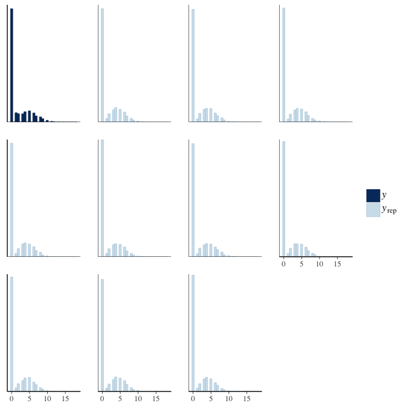
Diagnostics
These plots were made to diagnose misfit and nonconvergence.
Posterior predictive checks
brms::pp_check(model, re_formula = NA, type = "dens_overlay")brms::pp_check(model, re_formula = NA, type = "hist")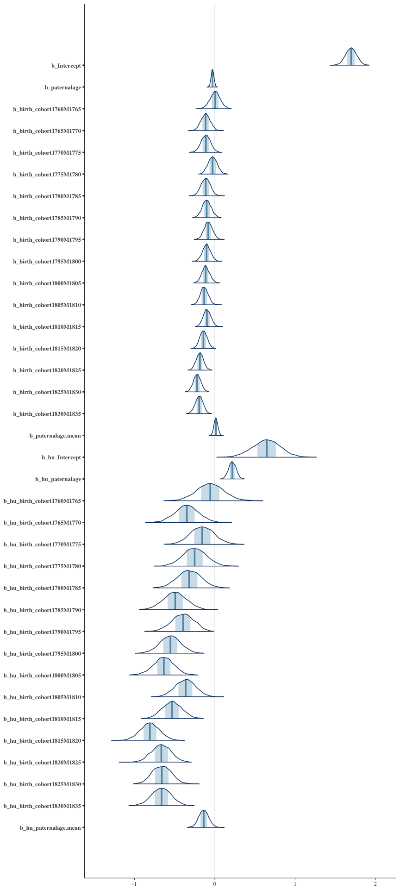
Rhat
Did the 6 chains converge?
stanplot(model, pars = "^b_[^I]", type = 'rhat')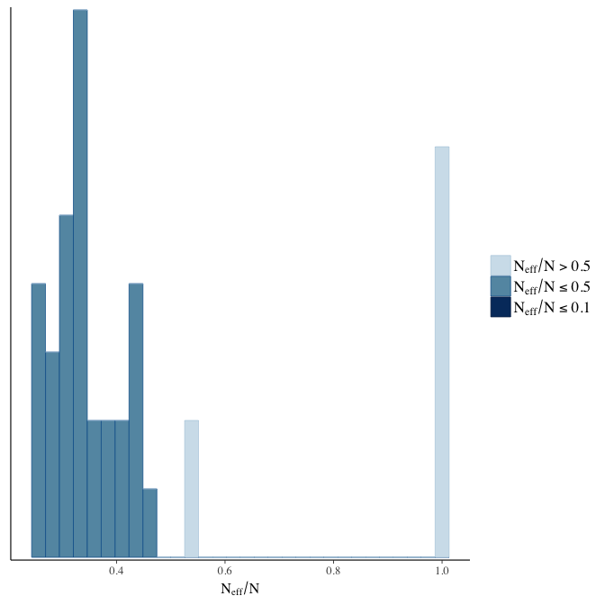
Effective sample size by average sample size
stanplot(model, pars = "^b", type = 'ess')Monte Carlo SE
stanplot(model, pars = "^b", type = 'mcse')Trace plots
if(any( summary(model)$fixed[,"Rhat"] > 1.1)) { # only do traceplots if not converged
plot(model, N = 3, ask = FALSE)
}Further plots
stanplot(model, pars = "^b", type = 'diag')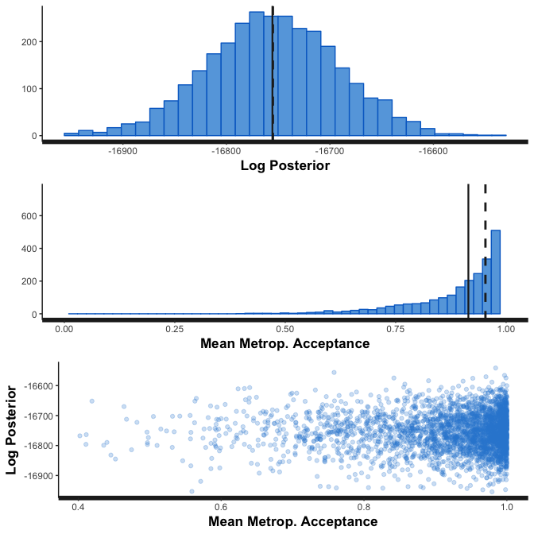
File name
coefs/krmh/r2_few_controls.rds
Cluster script
opts_chunk$set(echo = FALSE)
clusterscript = str_replace(basename(model_filename), "\\.rds",".html")
cat("[Cluster script](" , clusterscript, ")", sep = "")r3: Continuous birth order control
We chose to control for birth order/number of older siblings as a categorical variable, lumping all those who had more than 5 in the category 5+. Because a continuous covariate is also plausible, we tested this alternative model as well.
Model summary
Full summary
model_summary = summary(model, use_cache = FALSE, priors = TRUE)
print(model_summary)## Family: hurdle_poisson (log)
## Formula: children ~ paternalage + birth_cohort + male + maternalage.factor + paternalage.mean + paternal_loss + maternal_loss + older_siblings + nr.siblings + last_born + (1 | idParents)
## hu ~ paternalage + birth_cohort + male + maternalage.factor + paternalage.mean + paternal_loss + maternal_loss + older_siblings + nr.siblings + last_born + (1 | idParents)
## Data: model_data (Number of observations: 9447)
## Samples: 6 chains, each with iter = 1000; warmup = 500; thin = 1;
## total post-warmup samples = 3000
## WAIC: Not computed
##
## Priors:
## b ~ normal(0,5)
## sd ~ student_t(3, 0, 5)
## b_hu ~ normal(0,5)
## sd_hu ~ student_t(3, 0, 10)
##
## Group-Level Effects:
## ~idParents (Number of levels: 2186)
## Estimate Est.Error l-95% CI u-95% CI Eff.Sample Rhat
## sd(Intercept) 0.22 0.01 0.20 0.25 983 1.00
## sd(hu_Intercept) 0.47 0.05 0.38 0.56 606 1.01
##
## Population-Level Effects:
## Estimate Est.Error l-95% CI u-95% CI Eff.Sample
## Intercept 1.67 0.08 1.51 1.82 727
## paternalage 0.03 0.06 -0.09 0.16 1001
## birth_cohort1760M1765 0.00 0.06 -0.13 0.13 904
## birth_cohort1765M1770 -0.12 0.06 -0.23 -0.01 671
## birth_cohort1770M1775 -0.11 0.06 -0.23 0.00 619
## birth_cohort1775M1780 -0.02 0.06 -0.13 0.09 590
## birth_cohort1780M1785 -0.11 0.06 -0.23 0.00 638
## birth_cohort1785M1790 -0.09 0.05 -0.20 0.01 585
## birth_cohort1790M1795 -0.08 0.05 -0.18 0.02 485
## birth_cohort1795M1800 -0.11 0.05 -0.20 -0.01 502
## birth_cohort1800M1805 -0.11 0.05 -0.21 -0.01 487
## birth_cohort1805M1810 -0.13 0.05 -0.24 -0.03 480
## birth_cohort1810M1815 -0.10 0.05 -0.19 0.00 433
## birth_cohort1815M1820 -0.14 0.05 -0.23 -0.05 441
## birth_cohort1820M1825 -0.19 0.05 -0.28 -0.09 400
## birth_cohort1825M1830 -0.21 0.05 -0.31 -0.11 434
## birth_cohort1830M1835 -0.18 0.05 -0.28 -0.09 411
## male1 0.08 0.02 0.05 0.11 3000
## maternalage.factor1420 -0.06 0.09 -0.25 0.11 3000
## maternalage.factor3550 0.00 0.03 -0.05 0.06 3000
## paternalage.mean -0.03 0.06 -0.16 0.09 993
## paternal_loss01 -0.15 0.07 -0.29 0.00 3000
## paternal_loss15 -0.03 0.05 -0.13 0.06 1685
## paternal_loss510 -0.07 0.04 -0.15 0.02 1626
## paternal_loss1015 0.01 0.04 -0.07 0.08 1263
## paternal_loss1520 -0.09 0.04 -0.17 -0.02 1355
## paternal_loss2025 -0.12 0.04 -0.19 -0.04 1112
## paternal_loss2530 -0.01 0.03 -0.08 0.06 1145
## paternal_loss3035 -0.03 0.03 -0.09 0.04 1219
## paternal_loss3540 -0.01 0.03 -0.07 0.05 1054
## paternal_loss4045 -0.01 0.04 -0.08 0.06 1429
## maternal_loss01 0.10 0.08 -0.05 0.25 3000
## maternal_loss15 -0.02 0.05 -0.11 0.07 1717
## maternal_loss510 0.07 0.04 -0.01 0.14 1424
## maternal_loss1015 0.03 0.04 -0.06 0.11 1526
## maternal_loss1520 0.01 0.04 -0.07 0.08 3000
## maternal_loss2025 0.01 0.04 -0.07 0.08 1343
## maternal_loss2530 -0.02 0.03 -0.09 0.04 1280
## maternal_loss3035 -0.05 0.03 -0.12 0.01 1241
## maternal_loss3540 -0.03 0.03 -0.09 0.02 1273
## maternal_loss4045 -0.03 0.03 -0.09 0.03 3000
## older_siblings -0.01 0.02 -0.04 0.02 1264
## nr.siblings 0.01 0.01 -0.01 0.02 1357
## last_born1 -0.05 0.02 -0.09 0.00 3000
## hu_Intercept -0.14 0.20 -0.54 0.28 861
## hu_paternalage 0.57 0.18 0.22 0.92 963
## hu_birth_cohort1760M1765 -0.03 0.17 -0.35 0.31 1044
## hu_birth_cohort1765M1770 -0.30 0.15 -0.58 -0.02 678
## hu_birth_cohort1770M1775 -0.05 0.15 -0.35 0.22 645
## hu_birth_cohort1775M1780 -0.18 0.14 -0.45 0.10 653
## hu_birth_cohort1780M1785 -0.26 0.15 -0.56 0.01 672
## hu_birth_cohort1785M1790 -0.42 0.14 -0.70 -0.13 722
## hu_birth_cohort1790M1795 -0.30 0.14 -0.56 -0.05 607
## hu_birth_cohort1795M1800 -0.45 0.13 -0.70 -0.20 569
## hu_birth_cohort1800M1805 -0.52 0.13 -0.78 -0.27 627
## hu_birth_cohort1805M1810 -0.25 0.13 -0.50 0.00 530
## hu_birth_cohort1810M1815 -0.42 0.12 -0.67 -0.17 493
## hu_birth_cohort1815M1820 -0.69 0.12 -0.92 -0.46 507
## hu_birth_cohort1820M1825 -0.51 0.12 -0.73 -0.28 497
## hu_birth_cohort1825M1830 -0.53 0.12 -0.76 -0.30 537
## hu_birth_cohort1830M1835 -0.55 0.12 -0.78 -0.31 525
## hu_male1 0.27 0.05 0.18 0.37 3000
## hu_maternalage.factor1420 0.20 0.23 -0.28 0.65 3000
## hu_maternalage.factor3550 0.11 0.07 -0.03 0.25 3000
## hu_paternalage.mean -0.49 0.18 -0.84 -0.13 1000
## hu_paternal_loss01 0.58 0.19 0.21 0.94 3000
## hu_paternal_loss15 0.52 0.14 0.26 0.80 1286
## hu_paternal_loss510 0.19 0.11 -0.04 0.41 1257
## hu_paternal_loss1015 0.15 0.11 -0.06 0.36 1022
## hu_paternal_loss1520 0.10 0.10 -0.10 0.30 957
## hu_paternal_loss2025 0.16 0.10 -0.04 0.36 1022
## hu_paternal_loss2530 0.06 0.10 -0.13 0.24 900
## hu_paternal_loss3035 -0.02 0.09 -0.20 0.17 1009
## hu_paternal_loss3540 -0.01 0.09 -0.19 0.17 984
## hu_paternal_loss4045 0.14 0.10 -0.05 0.34 1244
## hu_maternal_loss01 1.58 0.19 1.23 1.96 3000
## hu_maternal_loss15 0.58 0.12 0.34 0.82 3000
## hu_maternal_loss510 0.48 0.11 0.27 0.68 3000
## hu_maternal_loss1015 0.47 0.11 0.27 0.69 3000
## hu_maternal_loss1520 0.31 0.11 0.10 0.52 3000
## hu_maternal_loss2025 0.25 0.10 0.06 0.45 3000
## hu_maternal_loss2530 0.19 0.09 0.00 0.37 3000
## hu_maternal_loss3035 0.21 0.08 0.05 0.38 1796
## hu_maternal_loss3540 0.07 0.08 -0.09 0.23 1644
## hu_maternal_loss4045 0.27 0.08 0.11 0.44 3000
## hu_older_siblings -0.17 0.04 -0.25 -0.08 990
## hu_nr.siblings 0.14 0.02 0.10 0.19 1040
## hu_last_born1 0.09 0.06 -0.04 0.22 3000
## Rhat
## Intercept 1.00
## paternalage 1.01
## birth_cohort1760M1765 1.00
## birth_cohort1765M1770 1.00
## birth_cohort1770M1775 1.00
## birth_cohort1775M1780 1.00
## birth_cohort1780M1785 1.00
## birth_cohort1785M1790 1.00
## birth_cohort1790M1795 1.00
## birth_cohort1795M1800 1.00
## birth_cohort1800M1805 1.01
## birth_cohort1805M1810 1.00
## birth_cohort1810M1815 1.00
## birth_cohort1815M1820 1.00
## birth_cohort1820M1825 1.00
## birth_cohort1825M1830 1.00
## birth_cohort1830M1835 1.01
## male1 1.00
## maternalage.factor1420 1.00
## maternalage.factor3550 1.00
## paternalage.mean 1.01
## paternal_loss01 1.00
## paternal_loss15 1.00
## paternal_loss510 1.00
## paternal_loss1015 1.00
## paternal_loss1520 1.00
## paternal_loss2025 1.00
## paternal_loss2530 1.00
## paternal_loss3035 1.00
## paternal_loss3540 1.00
## paternal_loss4045 1.00
## maternal_loss01 1.00
## maternal_loss15 1.00
## maternal_loss510 1.00
## maternal_loss1015 1.00
## maternal_loss1520 1.00
## maternal_loss2025 1.00
## maternal_loss2530 1.00
## maternal_loss3035 1.00
## maternal_loss3540 1.00
## maternal_loss4045 1.00
## older_siblings 1.01
## nr.siblings 1.00
## last_born1 1.00
## hu_Intercept 1.00
## hu_paternalage 1.00
## hu_birth_cohort1760M1765 1.00
## hu_birth_cohort1765M1770 1.01
## hu_birth_cohort1770M1775 1.01
## hu_birth_cohort1775M1780 1.00
## hu_birth_cohort1780M1785 1.01
## hu_birth_cohort1785M1790 1.00
## hu_birth_cohort1790M1795 1.01
## hu_birth_cohort1795M1800 1.01
## hu_birth_cohort1800M1805 1.01
## hu_birth_cohort1805M1810 1.01
## hu_birth_cohort1810M1815 1.01
## hu_birth_cohort1815M1820 1.01
## hu_birth_cohort1820M1825 1.01
## hu_birth_cohort1825M1830 1.01
## hu_birth_cohort1830M1835 1.01
## hu_male1 1.00
## hu_maternalage.factor1420 1.00
## hu_maternalage.factor3550 1.00
## hu_paternalage.mean 1.00
## hu_paternal_loss01 1.00
## hu_paternal_loss15 1.00
## hu_paternal_loss510 1.00
## hu_paternal_loss1015 1.00
## hu_paternal_loss1520 1.00
## hu_paternal_loss2025 1.01
## hu_paternal_loss2530 1.00
## hu_paternal_loss3035 1.00
## hu_paternal_loss3540 1.00
## hu_paternal_loss4045 1.00
## hu_maternal_loss01 1.00
## hu_maternal_loss15 1.00
## hu_maternal_loss510 1.00
## hu_maternal_loss1015 1.00
## hu_maternal_loss1520 1.00
## hu_maternal_loss2025 1.00
## hu_maternal_loss2530 1.00
## hu_maternal_loss3035 1.00
## hu_maternal_loss3540 1.00
## hu_maternal_loss4045 1.00
## hu_older_siblings 1.00
## hu_nr.siblings 1.00
## hu_last_born1 1.00
##
## Samples were drawn using sampling(NUTS). For each parameter, Eff.Sample
## is a crude measure of effective sample size, and Rhat is the potential
## scale reduction factor on split chains (at convergence, Rhat = 1).Table of fixed effects
fixed_eff = data.frame(model_summary$fixed, check.names = F)
fixed_eff$Est.Error = fixed_eff$Eff.Sample = fixed_eff$Rhat = NULL
fixed_eff$OR = exp(fixed_eff$Estimate)
fixed_eff$OR_low = exp(fixed_eff$`l-95% CI`)
fixed_eff$OR_high = exp(fixed_eff$`u-95% CI`)
pander::pander(fixed_eff)| Estimate | l-95% CI | u-95% CI | OR | OR_low | OR_high | |
|---|---|---|---|---|---|---|
| Intercept | 1.668 | 1.509 | 1.822 | 5.3 | 4.522 | 6.182 |
| paternalage | 0.03105 | -0.09173 | 0.1551 | 1.032 | 0.9124 | 1.168 |
| birth_cohort1760M1765 | -0.0004087 | -0.1281 | 0.1264 | 0.9996 | 0.8797 | 1.135 |
| birth_cohort1765M1770 | -0.1189 | -0.2331 | -0.008192 | 0.8879 | 0.7921 | 0.9918 |
| birth_cohort1770M1775 | -0.1133 | -0.2305 | -0.001556 | 0.8929 | 0.7941 | 0.9984 |
| birth_cohort1775M1780 | -0.02355 | -0.1348 | 0.08563 | 0.9767 | 0.8739 | 1.089 |
| birth_cohort1780M1785 | -0.113 | -0.2321 | 0.002871 | 0.8931 | 0.7929 | 1.003 |
| birth_cohort1785M1790 | -0.09346 | -0.2008 | 0.01022 | 0.9108 | 0.818 | 1.01 |
| birth_cohort1790M1795 | -0.07812 | -0.1801 | 0.02423 | 0.9249 | 0.8352 | 1.025 |
| birth_cohort1795M1800 | -0.105 | -0.2014 | -0.006874 | 0.9003 | 0.8176 | 0.9931 |
| birth_cohort1800M1805 | -0.1103 | -0.2062 | -0.01265 | 0.8955 | 0.8136 | 0.9874 |
| birth_cohort1805M1810 | -0.1344 | -0.2358 | -0.03042 | 0.8742 | 0.7899 | 0.97 |
| birth_cohort1810M1815 | -0.09848 | -0.1927 | 0.0008467 | 0.9062 | 0.8248 | 1.001 |
| birth_cohort1815M1820 | -0.1402 | -0.2307 | -0.04538 | 0.8691 | 0.7939 | 0.9556 |
| birth_cohort1820M1825 | -0.1854 | -0.2788 | -0.08906 | 0.8308 | 0.7567 | 0.9148 |
| birth_cohort1825M1830 | -0.2091 | -0.3057 | -0.1137 | 0.8113 | 0.7366 | 0.8925 |
| birth_cohort1830M1835 | -0.1818 | -0.2783 | -0.08671 | 0.8337 | 0.7571 | 0.9169 |
| male1 | 0.07871 | 0.04599 | 0.1116 | 1.082 | 1.047 | 1.118 |
| maternalage.factor1420 | -0.06414 | -0.2453 | 0.1114 | 0.9379 | 0.7825 | 1.118 |
| maternalage.factor3550 | 0.003585 | -0.05011 | 0.05543 | 1.004 | 0.9511 | 1.057 |
| paternalage.mean | -0.03343 | -0.1579 | 0.09234 | 0.9671 | 0.854 | 1.097 |
| paternal_loss01 | -0.145 | -0.2888 | -0.00267 | 0.865 | 0.7492 | 0.9973 |
| paternal_loss15 | -0.03448 | -0.1339 | 0.06272 | 0.9661 | 0.8747 | 1.065 |
| paternal_loss510 | -0.0659 | -0.1477 | 0.01887 | 0.9362 | 0.8627 | 1.019 |
| paternal_loss1015 | 0.005917 | -0.07007 | 0.0845 | 1.006 | 0.9323 | 1.088 |
| paternal_loss1520 | -0.09363 | -0.1675 | -0.01769 | 0.9106 | 0.8458 | 0.9825 |
| paternal_loss2025 | -0.1185 | -0.1924 | -0.04377 | 0.8883 | 0.8249 | 0.9572 |
| paternal_loss2530 | -0.009685 | -0.07749 | 0.05759 | 0.9904 | 0.9254 | 1.059 |
| paternal_loss3035 | -0.028 | -0.09306 | 0.03565 | 0.9724 | 0.9111 | 1.036 |
| paternal_loss3540 | -0.01046 | -0.07138 | 0.05308 | 0.9896 | 0.9311 | 1.055 |
| paternal_loss4045 | -0.008297 | -0.07689 | 0.06206 | 0.9917 | 0.926 | 1.064 |
| maternal_loss01 | 0.09977 | -0.05232 | 0.2499 | 1.105 | 0.949 | 1.284 |
| maternal_loss15 | -0.01752 | -0.1098 | 0.07123 | 0.9826 | 0.896 | 1.074 |
| maternal_loss510 | 0.06693 | -0.01298 | 0.1436 | 1.069 | 0.9871 | 1.154 |
| maternal_loss1015 | 0.02637 | -0.05541 | 0.1055 | 1.027 | 0.9461 | 1.111 |
| maternal_loss1520 | 0.005253 | -0.07091 | 0.08204 | 1.005 | 0.9315 | 1.085 |
| maternal_loss2025 | 0.007802 | -0.06939 | 0.08025 | 1.008 | 0.933 | 1.084 |
| maternal_loss2530 | -0.02239 | -0.09118 | 0.04469 | 0.9779 | 0.9129 | 1.046 |
| maternal_loss3035 | -0.05474 | -0.121 | 0.01018 | 0.9467 | 0.886 | 1.01 |
| maternal_loss3540 | -0.0343 | -0.09216 | 0.02293 | 0.9663 | 0.912 | 1.023 |
| maternal_loss4045 | -0.02943 | -0.09486 | 0.03112 | 0.971 | 0.9095 | 1.032 |
| older_siblings | -0.01078 | -0.0409 | 0.01906 | 0.9893 | 0.9599 | 1.019 |
| nr.siblings | 0.006044 | -0.01068 | 0.02384 | 1.006 | 0.9894 | 1.024 |
| last_born1 | -0.04506 | -0.09249 | 0.004214 | 0.9559 | 0.9117 | 1.004 |
| hu_Intercept | -0.1395 | -0.5361 | 0.2776 | 0.8698 | 0.585 | 1.32 |
| hu_paternalage | 0.571 | 0.223 | 0.9157 | 1.77 | 1.25 | 2.498 |
| hu_birth_cohort1760M1765 | -0.03077 | -0.3534 | 0.3065 | 0.9697 | 0.7023 | 1.359 |
| hu_birth_cohort1765M1770 | -0.3003 | -0.5791 | -0.01629 | 0.7406 | 0.5604 | 0.9838 |
| hu_birth_cohort1770M1775 | -0.05262 | -0.3463 | 0.2245 | 0.9487 | 0.7073 | 1.252 |
| hu_birth_cohort1775M1780 | -0.1843 | -0.4527 | 0.1015 | 0.8317 | 0.6359 | 1.107 |
| hu_birth_cohort1780M1785 | -0.2649 | -0.5583 | 0.01167 | 0.7673 | 0.5722 | 1.012 |
| hu_birth_cohort1785M1790 | -0.4165 | -0.6973 | -0.1287 | 0.6593 | 0.4979 | 0.8792 |
| hu_birth_cohort1790M1795 | -0.3034 | -0.5569 | -0.04665 | 0.7383 | 0.573 | 0.9544 |
| hu_birth_cohort1795M1800 | -0.4479 | -0.6998 | -0.1987 | 0.6389 | 0.4967 | 0.8198 |
| hu_birth_cohort1800M1805 | -0.5226 | -0.7758 | -0.2707 | 0.593 | 0.4603 | 0.7629 |
| hu_birth_cohort1805M1810 | -0.2487 | -0.4964 | 0.0004937 | 0.7798 | 0.6087 | 1 |
| hu_birth_cohort1810M1815 | -0.4241 | -0.6662 | -0.1739 | 0.6544 | 0.5137 | 0.8404 |
| hu_birth_cohort1815M1820 | -0.6894 | -0.922 | -0.4595 | 0.5019 | 0.3977 | 0.6316 |
| hu_birth_cohort1820M1825 | -0.5084 | -0.7291 | -0.2759 | 0.6015 | 0.4824 | 0.7589 |
| hu_birth_cohort1825M1830 | -0.5297 | -0.764 | -0.2964 | 0.5888 | 0.4658 | 0.7435 |
| hu_birth_cohort1830M1835 | -0.5495 | -0.7773 | -0.3143 | 0.5772 | 0.4597 | 0.7303 |
| hu_male1 | 0.2749 | 0.1831 | 0.3671 | 1.316 | 1.201 | 1.444 |
| hu_maternalage.factor1420 | 0.1965 | -0.2758 | 0.6523 | 1.217 | 0.759 | 1.92 |
| hu_maternalage.factor3550 | 0.1072 | -0.03479 | 0.2488 | 1.113 | 0.9658 | 1.282 |
| hu_paternalage.mean | -0.4896 | -0.8387 | -0.1307 | 0.6129 | 0.4323 | 0.8774 |
| hu_paternal_loss01 | 0.579 | 0.2133 | 0.9387 | 1.784 | 1.238 | 2.557 |
| hu_paternal_loss15 | 0.5236 | 0.2641 | 0.7967 | 1.688 | 1.302 | 2.218 |
| hu_paternal_loss510 | 0.1889 | -0.04264 | 0.4066 | 1.208 | 0.9583 | 1.502 |
| hu_paternal_loss1015 | 0.153 | -0.05798 | 0.359 | 1.165 | 0.9437 | 1.432 |
| hu_paternal_loss1520 | 0.1 | -0.1 | 0.2985 | 1.105 | 0.9048 | 1.348 |
| hu_paternal_loss2025 | 0.1596 | -0.0386 | 0.3627 | 1.173 | 0.9621 | 1.437 |
| hu_paternal_loss2530 | 0.05881 | -0.1334 | 0.2441 | 1.061 | 0.8751 | 1.277 |
| hu_paternal_loss3035 | -0.01816 | -0.2039 | 0.1715 | 0.982 | 0.8155 | 1.187 |
| hu_paternal_loss3540 | -0.009068 | -0.194 | 0.1728 | 0.991 | 0.8237 | 1.189 |
| hu_paternal_loss4045 | 0.1435 | -0.05032 | 0.3425 | 1.154 | 0.9509 | 1.408 |
| hu_maternal_loss01 | 1.579 | 1.225 | 1.956 | 4.852 | 3.405 | 7.07 |
| hu_maternal_loss15 | 0.5774 | 0.3442 | 0.816 | 1.781 | 1.411 | 2.261 |
| hu_maternal_loss510 | 0.4776 | 0.2692 | 0.6816 | 1.612 | 1.309 | 1.977 |
| hu_maternal_loss1015 | 0.4699 | 0.2693 | 0.6904 | 1.6 | 1.309 | 1.994 |
| hu_maternal_loss1520 | 0.3129 | 0.1021 | 0.523 | 1.367 | 1.107 | 1.687 |
| hu_maternal_loss2025 | 0.2535 | 0.05545 | 0.4488 | 1.289 | 1.057 | 1.566 |
| hu_maternal_loss2530 | 0.1863 | 0.004918 | 0.3663 | 1.205 | 1.005 | 1.442 |
| hu_maternal_loss3035 | 0.2124 | 0.05058 | 0.3808 | 1.237 | 1.052 | 1.463 |
| hu_maternal_loss3540 | 0.06573 | -0.09152 | 0.226 | 1.068 | 0.9125 | 1.254 |
| hu_maternal_loss4045 | 0.2717 | 0.109 | 0.4377 | 1.312 | 1.115 | 1.549 |
| hu_older_siblings | -0.1659 | -0.2488 | -0.08314 | 0.8472 | 0.7797 | 0.9202 |
| hu_nr.siblings | 0.1445 | 0.0998 | 0.1909 | 1.155 | 1.105 | 1.21 |
| hu_last_born1 | 0.09049 | -0.03575 | 0.2164 | 1.095 | 0.9649 | 1.242 |
Paternal age effect
pander::pander(paternal_age_10y_effect(model))| effect | median_estimate | ci_95 | ci_80 |
|---|---|---|---|
| estimate father 25y | 2.78 | [2.26;3.38] | [2.43;3.18] |
| estimate father 35y | 2.12 | [1.78;2.52] | [1.89;2.39] |
| percentage change | -23.54 | [-37.92;-5.4] | [-33.32;-12.25] |
| OR/IRR | 1.03 | [0.91;1.17] | [0.95;1.12] |
| OR hurdle | 1.77 | [1.25;2.5] | [1.41;2.23] |
Marginal effect plots
plot.brmsMarginalEffects_shades(
x = marginal_effects(model, re_formula = NA, probs = c(0.025,0.975)),
y = marginal_effects(model, re_formula = NA, probs = c(0.1,0.9)),
ask = FALSE) 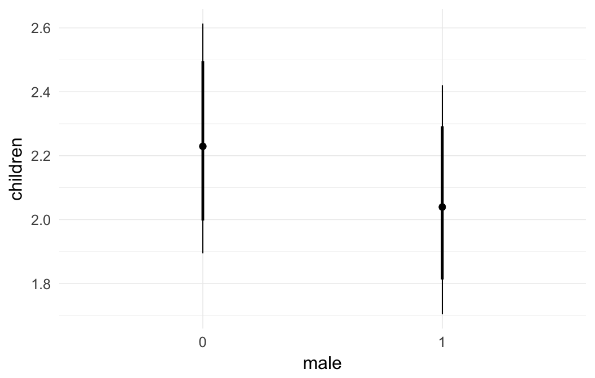
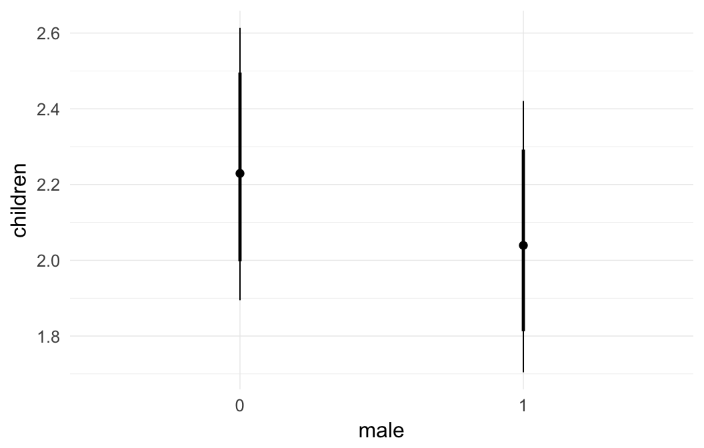 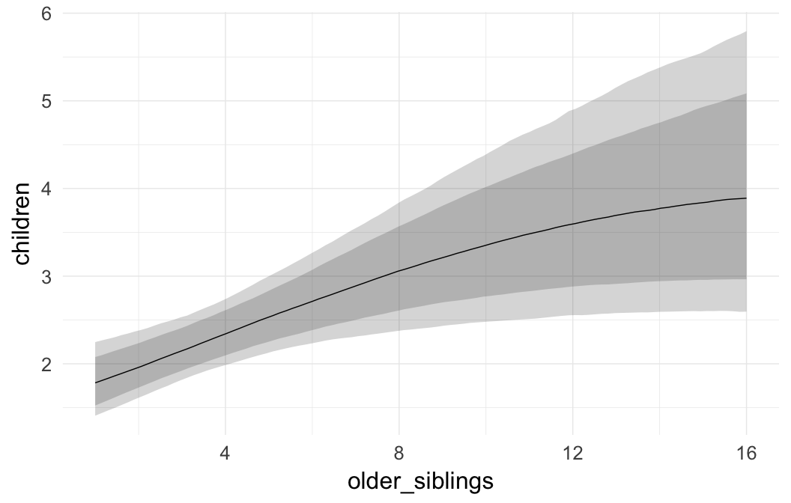
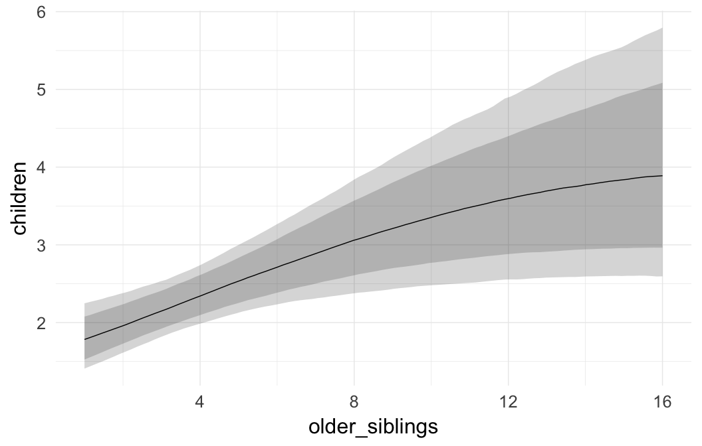
Coefficient plot
Coefficient estimates (95% and 80% credibility).
mcmc_intervals(as.matrix(model$fit), regex_pars = "b_[^I]")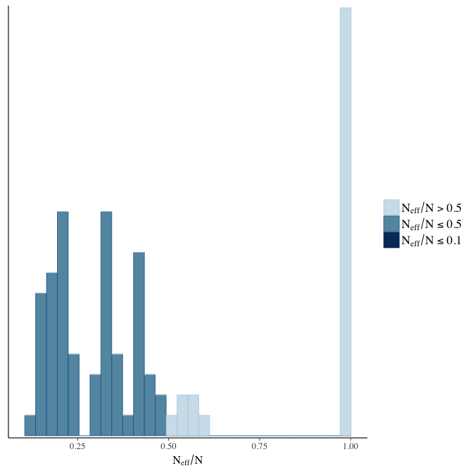
mcmc_areas(as.matrix(model$fit), regex_pars = "b")Diagnostics
These plots were made to diagnose misfit and nonconvergence.
Posterior predictive checks
brms::pp_check(model, re_formula = NA, type = "dens_overlay")brms::pp_check(model, re_formula = NA, type = "hist")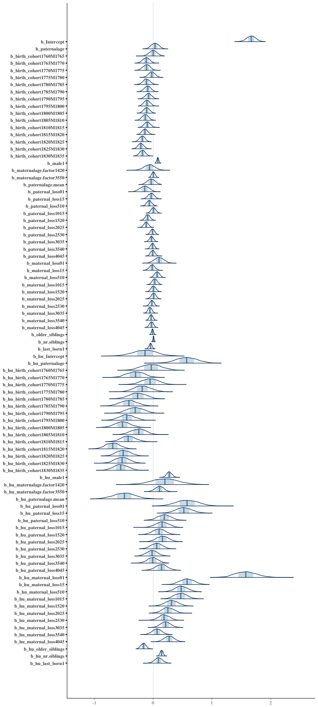
Rhat
Did the 6 chains converge?
stanplot(model, pars = "^b_[^I]", type = 'rhat')Effective sample size by average sample size
stanplot(model, pars = "^b", type = 'ess')Monte Carlo SE
stanplot(model, pars = "^b", type = 'mcse')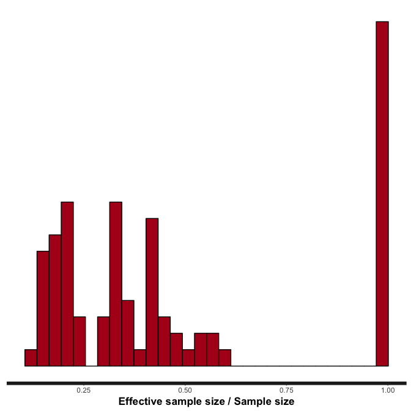
Trace plots
if(any( summary(model)$fixed[,"Rhat"] > 1.1)) { # only do traceplots if not converged
plot(model, N = 3, ask = FALSE)
}Further plots
stanplot(model, pars = "^b", type = 'diag')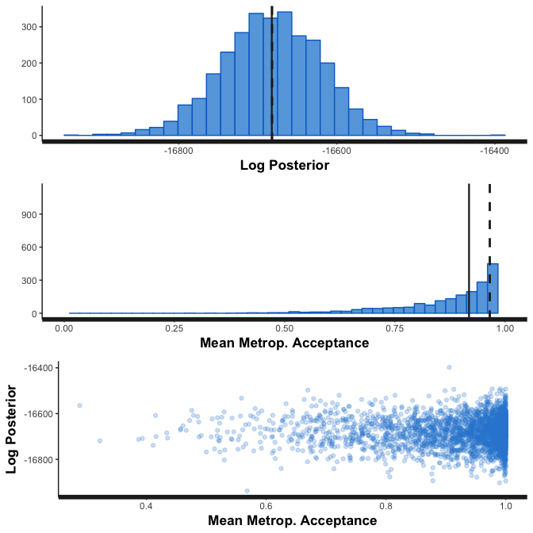
File name
coefs/krmh/r3_birth_order_continuous.rds
Cluster script
opts_chunk$set(echo = FALSE)
clusterscript = str_replace(basename(model_filename), "\\.rds",".html")
cat("[Cluster script](" , clusterscript, ")", sep = "")r4: Control number of dependent siblings
Birth order is usually used as a proxy variable for parental investment, the assumption being that older siblings require parental attention. However, there are are reasons to doubt this, as fully-grown siblings probably do not compete for the same resources. To compute a clearer proxy variable of competing siblings, we computed and adjusted for the number of siblings who were alive and younger than five at the time of birth of the anchor child.
Model summary
Full summary
model_summary = summary(model, use_cache = FALSE, priors = TRUE)
print(model_summary)## Family: hurdle_poisson (log)
## Formula: children ~ paternalage + birth_cohort + male + maternalage.factor + paternalage.mean + paternal_loss + maternal_loss + nr.siblings + dependent_sibs_f5y + (1 | idParents)
## hu ~ paternalage + birth_cohort + male + maternalage.factor + paternalage.mean + paternal_loss + maternal_loss + nr.siblings + dependent_sibs_f5y + (1 | idParents)
## Data: model_data (Number of observations: 9447)
## Samples: 6 chains, each with iter = 1000; warmup = 500; thin = 1;
## total post-warmup samples = 3000
## WAIC: Not computed
##
## Priors:
## b ~ normal(0,5)
## sd ~ student_t(3, 0, 5)
## b_hu ~ normal(0,5)
## sd_hu ~ student_t(3, 0, 10)
##
## Group-Level Effects:
## ~idParents (Number of levels: 2186)
## Estimate Est.Error l-95% CI u-95% CI Eff.Sample Rhat
## sd(Intercept) 0.23 0.01 0.20 0.25 1126 1.00
## sd(hu_Intercept) 0.52 0.04 0.43 0.60 571 1.02
##
## Population-Level Effects:
## Estimate Est.Error l-95% CI u-95% CI Eff.Sample
## Intercept 1.65 0.08 1.50 1.80 1208
## paternalage -0.02 0.03 -0.07 0.03 1156
## birth_cohort1760M1765 0.00 0.06 -0.13 0.12 1145
## birth_cohort1765M1770 -0.12 0.06 -0.23 -0.01 872
## birth_cohort1770M1775 -0.11 0.06 -0.22 0.00 945
## birth_cohort1775M1780 -0.03 0.06 -0.14 0.09 868
## birth_cohort1780M1785 -0.11 0.06 -0.22 0.00 828
## birth_cohort1785M1790 -0.09 0.06 -0.20 0.01 844
## birth_cohort1790M1795 -0.08 0.05 -0.18 0.03 778
## birth_cohort1795M1800 -0.10 0.05 -0.20 -0.01 766
## birth_cohort1800M1805 -0.11 0.05 -0.21 -0.02 704
## birth_cohort1805M1810 -0.13 0.05 -0.23 -0.04 747
## birth_cohort1810M1815 -0.10 0.05 -0.19 0.00 664
## birth_cohort1815M1820 -0.14 0.05 -0.23 -0.05 632
## birth_cohort1820M1825 -0.18 0.05 -0.28 -0.09 653
## birth_cohort1825M1830 -0.21 0.05 -0.30 -0.12 638
## birth_cohort1830M1835 -0.18 0.05 -0.28 -0.09 690
## male1 0.08 0.02 0.05 0.11 3000
## maternalage.factor1420 -0.07 0.09 -0.26 0.11 3000
## maternalage.factor3550 0.00 0.03 -0.06 0.05 1711
## paternalage.mean 0.01 0.03 -0.04 0.08 1505
## paternal_loss01 -0.14 0.07 -0.28 0.01 3000
## paternal_loss15 -0.04 0.05 -0.14 0.06 1692
## paternal_loss510 -0.07 0.04 -0.15 0.01 1360
## paternal_loss1015 0.00 0.04 -0.07 0.08 1554
## paternal_loss1520 -0.10 0.04 -0.17 -0.02 1068
## paternal_loss2025 -0.12 0.04 -0.19 -0.05 1244
## paternal_loss2530 -0.01 0.03 -0.08 0.05 819
## paternal_loss3035 -0.03 0.03 -0.10 0.03 1299
## paternal_loss3540 -0.01 0.03 -0.08 0.05 1417
## paternal_loss4045 -0.01 0.04 -0.08 0.06 1546
## maternal_loss01 0.10 0.08 -0.05 0.26 3000
## maternal_loss15 -0.03 0.05 -0.12 0.06 3000
## maternal_loss510 0.07 0.04 -0.01 0.14 1966
## maternal_loss1015 0.03 0.04 -0.05 0.11 1842
## maternal_loss1520 0.01 0.04 -0.07 0.09 2108
## maternal_loss2025 0.01 0.04 -0.07 0.08 1939
## maternal_loss2530 -0.02 0.03 -0.09 0.04 1768
## maternal_loss3035 -0.05 0.03 -0.12 0.01 2069
## maternal_loss3540 -0.03 0.03 -0.09 0.02 1787
## maternal_loss4045 -0.03 0.03 -0.09 0.03 3000
## nr.siblings 0.00 0.00 -0.01 0.01 3000
## dependent_sibs_f5y 0.00 0.01 -0.02 0.02 3000
## hu_Intercept -0.41 0.20 -0.80 -0.01 1009
## hu_paternalage -0.04 0.07 -0.18 0.10 1546
## hu_birth_cohort1760M1765 -0.03 0.17 -0.35 0.30 1203
## hu_birth_cohort1765M1770 -0.31 0.15 -0.60 -0.02 887
## hu_birth_cohort1770M1775 -0.07 0.15 -0.35 0.22 722
## hu_birth_cohort1775M1780 -0.19 0.15 -0.47 0.10 668
## hu_birth_cohort1780M1785 -0.25 0.16 -0.55 0.05 774
## hu_birth_cohort1785M1790 -0.41 0.15 -0.70 -0.13 750
## hu_birth_cohort1790M1795 -0.30 0.14 -0.57 -0.03 655
## hu_birth_cohort1795M1800 -0.47 0.13 -0.72 -0.22 597
## hu_birth_cohort1800M1805 -0.53 0.13 -0.79 -0.29 589
## hu_birth_cohort1805M1810 -0.26 0.13 -0.51 -0.01 596
## hu_birth_cohort1810M1815 -0.43 0.13 -0.68 -0.20 606
## hu_birth_cohort1815M1820 -0.71 0.12 -0.95 -0.47 565
## hu_birth_cohort1820M1825 -0.54 0.12 -0.78 -0.30 568
## hu_birth_cohort1825M1830 -0.54 0.12 -0.78 -0.31 575
## hu_birth_cohort1830M1835 -0.56 0.12 -0.80 -0.31 600
## hu_male1 0.28 0.05 0.19 0.37 3000
## hu_maternalage.factor1420 0.32 0.23 -0.13 0.80 3000
## hu_maternalage.factor3550 0.21 0.07 0.07 0.35 2307
## hu_paternalage.mean 0.12 0.08 -0.03 0.28 1565
## hu_paternal_loss01 0.62 0.19 0.27 1.00 3000
## hu_paternal_loss15 0.54 0.13 0.28 0.80 1714
## hu_paternal_loss510 0.16 0.11 -0.06 0.38 1461
## hu_paternal_loss1015 0.15 0.11 -0.06 0.35 1437
## hu_paternal_loss1520 0.10 0.11 -0.11 0.30 1485
## hu_paternal_loss2025 0.16 0.10 -0.04 0.35 1330
## hu_paternal_loss2530 0.04 0.09 -0.13 0.22 1342
## hu_paternal_loss3035 -0.04 0.09 -0.22 0.14 1426
## hu_paternal_loss3540 -0.03 0.09 -0.20 0.15 1316
## hu_paternal_loss4045 0.13 0.10 -0.08 0.33 1798
## hu_maternal_loss01 1.62 0.19 1.26 2.01 3000
## hu_maternal_loss15 0.59 0.12 0.35 0.84 1880
## hu_maternal_loss510 0.45 0.11 0.25 0.67 1748
## hu_maternal_loss1015 0.47 0.11 0.26 0.68 3000
## hu_maternal_loss1520 0.31 0.11 0.10 0.53 3000
## hu_maternal_loss2025 0.27 0.10 0.06 0.47 3000
## hu_maternal_loss2530 0.18 0.09 0.00 0.37 1682
## hu_maternal_loss3035 0.21 0.09 0.04 0.38 1636
## hu_maternal_loss3540 0.06 0.08 -0.10 0.22 3000
## hu_maternal_loss4045 0.27 0.08 0.11 0.44 3000
## hu_nr.siblings 0.03 0.01 0.00 0.05 2275
## hu_dependent_sibs_f5y 0.14 0.03 0.09 0.19 3000
## Rhat
## Intercept 1.00
## paternalage 1.00
## birth_cohort1760M1765 1.00
## birth_cohort1765M1770 1.00
## birth_cohort1770M1775 1.00
## birth_cohort1775M1780 1.00
## birth_cohort1780M1785 1.00
## birth_cohort1785M1790 1.00
## birth_cohort1790M1795 1.00
## birth_cohort1795M1800 1.00
## birth_cohort1800M1805 1.00
## birth_cohort1805M1810 1.01
## birth_cohort1810M1815 1.00
## birth_cohort1815M1820 1.00
## birth_cohort1820M1825 1.01
## birth_cohort1825M1830 1.00
## birth_cohort1830M1835 1.00
## male1 1.00
## maternalage.factor1420 1.00
## maternalage.factor3550 1.00
## paternalage.mean 1.00
## paternal_loss01 1.00
## paternal_loss15 1.01
## paternal_loss510 1.01
## paternal_loss1015 1.01
## paternal_loss1520 1.01
## paternal_loss2025 1.01
## paternal_loss2530 1.01
## paternal_loss3035 1.01
## paternal_loss3540 1.01
## paternal_loss4045 1.01
## maternal_loss01 1.00
## maternal_loss15 1.00
## maternal_loss510 1.00
## maternal_loss1015 1.00
## maternal_loss1520 1.00
## maternal_loss2025 1.00
## maternal_loss2530 1.00
## maternal_loss3035 1.00
## maternal_loss3540 1.00
## maternal_loss4045 1.00
## nr.siblings 1.00
## dependent_sibs_f5y 1.00
## hu_Intercept 1.00
## hu_paternalage 1.00
## hu_birth_cohort1760M1765 1.00
## hu_birth_cohort1765M1770 1.00
## hu_birth_cohort1770M1775 1.01
## hu_birth_cohort1775M1780 1.00
## hu_birth_cohort1780M1785 1.00
## hu_birth_cohort1785M1790 1.00
## hu_birth_cohort1790M1795 1.00
## hu_birth_cohort1795M1800 1.00
## hu_birth_cohort1800M1805 1.00
## hu_birth_cohort1805M1810 1.00
## hu_birth_cohort1810M1815 1.00
## hu_birth_cohort1815M1820 1.00
## hu_birth_cohort1820M1825 1.00
## hu_birth_cohort1825M1830 1.00
## hu_birth_cohort1830M1835 1.00
## hu_male1 1.00
## hu_maternalage.factor1420 1.00
## hu_maternalage.factor3550 1.00
## hu_paternalage.mean 1.00
## hu_paternal_loss01 1.00
## hu_paternal_loss15 1.00
## hu_paternal_loss510 1.00
## hu_paternal_loss1015 1.00
## hu_paternal_loss1520 1.00
## hu_paternal_loss2025 1.00
## hu_paternal_loss2530 1.00
## hu_paternal_loss3035 1.00
## hu_paternal_loss3540 1.00
## hu_paternal_loss4045 1.00
## hu_maternal_loss01 1.00
## hu_maternal_loss15 1.00
## hu_maternal_loss510 1.00
## hu_maternal_loss1015 1.00
## hu_maternal_loss1520 1.00
## hu_maternal_loss2025 1.00
## hu_maternal_loss2530 1.00
## hu_maternal_loss3035 1.00
## hu_maternal_loss3540 1.00
## hu_maternal_loss4045 1.00
## hu_nr.siblings 1.00
## hu_dependent_sibs_f5y 1.00
##
## Samples were drawn using sampling(NUTS). For each parameter, Eff.Sample
## is a crude measure of effective sample size, and Rhat is the potential
## scale reduction factor on split chains (at convergence, Rhat = 1).Table of fixed effects
fixed_eff = data.frame(model_summary$fixed, check.names = F)
fixed_eff$Est.Error = fixed_eff$Eff.Sample = fixed_eff$Rhat = NULL
fixed_eff$OR = exp(fixed_eff$Estimate)
fixed_eff$OR_low = exp(fixed_eff$`l-95% CI`)
fixed_eff$OR_high = exp(fixed_eff$`u-95% CI`)
pander::pander(fixed_eff)| Estimate | l-95% CI | u-95% CI | OR | OR_low | OR_high | |
|---|---|---|---|---|---|---|
| Intercept | 1.647 | 1.498 | 1.797 | 5.19 | 4.473 | 6.031 |
| paternalage | -0.01629 | -0.06838 | 0.03461 | 0.9838 | 0.9339 | 1.035 |
| birth_cohort1760M1765 | -0.002323 | -0.1279 | 0.1166 | 0.9977 | 0.88 | 1.124 |
| birth_cohort1765M1770 | -0.121 | -0.2319 | -0.008422 | 0.8861 | 0.793 | 0.9916 |
| birth_cohort1770M1775 | -0.1131 | -0.2246 | 0.003832 | 0.8931 | 0.7988 | 1.004 |
| birth_cohort1775M1780 | -0.02513 | -0.1366 | 0.08686 | 0.9752 | 0.8723 | 1.091 |
| birth_cohort1780M1785 | -0.1126 | -0.223 | 0.001448 | 0.8935 | 0.8001 | 1.001 |
| birth_cohort1785M1790 | -0.09486 | -0.2008 | 0.0115 | 0.9095 | 0.8181 | 1.012 |
| birth_cohort1790M1795 | -0.07637 | -0.1808 | 0.02911 | 0.9265 | 0.8346 | 1.03 |
| birth_cohort1795M1800 | -0.1038 | -0.1979 | -0.006296 | 0.9014 | 0.8205 | 0.9937 |
| birth_cohort1800M1805 | -0.1118 | -0.2087 | -0.01721 | 0.8943 | 0.8117 | 0.9829 |
| birth_cohort1805M1810 | -0.1349 | -0.2314 | -0.03792 | 0.8738 | 0.7935 | 0.9628 |
| birth_cohort1810M1815 | -0.09839 | -0.1934 | -0.004746 | 0.9063 | 0.8242 | 0.9953 |
| birth_cohort1815M1820 | -0.1398 | -0.2306 | -0.05154 | 0.8695 | 0.794 | 0.9498 |
| birth_cohort1820M1825 | -0.1845 | -0.2779 | -0.09497 | 0.8315 | 0.7574 | 0.9094 |
| birth_cohort1825M1830 | -0.2112 | -0.3045 | -0.1201 | 0.8097 | 0.7375 | 0.8868 |
| birth_cohort1830M1835 | -0.1833 | -0.278 | -0.09037 | 0.8325 | 0.7573 | 0.9136 |
| male1 | 0.07993 | 0.04714 | 0.113 | 1.083 | 1.048 | 1.12 |
| maternalage.factor1420 | -0.06717 | -0.2589 | 0.1119 | 0.935 | 0.7719 | 1.118 |
| maternalage.factor3550 | -0.001457 | -0.05505 | 0.05119 | 0.9985 | 0.9464 | 1.053 |
| paternalage.mean | 0.01407 | -0.04292 | 0.07559 | 1.014 | 0.958 | 1.079 |
| paternal_loss01 | -0.1388 | -0.2848 | 0.006392 | 0.8704 | 0.7521 | 1.006 |
| paternal_loss15 | -0.04334 | -0.1446 | 0.05812 | 0.9576 | 0.8654 | 1.06 |
| paternal_loss510 | -0.0709 | -0.1541 | 0.0144 | 0.9316 | 0.8572 | 1.015 |
| paternal_loss1015 | 0.004134 | -0.07357 | 0.08439 | 1.004 | 0.9291 | 1.088 |
| paternal_loss1520 | -0.097 | -0.1732 | -0.01999 | 0.9076 | 0.8409 | 0.9802 |
| paternal_loss2025 | -0.1208 | -0.1938 | -0.04818 | 0.8862 | 0.8238 | 0.953 |
| paternal_loss2530 | -0.01109 | -0.07855 | 0.05411 | 0.989 | 0.9245 | 1.056 |
| paternal_loss3035 | -0.03059 | -0.09602 | 0.03379 | 0.9699 | 0.9084 | 1.034 |
| paternal_loss3540 | -0.01316 | -0.07639 | 0.05071 | 0.9869 | 0.9265 | 1.052 |
| paternal_loss4045 | -0.01113 | -0.08461 | 0.06047 | 0.9889 | 0.9189 | 1.062 |
| maternal_loss01 | 0.1041 | -0.04888 | 0.2581 | 1.11 | 0.9523 | 1.294 |
| maternal_loss15 | -0.02589 | -0.1162 | 0.0648 | 0.9744 | 0.8903 | 1.067 |
| maternal_loss510 | 0.0675 | -0.01114 | 0.1435 | 1.07 | 0.9889 | 1.154 |
| maternal_loss1015 | 0.02946 | -0.05048 | 0.1115 | 1.03 | 0.9508 | 1.118 |
| maternal_loss1520 | 0.006219 | -0.07467 | 0.08788 | 1.006 | 0.9281 | 1.092 |
| maternal_loss2025 | 0.00766 | -0.06665 | 0.08376 | 1.008 | 0.9355 | 1.087 |
| maternal_loss2530 | -0.02275 | -0.08849 | 0.04384 | 0.9775 | 0.9153 | 1.045 |
| maternal_loss3035 | -0.05288 | -0.1199 | 0.01217 | 0.9485 | 0.887 | 1.012 |
| maternal_loss3540 | -0.0323 | -0.09093 | 0.02459 | 0.9682 | 0.9131 | 1.025 |
| maternal_loss4045 | -0.02876 | -0.08893 | 0.03322 | 0.9717 | 0.9149 | 1.034 |
| nr.siblings | 0.003043 | -0.006816 | 0.01246 | 1.003 | 0.9932 | 1.013 |
| dependent_sibs_f5y | -0.004138 | -0.02346 | 0.01521 | 0.9959 | 0.9768 | 1.015 |
| hu_Intercept | -0.4079 | -0.8022 | -0.01478 | 0.6651 | 0.4483 | 0.9853 |
| hu_paternalage | -0.04003 | -0.1819 | 0.0983 | 0.9608 | 0.8337 | 1.103 |
| hu_birth_cohort1760M1765 | -0.03037 | -0.351 | 0.2971 | 0.9701 | 0.704 | 1.346 |
| hu_birth_cohort1765M1770 | -0.3079 | -0.6003 | -0.01505 | 0.735 | 0.5487 | 0.9851 |
| hu_birth_cohort1770M1775 | -0.06517 | -0.3533 | 0.2211 | 0.9369 | 0.7024 | 1.247 |
| hu_birth_cohort1775M1780 | -0.1865 | -0.4749 | 0.103 | 0.8299 | 0.6219 | 1.109 |
| hu_birth_cohort1780M1785 | -0.2488 | -0.5462 | 0.05374 | 0.7797 | 0.5791 | 1.055 |
| hu_birth_cohort1785M1790 | -0.4122 | -0.7012 | -0.1286 | 0.6622 | 0.496 | 0.8794 |
| hu_birth_cohort1790M1795 | -0.3037 | -0.5708 | -0.03004 | 0.7381 | 0.5651 | 0.9704 |
| hu_birth_cohort1795M1800 | -0.4727 | -0.7212 | -0.2235 | 0.6233 | 0.4862 | 0.7997 |
| hu_birth_cohort1800M1805 | -0.5347 | -0.79 | -0.2859 | 0.5858 | 0.4538 | 0.7514 |
| hu_birth_cohort1805M1810 | -0.2558 | -0.5104 | -0.01185 | 0.7743 | 0.6003 | 0.9882 |
| hu_birth_cohort1810M1815 | -0.4327 | -0.6831 | -0.1978 | 0.6487 | 0.505 | 0.8205 |
| hu_birth_cohort1815M1820 | -0.7068 | -0.949 | -0.4747 | 0.4932 | 0.3871 | 0.6221 |
| hu_birth_cohort1820M1825 | -0.5424 | -0.7769 | -0.2977 | 0.5814 | 0.4598 | 0.7426 |
| hu_birth_cohort1825M1830 | -0.5402 | -0.7768 | -0.3133 | 0.5826 | 0.4599 | 0.731 |
| hu_birth_cohort1830M1835 | -0.5567 | -0.8026 | -0.3114 | 0.5731 | 0.4482 | 0.7324 |
| hu_male1 | 0.2779 | 0.191 | 0.3696 | 1.32 | 1.21 | 1.447 |
| hu_maternalage.factor1420 | 0.319 | -0.1298 | 0.7977 | 1.376 | 0.8783 | 2.22 |
| hu_maternalage.factor3550 | 0.2084 | 0.07189 | 0.3539 | 1.232 | 1.075 | 1.425 |
| hu_paternalage.mean | 0.1244 | -0.03099 | 0.285 | 1.133 | 0.9695 | 1.33 |
| hu_paternal_loss01 | 0.6211 | 0.2673 | 0.9956 | 1.861 | 1.306 | 2.706 |
| hu_paternal_loss15 | 0.5382 | 0.28 | 0.7983 | 1.713 | 1.323 | 2.222 |
| hu_paternal_loss510 | 0.158 | -0.06423 | 0.3832 | 1.171 | 0.9378 | 1.467 |
| hu_paternal_loss1015 | 0.1498 | -0.06492 | 0.3533 | 1.162 | 0.9371 | 1.424 |
| hu_paternal_loss1520 | 0.09519 | -0.1141 | 0.2973 | 1.1 | 0.8922 | 1.346 |
| hu_paternal_loss2025 | 0.1566 | -0.03891 | 0.3465 | 1.17 | 0.9618 | 1.414 |
| hu_paternal_loss2530 | 0.04426 | -0.1338 | 0.224 | 1.045 | 0.8747 | 1.251 |
| hu_paternal_loss3035 | -0.04406 | -0.2199 | 0.1375 | 0.9569 | 0.8026 | 1.147 |
| hu_paternal_loss3540 | -0.02724 | -0.2011 | 0.1526 | 0.9731 | 0.8178 | 1.165 |
| hu_paternal_loss4045 | 0.1254 | -0.07689 | 0.3264 | 1.134 | 0.926 | 1.386 |
| hu_maternal_loss01 | 1.625 | 1.258 | 2.006 | 5.078 | 3.52 | 7.43 |
| hu_maternal_loss15 | 0.5875 | 0.3537 | 0.8361 | 1.799 | 1.424 | 2.307 |
| hu_maternal_loss510 | 0.455 | 0.2486 | 0.6681 | 1.576 | 1.282 | 1.951 |
| hu_maternal_loss1015 | 0.4674 | 0.2568 | 0.6793 | 1.596 | 1.293 | 1.973 |
| hu_maternal_loss1520 | 0.314 | 0.1042 | 0.5318 | 1.369 | 1.11 | 1.702 |
| hu_maternal_loss2025 | 0.2664 | 0.06201 | 0.4721 | 1.305 | 1.064 | 1.603 |
| hu_maternal_loss2530 | 0.1839 | 0.002299 | 0.3709 | 1.202 | 1.002 | 1.449 |
| hu_maternal_loss3035 | 0.2114 | 0.04156 | 0.3764 | 1.235 | 1.042 | 1.457 |
| hu_maternal_loss3540 | 0.05587 | -0.1033 | 0.2218 | 1.057 | 0.9018 | 1.248 |
| hu_maternal_loss4045 | 0.2702 | 0.1057 | 0.4364 | 1.31 | 1.111 | 1.547 |
| hu_nr.siblings | 0.02552 | -0.0004353 | 0.0512 | 1.026 | 0.9996 | 1.053 |
| hu_dependent_sibs_f5y | 0.142 | 0.09353 | 0.1919 | 1.153 | 1.098 | 1.212 |
Paternal age effect
pander::pander(paternal_age_10y_effect(model))| effect | median_estimate | ci_95 | ci_80 |
|---|---|---|---|
| estimate father 25y | 2.21 | [1.87;2.57] | [1.99;2.45] |
| estimate father 35y | 2.23 | [1.86;2.62] | [1.99;2.49] |
| percentage change | 0.68 | [-8.48;10.93] | [-5.24;7.31] |
| OR/IRR | 0.98 | [0.93;1.04] | [0.95;1.02] |
| OR hurdle | 0.96 | [0.83;1.1] | [0.88;1.05] |
Marginal effect plots
plot.brmsMarginalEffects_shades(
x = marginal_effects(model, re_formula = NA, probs = c(0.025,0.975)),
y = marginal_effects(model, re_formula = NA, probs = c(0.1,0.9)),
ask = FALSE) 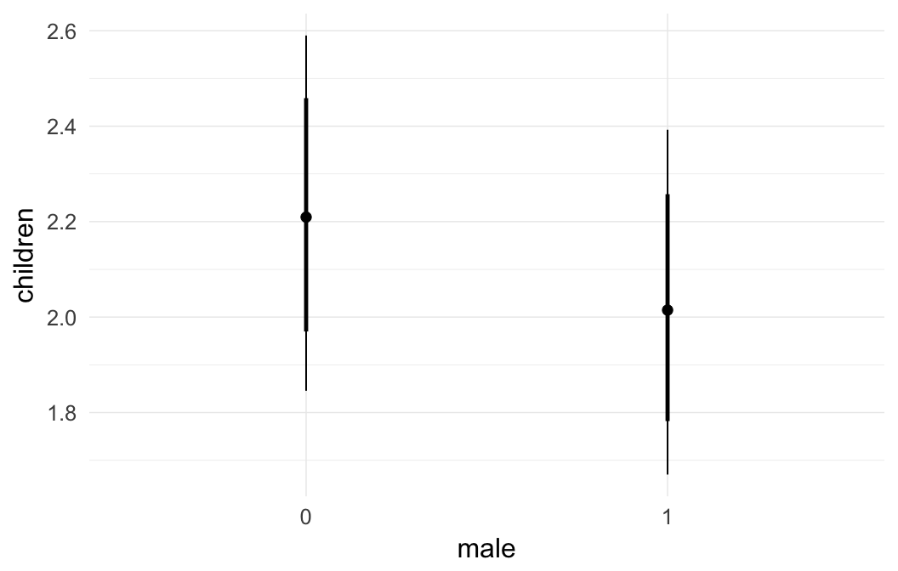
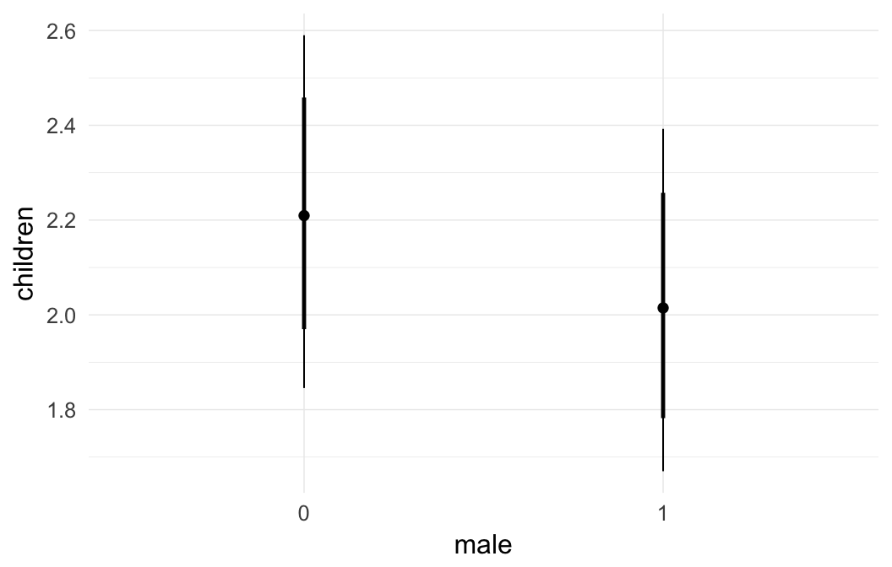
Coefficient plot
Coefficient estimates (95% and 80% credibility).
mcmc_intervals(as.matrix(model$fit), regex_pars = "b_[^I]")
mcmc_areas(as.matrix(model$fit), regex_pars = "b")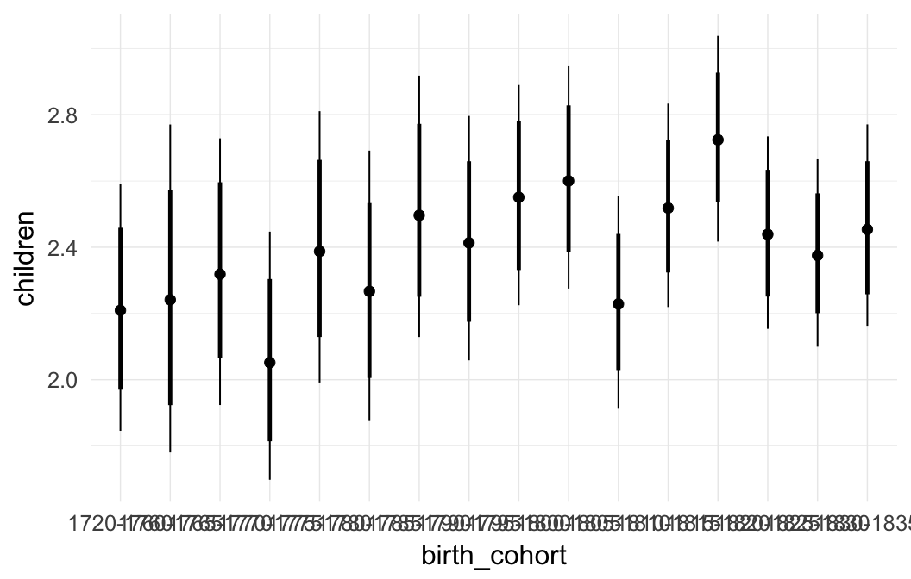
Diagnostics
These plots were made to diagnose misfit and nonconvergence.
Posterior predictive checks
brms::pp_check(model, re_formula = NA, type = "dens_overlay")brms::pp_check(model, re_formula = NA, type = "hist")Rhat
Did the 6 chains converge?
stanplot(model, pars = "^b_[^I]", type = 'rhat')Effective sample size by average sample size
stanplot(model, pars = "^b", type = 'ess')Monte Carlo SE
stanplot(model, pars = "^b", type = 'mcse')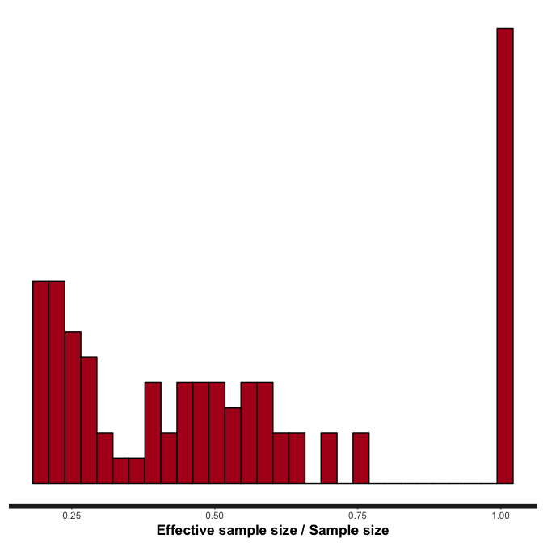
Trace plots
if(any( summary(model)$fixed[,"Rhat"] > 1.1)) { # only do traceplots if not converged
plot(model, N = 3, ask = FALSE)
}Further plots
stanplot(model, pars = "^b", type = 'diag')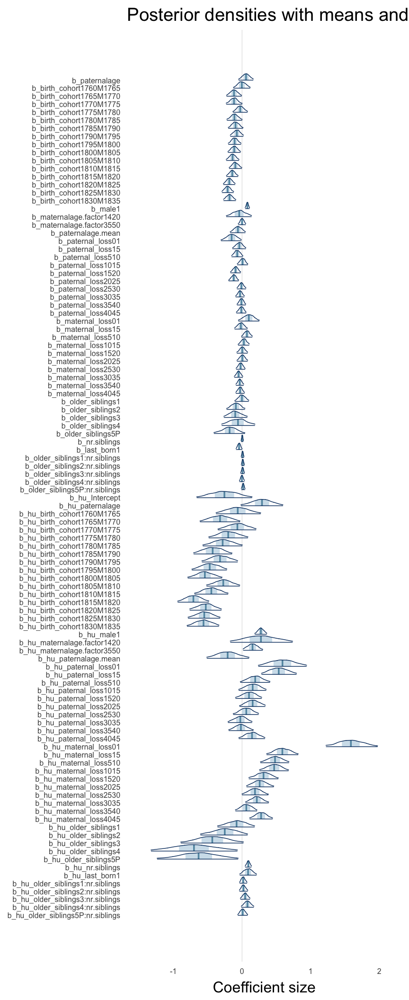
File name
coefs/krmh/r4_control_dependent_sibs.rds
Cluster script
opts_chunk$set(echo = FALSE)
clusterscript = str_replace(basename(model_filename), "\\.rds",".html")
cat("[Cluster script](" , clusterscript, ")", sep = "")r5: Birth order interacted with number of siblings
Plausibly, being first-born has a different effect, when one is an only child as opposed to having two siblings, etc. Here, we allow for such an interaction effect.
Model summary
Full summary
model_summary = summary(model, use_cache = FALSE, priors = TRUE)
print(model_summary)## Family: hurdle_poisson (log)
## Formula: children ~ paternalage + birth_cohort + male + maternalage.factor + paternalage.mean + paternal_loss + maternal_loss + older_siblings * nr.siblings + last_born + (1 | idParents)
## hu ~ paternalage + birth_cohort + male + maternalage.factor + paternalage.mean + paternal_loss + maternal_loss + older_siblings + nr.siblings + last_born + (1 | idParents) + older_siblings:nr.siblings
## Data: model_data (Number of observations: 9447)
## Samples: 6 chains, each with iter = 800; warmup = 300; thin = 1;
## total post-warmup samples = 3000
## WAIC: Not computed
##
## Priors:
## b ~ normal(0,5)
## sd ~ student_t(3, 0, 5)
## b_hu ~ normal(0,5)
## sd_hu ~ student_t(3, 0, 10)
##
## Group-Level Effects:
## ~idParents (Number of levels: 2186)
## Estimate Est.Error l-95% CI u-95% CI Eff.Sample Rhat
## sd(Intercept) 0.23 0.01 0.20 0.25 1165 1.00
## sd(hu_Intercept) 0.48 0.05 0.38 0.56 657 1.01
##
## Population-Level Effects:
## Estimate Est.Error l-95% CI u-95% CI
## Intercept 1.68 0.08 1.52 1.83
## paternalage 0.06 0.06 -0.05 0.16
## birth_cohort1760M1765 0.00 0.06 -0.13 0.12
## birth_cohort1765M1770 -0.12 0.06 -0.23 -0.01
## birth_cohort1770M1775 -0.12 0.06 -0.23 0.00
## birth_cohort1775M1780 -0.03 0.05 -0.13 0.08
## birth_cohort1780M1785 -0.11 0.06 -0.22 0.00
## birth_cohort1785M1790 -0.10 0.05 -0.20 0.02
## birth_cohort1790M1795 -0.08 0.05 -0.17 0.02
## birth_cohort1795M1800 -0.11 0.05 -0.20 -0.01
## birth_cohort1800M1805 -0.11 0.05 -0.21 -0.02
## birth_cohort1805M1810 -0.14 0.05 -0.23 -0.04
## birth_cohort1810M1815 -0.10 0.05 -0.19 0.00
## birth_cohort1815M1820 -0.14 0.04 -0.23 -0.06
## birth_cohort1820M1825 -0.19 0.04 -0.27 -0.10
## birth_cohort1825M1830 -0.21 0.04 -0.29 -0.12
## birth_cohort1830M1835 -0.18 0.05 -0.27 -0.09
## male1 0.08 0.02 0.04 0.11
## maternalage.factor1420 -0.04 0.09 -0.23 0.14
## maternalage.factor3550 0.00 0.03 -0.06 0.05
## paternalage.mean -0.06 0.06 -0.17 0.05
## paternal_loss01 -0.15 0.08 -0.31 -0.01
## paternal_loss15 -0.04 0.05 -0.14 0.06
## paternal_loss510 -0.07 0.04 -0.15 0.01
## paternal_loss1015 0.01 0.04 -0.07 0.08
## paternal_loss1520 -0.09 0.04 -0.17 -0.02
## paternal_loss2025 -0.12 0.04 -0.20 -0.05
## paternal_loss2530 -0.01 0.03 -0.07 0.06
## paternal_loss3035 -0.03 0.03 -0.09 0.03
## paternal_loss3540 -0.01 0.03 -0.07 0.05
## paternal_loss4045 -0.01 0.04 -0.08 0.06
## maternal_loss01 0.10 0.08 -0.05 0.25
## maternal_loss15 -0.02 0.05 -0.11 0.08
## maternal_loss510 0.07 0.04 -0.01 0.15
## maternal_loss1015 0.03 0.04 -0.06 0.10
## maternal_loss1520 0.00 0.04 -0.08 0.08
## maternal_loss2025 0.00 0.04 -0.07 0.08
## maternal_loss2530 -0.02 0.03 -0.09 0.05
## maternal_loss3035 -0.05 0.03 -0.11 0.01
## maternal_loss3540 -0.03 0.03 -0.09 0.02
## maternal_loss4045 -0.03 0.03 -0.09 0.04
## older_siblings1 0.00 0.05 -0.11 0.10
## older_siblings2 -0.09 0.07 -0.23 0.04
## older_siblings3 -0.10 0.09 -0.27 0.08
## older_siblings4 -0.06 0.13 -0.30 0.19
## older_siblings5P -0.18 0.11 -0.41 0.04
## nr.siblings 0.00 0.01 -0.02 0.02
## last_born1 -0.04 0.02 -0.09 0.00
## older_siblings1:nr.siblings 0.01 0.01 -0.01 0.03
## older_siblings2:nr.siblings 0.01 0.01 -0.01 0.03
## older_siblings3:nr.siblings 0.01 0.01 -0.02 0.04
## older_siblings4:nr.siblings 0.00 0.02 -0.04 0.04
## older_siblings5P:nr.siblings 0.02 0.01 -0.01 0.04
## hu_Intercept -0.26 0.21 -0.66 0.15
## hu_paternalage 0.29 0.15 -0.02 0.60
## hu_birth_cohort1760M1765 -0.06 0.17 -0.38 0.27
## hu_birth_cohort1765M1770 -0.32 0.15 -0.61 -0.03
## hu_birth_cohort1770M1775 -0.07 0.14 -0.35 0.21
## hu_birth_cohort1775M1780 -0.20 0.15 -0.49 0.09
## hu_birth_cohort1780M1785 -0.28 0.15 -0.57 0.00
## hu_birth_cohort1785M1790 -0.43 0.14 -0.71 -0.15
## hu_birth_cohort1790M1795 -0.32 0.14 -0.59 -0.06
## hu_birth_cohort1795M1800 -0.47 0.13 -0.73 -0.22
## hu_birth_cohort1800M1805 -0.54 0.13 -0.79 -0.29
## hu_birth_cohort1805M1810 -0.27 0.12 -0.52 -0.03
## hu_birth_cohort1810M1815 -0.45 0.12 -0.69 -0.20
## hu_birth_cohort1815M1820 -0.71 0.12 -0.94 -0.48
## hu_birth_cohort1820M1825 -0.53 0.12 -0.76 -0.30
## hu_birth_cohort1825M1830 -0.55 0.12 -0.79 -0.32
## hu_birth_cohort1830M1835 -0.56 0.12 -0.80 -0.34
## hu_male1 0.27 0.05 0.18 0.36
## hu_maternalage.factor1420 0.28 0.24 -0.17 0.74
## hu_maternalage.factor3550 0.15 0.07 0.02 0.30
## hu_paternalage.mean -0.21 0.16 -0.51 0.10
## hu_paternal_loss01 0.59 0.18 0.24 0.94
## hu_paternal_loss15 0.53 0.13 0.28 0.79
## hu_paternal_loss510 0.19 0.11 -0.03 0.41
## hu_paternal_loss1015 0.15 0.10 -0.05 0.35
## hu_paternal_loss1520 0.10 0.10 -0.10 0.29
## hu_paternal_loss2025 0.15 0.10 -0.04 0.34
## hu_paternal_loss2530 0.06 0.09 -0.13 0.24
## hu_paternal_loss3035 -0.03 0.09 -0.21 0.15
## hu_paternal_loss3540 -0.02 0.09 -0.20 0.17
## hu_paternal_loss4045 0.15 0.10 -0.05 0.33
## hu_maternal_loss01 1.59 0.19 1.22 1.98
## hu_maternal_loss15 0.59 0.12 0.36 0.82
## hu_maternal_loss510 0.48 0.11 0.27 0.68
## hu_maternal_loss1015 0.47 0.11 0.25 0.68
## hu_maternal_loss1520 0.31 0.11 0.10 0.53
## hu_maternal_loss2025 0.26 0.10 0.06 0.46
## hu_maternal_loss2530 0.19 0.10 0.00 0.38
## hu_maternal_loss3035 0.22 0.09 0.05 0.39
## hu_maternal_loss3540 0.06 0.08 -0.10 0.22
## hu_maternal_loss4045 0.28 0.09 0.11 0.45
## hu_older_siblings1 -0.08 0.14 -0.36 0.18
## hu_older_siblings2 -0.25 0.18 -0.61 0.08
## hu_older_siblings3 -0.43 0.23 -0.89 0.02
## hu_older_siblings4 -0.70 0.32 -1.33 -0.07
## hu_older_siblings5P -0.63 0.30 -1.24 -0.06
## hu_nr.siblings 0.09 0.02 0.04 0.14
## hu_last_born1 0.09 0.06 -0.03 0.21
## hu_older_siblings1:nr.siblings 0.02 0.03 -0.04 0.07
## hu_older_siblings2:nr.siblings 0.02 0.03 -0.04 0.08
## hu_older_siblings3:nr.siblings 0.05 0.04 -0.03 0.12
## hu_older_siblings4:nr.siblings 0.08 0.05 -0.01 0.17
## hu_older_siblings5P:nr.siblings 0.01 0.04 -0.06 0.08
## Eff.Sample Rhat
## Intercept 1301 1.01
## paternalage 1058 1.00
## birth_cohort1760M1765 1434 1.01
## birth_cohort1765M1770 834 1.01
## birth_cohort1770M1775 857 1.01
## birth_cohort1775M1780 792 1.02
## birth_cohort1780M1785 764 1.01
## birth_cohort1785M1790 931 1.01
## birth_cohort1790M1795 740 1.02
## birth_cohort1795M1800 707 1.02
## birth_cohort1800M1805 376 1.02
## birth_cohort1805M1810 636 1.02
## birth_cohort1810M1815 555 1.02
## birth_cohort1815M1820 520 1.02
## birth_cohort1820M1825 582 1.02
## birth_cohort1825M1830 299 1.02
## birth_cohort1830M1835 350 1.02
## male1 3000 1.00
## maternalage.factor1420 3000 1.00
## maternalage.factor3550 2380 1.00
## paternalage.mean 1094 1.00
## paternal_loss01 3000 1.00
## paternal_loss15 1394 1.00
## paternal_loss510 1468 1.00
## paternal_loss1015 1236 1.00
## paternal_loss1520 1114 1.00
## paternal_loss2025 1078 1.00
## paternal_loss2530 1025 1.00
## paternal_loss3035 1034 1.00
## paternal_loss3540 1359 1.00
## paternal_loss4045 3000 1.00
## maternal_loss01 3000 1.00
## maternal_loss15 2039 1.00
## maternal_loss510 3000 1.00
## maternal_loss1015 2324 1.00
## maternal_loss1520 2293 1.00
## maternal_loss2025 3000 1.00
## maternal_loss2530 1532 1.00
## maternal_loss3035 2002 1.00
## maternal_loss3540 2124 1.00
## maternal_loss4045 3000 1.00
## older_siblings1 1379 1.00
## older_siblings2 1277 1.00
## older_siblings3 1375 1.00
## older_siblings4 1116 1.00
## older_siblings5P 1329 1.00
## nr.siblings 1732 1.00
## last_born1 3000 1.00
## older_siblings1:nr.siblings 1592 1.00
## older_siblings2:nr.siblings 1533 1.00
## older_siblings3:nr.siblings 1850 1.00
## older_siblings4:nr.siblings 1549 1.00
## older_siblings5P:nr.siblings 1474 1.00
## hu_Intercept 1102 1.00
## hu_paternalage 986 1.00
## hu_birth_cohort1760M1765 3000 1.00
## hu_birth_cohort1765M1770 1173 1.01
## hu_birth_cohort1770M1775 1084 1.00
## hu_birth_cohort1775M1780 1050 1.01
## hu_birth_cohort1780M1785 1003 1.00
## hu_birth_cohort1785M1790 964 1.00
## hu_birth_cohort1790M1795 879 1.01
## hu_birth_cohort1795M1800 850 1.01
## hu_birth_cohort1800M1805 850 1.01
## hu_birth_cohort1805M1810 824 1.01
## hu_birth_cohort1810M1815 800 1.01
## hu_birth_cohort1815M1820 752 1.01
## hu_birth_cohort1820M1825 788 1.01
## hu_birth_cohort1825M1830 761 1.01
## hu_birth_cohort1830M1835 773 1.01
## hu_male1 3000 1.00
## hu_maternalage.factor1420 3000 1.00
## hu_maternalage.factor3550 3000 1.00
## hu_paternalage.mean 1009 1.00
## hu_paternal_loss01 3000 1.00
## hu_paternal_loss15 1531 1.00
## hu_paternal_loss510 1394 1.00
## hu_paternal_loss1015 1294 1.01
## hu_paternal_loss1520 1084 1.01
## hu_paternal_loss2025 1194 1.00
## hu_paternal_loss2530 1128 1.01
## hu_paternal_loss3035 1163 1.00
## hu_paternal_loss3540 1342 1.00
## hu_paternal_loss4045 1459 1.00
## hu_maternal_loss01 3000 1.00
## hu_maternal_loss15 1714 1.00
## hu_maternal_loss510 1569 1.00
## hu_maternal_loss1015 3000 1.00
## hu_maternal_loss1520 3000 1.00
## hu_maternal_loss2025 1688 1.00
## hu_maternal_loss2530 1578 1.00
## hu_maternal_loss3035 1549 1.00
## hu_maternal_loss3540 1662 1.00
## hu_maternal_loss4045 1586 1.00
## hu_older_siblings1 1127 1.00
## hu_older_siblings2 1045 1.00
## hu_older_siblings3 959 1.00
## hu_older_siblings4 1213 1.00
## hu_older_siblings5P 1182 1.00
## hu_nr.siblings 1614 1.00
## hu_last_born1 3000 1.00
## hu_older_siblings1:nr.siblings 1334 1.00
## hu_older_siblings2:nr.siblings 1540 1.00
## hu_older_siblings3:nr.siblings 1409 1.00
## hu_older_siblings4:nr.siblings 1792 1.00
## hu_older_siblings5P:nr.siblings 1831 1.00
##
## Samples were drawn using sampling(NUTS). For each parameter, Eff.Sample
## is a crude measure of effective sample size, and Rhat is the potential
## scale reduction factor on split chains (at convergence, Rhat = 1).Table of fixed effects
fixed_eff = data.frame(model_summary$fixed, check.names = F)
fixed_eff$Est.Error = fixed_eff$Eff.Sample = fixed_eff$Rhat = NULL
fixed_eff$OR = exp(fixed_eff$Estimate)
fixed_eff$OR_low = exp(fixed_eff$`l-95% CI`)
fixed_eff$OR_high = exp(fixed_eff$`u-95% CI`)
pander::pander(fixed_eff)| Estimate | l-95% CI | u-95% CI | OR | OR_low | OR_high | |
|---|---|---|---|---|---|---|
| Intercept | 1.677 | 1.521 | 1.832 | 5.35 | 4.576 | 6.245 |
| paternalage | 0.0577 | -0.05102 | 0.164 | 1.059 | 0.9503 | 1.178 |
| birth_cohort1760M1765 | -0.003307 | -0.126 | 0.1193 | 0.9967 | 0.8816 | 1.127 |
| birth_cohort1765M1770 | -0.1174 | -0.2274 | -0.005802 | 0.8892 | 0.7966 | 0.9942 |
| birth_cohort1770M1775 | -0.1173 | -0.2317 | 0.001968 | 0.8893 | 0.7932 | 1.002 |
| birth_cohort1775M1780 | -0.02643 | -0.1343 | 0.08058 | 0.9739 | 0.8743 | 1.084 |
| birth_cohort1780M1785 | -0.1111 | -0.2222 | 0.002544 | 0.8949 | 0.8007 | 1.003 |
| birth_cohort1785M1790 | -0.09515 | -0.2019 | 0.01512 | 0.9092 | 0.8172 | 1.015 |
| birth_cohort1790M1795 | -0.07628 | -0.1726 | 0.01994 | 0.9266 | 0.8415 | 1.02 |
| birth_cohort1795M1800 | -0.1085 | -0.2015 | -0.01436 | 0.8972 | 0.8175 | 0.9857 |
| birth_cohort1800M1805 | -0.1141 | -0.2069 | -0.02113 | 0.8921 | 0.8131 | 0.9791 |
| birth_cohort1805M1810 | -0.138 | -0.2319 | -0.04353 | 0.8711 | 0.793 | 0.9574 |
| birth_cohort1810M1815 | -0.09821 | -0.189 | -0.002262 | 0.9065 | 0.8278 | 0.9977 |
| birth_cohort1815M1820 | -0.1427 | -0.2284 | -0.05639 | 0.867 | 0.7958 | 0.9452 |
| birth_cohort1820M1825 | -0.1862 | -0.2735 | -0.09992 | 0.8301 | 0.7607 | 0.9049 |
| birth_cohort1825M1830 | -0.2105 | -0.2938 | -0.122 | 0.8101 | 0.7454 | 0.8852 |
| birth_cohort1830M1835 | -0.183 | -0.2706 | -0.09008 | 0.8328 | 0.7629 | 0.9139 |
| male1 | 0.07711 | 0.04499 | 0.1095 | 1.08 | 1.046 | 1.116 |
| maternalage.factor1420 | -0.04138 | -0.2302 | 0.1387 | 0.9595 | 0.7944 | 1.149 |
| maternalage.factor3550 | 2.444e-05 | -0.05694 | 0.0534 | 1 | 0.9447 | 1.055 |
| paternalage.mean | -0.06039 | -0.1741 | 0.04888 | 0.9414 | 0.8402 | 1.05 |
| paternal_loss01 | -0.152 | -0.3078 | -0.01004 | 0.859 | 0.7351 | 0.99 |
| paternal_loss15 | -0.04004 | -0.1398 | 0.05562 | 0.9607 | 0.8696 | 1.057 |
| paternal_loss510 | -0.07025 | -0.153 | 0.01283 | 0.9322 | 0.8582 | 1.013 |
| paternal_loss1015 | 0.007022 | -0.07097 | 0.08457 | 1.007 | 0.9315 | 1.088 |
| paternal_loss1520 | -0.09462 | -0.1703 | -0.01978 | 0.9097 | 0.8434 | 0.9804 |
| paternal_loss2025 | -0.1215 | -0.1966 | -0.0485 | 0.8856 | 0.8215 | 0.9527 |
| paternal_loss2530 | -0.009484 | -0.07435 | 0.05699 | 0.9906 | 0.9284 | 1.059 |
| paternal_loss3035 | -0.02925 | -0.09402 | 0.03338 | 0.9712 | 0.9103 | 1.034 |
| paternal_loss3540 | -0.009258 | -0.07443 | 0.05382 | 0.9908 | 0.9283 | 1.055 |
| paternal_loss4045 | -0.0104 | -0.08379 | 0.05953 | 0.9897 | 0.9196 | 1.061 |
| maternal_loss01 | 0.09873 | -0.05477 | 0.2517 | 1.104 | 0.9467 | 1.286 |
| maternal_loss15 | -0.01713 | -0.1093 | 0.07821 | 0.983 | 0.8964 | 1.081 |
| maternal_loss510 | 0.07111 | -0.009256 | 0.1502 | 1.074 | 0.9908 | 1.162 |
| maternal_loss1015 | 0.02607 | -0.05851 | 0.1048 | 1.026 | 0.9432 | 1.11 |
| maternal_loss1520 | 0.003188 | -0.0768 | 0.0812 | 1.003 | 0.9261 | 1.085 |
| maternal_loss2025 | 0.004079 | -0.07497 | 0.0822 | 1.004 | 0.9278 | 1.086 |
| maternal_loss2530 | -0.02123 | -0.08736 | 0.04543 | 0.979 | 0.9163 | 1.046 |
| maternal_loss3035 | -0.05083 | -0.1143 | 0.01147 | 0.9504 | 0.892 | 1.012 |
| maternal_loss3540 | -0.03317 | -0.0903 | 0.02428 | 0.9674 | 0.9137 | 1.025 |
| maternal_loss4045 | -0.02839 | -0.09196 | 0.036 | 0.972 | 0.9121 | 1.037 |
| older_siblings1 | -0.00205 | -0.1068 | 0.09916 | 0.998 | 0.8987 | 1.104 |
| older_siblings2 | -0.09005 | -0.2261 | 0.04289 | 0.9139 | 0.7977 | 1.044 |
| older_siblings3 | -0.09961 | -0.2661 | 0.07715 | 0.9052 | 0.7663 | 1.08 |
| older_siblings4 | -0.05921 | -0.2979 | 0.1882 | 0.9425 | 0.7424 | 1.207 |
| older_siblings5P | -0.1819 | -0.4108 | 0.04182 | 0.8337 | 0.6631 | 1.043 |
| nr.siblings | 0.002804 | -0.01538 | 0.02024 | 1.003 | 0.9847 | 1.02 |
| last_born1 | -0.04352 | -0.08807 | 0.001949 | 0.9574 | 0.9157 | 1.002 |
| older_siblings1:nr.siblings | 0.007671 | -0.01321 | 0.02853 | 1.008 | 0.9869 | 1.029 |
| older_siblings2:nr.siblings | 0.01117 | -0.01178 | 0.03494 | 1.011 | 0.9883 | 1.036 |
| older_siblings3:nr.siblings | 0.007829 | -0.02109 | 0.03552 | 1.008 | 0.9791 | 1.036 |
| older_siblings4:nr.siblings | -0.001781 | -0.03954 | 0.03508 | 0.9982 | 0.9612 | 1.036 |
| older_siblings5P:nr.siblings | 0.01626 | -0.01189 | 0.04425 | 1.016 | 0.9882 | 1.045 |
| hu_Intercept | -0.2571 | -0.6615 | 0.1467 | 0.7733 | 0.5161 | 1.158 |
| hu_paternalage | 0.2905 | -0.01777 | 0.596 | 1.337 | 0.9824 | 1.815 |
| hu_birth_cohort1760M1765 | -0.06296 | -0.3797 | 0.2727 | 0.939 | 0.6841 | 1.314 |
| hu_birth_cohort1765M1770 | -0.3208 | -0.614 | -0.02924 | 0.7256 | 0.5412 | 0.9712 |
| hu_birth_cohort1770M1775 | -0.06817 | -0.3525 | 0.2054 | 0.9341 | 0.703 | 1.228 |
| hu_birth_cohort1775M1780 | -0.2018 | -0.4863 | 0.08626 | 0.8173 | 0.6149 | 1.09 |
| hu_birth_cohort1780M1785 | -0.2828 | -0.5728 | 0.004519 | 0.7537 | 0.5639 | 1.005 |
| hu_birth_cohort1785M1790 | -0.4284 | -0.7069 | -0.1452 | 0.6515 | 0.4932 | 0.8648 |
| hu_birth_cohort1790M1795 | -0.321 | -0.5863 | -0.06337 | 0.7254 | 0.5564 | 0.9386 |
| hu_birth_cohort1795M1800 | -0.4717 | -0.7321 | -0.2212 | 0.6239 | 0.4809 | 0.8016 |
| hu_birth_cohort1800M1805 | -0.542 | -0.7923 | -0.2905 | 0.5816 | 0.4528 | 0.7479 |
| hu_birth_cohort1805M1810 | -0.2738 | -0.5187 | -0.03236 | 0.7605 | 0.5953 | 0.9682 |
| hu_birth_cohort1810M1815 | -0.4478 | -0.6936 | -0.2024 | 0.6391 | 0.4998 | 0.8168 |
| hu_birth_cohort1815M1820 | -0.7094 | -0.9392 | -0.4837 | 0.4919 | 0.3909 | 0.6165 |
| hu_birth_cohort1820M1825 | -0.5285 | -0.7636 | -0.2998 | 0.5895 | 0.466 | 0.741 |
| hu_birth_cohort1825M1830 | -0.5509 | -0.7882 | -0.3187 | 0.5764 | 0.4546 | 0.7271 |
| hu_birth_cohort1830M1835 | -0.5618 | -0.8028 | -0.3357 | 0.5702 | 0.4481 | 0.7148 |
| hu_male1 | 0.2741 | 0.1847 | 0.3613 | 1.315 | 1.203 | 1.435 |
| hu_maternalage.factor1420 | 0.2753 | -0.1726 | 0.7374 | 1.317 | 0.8415 | 2.091 |
| hu_maternalage.factor3550 | 0.1527 | 0.01502 | 0.3021 | 1.165 | 1.015 | 1.353 |
| hu_paternalage.mean | -0.2102 | -0.5149 | 0.1028 | 0.8104 | 0.5975 | 1.108 |
| hu_paternal_loss01 | 0.5891 | 0.2363 | 0.9413 | 1.802 | 1.267 | 2.563 |
| hu_paternal_loss15 | 0.5345 | 0.2824 | 0.7946 | 1.707 | 1.326 | 2.214 |
| hu_paternal_loss510 | 0.1916 | -0.02651 | 0.4079 | 1.211 | 0.9738 | 1.504 |
| hu_paternal_loss1015 | 0.1549 | -0.04987 | 0.3525 | 1.168 | 0.9514 | 1.423 |
| hu_paternal_loss1520 | 0.1012 | -0.09653 | 0.2871 | 1.107 | 0.908 | 1.333 |
| hu_paternal_loss2025 | 0.1546 | -0.03796 | 0.3396 | 1.167 | 0.9628 | 1.404 |
| hu_paternal_loss2530 | 0.06141 | -0.1299 | 0.2421 | 1.063 | 0.8782 | 1.274 |
| hu_paternal_loss3035 | -0.02521 | -0.2055 | 0.1465 | 0.9751 | 0.8142 | 1.158 |
| hu_paternal_loss3540 | -0.01674 | -0.1951 | 0.1651 | 0.9834 | 0.8227 | 1.179 |
| hu_paternal_loss4045 | 0.1452 | -0.04834 | 0.334 | 1.156 | 0.9528 | 1.397 |
| hu_maternal_loss01 | 1.586 | 1.223 | 1.976 | 4.886 | 3.396 | 7.216 |
| hu_maternal_loss15 | 0.5873 | 0.3575 | 0.8188 | 1.799 | 1.43 | 2.268 |
| hu_maternal_loss510 | 0.4806 | 0.2671 | 0.684 | 1.617 | 1.306 | 1.982 |
| hu_maternal_loss1015 | 0.4678 | 0.2538 | 0.6782 | 1.597 | 1.289 | 1.97 |
| hu_maternal_loss1520 | 0.3128 | 0.0982 | 0.5292 | 1.367 | 1.103 | 1.698 |
| hu_maternal_loss2025 | 0.2566 | 0.06459 | 0.4629 | 1.293 | 1.067 | 1.589 |
| hu_maternal_loss2530 | 0.1884 | -0.002141 | 0.3841 | 1.207 | 0.9979 | 1.468 |
| hu_maternal_loss3035 | 0.2152 | 0.05033 | 0.3888 | 1.24 | 1.052 | 1.475 |
| hu_maternal_loss3540 | 0.06198 | -0.09774 | 0.2183 | 1.064 | 0.9069 | 1.244 |
| hu_maternal_loss4045 | 0.2773 | 0.1097 | 0.4455 | 1.32 | 1.116 | 1.561 |
| hu_older_siblings1 | -0.07998 | -0.3581 | 0.1835 | 0.9231 | 0.699 | 1.201 |
| hu_older_siblings2 | -0.2519 | -0.6071 | 0.08134 | 0.7773 | 0.545 | 1.085 |
| hu_older_siblings3 | -0.4339 | -0.8942 | 0.02077 | 0.648 | 0.4089 | 1.021 |
| hu_older_siblings4 | -0.7007 | -1.328 | -0.06721 | 0.4962 | 0.2651 | 0.935 |
| hu_older_siblings5P | -0.6336 | -1.239 | -0.05613 | 0.5307 | 0.2898 | 0.9454 |
| hu_nr.siblings | 0.09122 | 0.04477 | 0.137 | 1.096 | 1.046 | 1.147 |
| hu_last_born1 | 0.08762 | -0.03445 | 0.2117 | 1.092 | 0.9661 | 1.236 |
| hu_older_siblings1:nr.siblings | 0.01654 | -0.03706 | 0.07232 | 1.017 | 0.9636 | 1.075 |
| hu_older_siblings2:nr.siblings | 0.02031 | -0.03954 | 0.08385 | 1.021 | 0.9612 | 1.087 |
| hu_older_siblings3:nr.siblings | 0.04518 | -0.02568 | 0.1162 | 1.046 | 0.9746 | 1.123 |
| hu_older_siblings4:nr.siblings | 0.07871 | -0.01214 | 0.172 | 1.082 | 0.9879 | 1.188 |
| hu_older_siblings5P:nr.siblings | 0.008732 | -0.06313 | 0.08264 | 1.009 | 0.9388 | 1.086 |
Paternal age effect
pander::pander(paternal_age_10y_effect(model))| effect | median_estimate | ci_95 | ci_80 |
|---|---|---|---|
| estimate father 25y | 2.3 | [1.95;2.72] | [2.07;2.56] |
| estimate father 35y | 2.05 | [1.63;2.58] | [1.75;2.39] |
| percentage change | -10.72 | [-28.05;9.92] | [-22.69;2.31] |
| OR/IRR | 1.06 | [0.95;1.18] | [0.99;1.14] |
| OR hurdle | 1.34 | [0.98;1.81] | [1.09;1.63] |
Marginal effect plots
plot.brmsMarginalEffects_shades(
x = marginal_effects(model, re_formula = NA, probs = c(0.025,0.975)),
y = marginal_effects(model, re_formula = NA, probs = c(0.1,0.9)),
ask = FALSE) 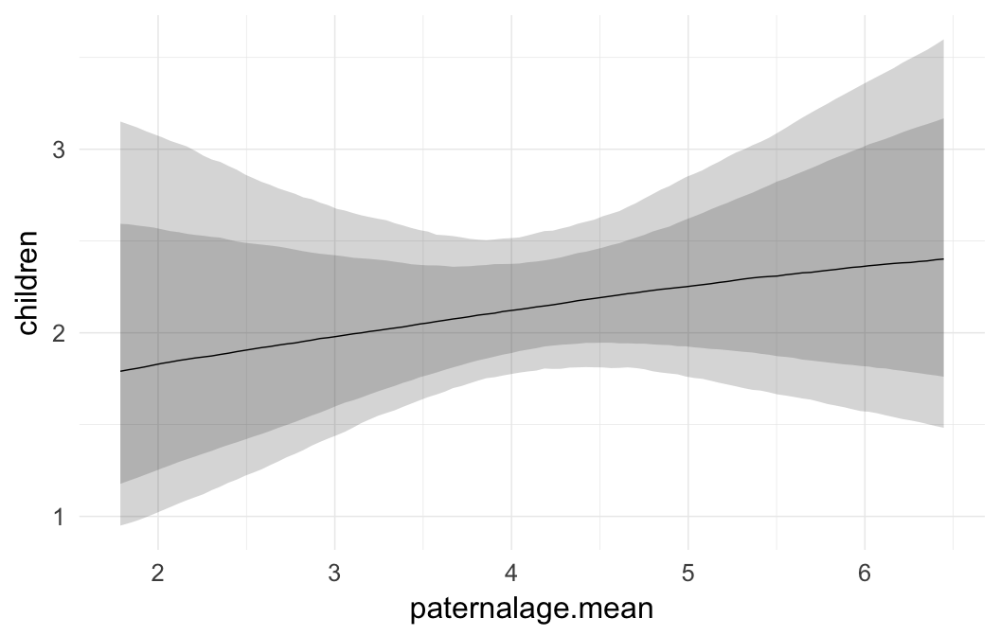
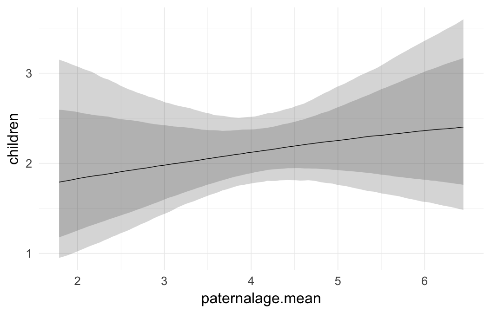
Coefficient plot
Coefficient estimates (95% and 80% credibility).
mcmc_intervals(as.matrix(model$fit), regex_pars = "b_[^I]")mcmc_areas(as.matrix(model$fit), regex_pars = "b")
Diagnostics
These plots were made to diagnose misfit and nonconvergence.
Posterior predictive checks
brms::pp_check(model, re_formula = NA, type = "dens_overlay")brms::pp_check(model, re_formula = NA, type = "hist")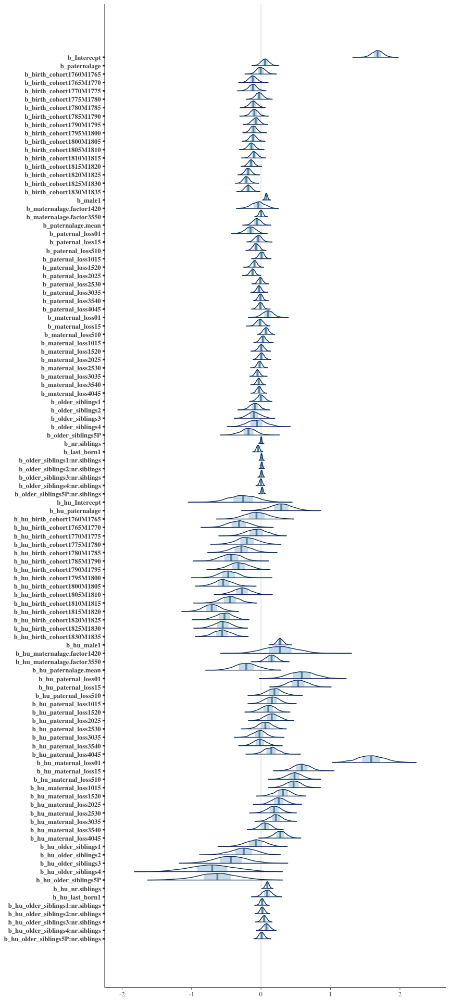
Rhat
Did the 6 chains converge?
stanplot(model, pars = "^b_[^I]", type = 'rhat')Effective sample size by average sample size
stanplot(model, pars = "^b", type = 'ess')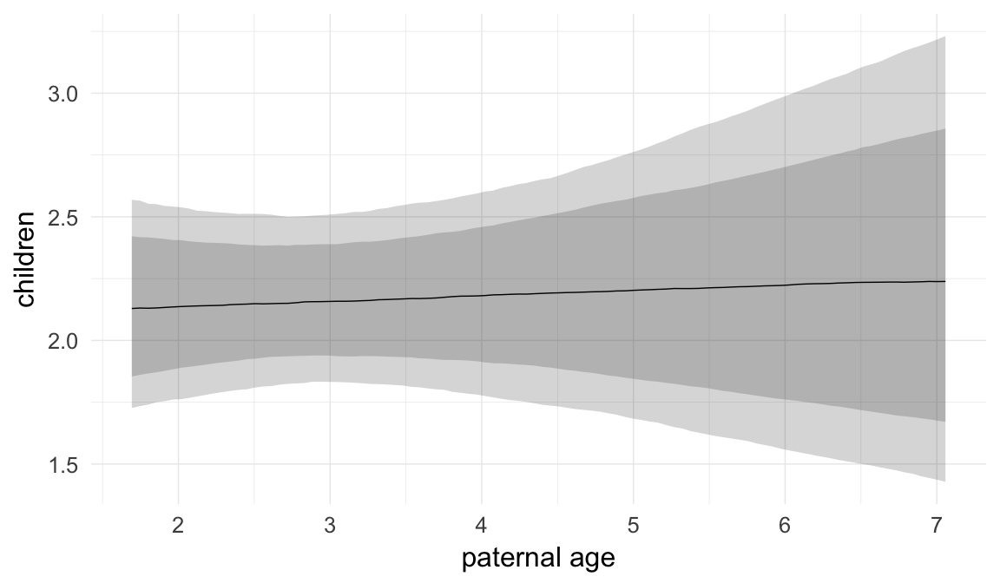
Monte Carlo SE
stanplot(model, pars = "^b", type = 'mcse')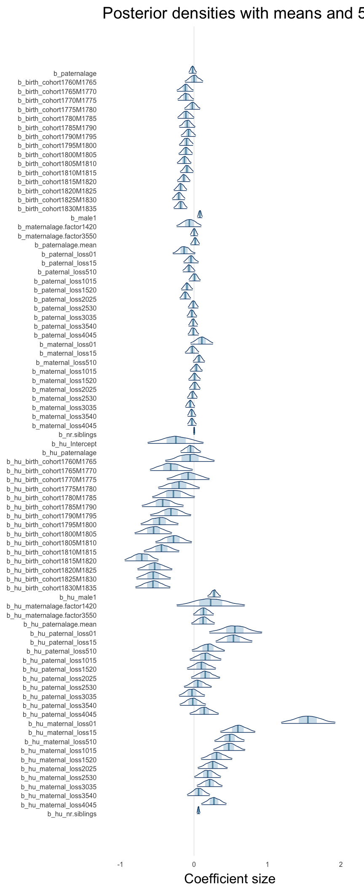
Trace plots
if(any( summary(model)$fixed[,"Rhat"] > 1.1)) { # only do traceplots if not converged
plot(model, N = 3, ask = FALSE)
}Further plots
stanplot(model, pars = "^b", type = 'diag')File name
coefs/krmh/r5_birth_order_interact_siblings.rds
Cluster script
opts_chunk$set(echo = FALSE)
clusterscript = str_replace(basename(model_filename), "\\.rds",".html")
cat("[Cluster script](" , clusterscript, ")", sep = "")r6: No birth order control
Paternal age and birth order are highly collinear with each other and with maternal age. Therefore, the choice to include this predictor widens standard errors for each predictor and may be disputed. Here we show what happens when we simply omit the birth order control.
Model summary
Full summary
model_summary = summary(model, use_cache = FALSE, priors = TRUE)
print(model_summary)## Family: hurdle_poisson (log)
## Formula: children ~ paternalage + birth_cohort + male + maternalage.factor + paternalage.mean + paternal_loss + maternal_loss + nr.siblings + (1 | idParents)
## hu ~ paternalage + birth_cohort + male + maternalage.factor + paternalage.mean + paternal_loss + maternal_loss + nr.siblings + (1 | idParents)
## Data: model_data (Number of observations: 9447)
## Samples: 6 chains, each with iter = 800; warmup = 300; thin = 1;
## total post-warmup samples = 3000
## WAIC: Not computed
##
## Priors:
## b ~ normal(0,5)
## sd ~ student_t(3, 0, 5)
## b_hu ~ normal(0,5)
## sd_hu ~ student_t(3, 0, 10)
##
## Group-Level Effects:
## ~idParents (Number of levels: 2186)
## Estimate Est.Error l-95% CI u-95% CI Eff.Sample Rhat
## sd(Intercept) 0.23 0.01 0.20 0.25 909 1.00
## sd(hu_Intercept) 0.47 0.05 0.38 0.56 576 1.01
##
## Population-Level Effects:
## Estimate Est.Error l-95% CI u-95% CI Eff.Sample
## Intercept 1.64 0.08 1.49 1.79 1280
## paternalage -0.02 0.03 -0.07 0.03 1190
## birth_cohort1760M1765 0.00 0.06 -0.12 0.12 1518
## birth_cohort1765M1770 -0.12 0.06 -0.23 -0.01 1130
## birth_cohort1770M1775 -0.11 0.06 -0.22 -0.01 991
## birth_cohort1775M1780 -0.02 0.05 -0.13 0.08 954
## birth_cohort1780M1785 -0.11 0.06 -0.22 0.00 1093
## birth_cohort1785M1790 -0.09 0.05 -0.20 0.02 933
## birth_cohort1790M1795 -0.07 0.05 -0.18 0.02 836
## birth_cohort1795M1800 -0.10 0.05 -0.20 -0.01 823
## birth_cohort1800M1805 -0.11 0.05 -0.21 -0.02 811
## birth_cohort1805M1810 -0.13 0.05 -0.23 -0.04 822
## birth_cohort1810M1815 -0.10 0.05 -0.19 -0.01 759
## birth_cohort1815M1820 -0.14 0.04 -0.23 -0.05 734
## birth_cohort1820M1825 -0.18 0.04 -0.27 -0.10 715
## birth_cohort1825M1830 -0.21 0.04 -0.30 -0.12 749
## birth_cohort1830M1835 -0.18 0.05 -0.28 -0.09 778
## male1 0.08 0.02 0.05 0.11 3000
## maternalage.factor1420 -0.06 0.09 -0.24 0.10 3000
## maternalage.factor3550 0.00 0.03 -0.05 0.05 2155
## paternalage.mean 0.02 0.03 -0.05 0.08 1426
## paternal_loss01 -0.14 0.07 -0.29 0.02 3000
## paternal_loss15 -0.04 0.05 -0.14 0.06 1846
## paternal_loss510 -0.07 0.04 -0.15 0.01 1489
## paternal_loss1015 0.01 0.04 -0.07 0.09 1320
## paternal_loss1520 -0.10 0.04 -0.17 -0.02 1435
## paternal_loss2025 -0.12 0.04 -0.19 -0.05 1391
## paternal_loss2530 -0.01 0.03 -0.08 0.06 1240
## paternal_loss3035 -0.03 0.03 -0.09 0.04 1285
## paternal_loss3540 -0.01 0.03 -0.07 0.05 1391
## paternal_loss4045 -0.01 0.04 -0.08 0.06 1738
## maternal_loss01 0.11 0.08 -0.05 0.26 3000
## maternal_loss15 -0.02 0.05 -0.12 0.07 1901
## maternal_loss510 0.07 0.04 -0.01 0.15 3000
## maternal_loss1015 0.03 0.04 -0.05 0.11 1839
## maternal_loss1520 0.01 0.04 -0.07 0.09 1825
## maternal_loss2025 0.01 0.04 -0.06 0.08 1795
## maternal_loss2530 -0.02 0.03 -0.09 0.04 1662
## maternal_loss3035 -0.05 0.03 -0.12 0.01 1858
## maternal_loss3540 -0.03 0.03 -0.09 0.03 1903
## maternal_loss4045 -0.03 0.03 -0.09 0.03 2055
## nr.siblings 0.00 0.00 -0.01 0.01 2552
## hu_Intercept -0.25 0.19 -0.63 0.13 703
## hu_paternalage -0.05 0.07 -0.18 0.09 1460
## hu_birth_cohort1760M1765 -0.05 0.17 -0.39 0.28 3000
## hu_birth_cohort1765M1770 -0.32 0.15 -0.60 -0.02 862
## hu_birth_cohort1770M1775 -0.08 0.15 -0.37 0.21 731
## hu_birth_cohort1775M1780 -0.20 0.15 -0.49 0.08 712
## hu_birth_cohort1780M1785 -0.28 0.15 -0.57 0.01 816
## hu_birth_cohort1785M1790 -0.43 0.14 -0.71 -0.14 757
## hu_birth_cohort1790M1795 -0.31 0.14 -0.59 -0.04 698
## hu_birth_cohort1795M1800 -0.47 0.13 -0.72 -0.21 516
## hu_birth_cohort1800M1805 -0.55 0.13 -0.81 -0.30 555
## hu_birth_cohort1805M1810 -0.28 0.13 -0.52 -0.03 546
## hu_birth_cohort1810M1815 -0.44 0.12 -0.68 -0.20 518
## hu_birth_cohort1815M1820 -0.71 0.12 -0.94 -0.49 444
## hu_birth_cohort1820M1825 -0.54 0.12 -0.77 -0.30 517
## hu_birth_cohort1825M1830 -0.56 0.12 -0.78 -0.32 503
## hu_birth_cohort1830M1835 -0.56 0.12 -0.80 -0.32 504
## hu_male1 0.27 0.04 0.19 0.36 3000
## hu_maternalage.factor1420 0.23 0.23 -0.23 0.69 3000
## hu_maternalage.factor3550 0.13 0.07 -0.01 0.27 2206
## hu_paternalage.mean 0.12 0.08 -0.03 0.28 1434
## hu_paternal_loss01 0.56 0.18 0.21 0.92 3000
## hu_paternal_loss15 0.54 0.13 0.30 0.79 1696
## hu_paternal_loss510 0.19 0.11 -0.03 0.42 1318
## hu_paternal_loss1015 0.15 0.11 -0.06 0.37 1589
## hu_paternal_loss1520 0.10 0.10 -0.09 0.30 1124
## hu_paternal_loss2025 0.15 0.10 -0.04 0.35 1197
## hu_paternal_loss2530 0.05 0.09 -0.13 0.24 975
## hu_paternal_loss3035 -0.03 0.09 -0.20 0.15 1216
## hu_paternal_loss3540 -0.02 0.09 -0.19 0.16 1342
## hu_paternal_loss4045 0.14 0.10 -0.06 0.33 3000
## hu_maternal_loss01 1.55 0.19 1.19 1.92 3000
## hu_maternal_loss15 0.60 0.12 0.36 0.83 3000
## hu_maternal_loss510 0.49 0.10 0.28 0.69 1905
## hu_maternal_loss1015 0.47 0.11 0.27 0.69 3000
## hu_maternal_loss1520 0.31 0.11 0.10 0.52 3000
## hu_maternal_loss2025 0.25 0.10 0.05 0.46 3000
## hu_maternal_loss2530 0.19 0.09 0.01 0.36 1609
## hu_maternal_loss3035 0.21 0.09 0.04 0.39 1886
## hu_maternal_loss3540 0.06 0.08 -0.09 0.21 3000
## hu_maternal_loss4045 0.27 0.09 0.10 0.44 3000
## hu_nr.siblings 0.06 0.01 0.04 0.08 3000
## Rhat
## Intercept 1.00
## paternalage 1.00
## birth_cohort1760M1765 1.00
## birth_cohort1765M1770 1.01
## birth_cohort1770M1775 1.00
## birth_cohort1775M1780 1.01
## birth_cohort1780M1785 1.00
## birth_cohort1785M1790 1.00
## birth_cohort1790M1795 1.01
## birth_cohort1795M1800 1.01
## birth_cohort1800M1805 1.01
## birth_cohort1805M1810 1.01
## birth_cohort1810M1815 1.01
## birth_cohort1815M1820 1.01
## birth_cohort1820M1825 1.01
## birth_cohort1825M1830 1.01
## birth_cohort1830M1835 1.00
## male1 1.00
## maternalage.factor1420 1.00
## maternalage.factor3550 1.00
## paternalage.mean 1.00
## paternal_loss01 1.00
## paternal_loss15 1.00
## paternal_loss510 1.00
## paternal_loss1015 1.00
## paternal_loss1520 1.00
## paternal_loss2025 1.00
## paternal_loss2530 1.01
## paternal_loss3035 1.01
## paternal_loss3540 1.00
## paternal_loss4045 1.00
## maternal_loss01 1.00
## maternal_loss15 1.00
## maternal_loss510 1.00
## maternal_loss1015 1.00
## maternal_loss1520 1.00
## maternal_loss2025 1.00
## maternal_loss2530 1.00
## maternal_loss3035 1.00
## maternal_loss3540 1.00
## maternal_loss4045 1.00
## nr.siblings 1.00
## hu_Intercept 1.00
## hu_paternalage 1.00
## hu_birth_cohort1760M1765 1.00
## hu_birth_cohort1765M1770 1.00
## hu_birth_cohort1770M1775 1.01
## hu_birth_cohort1775M1780 1.01
## hu_birth_cohort1780M1785 1.00
## hu_birth_cohort1785M1790 1.01
## hu_birth_cohort1790M1795 1.01
## hu_birth_cohort1795M1800 1.01
## hu_birth_cohort1800M1805 1.01
## hu_birth_cohort1805M1810 1.01
## hu_birth_cohort1810M1815 1.01
## hu_birth_cohort1815M1820 1.01
## hu_birth_cohort1820M1825 1.01
## hu_birth_cohort1825M1830 1.01
## hu_birth_cohort1830M1835 1.01
## hu_male1 1.00
## hu_maternalage.factor1420 1.00
## hu_maternalage.factor3550 1.00
## hu_paternalage.mean 1.00
## hu_paternal_loss01 1.00
## hu_paternal_loss15 1.00
## hu_paternal_loss510 1.00
## hu_paternal_loss1015 1.00
## hu_paternal_loss1520 1.00
## hu_paternal_loss2025 1.00
## hu_paternal_loss2530 1.00
## hu_paternal_loss3035 1.00
## hu_paternal_loss3540 1.00
## hu_paternal_loss4045 1.00
## hu_maternal_loss01 1.00
## hu_maternal_loss15 1.00
## hu_maternal_loss510 1.00
## hu_maternal_loss1015 1.00
## hu_maternal_loss1520 1.00
## hu_maternal_loss2025 1.00
## hu_maternal_loss2530 1.00
## hu_maternal_loss3035 1.00
## hu_maternal_loss3540 1.00
## hu_maternal_loss4045 1.00
## hu_nr.siblings 1.00
##
## Samples were drawn using sampling(NUTS). For each parameter, Eff.Sample
## is a crude measure of effective sample size, and Rhat is the potential
## scale reduction factor on split chains (at convergence, Rhat = 1).Table of fixed effects
fixed_eff = data.frame(model_summary$fixed, check.names = F)
fixed_eff$Est.Error = fixed_eff$Eff.Sample = fixed_eff$Rhat = NULL
fixed_eff$OR = exp(fixed_eff$Estimate)
fixed_eff$OR_low = exp(fixed_eff$`l-95% CI`)
fixed_eff$OR_high = exp(fixed_eff$`u-95% CI`)
pander::pander(fixed_eff)| Estimate | l-95% CI | u-95% CI | OR | OR_low | OR_high | |
|---|---|---|---|---|---|---|
| Intercept | 1.639 | 1.489 | 1.79 | 5.15 | 4.432 | 5.992 |
| paternalage | -0.01882 | -0.06966 | 0.03325 | 0.9814 | 0.9327 | 1.034 |
| birth_cohort1760M1765 | 0.0006686 | -0.1226 | 0.1207 | 1.001 | 0.8846 | 1.128 |
| birth_cohort1765M1770 | -0.118 | -0.2326 | -0.009046 | 0.8887 | 0.7925 | 0.991 |
| birth_cohort1770M1775 | -0.1114 | -0.2207 | -0.005134 | 0.8946 | 0.802 | 0.9949 |
| birth_cohort1775M1780 | -0.02281 | -0.1286 | 0.0825 | 0.9774 | 0.8794 | 1.086 |
| birth_cohort1780M1785 | -0.1106 | -0.2217 | 0.0007775 | 0.8953 | 0.8012 | 1.001 |
| birth_cohort1785M1790 | -0.0925 | -0.2007 | 0.01522 | 0.9116 | 0.8182 | 1.015 |
| birth_cohort1790M1795 | -0.07494 | -0.1762 | 0.02234 | 0.9278 | 0.8384 | 1.023 |
| birth_cohort1795M1800 | -0.1021 | -0.201 | -0.01284 | 0.9029 | 0.8179 | 0.9872 |
| birth_cohort1800M1805 | -0.11 | -0.2078 | -0.02094 | 0.8959 | 0.8124 | 0.9793 |
| birth_cohort1805M1810 | -0.1312 | -0.229 | -0.03855 | 0.877 | 0.7953 | 0.9622 |
| birth_cohort1810M1815 | -0.09626 | -0.1876 | -0.009652 | 0.9082 | 0.8289 | 0.9904 |
| birth_cohort1815M1820 | -0.1385 | -0.2271 | -0.05237 | 0.8707 | 0.7968 | 0.949 |
| birth_cohort1820M1825 | -0.1828 | -0.2742 | -0.09843 | 0.8329 | 0.7602 | 0.9063 |
| birth_cohort1825M1830 | -0.2077 | -0.2966 | -0.1228 | 0.8125 | 0.7433 | 0.8844 |
| birth_cohort1830M1835 | -0.1814 | -0.2758 | -0.09283 | 0.8341 | 0.7589 | 0.9113 |
| male1 | 0.08013 | 0.0464 | 0.1122 | 1.083 | 1.047 | 1.119 |
| maternalage.factor1420 | -0.06392 | -0.236 | 0.09876 | 0.9381 | 0.7898 | 1.104 |
| maternalage.factor3550 | 0.001583 | -0.0494 | 0.05314 | 1.002 | 0.9518 | 1.055 |
| paternalage.mean | 0.01636 | -0.04817 | 0.07526 | 1.016 | 0.953 | 1.078 |
| paternal_loss01 | -0.1351 | -0.2875 | 0.01596 | 0.8736 | 0.7501 | 1.016 |
| paternal_loss15 | -0.04188 | -0.1416 | 0.06091 | 0.959 | 0.868 | 1.063 |
| paternal_loss510 | -0.06874 | -0.1523 | 0.01414 | 0.9336 | 0.8587 | 1.014 |
| paternal_loss1015 | 0.006329 | -0.06917 | 0.08629 | 1.006 | 0.9332 | 1.09 |
| paternal_loss1520 | -0.0959 | -0.1728 | -0.01825 | 0.9086 | 0.8413 | 0.9819 |
| paternal_loss2025 | -0.1188 | -0.1928 | -0.04588 | 0.8879 | 0.8247 | 0.9552 |
| paternal_loss2530 | -0.009665 | -0.07891 | 0.05833 | 0.9904 | 0.9241 | 1.06 |
| paternal_loss3035 | -0.02949 | -0.09489 | 0.03778 | 0.9709 | 0.9095 | 1.038 |
| paternal_loss3540 | -0.01135 | -0.07401 | 0.04847 | 0.9887 | 0.9287 | 1.05 |
| paternal_loss4045 | -0.009316 | -0.08149 | 0.06399 | 0.9907 | 0.9217 | 1.066 |
| maternal_loss01 | 0.1065 | -0.04576 | 0.2577 | 1.112 | 0.9553 | 1.294 |
| maternal_loss15 | -0.0243 | -0.1207 | 0.06517 | 0.976 | 0.8863 | 1.067 |
| maternal_loss510 | 0.06733 | -0.01261 | 0.1464 | 1.07 | 0.9875 | 1.158 |
| maternal_loss1015 | 0.03056 | -0.05303 | 0.114 | 1.031 | 0.9484 | 1.121 |
| maternal_loss1520 | 0.007887 | -0.07337 | 0.08636 | 1.008 | 0.9293 | 1.09 |
| maternal_loss2025 | 0.009744 | -0.06363 | 0.08396 | 1.01 | 0.9384 | 1.088 |
| maternal_loss2530 | -0.02181 | -0.0912 | 0.04422 | 0.9784 | 0.9128 | 1.045 |
| maternal_loss3035 | -0.05259 | -0.1167 | 0.01029 | 0.9488 | 0.8898 | 1.01 |
| maternal_loss3540 | -0.03165 | -0.08716 | 0.02626 | 0.9688 | 0.9165 | 1.027 |
| maternal_loss4045 | -0.02863 | -0.08656 | 0.03159 | 0.9718 | 0.9171 | 1.032 |
| nr.siblings | 0.002089 | -0.006066 | 0.01018 | 1.002 | 0.994 | 1.01 |
| hu_Intercept | -0.2465 | -0.6288 | 0.1268 | 0.7815 | 0.5332 | 1.135 |
| hu_paternalage | -0.04745 | -0.1821 | 0.09196 | 0.9537 | 0.8335 | 1.096 |
| hu_birth_cohort1760M1765 | -0.05276 | -0.3899 | 0.2778 | 0.9486 | 0.6772 | 1.32 |
| hu_birth_cohort1765M1770 | -0.3173 | -0.5975 | -0.01956 | 0.7281 | 0.5502 | 0.9806 |
| hu_birth_cohort1770M1775 | -0.07956 | -0.369 | 0.2093 | 0.9235 | 0.6914 | 1.233 |
| hu_birth_cohort1775M1780 | -0.2042 | -0.4856 | 0.07599 | 0.8153 | 0.6154 | 1.079 |
| hu_birth_cohort1780M1785 | -0.2802 | -0.5665 | 0.009159 | 0.7557 | 0.5675 | 1.009 |
| hu_birth_cohort1785M1790 | -0.4262 | -0.708 | -0.1438 | 0.653 | 0.4926 | 0.8661 |
| hu_birth_cohort1790M1795 | -0.3142 | -0.5948 | -0.04156 | 0.7304 | 0.5517 | 0.9593 |
| hu_birth_cohort1795M1800 | -0.4703 | -0.7233 | -0.2141 | 0.6248 | 0.4851 | 0.8072 |
| hu_birth_cohort1800M1805 | -0.55 | -0.8061 | -0.3027 | 0.577 | 0.4466 | 0.7388 |
| hu_birth_cohort1805M1810 | -0.2791 | -0.5229 | -0.0316 | 0.7564 | 0.5928 | 0.9689 |
| hu_birth_cohort1810M1815 | -0.4432 | -0.6812 | -0.2028 | 0.642 | 0.506 | 0.8165 |
| hu_birth_cohort1815M1820 | -0.7111 | -0.942 | -0.4851 | 0.4911 | 0.3898 | 0.6156 |
| hu_birth_cohort1820M1825 | -0.5355 | -0.7673 | -0.2983 | 0.5854 | 0.4643 | 0.7421 |
| hu_birth_cohort1825M1830 | -0.5554 | -0.7823 | -0.3191 | 0.5739 | 0.4573 | 0.7268 |
| hu_birth_cohort1830M1835 | -0.5588 | -0.7954 | -0.3242 | 0.5719 | 0.4514 | 0.7231 |
| hu_male1 | 0.273 | 0.1855 | 0.3616 | 1.314 | 1.204 | 1.436 |
| hu_maternalage.factor1420 | 0.2269 | -0.2342 | 0.6892 | 1.255 | 0.7912 | 1.992 |
| hu_maternalage.factor3550 | 0.1289 | -0.008515 | 0.2664 | 1.138 | 0.9915 | 1.305 |
| hu_paternalage.mean | 0.1235 | -0.03457 | 0.28 | 1.131 | 0.966 | 1.323 |
| hu_paternal_loss01 | 0.5557 | 0.2096 | 0.9241 | 1.743 | 1.233 | 2.52 |
| hu_paternal_loss15 | 0.5368 | 0.297 | 0.7912 | 1.711 | 1.346 | 2.206 |
| hu_paternal_loss510 | 0.1908 | -0.02635 | 0.4168 | 1.21 | 0.974 | 1.517 |
| hu_paternal_loss1015 | 0.1532 | -0.05638 | 0.3688 | 1.166 | 0.9452 | 1.446 |
| hu_paternal_loss1520 | 0.09973 | -0.0925 | 0.2956 | 1.105 | 0.9117 | 1.344 |
| hu_paternal_loss2025 | 0.1524 | -0.03726 | 0.352 | 1.165 | 0.9634 | 1.422 |
| hu_paternal_loss2530 | 0.05161 | -0.1343 | 0.2381 | 1.053 | 0.8743 | 1.269 |
| hu_paternal_loss3035 | -0.0277 | -0.2036 | 0.1465 | 0.9727 | 0.8158 | 1.158 |
| hu_paternal_loss3540 | -0.01711 | -0.193 | 0.1591 | 0.983 | 0.8245 | 1.172 |
| hu_paternal_loss4045 | 0.1384 | -0.05753 | 0.3345 | 1.148 | 0.9441 | 1.397 |
| hu_maternal_loss01 | 1.55 | 1.188 | 1.922 | 4.713 | 3.282 | 6.831 |
| hu_maternal_loss15 | 0.5973 | 0.3593 | 0.8314 | 1.817 | 1.432 | 2.296 |
| hu_maternal_loss510 | 0.4852 | 0.2799 | 0.6853 | 1.624 | 1.323 | 1.984 |
| hu_maternal_loss1015 | 0.4736 | 0.2651 | 0.6941 | 1.606 | 1.304 | 2.002 |
| hu_maternal_loss1520 | 0.3074 | 0.09626 | 0.5189 | 1.36 | 1.101 | 1.68 |
| hu_maternal_loss2025 | 0.2538 | 0.05247 | 0.4551 | 1.289 | 1.054 | 1.576 |
| hu_maternal_loss2530 | 0.1861 | 0.005899 | 0.364 | 1.205 | 1.006 | 1.439 |
| hu_maternal_loss3035 | 0.2116 | 0.04113 | 0.385 | 1.236 | 1.042 | 1.47 |
| hu_maternal_loss3540 | 0.06184 | -0.0917 | 0.2147 | 1.064 | 0.9124 | 1.24 |
| hu_maternal_loss4045 | 0.2712 | 0.1011 | 0.4398 | 1.312 | 1.106 | 1.552 |
| hu_nr.siblings | 0.06051 | 0.03956 | 0.08179 | 1.062 | 1.04 | 1.085 |
Paternal age effect
pander::pander(paternal_age_10y_effect(model))| effect | median_estimate | ci_95 | ci_80 |
|---|---|---|---|
| estimate father 25y | 2.17 | [1.83;2.53] | [1.95;2.4] |
| estimate father 35y | 2.19 | [1.83;2.58] | [1.95;2.44] |
| percentage change | 1.05 | [-8.48;11.09] | [-5.31;7.43] |
| OR/IRR | 0.98 | [0.93;1.03] | [0.95;1.02] |
| OR hurdle | 0.95 | [0.83;1.1] | [0.87;1.04] |
Marginal effect plots
plot.brmsMarginalEffects_shades(
x = marginal_effects(model, re_formula = NA, probs = c(0.025,0.975)),
y = marginal_effects(model, re_formula = NA, probs = c(0.1,0.9)),
ask = FALSE)
 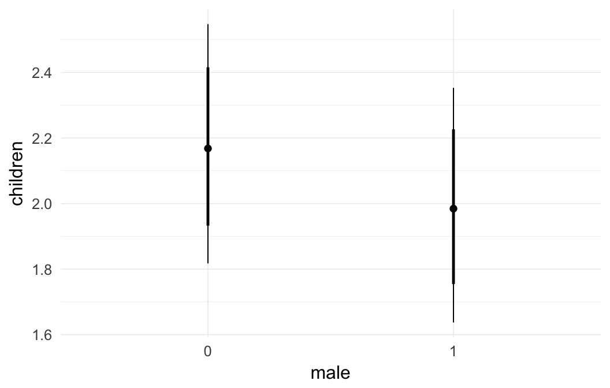
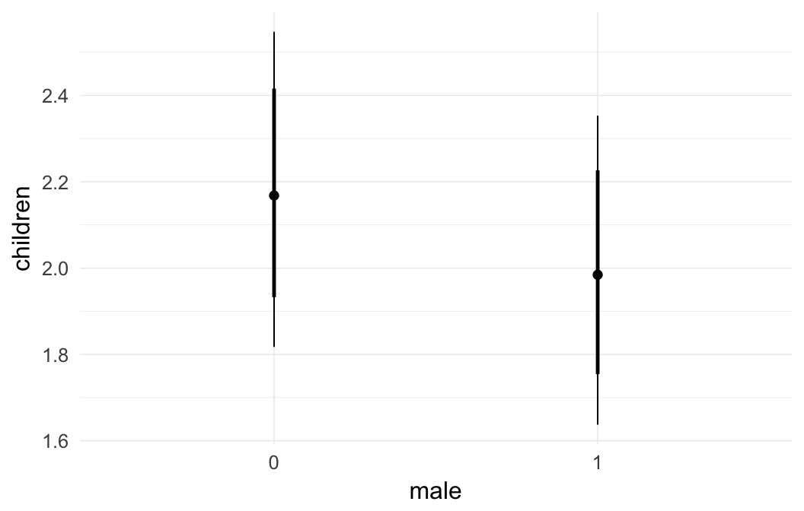
Coefficient plot
Coefficient estimates (95% and 80% credibility).
mcmc_intervals(as.matrix(model$fit), regex_pars = "b_[^I]")mcmc_areas(as.matrix(model$fit), regex_pars = "b")Diagnostics
These plots were made to diagnose misfit and nonconvergence.
Posterior predictive checks
brms::pp_check(model, re_formula = NA, type = "dens_overlay")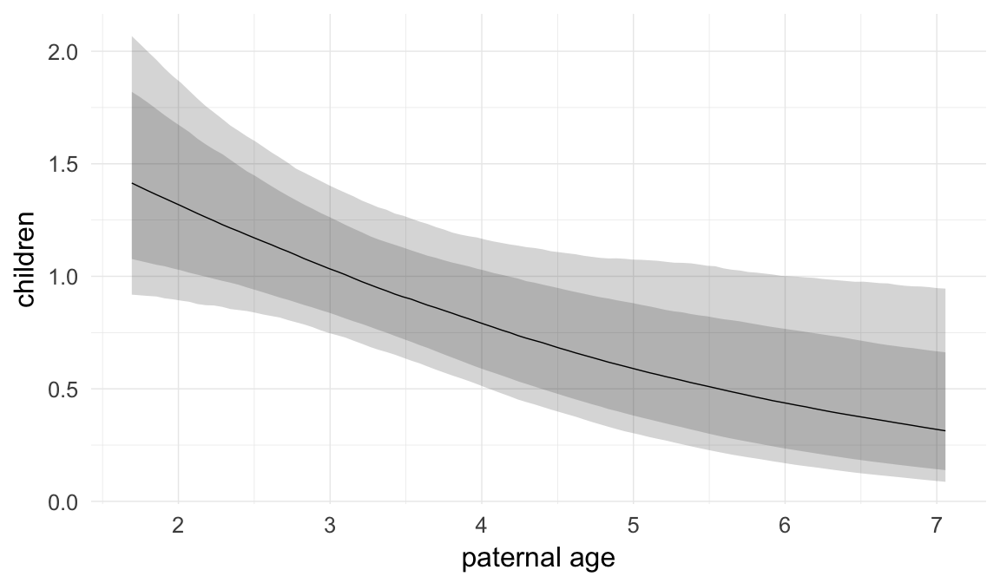
brms::pp_check(model, re_formula = NA, type = "hist")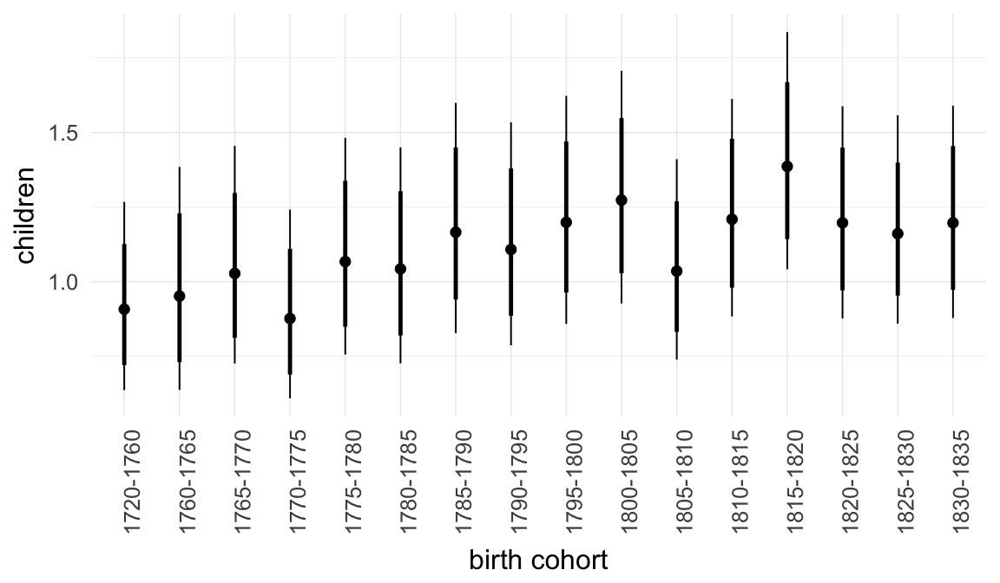
Rhat
Did the 6 chains converge?
stanplot(model, pars = "^b_[^I]", type = 'rhat')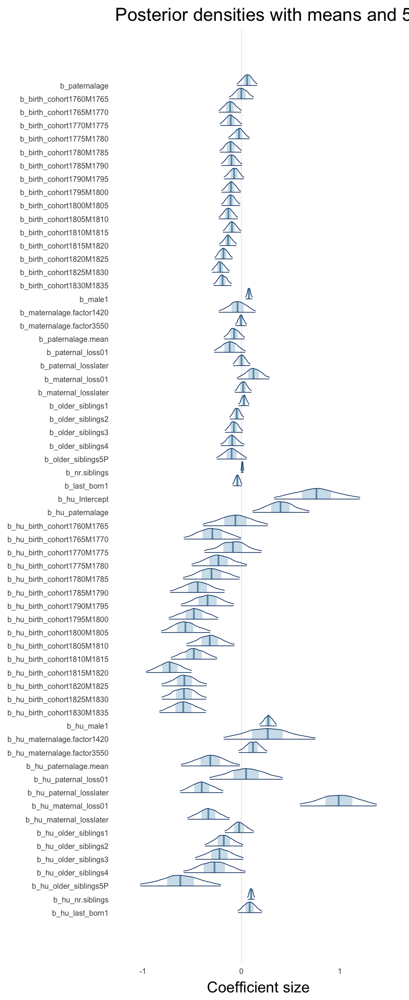
Effective sample size by average sample size
stanplot(model, pars = "^b", type = 'ess')Monte Carlo SE
stanplot(model, pars = "^b", type = 'mcse')Trace plots
if(any( summary(model)$fixed[,"Rhat"] > 1.1)) { # only do traceplots if not converged
plot(model, N = 3, ask = FALSE)
}Further plots
stanplot(model, pars = "^b", type = 'diag')File name
coefs/krmh/r6_no_birth_order_control.rds
Cluster script
opts_chunk$set(echo = FALSE)
clusterscript = str_replace(basename(model_filename), "\\.rds",".html")
cat("[Cluster script](" , clusterscript, ")", sep = "")r7: Less control for parental loss
We adjusted for parental loss very stringently, including covariates for parental loss up to age 45. Here we show what happens, when we only control for parental loss in the first, and the first five years of life.
Model summary
Full summary
model_summary = summary(model, use_cache = FALSE, priors = TRUE)
print(model_summary)## Family: hurdle_poisson (log)
## Formula: children ~ paternalage + birth_cohort + male + maternalage.factor + paternalage.mean + paternal_loss + maternal_loss + older_siblings + nr.siblings + last_born + (1 | idParents)
## hu ~ paternalage + birth_cohort + male + maternalage.factor + paternalage.mean + paternal_loss + maternal_loss + older_siblings + nr.siblings + last_born + (1 | idParents)
## Data: model_data (Number of observations: 9447)
## Samples: 6 chains, each with iter = 1000; warmup = 500; thin = 1;
## total post-warmup samples = 3000
## WAIC: Not computed
##
## Priors:
## b ~ normal(0,5)
## sd ~ student_t(3, 0, 5)
## b_hu ~ normal(0,5)
## sd_hu ~ student_t(3, 0, 10)
##
## Group-Level Effects:
## ~idParents (Number of levels: 2186)
## Estimate Est.Error l-95% CI u-95% CI Eff.Sample Rhat
## sd(Intercept) 0.23 0.01 0.20 0.25 999 1.00
## sd(hu_Intercept) 0.48 0.04 0.39 0.56 816 1.01
##
## Population-Level Effects:
## Estimate Est.Error l-95% CI u-95% CI Eff.Sample
## Intercept 1.64 0.09 1.46 1.82 1523
## paternalage 0.06 0.05 -0.04 0.16 645
## birth_cohort1760M1765 0.00 0.06 -0.12 0.12 910
## birth_cohort1765M1770 -0.11 0.06 -0.23 0.00 744
## birth_cohort1770M1775 -0.11 0.06 -0.22 0.00 696
## birth_cohort1775M1780 -0.02 0.05 -0.13 0.08 683
## birth_cohort1780M1785 -0.11 0.06 -0.22 0.00 643
## birth_cohort1785M1790 -0.10 0.05 -0.20 0.00 681
## birth_cohort1790M1795 -0.07 0.05 -0.18 0.03 604
## birth_cohort1795M1800 -0.11 0.05 -0.20 -0.01 517
## birth_cohort1800M1805 -0.11 0.05 -0.20 -0.01 552
## birth_cohort1805M1810 -0.13 0.05 -0.23 -0.04 520
## birth_cohort1810M1815 -0.10 0.05 -0.19 0.00 472
## birth_cohort1815M1820 -0.14 0.04 -0.22 -0.05 451
## birth_cohort1820M1825 -0.18 0.05 -0.27 -0.09 455
## birth_cohort1825M1830 -0.21 0.05 -0.30 -0.12 488
## birth_cohort1830M1835 -0.19 0.05 -0.28 -0.10 495
## male1 0.08 0.02 0.04 0.11 3000
## maternalage.factor1420 -0.04 0.09 -0.23 0.14 3000
## maternalage.factor3550 0.00 0.03 -0.06 0.05 3000
## paternalage.mean -0.07 0.05 -0.18 0.03 668
## paternal_loss01 -0.12 0.08 -0.28 0.04 3000
## paternal_losslater 0.00 0.04 -0.08 0.09 2622
## maternal_loss01 0.12 0.08 -0.04 0.28 3000
## maternal_losslater 0.02 0.04 -0.07 0.10 3000
## older_siblings1 0.03 0.03 -0.03 0.08 1243
## older_siblings2 -0.05 0.04 -0.12 0.02 731
## older_siblings3 -0.08 0.05 -0.17 0.01 692
## older_siblings4 -0.09 0.06 -0.21 0.03 697
## older_siblings5P -0.10 0.08 -0.25 0.05 612
## nr.siblings 0.01 0.01 0.00 0.02 757
## last_born1 -0.04 0.02 -0.09 0.01 3000
## hu_Intercept 0.76 0.22 0.33 1.20 1327
## hu_paternalage 0.40 0.14 0.11 0.69 639
## hu_birth_cohort1760M1765 -0.06 0.17 -0.39 0.27 3000
## hu_birth_cohort1765M1770 -0.29 0.15 -0.58 -0.01 820
## hu_birth_cohort1770M1775 -0.09 0.15 -0.37 0.20 832
## hu_birth_cohort1775M1780 -0.23 0.14 -0.50 0.06 781
## hu_birth_cohort1780M1785 -0.30 0.15 -0.59 -0.02 765
## hu_birth_cohort1785M1790 -0.44 0.14 -0.72 -0.17 775
## hu_birth_cohort1790M1795 -0.34 0.14 -0.61 -0.08 760
## hu_birth_cohort1795M1800 -0.48 0.13 -0.74 -0.24 651
## hu_birth_cohort1800M1805 -0.57 0.13 -0.81 -0.32 657
## hu_birth_cohort1805M1810 -0.32 0.12 -0.56 -0.07 626
## hu_birth_cohort1810M1815 -0.48 0.12 -0.72 -0.25 625
## hu_birth_cohort1815M1820 -0.73 0.12 -0.97 -0.51 609
## hu_birth_cohort1820M1825 -0.58 0.12 -0.81 -0.35 576
## hu_birth_cohort1825M1830 -0.58 0.12 -0.81 -0.36 571
## hu_birth_cohort1830M1835 -0.59 0.12 -0.83 -0.36 605
## hu_male1 0.27 0.04 0.19 0.36 3000
## hu_maternalage.factor1420 0.27 0.23 -0.18 0.75 3000
## hu_maternalage.factor3550 0.12 0.07 -0.03 0.26 3000
## hu_paternalage.mean -0.32 0.15 -0.61 -0.02 714
## hu_paternal_loss01 0.05 0.19 -0.32 0.42 3000
## hu_paternal_losslater -0.40 0.11 -0.62 -0.19 3000
## hu_maternal_loss01 0.99 0.20 0.60 1.37 3000
## hu_maternal_losslater -0.34 0.11 -0.55 -0.12 3000
## hu_older_siblings1 -0.02 0.07 -0.17 0.12 1230
## hu_older_siblings2 -0.18 0.10 -0.37 0.02 791
## hu_older_siblings3 -0.22 0.13 -0.47 0.02 560
## hu_older_siblings4 -0.27 0.16 -0.59 0.04 636
## hu_older_siblings5P -0.62 0.21 -1.03 -0.21 618
## hu_nr.siblings 0.10 0.02 0.06 0.13 864
## hu_last_born1 0.08 0.06 -0.03 0.21 3000
## Rhat
## Intercept 1.00
## paternalage 1.01
## birth_cohort1760M1765 1.00
## birth_cohort1765M1770 1.00
## birth_cohort1770M1775 1.01
## birth_cohort1775M1780 1.00
## birth_cohort1780M1785 1.00
## birth_cohort1785M1790 1.00
## birth_cohort1790M1795 1.00
## birth_cohort1795M1800 1.01
## birth_cohort1800M1805 1.01
## birth_cohort1805M1810 1.01
## birth_cohort1810M1815 1.01
## birth_cohort1815M1820 1.01
## birth_cohort1820M1825 1.01
## birth_cohort1825M1830 1.01
## birth_cohort1830M1835 1.01
## male1 1.00
## maternalage.factor1420 1.00
## maternalage.factor3550 1.00
## paternalage.mean 1.01
## paternal_loss01 1.00
## paternal_losslater 1.00
## maternal_loss01 1.00
## maternal_losslater 1.00
## older_siblings1 1.00
## older_siblings2 1.01
## older_siblings3 1.01
## older_siblings4 1.01
## older_siblings5P 1.01
## nr.siblings 1.01
## last_born1 1.00
## hu_Intercept 1.00
## hu_paternalage 1.01
## hu_birth_cohort1760M1765 1.00
## hu_birth_cohort1765M1770 1.00
## hu_birth_cohort1770M1775 1.00
## hu_birth_cohort1775M1780 1.01
## hu_birth_cohort1780M1785 1.01
## hu_birth_cohort1785M1790 1.01
## hu_birth_cohort1790M1795 1.01
## hu_birth_cohort1795M1800 1.01
## hu_birth_cohort1800M1805 1.01
## hu_birth_cohort1805M1810 1.01
## hu_birth_cohort1810M1815 1.01
## hu_birth_cohort1815M1820 1.01
## hu_birth_cohort1820M1825 1.01
## hu_birth_cohort1825M1830 1.01
## hu_birth_cohort1830M1835 1.01
## hu_male1 1.00
## hu_maternalage.factor1420 1.00
## hu_maternalage.factor3550 1.00
## hu_paternalage.mean 1.01
## hu_paternal_loss01 1.00
## hu_paternal_losslater 1.00
## hu_maternal_loss01 1.00
## hu_maternal_losslater 1.00
## hu_older_siblings1 1.00
## hu_older_siblings2 1.01
## hu_older_siblings3 1.01
## hu_older_siblings4 1.01
## hu_older_siblings5P 1.01
## hu_nr.siblings 1.01
## hu_last_born1 1.00
##
## Samples were drawn using sampling(NUTS). For each parameter, Eff.Sample
## is a crude measure of effective sample size, and Rhat is the potential
## scale reduction factor on split chains (at convergence, Rhat = 1).Table of fixed effects
fixed_eff = data.frame(model_summary$fixed, check.names = F)
fixed_eff$Est.Error = fixed_eff$Eff.Sample = fixed_eff$Rhat = NULL
fixed_eff$OR = exp(fixed_eff$Estimate)
fixed_eff$OR_low = exp(fixed_eff$`l-95% CI`)
fixed_eff$OR_high = exp(fixed_eff$`u-95% CI`)
pander::pander(fixed_eff)| Estimate | l-95% CI | u-95% CI | OR | OR_low | OR_high | |
|---|---|---|---|---|---|---|
| Intercept | 1.641 | 1.458 | 1.818 | 5.159 | 4.297 | 6.16 |
| paternalage | 0.05829 | -0.04493 | 0.1593 | 1.06 | 0.9561 | 1.173 |
| birth_cohort1760M1765 | -0.0007857 | -0.1246 | 0.1228 | 0.9992 | 0.8829 | 1.131 |
| birth_cohort1765M1770 | -0.1141 | -0.2282 | -0.002469 | 0.8922 | 0.796 | 0.9975 |
| birth_cohort1770M1775 | -0.1081 | -0.2155 | 0.001305 | 0.8975 | 0.8061 | 1.001 |
| birth_cohort1775M1780 | -0.02399 | -0.1303 | 0.08186 | 0.9763 | 0.8779 | 1.085 |
| birth_cohort1780M1785 | -0.1092 | -0.2183 | -0.001573 | 0.8965 | 0.8039 | 0.9984 |
| birth_cohort1785M1790 | -0.101 | -0.2027 | 0.00445 | 0.904 | 0.8165 | 1.004 |
| birth_cohort1790M1795 | -0.07441 | -0.1755 | 0.02585 | 0.9283 | 0.8391 | 1.026 |
| birth_cohort1795M1800 | -0.1053 | -0.2014 | -0.007756 | 0.9 | 0.8176 | 0.9923 |
| birth_cohort1800M1805 | -0.1088 | -0.2027 | -0.01456 | 0.8969 | 0.8166 | 0.9855 |
| birth_cohort1805M1810 | -0.1329 | -0.229 | -0.03755 | 0.8755 | 0.7953 | 0.9631 |
| birth_cohort1810M1815 | -0.09576 | -0.1859 | -0.004936 | 0.9087 | 0.8303 | 0.9951 |
| birth_cohort1815M1820 | -0.1354 | -0.2223 | -0.05027 | 0.8734 | 0.8007 | 0.951 |
| birth_cohort1820M1825 | -0.182 | -0.2698 | -0.09019 | 0.8336 | 0.7635 | 0.9138 |
| birth_cohort1825M1830 | -0.2147 | -0.2994 | -0.1225 | 0.8068 | 0.7412 | 0.8847 |
| birth_cohort1830M1835 | -0.191 | -0.2812 | -0.1011 | 0.8261 | 0.7549 | 0.9038 |
| male1 | 0.07685 | 0.04341 | 0.1101 | 1.08 | 1.044 | 1.116 |
| maternalage.factor1420 | -0.03915 | -0.228 | 0.1429 | 0.9616 | 0.7961 | 1.154 |
| maternalage.factor3550 | -0.003699 | -0.06044 | 0.05292 | 0.9963 | 0.9414 | 1.054 |
| paternalage.mean | -0.07351 | -0.1761 | 0.03335 | 0.9291 | 0.8385 | 1.034 |
| paternal_loss01 | -0.1186 | -0.2755 | 0.04014 | 0.8881 | 0.7592 | 1.041 |
| paternal_losslater | 0.0009394 | -0.08405 | 0.08812 | 1.001 | 0.9194 | 1.092 |
| maternal_loss01 | 0.123 | -0.04259 | 0.2842 | 1.131 | 0.9583 | 1.329 |
| maternal_losslater | 0.01786 | -0.06565 | 0.1014 | 1.018 | 0.9365 | 1.107 |
| older_siblings1 | 0.02553 | -0.02806 | 0.07812 | 1.026 | 0.9723 | 1.081 |
| older_siblings2 | -0.04718 | -0.1175 | 0.02483 | 0.9539 | 0.8892 | 1.025 |
| older_siblings3 | -0.07658 | -0.1666 | 0.01374 | 0.9263 | 0.8466 | 1.014 |
| older_siblings4 | -0.09391 | -0.2101 | 0.02662 | 0.9104 | 0.8105 | 1.027 |
| older_siblings5P | -0.09901 | -0.2511 | 0.05352 | 0.9057 | 0.7779 | 1.055 |
| nr.siblings | 0.009545 | -0.004957 | 0.0228 | 1.01 | 0.9951 | 1.023 |
| last_born1 | -0.04112 | -0.08871 | 0.006018 | 0.9597 | 0.9151 | 1.006 |
| hu_Intercept | 0.7627 | 0.333 | 1.204 | 2.144 | 1.395 | 3.334 |
| hu_paternalage | 0.3979 | 0.1147 | 0.6894 | 1.489 | 1.122 | 1.992 |
| hu_birth_cohort1760M1765 | -0.06066 | -0.3895 | 0.2682 | 0.9411 | 0.6774 | 1.308 |
| hu_birth_cohort1765M1770 | -0.2949 | -0.5838 | -0.005021 | 0.7446 | 0.5578 | 0.995 |
| hu_birth_cohort1770M1775 | -0.08603 | -0.3746 | 0.2042 | 0.9176 | 0.6876 | 1.227 |
| hu_birth_cohort1775M1780 | -0.2327 | -0.5034 | 0.055 | 0.7924 | 0.6045 | 1.057 |
| hu_birth_cohort1780M1785 | -0.3034 | -0.5911 | -0.01717 | 0.7383 | 0.5537 | 0.983 |
| hu_birth_cohort1785M1790 | -0.4431 | -0.7224 | -0.1715 | 0.6421 | 0.4856 | 0.8424 |
| hu_birth_cohort1790M1795 | -0.3431 | -0.6124 | -0.0769 | 0.7096 | 0.542 | 0.926 |
| hu_birth_cohort1795M1800 | -0.4826 | -0.736 | -0.2375 | 0.6172 | 0.479 | 0.7886 |
| hu_birth_cohort1800M1805 | -0.5689 | -0.8134 | -0.317 | 0.5662 | 0.4433 | 0.7283 |
| hu_birth_cohort1805M1810 | -0.3209 | -0.5562 | -0.07175 | 0.7255 | 0.5734 | 0.9308 |
| hu_birth_cohort1810M1815 | -0.4829 | -0.7153 | -0.2475 | 0.617 | 0.4891 | 0.7807 |
| hu_birth_cohort1815M1820 | -0.7281 | -0.9664 | -0.5067 | 0.4828 | 0.3805 | 0.6025 |
| hu_birth_cohort1820M1825 | -0.5794 | -0.809 | -0.3525 | 0.5602 | 0.4453 | 0.7029 |
| hu_birth_cohort1825M1830 | -0.5832 | -0.8084 | -0.3558 | 0.5581 | 0.4456 | 0.7006 |
| hu_birth_cohort1830M1835 | -0.5909 | -0.8318 | -0.3616 | 0.5538 | 0.4353 | 0.6966 |
| hu_male1 | 0.273 | 0.1866 | 0.3584 | 1.314 | 1.205 | 1.431 |
| hu_maternalage.factor1420 | 0.2679 | -0.1787 | 0.7513 | 1.307 | 0.8364 | 2.12 |
| hu_maternalage.factor3550 | 0.1181 | -0.02714 | 0.2599 | 1.125 | 0.9732 | 1.297 |
| hu_paternalage.mean | -0.316 | -0.6124 | -0.01703 | 0.7291 | 0.5421 | 0.9831 |
| hu_paternal_loss01 | 0.04768 | -0.3224 | 0.4188 | 1.049 | 0.7244 | 1.52 |
| hu_paternal_losslater | -0.4024 | -0.6206 | -0.1864 | 0.6687 | 0.5376 | 0.83 |
| hu_maternal_loss01 | 0.9885 | 0.5957 | 1.374 | 2.687 | 1.814 | 3.951 |
| hu_maternal_losslater | -0.3356 | -0.5454 | -0.121 | 0.7149 | 0.5796 | 0.886 |
| hu_older_siblings1 | -0.0233 | -0.1677 | 0.1249 | 0.977 | 0.8456 | 1.133 |
| hu_older_siblings2 | -0.1785 | -0.3706 | 0.01584 | 0.8365 | 0.6903 | 1.016 |
| hu_older_siblings3 | -0.2226 | -0.4684 | 0.01961 | 0.8004 | 0.626 | 1.02 |
| hu_older_siblings4 | -0.2728 | -0.5864 | 0.04041 | 0.7613 | 0.5563 | 1.041 |
| hu_older_siblings5P | -0.6198 | -1.028 | -0.2089 | 0.538 | 0.3579 | 0.8115 |
| hu_nr.siblings | 0.09891 | 0.06329 | 0.1348 | 1.104 | 1.065 | 1.144 |
| hu_last_born1 | 0.08358 | -0.03434 | 0.2076 | 1.087 | 0.9662 | 1.231 |
Paternal age effect
pander::pander(paternal_age_10y_effect(model))| effect | median_estimate | ci_95 | ci_80 |
|---|---|---|---|
| estimate father 25y | 1.97 | [1.68;2.28] | [1.78;2.17] |
| estimate father 35y | 1.61 | [1.29;1.97] | [1.39;1.84] |
| percentage change | -18.19 | [-34.37;-0.24] | [-29.12;-6.7] |
| OR/IRR | 1.06 | [0.96;1.17] | [0.99;1.13] |
| OR hurdle | 1.49 | [1.12;1.99] | [1.24;1.79] |
Marginal effect plots
plot.brmsMarginalEffects_shades(
x = marginal_effects(model, re_formula = NA, probs = c(0.025,0.975)),
y = marginal_effects(model, re_formula = NA, probs = c(0.1,0.9)),
ask = FALSE) 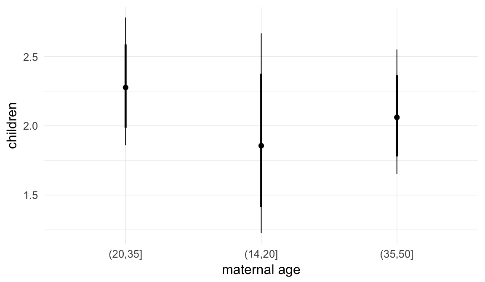
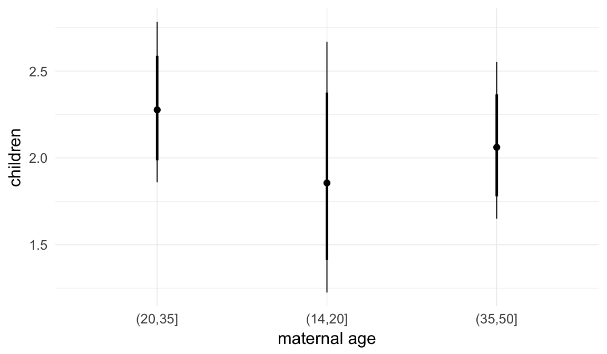 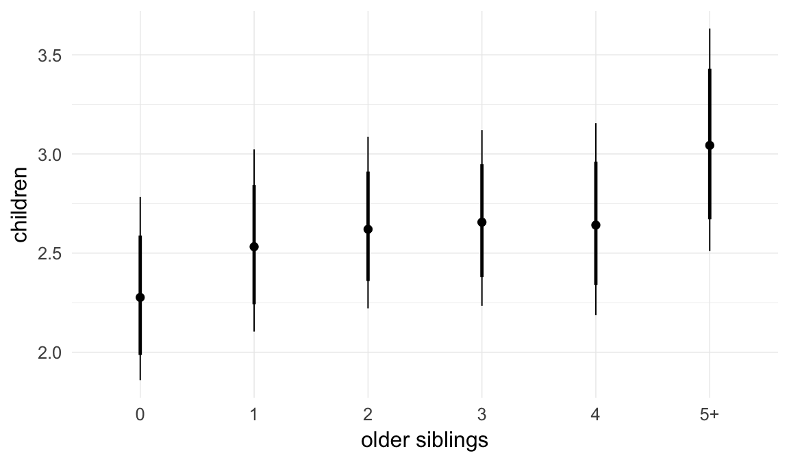
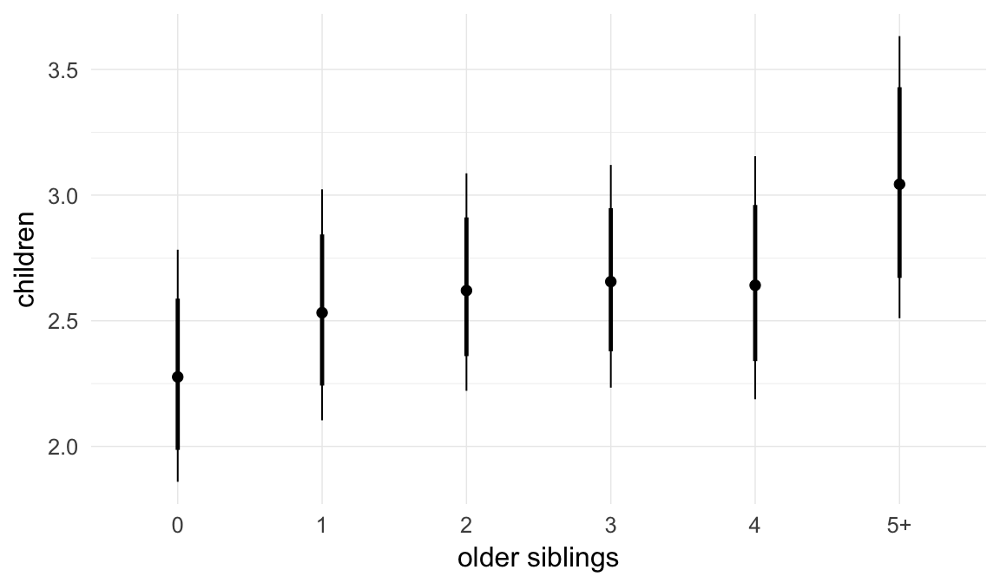
Coefficient plot
Coefficient estimates (95% and 80% credibility).
mcmc_intervals(as.matrix(model$fit), regex_pars = "b_[^I]")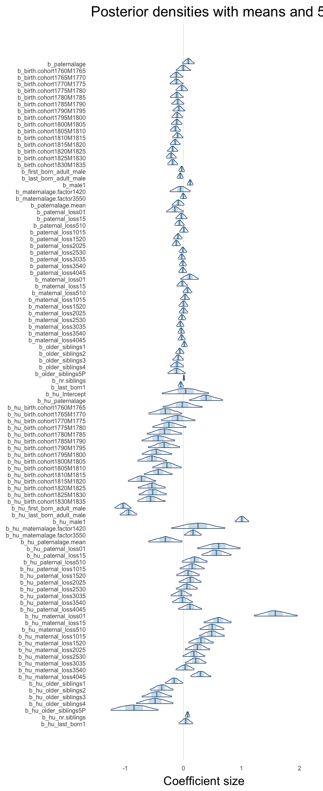
mcmc_areas(as.matrix(model$fit), regex_pars = "b")Diagnostics
These plots were made to diagnose misfit and nonconvergence.
Posterior predictive checks
brms::pp_check(model, re_formula = NA, type = "dens_overlay")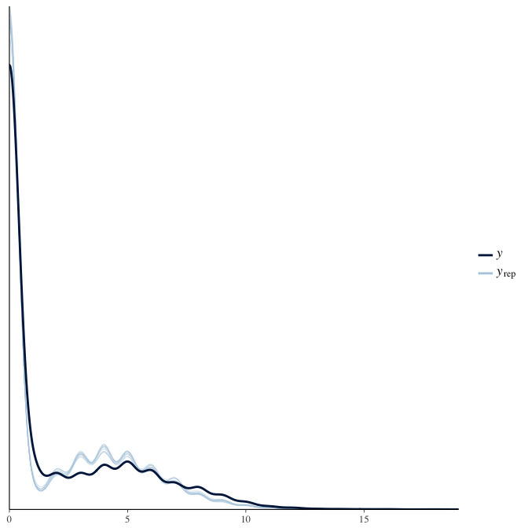
brms::pp_check(model, re_formula = NA, type = "hist")Rhat
Did the 6 chains converge?
stanplot(model, pars = "^b_[^I]", type = 'rhat')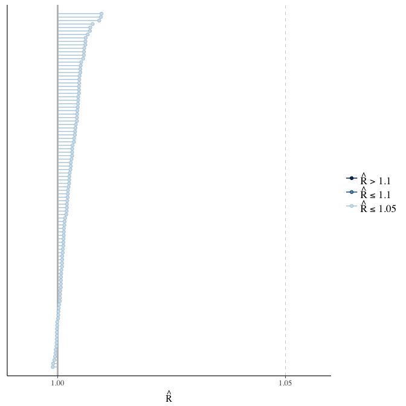
Effective sample size by average sample size
stanplot(model, pars = "^b", type = 'ess')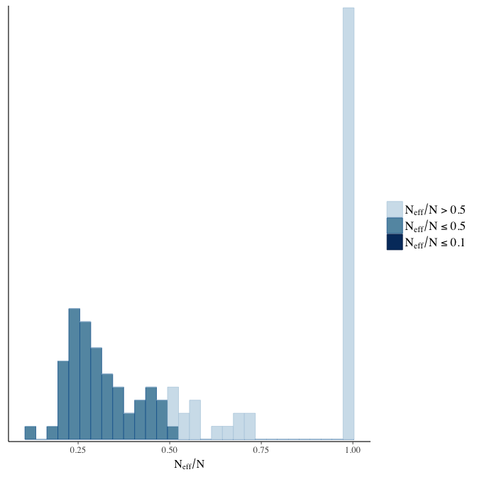
Monte Carlo SE
stanplot(model, pars = "^b", type = 'mcse')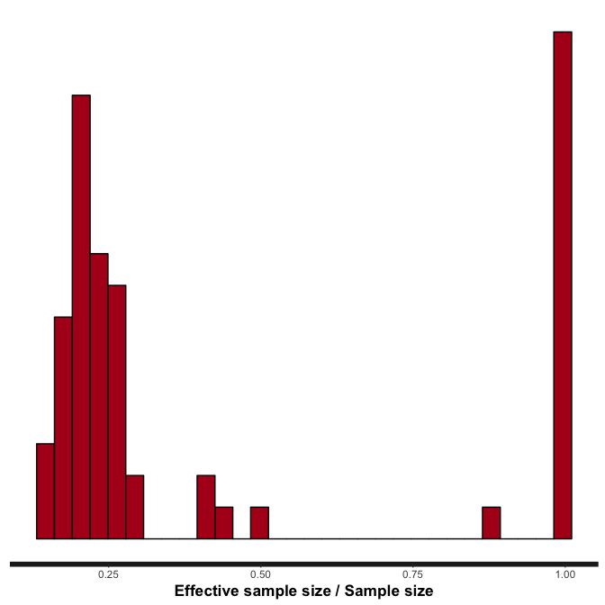
Trace plots
if(any( summary(model)$fixed[,"Rhat"] > 1.1)) { # only do traceplots if not converged
plot(model, N = 3, ask = FALSE)
}Further plots
stanplot(model, pars = "^b", type = 'diag')File name
coefs/krmh/r7_less_parental_loss_control.rds
Cluster script
opts_chunk$set(echo = FALSE)
clusterscript = str_replace(basename(model_filename), "\\.rds",".html")
cat("[Cluster script](" , clusterscript, ")", sep = "")r8: Adjust for being first-/last-born adult son
Inheritance is linked to birth order and being male in several of the historical populations. Here, we adjust for the anchor being the first or last born adult son in a family. This implies that we control for our outcome to a certain extent, as “adult sons” cannot have died before adulthood, but a paternal age effect on mortality could still be detected for siblings other than the first- and last-born adults.
Model summary
Full summary
model_summary = summary(model, use_cache = FALSE, priors = TRUE)
print(model_summary)## Family: hurdle_poisson (log)
## Formula: children ~ paternalage + birth.cohort + first_born_adult_male + last_born_adult_male + male + maternalage.factor + paternalage.mean + paternal_loss + maternal_loss + older_siblings + nr.siblings + last_born + (1 | idParents)
## hu ~ paternalage + birth.cohort + first_born_adult_male + last_born_adult_male + male + maternalage.factor + paternalage.mean + paternal_loss + maternal_loss + older_siblings + nr.siblings + last_born + (1 | idParents)
## Data: model_data (Number of observations: 9447)
## Samples: 6 chains, each with iter = 800; warmup = 300; thin = 1;
## total post-warmup samples = 3000
## WAIC: Not computed
##
## Priors:
## b ~ normal(0,5)
## sd ~ student_t(3, 0, 5)
## b_hu ~ normal(0,5)
## sd_hu ~ student_t(3, 0, 10)
##
## Group-Level Effects:
## ~idParents (Number of levels: 2186)
## Estimate Est.Error l-95% CI u-95% CI Eff.Sample Rhat
## sd(Intercept) 0.23 0.01 0.20 0.25 1147 1.01
## sd(hu_Intercept) 0.54 0.04 0.45 0.63 900 1.01
##
## Population-Level Effects:
## Estimate Est.Error l-95% CI u-95% CI Eff.Sample
## Intercept 1.68 0.08 1.52 1.83 1277
## paternalage 0.08 0.05 -0.02 0.19 771
## birth.cohort1760M1765 0.00 0.06 -0.13 0.13 3000
## birth.cohort1765M1770 -0.12 0.06 -0.23 -0.01 1023
## birth.cohort1770M1775 -0.12 0.06 -0.23 0.00 965
## birth.cohort1775M1780 -0.03 0.05 -0.13 0.08 827
## birth.cohort1780M1785 -0.11 0.06 -0.23 0.00 849
## birth.cohort1785M1790 -0.10 0.05 -0.20 0.01 806
## birth.cohort1790M1795 -0.08 0.05 -0.18 0.03 708
## birth.cohort1795M1800 -0.11 0.05 -0.20 -0.01 707
## birth.cohort1800M1805 -0.11 0.05 -0.21 -0.02 715
## birth.cohort1805M1810 -0.14 0.05 -0.23 -0.05 741
## birth.cohort1810M1815 -0.10 0.05 -0.19 0.00 657
## birth.cohort1815M1820 -0.14 0.04 -0.23 -0.05 582
## birth.cohort1820M1825 -0.19 0.05 -0.28 -0.09 640
## birth.cohort1825M1830 -0.21 0.05 -0.30 -0.12 657
## birth.cohort1830M1835 -0.18 0.05 -0.27 -0.09 644
## first_born_adult_male -0.03 0.03 -0.08 0.02 3000
## last_born_adult_male -0.05 0.03 -0.11 0.00 3000
## male1 0.12 0.03 0.07 0.17 2045
## maternalage.factor1420 -0.05 0.09 -0.23 0.12 3000
## maternalage.factor3550 0.00 0.03 -0.05 0.06 3000
## paternalage.mean -0.09 0.05 -0.20 0.01 721
## paternal_loss01 -0.15 0.08 -0.29 0.00 3000
## paternal_loss15 -0.03 0.05 -0.13 0.07 1929
## paternal_loss510 -0.07 0.04 -0.15 0.02 1671
## paternal_loss1015 0.01 0.04 -0.07 0.09 1542
## paternal_loss1520 -0.09 0.04 -0.17 -0.02 1442
## paternal_loss2025 -0.12 0.04 -0.20 -0.05 1555
## paternal_loss2530 -0.01 0.03 -0.08 0.06 1502
## paternal_loss3035 -0.03 0.03 -0.09 0.04 1496
## paternal_loss3540 -0.01 0.03 -0.07 0.05 1463
## paternal_loss4045 -0.01 0.04 -0.08 0.06 3000
## maternal_loss01 0.11 0.08 -0.05 0.26 3000
## maternal_loss15 -0.02 0.05 -0.12 0.07 3000
## maternal_loss510 0.07 0.04 -0.01 0.15 2160
## maternal_loss1015 0.03 0.04 -0.05 0.11 3000
## maternal_loss1520 0.00 0.04 -0.08 0.08 3000
## maternal_loss2025 0.00 0.04 -0.07 0.08 2035
## maternal_loss2530 -0.02 0.03 -0.09 0.04 1945
## maternal_loss3035 -0.05 0.03 -0.12 0.01 3000
## maternal_loss3540 -0.04 0.03 -0.09 0.02 3000
## maternal_loss4045 -0.03 0.03 -0.09 0.03 3000
## older_siblings1 0.02 0.03 -0.04 0.07 1740
## older_siblings2 -0.06 0.04 -0.13 0.01 1079
## older_siblings3 -0.09 0.05 -0.19 0.00 836
## older_siblings4 -0.11 0.06 -0.23 0.00 946
## older_siblings5P -0.12 0.08 -0.27 0.03 907
## nr.siblings 0.01 0.01 -0.01 0.02 1165
## last_born1 -0.05 0.02 -0.09 0.00 3000
## hu_Intercept 0.04 0.21 -0.37 0.44 1441
## hu_paternalage 0.39 0.15 0.10 0.68 770
## hu_birth.cohort1760M1765 -0.02 0.17 -0.35 0.33 3000
## hu_birth.cohort1765M1770 -0.31 0.15 -0.60 -0.02 1119
## hu_birth.cohort1770M1775 -0.10 0.15 -0.38 0.20 1087
## hu_birth.cohort1775M1780 -0.25 0.15 -0.53 0.05 958
## hu_birth.cohort1780M1785 -0.32 0.15 -0.63 -0.02 1078
## hu_birth.cohort1785M1790 -0.44 0.15 -0.72 -0.15 996
## hu_birth.cohort1790M1795 -0.33 0.14 -0.61 -0.06 896
## hu_birth.cohort1795M1800 -0.47 0.13 -0.71 -0.20 874
## hu_birth.cohort1800M1805 -0.54 0.13 -0.79 -0.28 738
## hu_birth.cohort1805M1810 -0.28 0.13 -0.53 -0.03 915
## hu_birth.cohort1810M1815 -0.43 0.12 -0.68 -0.19 827
## hu_birth.cohort1815M1820 -0.72 0.12 -0.95 -0.47 667
## hu_birth.cohort1820M1825 -0.54 0.12 -0.78 -0.31 639
## hu_birth.cohort1825M1830 -0.53 0.12 -0.77 -0.29 715
## hu_birth.cohort1830M1835 -0.57 0.12 -0.79 -0.31 692
## hu_first_born_adult_male -1.04 0.07 -1.18 -0.90 3000
## hu_last_born_adult_male -0.94 0.08 -1.09 -0.80 3000
## hu_male1 1.01 0.06 0.89 1.13 3000
## hu_maternalage.factor1420 0.25 0.23 -0.21 0.72 3000
## hu_maternalage.factor3550 0.17 0.08 0.01 0.31 3000
## hu_paternalage.mean -0.31 0.15 -0.60 -0.02 797
## hu_paternal_loss01 0.61 0.19 0.24 0.98 3000
## hu_paternal_loss15 0.57 0.13 0.31 0.83 1674
## hu_paternal_loss510 0.19 0.11 -0.03 0.41 1601
## hu_paternal_loss1015 0.15 0.11 -0.06 0.36 1605
## hu_paternal_loss1520 0.08 0.10 -0.12 0.28 1360
## hu_paternal_loss2025 0.12 0.10 -0.08 0.31 1325
## hu_paternal_loss2530 0.06 0.10 -0.13 0.25 1351
## hu_paternal_loss3035 -0.03 0.09 -0.22 0.15 1273
## hu_paternal_loss3540 -0.02 0.09 -0.19 0.16 1334
## hu_paternal_loss4045 0.11 0.10 -0.09 0.32 3000
## hu_maternal_loss01 1.58 0.19 1.22 1.96 3000
## hu_maternal_loss15 0.60 0.12 0.35 0.83 3000
## hu_maternal_loss510 0.49 0.11 0.28 0.70 3000
## hu_maternal_loss1015 0.49 0.11 0.27 0.71 3000
## hu_maternal_loss1520 0.30 0.11 0.09 0.52 3000
## hu_maternal_loss2025 0.24 0.11 0.03 0.46 3000
## hu_maternal_loss2530 0.18 0.10 -0.01 0.37 2159
## hu_maternal_loss3035 0.21 0.09 0.03 0.39 3000
## hu_maternal_loss3540 0.03 0.08 -0.13 0.19 3000
## hu_maternal_loss4045 0.29 0.09 0.12 0.48 3000
## hu_older_siblings1 -0.16 0.08 -0.31 -0.01 1298
## hu_older_siblings2 -0.37 0.10 -0.57 -0.17 902
## hu_older_siblings3 -0.46 0.13 -0.72 -0.20 791
## hu_older_siblings4 -0.49 0.16 -0.81 -0.17 745
## hu_older_siblings5P -0.85 0.21 -1.25 -0.43 716
## hu_nr.siblings 0.07 0.02 0.03 0.11 863
## hu_last_born1 0.04 0.06 -0.08 0.16 3000
## Rhat
## Intercept 1.00
## paternalage 1.01
## birth.cohort1760M1765 1.00
## birth.cohort1765M1770 1.00
## birth.cohort1770M1775 1.00
## birth.cohort1775M1780 1.00
## birth.cohort1780M1785 1.00
## birth.cohort1785M1790 1.00
## birth.cohort1790M1795 1.01
## birth.cohort1795M1800 1.00
## birth.cohort1800M1805 1.00
## birth.cohort1805M1810 1.00
## birth.cohort1810M1815 1.00
## birth.cohort1815M1820 1.01
## birth.cohort1820M1825 1.00
## birth.cohort1825M1830 1.00
## birth.cohort1830M1835 1.00
## first_born_adult_male 1.00
## last_born_adult_male 1.00
## male1 1.00
## maternalage.factor1420 1.00
## maternalage.factor3550 1.00
## paternalage.mean 1.01
## paternal_loss01 1.00
## paternal_loss15 1.00
## paternal_loss510 1.00
## paternal_loss1015 1.00
## paternal_loss1520 1.00
## paternal_loss2025 1.00
## paternal_loss2530 1.00
## paternal_loss3035 1.00
## paternal_loss3540 1.00
## paternal_loss4045 1.00
## maternal_loss01 1.00
## maternal_loss15 1.00
## maternal_loss510 1.00
## maternal_loss1015 1.00
## maternal_loss1520 1.00
## maternal_loss2025 1.00
## maternal_loss2530 1.00
## maternal_loss3035 1.00
## maternal_loss3540 1.00
## maternal_loss4045 1.00
## older_siblings1 1.00
## older_siblings2 1.01
## older_siblings3 1.01
## older_siblings4 1.01
## older_siblings5P 1.01
## nr.siblings 1.00
## last_born1 1.00
## hu_Intercept 1.00
## hu_paternalage 1.00
## hu_birth.cohort1760M1765 1.00
## hu_birth.cohort1765M1770 1.00
## hu_birth.cohort1770M1775 1.00
## hu_birth.cohort1775M1780 1.00
## hu_birth.cohort1780M1785 1.00
## hu_birth.cohort1785M1790 1.00
## hu_birth.cohort1790M1795 1.00
## hu_birth.cohort1795M1800 1.00
## hu_birth.cohort1800M1805 1.00
## hu_birth.cohort1805M1810 1.00
## hu_birth.cohort1810M1815 1.01
## hu_birth.cohort1815M1820 1.00
## hu_birth.cohort1820M1825 1.01
## hu_birth.cohort1825M1830 1.00
## hu_birth.cohort1830M1835 1.00
## hu_first_born_adult_male 1.00
## hu_last_born_adult_male 1.00
## hu_male1 1.00
## hu_maternalage.factor1420 1.00
## hu_maternalage.factor3550 1.00
## hu_paternalage.mean 1.00
## hu_paternal_loss01 1.00
## hu_paternal_loss15 1.00
## hu_paternal_loss510 1.00
## hu_paternal_loss1015 1.00
## hu_paternal_loss1520 1.00
## hu_paternal_loss2025 1.00
## hu_paternal_loss2530 1.00
## hu_paternal_loss3035 1.00
## hu_paternal_loss3540 1.00
## hu_paternal_loss4045 1.00
## hu_maternal_loss01 1.00
## hu_maternal_loss15 1.00
## hu_maternal_loss510 1.00
## hu_maternal_loss1015 1.00
## hu_maternal_loss1520 1.00
## hu_maternal_loss2025 1.00
## hu_maternal_loss2530 1.00
## hu_maternal_loss3035 1.00
## hu_maternal_loss3540 1.00
## hu_maternal_loss4045 1.00
## hu_older_siblings1 1.00
## hu_older_siblings2 1.01
## hu_older_siblings3 1.01
## hu_older_siblings4 1.00
## hu_older_siblings5P 1.01
## hu_nr.siblings 1.00
## hu_last_born1 1.00
##
## Samples were drawn using sampling(NUTS). For each parameter, Eff.Sample
## is a crude measure of effective sample size, and Rhat is the potential
## scale reduction factor on split chains (at convergence, Rhat = 1).Table of fixed effects
fixed_eff = data.frame(model_summary$fixed, check.names = F)
fixed_eff$Est.Error = fixed_eff$Eff.Sample = fixed_eff$Rhat = NULL
fixed_eff$OR = exp(fixed_eff$Estimate)
fixed_eff$OR_low = exp(fixed_eff$`l-95% CI`)
fixed_eff$OR_high = exp(fixed_eff$`u-95% CI`)
pander::pander(fixed_eff)| Estimate | l-95% CI | u-95% CI | OR | OR_low | OR_high | |
|---|---|---|---|---|---|---|
| Intercept | 1.677 | 1.521 | 1.831 | 5.35 | 4.576 | 6.243 |
| paternalage | 0.0841 | -0.01873 | 0.1918 | 1.088 | 0.9814 | 1.211 |
| birth.cohort1760M1765 | -0.003546 | -0.1276 | 0.1266 | 0.9965 | 0.8802 | 1.135 |
| birth.cohort1765M1770 | -0.1205 | -0.2321 | -0.005609 | 0.8865 | 0.7928 | 0.9944 |
| birth.cohort1770M1775 | -0.1189 | -0.2317 | -0.002434 | 0.8879 | 0.7931 | 0.9976 |
| birth.cohort1775M1780 | -0.02647 | -0.1318 | 0.07805 | 0.9739 | 0.8766 | 1.081 |
| birth.cohort1780M1785 | -0.1135 | -0.2283 | -0.001086 | 0.8927 | 0.7959 | 0.9989 |
| birth.cohort1785M1790 | -0.09607 | -0.2045 | 0.01277 | 0.9084 | 0.815 | 1.013 |
| birth.cohort1790M1795 | -0.07747 | -0.182 | 0.02688 | 0.9255 | 0.8336 | 1.027 |
| birth.cohort1795M1800 | -0.1068 | -0.2011 | -0.01044 | 0.8987 | 0.8178 | 0.9896 |
| birth.cohort1800M1805 | -0.1135 | -0.2095 | -0.02021 | 0.8927 | 0.811 | 0.98 |
| birth.cohort1805M1810 | -0.1372 | -0.2295 | -0.04536 | 0.8718 | 0.795 | 0.9557 |
| birth.cohort1810M1815 | -0.09911 | -0.1909 | -0.004913 | 0.9056 | 0.8262 | 0.9951 |
| birth.cohort1815M1820 | -0.1425 | -0.2298 | -0.0529 | 0.8671 | 0.7947 | 0.9485 |
| birth.cohort1820M1825 | -0.1854 | -0.2771 | -0.09446 | 0.8308 | 0.758 | 0.9099 |
| birth.cohort1825M1830 | -0.2106 | -0.2968 | -0.1187 | 0.8101 | 0.7432 | 0.8881 |
| birth.cohort1830M1835 | -0.1849 | -0.273 | -0.09489 | 0.8312 | 0.7611 | 0.9095 |
| first_born_adult_male | -0.0304 | -0.08007 | 0.02119 | 0.9701 | 0.9231 | 1.021 |
| last_born_adult_male | -0.05495 | -0.1068 | -0.002581 | 0.9465 | 0.8987 | 0.9974 |
| male1 | 0.1174 | 0.06809 | 0.1683 | 1.125 | 1.07 | 1.183 |
| maternalage.factor1420 | -0.04985 | -0.2326 | 0.1223 | 0.9514 | 0.7924 | 1.13 |
| maternalage.factor3550 | -0.0003604 | -0.05333 | 0.05538 | 0.9996 | 0.9481 | 1.057 |
| paternalage.mean | -0.08758 | -0.1984 | 0.01458 | 0.9161 | 0.8201 | 1.015 |
| paternal_loss01 | -0.146 | -0.2934 | 0.002706 | 0.8642 | 0.7457 | 1.003 |
| paternal_loss15 | -0.03387 | -0.1345 | 0.06681 | 0.9667 | 0.8742 | 1.069 |
| paternal_loss510 | -0.0685 | -0.151 | 0.01772 | 0.9338 | 0.8599 | 1.018 |
| paternal_loss1015 | 0.007608 | -0.06799 | 0.08513 | 1.008 | 0.9343 | 1.089 |
| paternal_loss1520 | -0.09398 | -0.1722 | -0.01933 | 0.9103 | 0.8418 | 0.9809 |
| paternal_loss2025 | -0.1214 | -0.1961 | -0.04676 | 0.8857 | 0.8219 | 0.9543 |
| paternal_loss2530 | -0.0091 | -0.07671 | 0.05924 | 0.9909 | 0.9262 | 1.061 |
| paternal_loss3035 | -0.02894 | -0.0925 | 0.03706 | 0.9715 | 0.9116 | 1.038 |
| paternal_loss3540 | -0.009786 | -0.07271 | 0.05237 | 0.9903 | 0.9299 | 1.054 |
| paternal_loss4045 | -0.0116 | -0.08099 | 0.06123 | 0.9885 | 0.9222 | 1.063 |
| maternal_loss01 | 0.107 | -0.04935 | 0.2625 | 1.113 | 0.9518 | 1.3 |
| maternal_loss15 | -0.01981 | -0.1156 | 0.07412 | 0.9804 | 0.8908 | 1.077 |
| maternal_loss510 | 0.07112 | -0.008296 | 0.1499 | 1.074 | 0.9917 | 1.162 |
| maternal_loss1015 | 0.02744 | -0.05309 | 0.108 | 1.028 | 0.9483 | 1.114 |
| maternal_loss1520 | 0.0007551 | -0.08051 | 0.07987 | 1.001 | 0.9226 | 1.083 |
| maternal_loss2025 | 0.002033 | -0.073 | 0.07815 | 1.002 | 0.9296 | 1.081 |
| maternal_loss2530 | -0.02383 | -0.09101 | 0.04168 | 0.9765 | 0.913 | 1.043 |
| maternal_loss3035 | -0.053 | -0.1186 | 0.01096 | 0.9484 | 0.8882 | 1.011 |
| maternal_loss3540 | -0.03676 | -0.09352 | 0.02136 | 0.9639 | 0.9107 | 1.022 |
| maternal_loss4045 | -0.02994 | -0.09348 | 0.03017 | 0.9705 | 0.9108 | 1.031 |
| older_siblings1 | 0.01701 | -0.0375 | 0.06958 | 1.017 | 0.9632 | 1.072 |
| older_siblings2 | -0.06027 | -0.1338 | 0.01266 | 0.9415 | 0.8748 | 1.013 |
| older_siblings3 | -0.09006 | -0.1877 | 0.00352 | 0.9139 | 0.8289 | 1.004 |
| older_siblings4 | -0.1098 | -0.2266 | 0.004773 | 0.896 | 0.7972 | 1.005 |
| older_siblings5P | -0.1174 | -0.2699 | 0.03484 | 0.8892 | 0.7634 | 1.035 |
| nr.siblings | 0.008659 | -0.005499 | 0.02355 | 1.009 | 0.9945 | 1.024 |
| last_born1 | -0.04597 | -0.09078 | 0.0002952 | 0.9551 | 0.9132 | 1 |
| hu_Intercept | 0.03984 | -0.3694 | 0.4401 | 1.041 | 0.6911 | 1.553 |
| hu_paternalage | 0.3908 | 0.1005 | 0.679 | 1.478 | 1.106 | 1.972 |
| hu_birth.cohort1760M1765 | -0.01945 | -0.3526 | 0.3282 | 0.9807 | 0.7028 | 1.389 |
| hu_birth.cohort1765M1770 | -0.3104 | -0.5992 | -0.02405 | 0.7332 | 0.5492 | 0.9762 |
| hu_birth.cohort1770M1775 | -0.09921 | -0.3825 | 0.2039 | 0.9056 | 0.6822 | 1.226 |
| hu_birth.cohort1775M1780 | -0.2489 | -0.5332 | 0.04691 | 0.7796 | 0.5867 | 1.048 |
| hu_birth.cohort1780M1785 | -0.3237 | -0.6272 | -0.02409 | 0.7235 | 0.5341 | 0.9762 |
| hu_birth.cohort1785M1790 | -0.4352 | -0.717 | -0.1458 | 0.6471 | 0.4882 | 0.8643 |
| hu_birth.cohort1790M1795 | -0.3316 | -0.6084 | -0.06063 | 0.7177 | 0.5442 | 0.9412 |
| hu_birth.cohort1795M1800 | -0.4666 | -0.7126 | -0.1993 | 0.6271 | 0.4904 | 0.8193 |
| hu_birth.cohort1800M1805 | -0.5404 | -0.7876 | -0.283 | 0.5825 | 0.4549 | 0.7535 |
| hu_birth.cohort1805M1810 | -0.2836 | -0.5322 | -0.03279 | 0.7531 | 0.5873 | 0.9677 |
| hu_birth.cohort1810M1815 | -0.4333 | -0.6778 | -0.1885 | 0.6483 | 0.5077 | 0.8282 |
| hu_birth.cohort1815M1820 | -0.7208 | -0.9522 | -0.4728 | 0.4864 | 0.3859 | 0.6233 |
| hu_birth.cohort1820M1825 | -0.5415 | -0.7822 | -0.3073 | 0.5819 | 0.4574 | 0.7354 |
| hu_birth.cohort1825M1830 | -0.5285 | -0.7675 | -0.2893 | 0.5895 | 0.4642 | 0.7488 |
| hu_birth.cohort1830M1835 | -0.5655 | -0.7898 | -0.3109 | 0.5681 | 0.454 | 0.7328 |
| hu_first_born_adult_male | -1.038 | -1.179 | -0.8979 | 0.3541 | 0.3075 | 0.4074 |
| hu_last_born_adult_male | -0.9414 | -1.093 | -0.7988 | 0.3901 | 0.3353 | 0.4499 |
| hu_male1 | 1.007 | 0.8859 | 1.127 | 2.736 | 2.425 | 3.087 |
| hu_maternalage.factor1420 | 0.252 | -0.2056 | 0.7174 | 1.287 | 0.8142 | 2.049 |
| hu_maternalage.factor3550 | 0.1652 | 0.01336 | 0.3114 | 1.18 | 1.013 | 1.365 |
| hu_paternalage.mean | -0.3102 | -0.6023 | -0.0192 | 0.7333 | 0.5475 | 0.981 |
| hu_paternal_loss01 | 0.6076 | 0.2385 | 0.9819 | 1.836 | 1.269 | 2.67 |
| hu_paternal_loss15 | 0.5676 | 0.3147 | 0.8261 | 1.764 | 1.37 | 2.284 |
| hu_paternal_loss510 | 0.1922 | -0.0254 | 0.4142 | 1.212 | 0.9749 | 1.513 |
| hu_paternal_loss1015 | 0.1513 | -0.06166 | 0.3619 | 1.163 | 0.9402 | 1.436 |
| hu_paternal_loss1520 | 0.0805 | -0.1213 | 0.2796 | 1.084 | 0.8858 | 1.323 |
| hu_paternal_loss2025 | 0.1184 | -0.0776 | 0.3076 | 1.126 | 0.9253 | 1.36 |
| hu_paternal_loss2530 | 0.0624 | -0.1274 | 0.2456 | 1.064 | 0.8804 | 1.278 |
| hu_paternal_loss3035 | -0.0346 | -0.2157 | 0.1458 | 0.966 | 0.8059 | 1.157 |
| hu_paternal_loss3540 | -0.01582 | -0.1907 | 0.1605 | 0.9843 | 0.8264 | 1.174 |
| hu_paternal_loss4045 | 0.1132 | -0.08899 | 0.3185 | 1.12 | 0.9149 | 1.375 |
| hu_maternal_loss01 | 1.582 | 1.216 | 1.963 | 4.867 | 3.374 | 7.12 |
| hu_maternal_loss15 | 0.5957 | 0.3504 | 0.8265 | 1.814 | 1.42 | 2.285 |
| hu_maternal_loss510 | 0.4941 | 0.2809 | 0.7018 | 1.639 | 1.324 | 2.017 |
| hu_maternal_loss1015 | 0.4874 | 0.2709 | 0.7091 | 1.628 | 1.311 | 2.032 |
| hu_maternal_loss1520 | 0.3006 | 0.08771 | 0.5218 | 1.351 | 1.092 | 1.685 |
| hu_maternal_loss2025 | 0.2421 | 0.03015 | 0.4578 | 1.274 | 1.031 | 1.581 |
| hu_maternal_loss2530 | 0.1801 | -0.01052 | 0.3716 | 1.197 | 0.9895 | 1.45 |
| hu_maternal_loss3035 | 0.2126 | 0.02744 | 0.3921 | 1.237 | 1.028 | 1.48 |
| hu_maternal_loss3540 | 0.03042 | -0.1312 | 0.187 | 1.031 | 0.877 | 1.206 |
| hu_maternal_loss4045 | 0.294 | 0.1235 | 0.4767 | 1.342 | 1.131 | 1.611 |
| hu_older_siblings1 | -0.1592 | -0.3145 | -0.007731 | 0.8529 | 0.7302 | 0.9923 |
| hu_older_siblings2 | -0.373 | -0.573 | -0.1738 | 0.6886 | 0.5638 | 0.8404 |
| hu_older_siblings3 | -0.4586 | -0.7157 | -0.1977 | 0.6322 | 0.4889 | 0.8206 |
| hu_older_siblings4 | -0.487 | -0.8126 | -0.1742 | 0.6145 | 0.4437 | 0.8401 |
| hu_older_siblings5P | -0.8491 | -1.25 | -0.4303 | 0.4278 | 0.2864 | 0.6503 |
| hu_nr.siblings | 0.07157 | 0.03217 | 0.1105 | 1.074 | 1.033 | 1.117 |
| hu_last_born1 | 0.04123 | -0.08002 | 0.1626 | 1.042 | 0.9231 | 1.177 |
Paternal age effect
pander::pander(paternal_age_10y_effect(model))| effect | median_estimate | ci_95 | ci_80 |
|---|---|---|---|
| estimate father 25y | 2.64 | [2.34;2.95] | [2.44;2.85] |
| estimate father 35y | 2.43 | [2.04;2.9] | [2.17;2.72] |
| percentage change | -7.93 | [-21.26;8.17] | [-17.12;2.35] |
| OR/IRR | 1.09 | [0.98;1.21] | [1.02;1.17] |
| OR hurdle | 1.47 | [1.11;1.97] | [1.22;1.8] |
Marginal effect plots
plot.brmsMarginalEffects_shades(
x = marginal_effects(model, re_formula = NA, probs = c(0.025,0.975)),
y = marginal_effects(model, re_formula = NA, probs = c(0.1,0.9)),
ask = FALSE)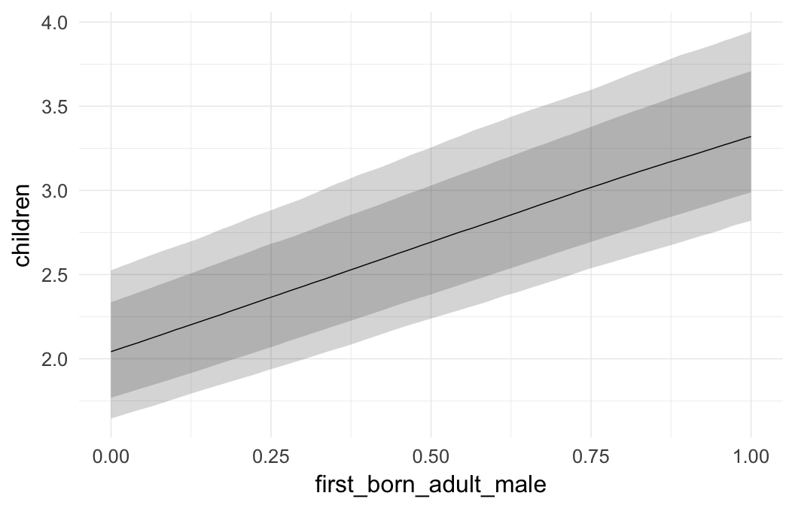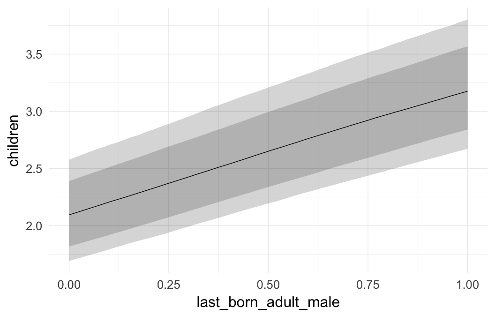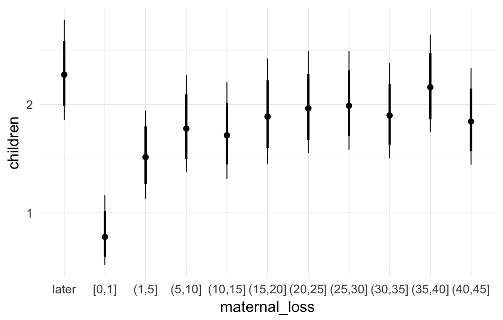
Coefficient plot
Coefficient estimates (95% and 80% credibility).
mcmc_intervals(as.matrix(model$fit), regex_pars = "b_[^I]")
mcmc_areas(as.matrix(model$fit), regex_pars = "b")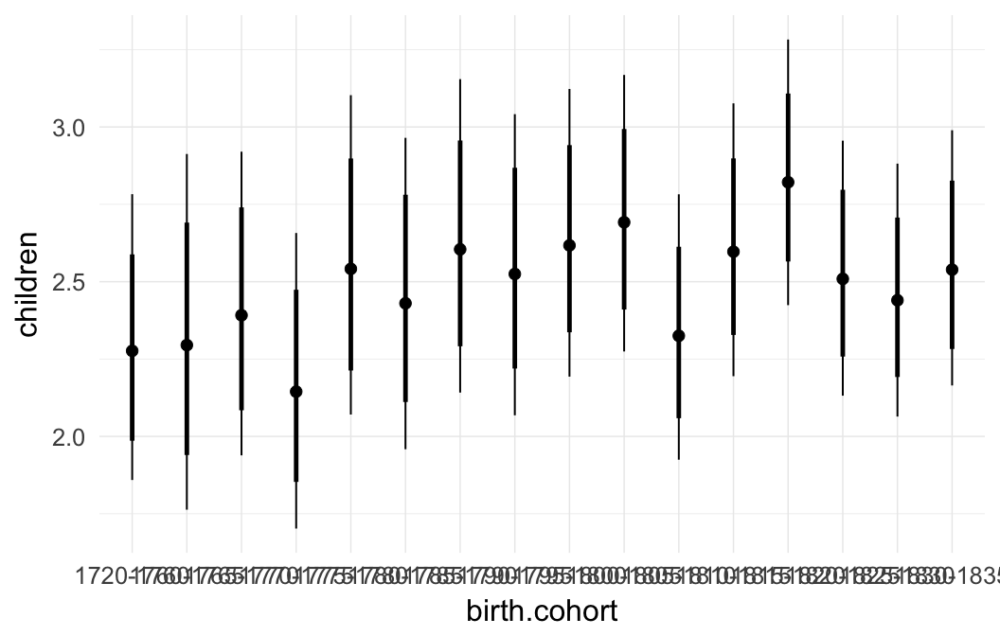
Diagnostics
These plots were made to diagnose misfit and nonconvergence.
Posterior predictive checks
brms::pp_check(model, re_formula = NA, type = "dens_overlay")
brms::pp_check(model, re_formula = NA, type = "hist")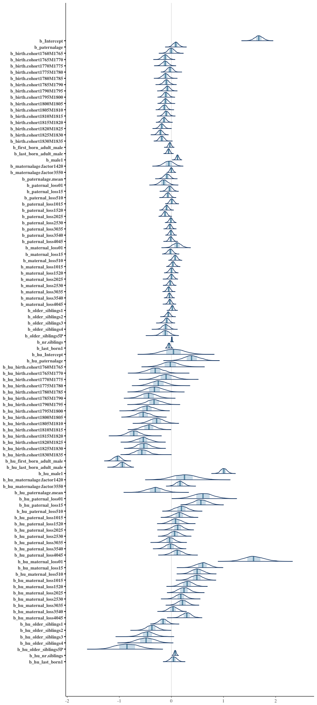
Rhat
Did the 6 chains converge?
stanplot(model, pars = "^b_[^I]", type = 'rhat')Effective sample size by average sample size
stanplot(model, pars = "^b", type = 'ess')Monte Carlo SE
stanplot(model, pars = "^b", type = 'mcse')Trace plots
if(any( summary(model)$fixed[,"Rhat"] > 1.1)) { # only do traceplots if not converged
plot(model, N = 3, ask = FALSE)
}Further plots
stanplot(model, pars = "^b", type = 'diag')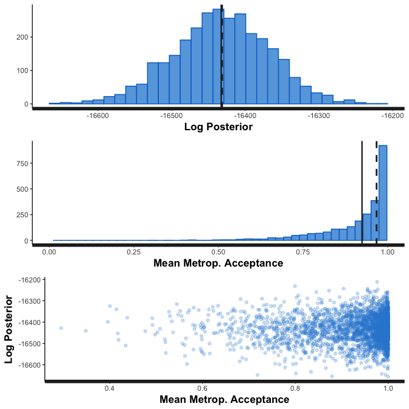
File name
coefs/krmh/r8_adjust_for_first_born_adult.rds
Cluster script
opts_chunk$set(echo = FALSE)
clusterscript = str_replace(basename(model_filename), "\\.rds",".html")
cat("[Cluster script](" , clusterscript, ")", sep = "")r9: Continuous birth year adjustment
In our main model, we control for birth cohort in 5-year-bins (lumping small bins). We chose to do so, because nonlinear and even sharply spiking effects of birth cohort are plausible (due to e.g. epidemics). This decision may be disputed, as it summarises 5-year-bins. Here, we instead allow for a thin-splate spline on the continuous birth year variable. This allows for smooth nonlinear (but not spiking) birth cohort effects.
Model summary
Full summary
model_summary = summary(model, use_cache = FALSE, priors = TRUE)
print(model_summary)## Family: hurdle_poisson (log)
## Formula: children ~ paternalage + s(byear) + male + maternalage.factor + paternalage.mean + paternal_loss + maternal_loss + older_siblings + nr.siblings + last_born + (1 | idParents)
## hu ~ paternalage + s(byear) + male + maternalage.factor + paternalage.mean + paternal_loss + maternal_loss + older_siblings + nr.siblings + last_born + (1 | idParents)
## Data: model_data (Number of observations: 9447)
## Samples: 6 chains, each with iter = 800; warmup = 300; thin = 1;
## total post-warmup samples = 3000
## WAIC: Not computed
##
## Priors:
## b ~ normal(0,5)
## sd ~ student_t(3, 0, 5)
## sds ~ student_t(3, 0, 10)
## b_hu ~ normal(0,5)
## sd_hu ~ student_t(3, 0, 10)
## sds_hu ~ student_t(3, 0, 10)
##
## Spline Effects:
## Estimate Est.Error l-95% CI u-95% CI Eff.Sample Rhat
## sds(sbyear_1) 0.12 0.13 0.00 0.47 936 1.01
## sds(hu_sbyear_1) 0.31 0.35 0.01 1.27 829 1.01
##
## Group-Level Effects:
## ~idParents (Number of levels: 2186)
## Estimate Est.Error l-95% CI u-95% CI Eff.Sample Rhat
## sd(Intercept) 0.22 0.01 0.20 0.25 998 1
## sd(hu_Intercept) 0.46 0.04 0.38 0.55 802 1
##
## Population-Level Effects:
## Estimate Est.Error l-95% CI u-95% CI Eff.Sample
## Intercept 1.53 0.07 1.40 1.67 2666
## paternalage 0.07 0.06 -0.04 0.17 761
## male1 0.08 0.02 0.05 0.11 3000
## maternalage.factor1420 -0.05 0.09 -0.24 0.13 3000
## maternalage.factor3550 0.00 0.03 -0.06 0.05 3000
## paternalage.mean -0.07 0.06 -0.18 0.04 827
## paternal_loss01 -0.15 0.07 -0.30 -0.01 3000
## paternal_loss15 -0.04 0.05 -0.14 0.06 3000
## paternal_loss510 -0.07 0.04 -0.15 0.01 1607
## paternal_loss1015 0.00 0.04 -0.07 0.08 1534
## paternal_loss1520 -0.09 0.04 -0.17 -0.02 1597
## paternal_loss2025 -0.12 0.04 -0.20 -0.05 1554
## paternal_loss2530 -0.01 0.03 -0.08 0.05 1248
## paternal_loss3035 -0.03 0.03 -0.09 0.04 1440
## paternal_loss3540 -0.01 0.03 -0.07 0.05 1508
## paternal_loss4045 -0.01 0.04 -0.09 0.06 1743
## maternal_loss01 0.11 0.08 -0.05 0.26 3000
## maternal_loss15 -0.02 0.05 -0.10 0.07 3000
## maternal_loss510 0.07 0.04 -0.01 0.15 2031
## maternal_loss1015 0.03 0.04 -0.05 0.11 2282
## maternal_loss1520 0.00 0.04 -0.08 0.08 3000
## maternal_loss2025 0.00 0.04 -0.07 0.08 3000
## maternal_loss2530 -0.02 0.03 -0.09 0.04 3000
## maternal_loss3035 -0.05 0.03 -0.12 0.01 3000
## maternal_loss3540 -0.04 0.03 -0.09 0.02 3000
## maternal_loss4045 -0.03 0.03 -0.09 0.03 3000
## older_siblings1 0.03 0.03 -0.03 0.08 1475
## older_siblings2 -0.05 0.04 -0.12 0.02 874
## older_siblings3 -0.07 0.05 -0.17 0.02 845
## older_siblings4 -0.10 0.06 -0.21 0.02 875
## older_siblings5P -0.10 0.08 -0.25 0.06 753
## nr.siblings 0.01 0.01 0.00 0.02 1084
## last_born1 -0.04 0.02 -0.09 0.00 3000
## sbyear_1 -0.05 0.05 -0.15 0.04 895
## hu_Intercept -0.72 0.17 -1.04 -0.38 3000
## hu_paternalage 0.27 0.14 -0.01 0.56 749
## hu_male1 0.27 0.05 0.18 0.37 3000
## hu_maternalage.factor1420 0.25 0.23 -0.20 0.69 3000
## hu_maternalage.factor3550 0.13 0.07 -0.01 0.27 3000
## hu_paternalage.mean -0.19 0.15 -0.48 0.10 768
## hu_paternal_loss01 0.57 0.18 0.24 0.92 3000
## hu_paternal_loss15 0.53 0.13 0.28 0.78 3000
## hu_paternal_loss510 0.19 0.11 -0.03 0.42 1553
## hu_paternal_loss1015 0.14 0.11 -0.07 0.35 1864
## hu_paternal_loss1520 0.10 0.10 -0.10 0.30 1318
## hu_paternal_loss2025 0.16 0.10 -0.03 0.35 1744
## hu_paternal_loss2530 0.06 0.09 -0.12 0.23 1328
## hu_paternal_loss3035 -0.02 0.09 -0.20 0.15 1536
## hu_paternal_loss3540 -0.02 0.09 -0.19 0.16 1530
## hu_paternal_loss4045 0.13 0.10 -0.06 0.32 3000
## hu_maternal_loss01 1.59 0.19 1.22 1.97 3000
## hu_maternal_loss15 0.60 0.12 0.36 0.84 3000
## hu_maternal_loss510 0.48 0.11 0.27 0.69 3000
## hu_maternal_loss1015 0.46 0.11 0.24 0.67 3000
## hu_maternal_loss1520 0.31 0.11 0.09 0.53 3000
## hu_maternal_loss2025 0.27 0.10 0.08 0.46 3000
## hu_maternal_loss2530 0.19 0.09 0.01 0.37 3000
## hu_maternal_loss3035 0.22 0.09 0.04 0.38 3000
## hu_maternal_loss3540 0.06 0.08 -0.09 0.22 3000
## hu_maternal_loss4045 0.26 0.09 0.10 0.43 3000
## hu_older_siblings1 -0.01 0.08 -0.16 0.14 1389
## hu_older_siblings2 -0.15 0.10 -0.35 0.03 912
## hu_older_siblings3 -0.19 0.13 -0.44 0.06 787
## hu_older_siblings4 -0.23 0.16 -0.53 0.07 747
## hu_older_siblings5P -0.57 0.21 -0.97 -0.16 717
## hu_nr.siblings 0.10 0.02 0.07 0.14 888
## hu_last_born1 0.07 0.06 -0.04 0.20 3000
## hu_sbyear_1 -0.15 0.11 -0.37 0.09 1269
## Rhat
## Intercept 1.00
## paternalage 1.01
## male1 1.00
## maternalage.factor1420 1.00
## maternalage.factor3550 1.00
## paternalage.mean 1.01
## paternal_loss01 1.00
## paternal_loss15 1.00
## paternal_loss510 1.00
## paternal_loss1015 1.01
## paternal_loss1520 1.00
## paternal_loss2025 1.00
## paternal_loss2530 1.00
## paternal_loss3035 1.00
## paternal_loss3540 1.00
## paternal_loss4045 1.00
## maternal_loss01 1.00
## maternal_loss15 1.00
## maternal_loss510 1.00
## maternal_loss1015 1.00
## maternal_loss1520 1.00
## maternal_loss2025 1.00
## maternal_loss2530 1.00
## maternal_loss3035 1.00
## maternal_loss3540 1.00
## maternal_loss4045 1.00
## older_siblings1 1.00
## older_siblings2 1.00
## older_siblings3 1.00
## older_siblings4 1.00
## older_siblings5P 1.01
## nr.siblings 1.01
## last_born1 1.00
## sbyear_1 1.01
## hu_Intercept 1.00
## hu_paternalage 1.00
## hu_male1 1.00
## hu_maternalage.factor1420 1.00
## hu_maternalage.factor3550 1.00
## hu_paternalage.mean 1.00
## hu_paternal_loss01 1.00
## hu_paternal_loss15 1.00
## hu_paternal_loss510 1.00
## hu_paternal_loss1015 1.00
## hu_paternal_loss1520 1.00
## hu_paternal_loss2025 1.00
## hu_paternal_loss2530 1.00
## hu_paternal_loss3035 1.01
## hu_paternal_loss3540 1.00
## hu_paternal_loss4045 1.00
## hu_maternal_loss01 1.00
## hu_maternal_loss15 1.00
## hu_maternal_loss510 1.00
## hu_maternal_loss1015 1.00
## hu_maternal_loss1520 1.00
## hu_maternal_loss2025 1.00
## hu_maternal_loss2530 1.00
## hu_maternal_loss3035 1.00
## hu_maternal_loss3540 1.00
## hu_maternal_loss4045 1.00
## hu_older_siblings1 1.00
## hu_older_siblings2 1.00
## hu_older_siblings3 1.00
## hu_older_siblings4 1.00
## hu_older_siblings5P 1.00
## hu_nr.siblings 1.00
## hu_last_born1 1.00
## hu_sbyear_1 1.00
##
## Samples were drawn using sampling(NUTS). For each parameter, Eff.Sample
## is a crude measure of effective sample size, and Rhat is the potential
## scale reduction factor on split chains (at convergence, Rhat = 1).Table of fixed effects
fixed_eff = data.frame(model_summary$fixed, check.names = F)
fixed_eff$Est.Error = fixed_eff$Eff.Sample = fixed_eff$Rhat = NULL
fixed_eff$OR = exp(fixed_eff$Estimate)
fixed_eff$OR_low = exp(fixed_eff$`l-95% CI`)
fixed_eff$OR_high = exp(fixed_eff$`u-95% CI`)
pander::pander(fixed_eff)| Estimate | l-95% CI | u-95% CI | OR | OR_low | OR_high | |
|---|---|---|---|---|---|---|
| Intercept | 1.534 | 1.401 | 1.668 | 4.635 | 4.06 | 5.3 |
| paternalage | 0.06663 | -0.03992 | 0.1743 | 1.069 | 0.9609 | 1.19 |
| male1 | 0.07813 | 0.04753 | 0.1101 | 1.081 | 1.049 | 1.116 |
| maternalage.factor1420 | -0.05474 | -0.2414 | 0.1263 | 0.9467 | 0.7855 | 1.135 |
| maternalage.factor3550 | -0.001376 | -0.05747 | 0.05424 | 0.9986 | 0.9441 | 1.056 |
| paternalage.mean | -0.0677 | -0.1774 | 0.0447 | 0.9345 | 0.8375 | 1.046 |
| paternal_loss01 | -0.1533 | -0.3022 | -0.008869 | 0.8579 | 0.7392 | 0.9912 |
| paternal_loss15 | -0.03725 | -0.1354 | 0.06351 | 0.9634 | 0.8734 | 1.066 |
| paternal_loss510 | -0.07029 | -0.151 | 0.008181 | 0.9321 | 0.8598 | 1.008 |
| paternal_loss1015 | 0.002123 | -0.07469 | 0.07932 | 1.002 | 0.928 | 1.083 |
| paternal_loss1520 | -0.09411 | -0.1662 | -0.01559 | 0.9102 | 0.8469 | 0.9845 |
| paternal_loss2025 | -0.1232 | -0.1977 | -0.04851 | 0.8841 | 0.8206 | 0.9527 |
| paternal_loss2530 | -0.01374 | -0.0799 | 0.05136 | 0.9863 | 0.9232 | 1.053 |
| paternal_loss3035 | -0.02986 | -0.09264 | 0.03539 | 0.9706 | 0.9115 | 1.036 |
| paternal_loss3540 | -0.01209 | -0.07396 | 0.05186 | 0.988 | 0.9287 | 1.053 |
| paternal_loss4045 | -0.01196 | -0.0854 | 0.05918 | 0.9881 | 0.9181 | 1.061 |
| maternal_loss01 | 0.105 | -0.05153 | 0.2597 | 1.111 | 0.9498 | 1.297 |
| maternal_loss15 | -0.01663 | -0.1038 | 0.06951 | 0.9835 | 0.9014 | 1.072 |
| maternal_loss510 | 0.06645 | -0.01411 | 0.1457 | 1.069 | 0.986 | 1.157 |
| maternal_loss1015 | 0.03025 | -0.05187 | 0.1118 | 1.031 | 0.9495 | 1.118 |
| maternal_loss1520 | 0.0007213 | -0.07955 | 0.07872 | 1.001 | 0.9235 | 1.082 |
| maternal_loss2025 | 0.003883 | -0.06911 | 0.07615 | 1.004 | 0.9332 | 1.079 |
| maternal_loss2530 | -0.02304 | -0.09236 | 0.04445 | 0.9772 | 0.9118 | 1.045 |
| maternal_loss3035 | -0.05272 | -0.1183 | 0.01026 | 0.9486 | 0.8885 | 1.01 |
| maternal_loss3540 | -0.03729 | -0.09464 | 0.02013 | 0.9634 | 0.9097 | 1.02 |
| maternal_loss4045 | -0.0329 | -0.09458 | 0.02835 | 0.9676 | 0.9098 | 1.029 |
| older_siblings1 | 0.02546 | -0.02802 | 0.07753 | 1.026 | 0.9724 | 1.081 |
| older_siblings2 | -0.04909 | -0.1217 | 0.02164 | 0.9521 | 0.8854 | 1.022 |
| older_siblings3 | -0.07217 | -0.1652 | 0.02201 | 0.9304 | 0.8478 | 1.022 |
| older_siblings4 | -0.09545 | -0.2131 | 0.02489 | 0.909 | 0.8081 | 1.025 |
| older_siblings5P | -0.09809 | -0.2546 | 0.06412 | 0.9066 | 0.7752 | 1.066 |
| nr.siblings | 0.009942 | -0.004876 | 0.024 | 1.01 | 0.9951 | 1.024 |
| last_born1 | -0.04235 | -0.08826 | 0.004161 | 0.9585 | 0.9155 | 1.004 |
| sbyear_1 | -0.05476 | -0.1489 | 0.03803 | 0.9467 | 0.8616 | 1.039 |
| hu_Intercept | -0.7175 | -1.045 | -0.3812 | 0.488 | 0.3517 | 0.683 |
| hu_paternalage | 0.268 | -0.01035 | 0.5566 | 1.307 | 0.9897 | 1.745 |
| hu_male1 | 0.2745 | 0.1847 | 0.3662 | 1.316 | 1.203 | 1.442 |
| hu_maternalage.factor1420 | 0.2462 | -0.1957 | 0.6908 | 1.279 | 0.8223 | 1.995 |
| hu_maternalage.factor3550 | 0.1315 | -0.008138 | 0.2737 | 1.141 | 0.9919 | 1.315 |
| hu_paternalage.mean | -0.1869 | -0.4759 | 0.1031 | 0.8295 | 0.6213 | 1.109 |
| hu_paternal_loss01 | 0.5722 | 0.2409 | 0.9212 | 1.772 | 1.272 | 2.512 |
| hu_paternal_loss15 | 0.5293 | 0.2798 | 0.776 | 1.698 | 1.323 | 2.173 |
| hu_paternal_loss510 | 0.1908 | -0.02694 | 0.4154 | 1.21 | 0.9734 | 1.515 |
| hu_paternal_loss1015 | 0.1413 | -0.07228 | 0.35 | 1.152 | 0.9303 | 1.419 |
| hu_paternal_loss1520 | 0.1017 | -0.1002 | 0.3005 | 1.107 | 0.9046 | 1.35 |
| hu_paternal_loss2025 | 0.1556 | -0.03073 | 0.3489 | 1.168 | 0.9697 | 1.418 |
| hu_paternal_loss2530 | 0.05731 | -0.1206 | 0.2345 | 1.059 | 0.8864 | 1.264 |
| hu_paternal_loss3035 | -0.02254 | -0.1987 | 0.1542 | 0.9777 | 0.8198 | 1.167 |
| hu_paternal_loss3540 | -0.01899 | -0.1908 | 0.1631 | 0.9812 | 0.8263 | 1.177 |
| hu_paternal_loss4045 | 0.1268 | -0.0626 | 0.3175 | 1.135 | 0.9393 | 1.374 |
| hu_maternal_loss01 | 1.586 | 1.222 | 1.969 | 4.885 | 3.393 | 7.165 |
| hu_maternal_loss15 | 0.5999 | 0.3632 | 0.8355 | 1.822 | 1.438 | 2.306 |
| hu_maternal_loss510 | 0.4791 | 0.2736 | 0.6877 | 1.615 | 1.315 | 1.989 |
| hu_maternal_loss1015 | 0.4569 | 0.2395 | 0.6652 | 1.579 | 1.271 | 1.945 |
| hu_maternal_loss1520 | 0.3052 | 0.08981 | 0.5251 | 1.357 | 1.094 | 1.691 |
| hu_maternal_loss2025 | 0.2706 | 0.08022 | 0.4645 | 1.311 | 1.084 | 1.591 |
| hu_maternal_loss2530 | 0.1908 | 0.01254 | 0.3689 | 1.21 | 1.013 | 1.446 |
| hu_maternal_loss3035 | 0.2175 | 0.04292 | 0.3834 | 1.243 | 1.044 | 1.467 |
| hu_maternal_loss3540 | 0.06461 | -0.09251 | 0.2159 | 1.067 | 0.9116 | 1.241 |
| hu_maternal_loss4045 | 0.259 | 0.09746 | 0.4251 | 1.296 | 1.102 | 1.53 |
| hu_older_siblings1 | -0.0115 | -0.1611 | 0.1367 | 0.9886 | 0.8512 | 1.147 |
| hu_older_siblings2 | -0.1525 | -0.3522 | 0.03121 | 0.8586 | 0.7031 | 1.032 |
| hu_older_siblings3 | -0.1922 | -0.4438 | 0.06136 | 0.8251 | 0.6416 | 1.063 |
| hu_older_siblings4 | -0.2329 | -0.5349 | 0.07351 | 0.7922 | 0.5857 | 1.076 |
| hu_older_siblings5P | -0.5721 | -0.9696 | -0.1634 | 0.5644 | 0.3792 | 0.8493 |
| hu_nr.siblings | 0.104 | 0.06823 | 0.1411 | 1.11 | 1.071 | 1.152 |
| hu_last_born1 | 0.07497 | -0.04173 | 0.2018 | 1.078 | 0.9591 | 1.224 |
| hu_sbyear_1 | -0.1512 | -0.3668 | 0.09046 | 0.8597 | 0.693 | 1.095 |
Paternal age effect
pander::pander(paternal_age_10y_effect(model))| effect | median_estimate | ci_95 | ci_80 |
|---|---|---|---|
| estimate father 25y | 2.54 | [2.28;2.81] | [2.37;2.72] |
| estimate father 35y | 2.38 | [2.01;2.78] | [2.13;2.63] |
| percentage change | -6.35 | [-21.47;11.08] | [-16.4;4.87] |
| OR/IRR | 1.07 | [0.96;1.19] | [1;1.15] |
| OR hurdle | 1.31 | [0.99;1.74] | [1.08;1.58] |
Marginal effect plots
plot.brmsMarginalEffects_shades(
x = marginal_effects(model, re_formula = NA, probs = c(0.025,0.975)),
y = marginal_effects(model, re_formula = NA, probs = c(0.1,0.9)),
ask = FALSE) 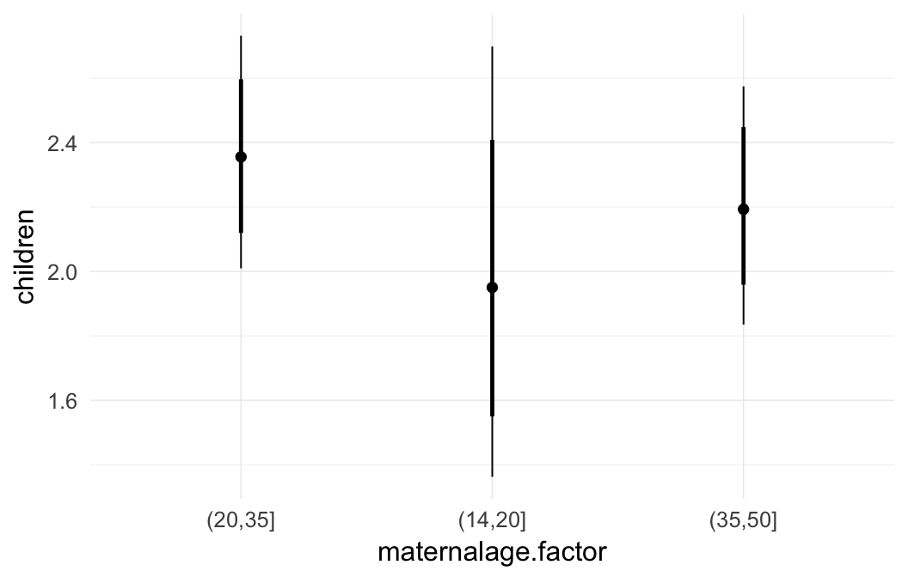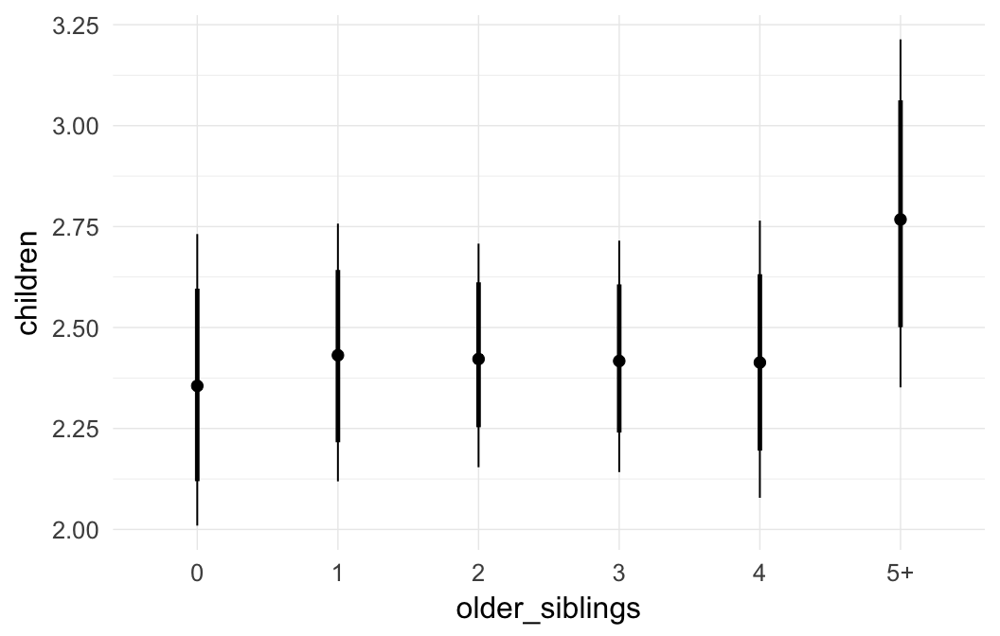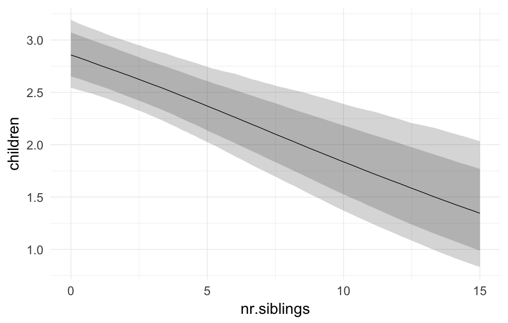
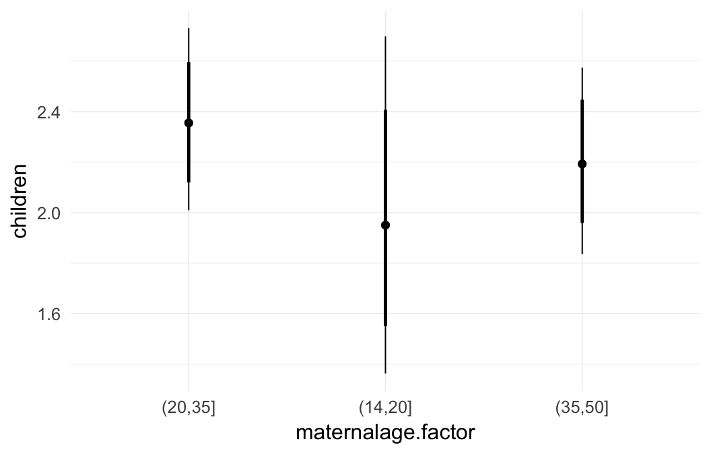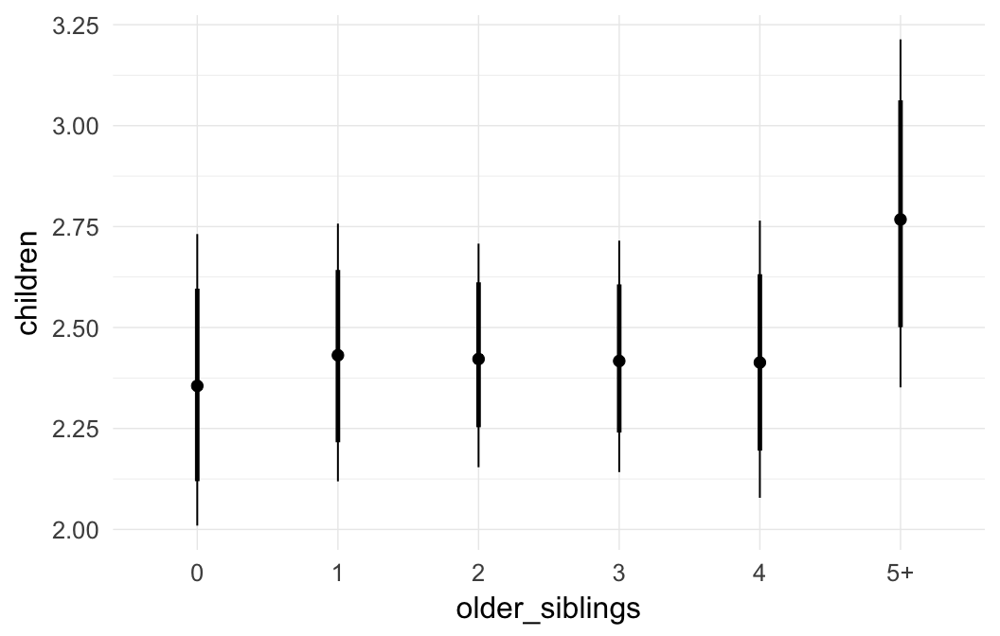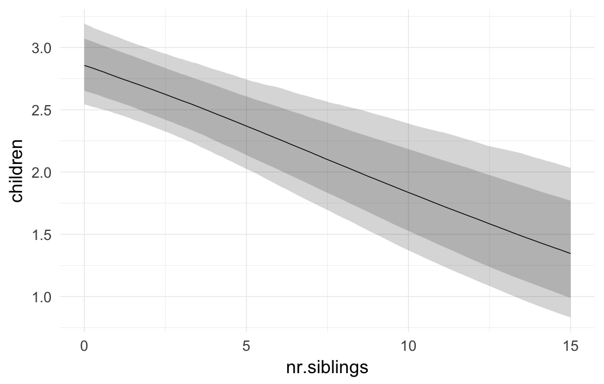
Coefficient plot
Coefficient estimates (95% and 80% credibility).
mcmc_intervals(as.matrix(model$fit), regex_pars = "b_[^I]")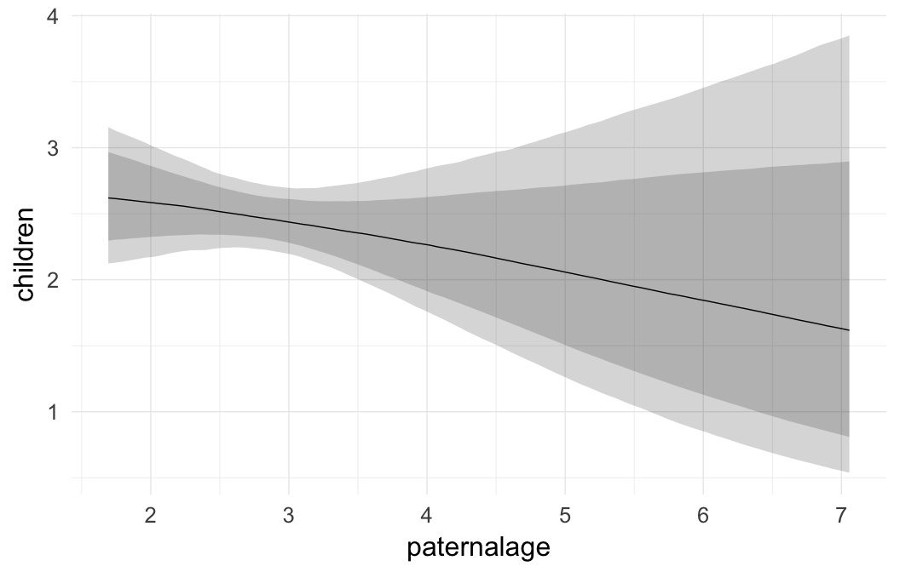
mcmc_areas(as.matrix(model$fit), regex_pars = "b")Diagnostics
These plots were made to diagnose misfit and nonconvergence.
Posterior predictive checks
brms::pp_check(model, re_formula = NA, type = "dens_overlay")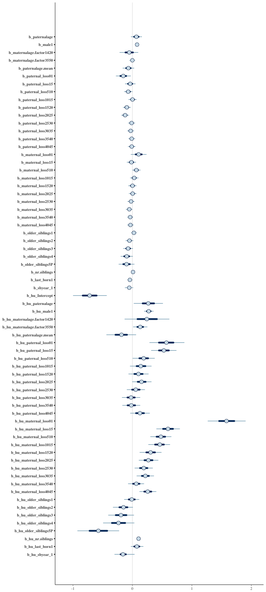
brms::pp_check(model, re_formula = NA, type = "hist")Rhat
Did the 6 chains converge?
stanplot(model, pars = "^b_[^I]", type = 'rhat')Effective sample size by average sample size
stanplot(model, pars = "^b", type = 'ess')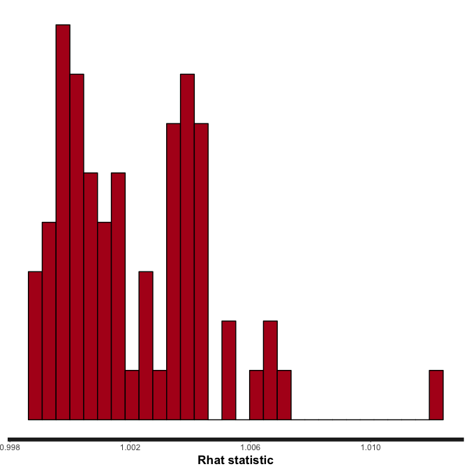
Monte Carlo SE
stanplot(model, pars = "^b", type = 'mcse')Trace plots
if(any( summary(model)$fixed[,"Rhat"] > 1.1)) { # only do traceplots if not converged
plot(model, N = 3, ask = FALSE)
}Further plots
stanplot(model, pars = "^b", type = 'diag')File name
coefs/krmh/r9_continuous_byear_adjustment.rds
Cluster script
opts_chunk$set(echo = FALSE)
clusterscript = str_replace(basename(model_filename), "\\.rds",".html")
cat("[Cluster script](" , clusterscript, ")", sep = "")r10: Group-level slope added
Paternal age effects may vary between different families. Although we did not explore between-family moderators of paternal age effects in our study, we tested whether modelling an additional group-level slope for paternal age differences within the family, would change the results by allowing for shrinkage and to examine the amount of inter-family differences to be explained for potential future moderator analysis.
Model summary
Full summary
model_summary = summary(model, use_cache = FALSE, priors = TRUE)
print(model_summary)## Family: hurdle_poisson (log)
## Formula: children ~ paternalage + birth_cohort + male + maternalage.factor + paternalage.mean + paternal_loss + maternal_loss + older_siblings + nr.siblings + last_born + (1 + paternalage | idParents)
## hu ~ paternalage + birth_cohort + male + maternalage.factor + paternalage.mean + paternal_loss + maternal_loss + older_siblings + nr.siblings + last_born + (1 + paternalage | idParents)
## Data: model_data (Number of observations: 9447)
## Samples: 6 chains, each with iter = 10000; warmup = 4000; thin = 5;
## total post-warmup samples = 7200
## WAIC: Not computed
##
## Priors:
## b ~ normal(0,5)
## L ~ lkj_corr_cholesky(1)
## sd ~ student_t(3, 0, 5)
## b_hu ~ normal(0,5)
## sd_hu ~ student_t(3, 0, 10)
##
## Group-Level Effects:
## ~idParents (Number of levels: 2186)
## Estimate Est.Error l-95% CI u-95% CI
## sd(Intercept) 0.71 0.09 0.52 0.88
## sd(paternalage) 0.18 0.03 0.12 0.23
## sd(hu_Intercept) 0.38 0.19 0.03 0.78
## sd(hu_paternalage) 0.09 0.05 0.01 0.21
## cor(Intercept,paternalage) -0.96 0.02 -0.98 -0.92
## cor(hu_Intercept,hu_paternalage) -0.07 0.54 -0.89 0.92
## Eff.Sample Rhat
## sd(Intercept) 3055 1.00
## sd(paternalage) 2382 1.00
## sd(hu_Intercept) 1623 1.00
## sd(hu_paternalage) 375 1.01
## cor(Intercept,paternalage) 3469 1.00
## cor(hu_Intercept,hu_paternalage) 989 1.00
##
## Population-Level Effects:
## Estimate Est.Error l-95% CI u-95% CI Eff.Sample
## Intercept 1.63 0.08 1.47 1.80 6098
## paternalage 0.07 0.06 -0.04 0.19 5432
## birth_cohort1760M1765 -0.01 0.06 -0.14 0.12 6137
## birth_cohort1765M1770 -0.12 0.06 -0.23 -0.01 5509
## birth_cohort1770M1775 -0.12 0.06 -0.23 0.00 5569
## birth_cohort1775M1780 -0.04 0.06 -0.15 0.07 4964
## birth_cohort1780M1785 -0.12 0.06 -0.23 0.00 5773
## birth_cohort1785M1790 -0.11 0.06 -0.22 0.00 4841
## birth_cohort1790M1795 -0.08 0.05 -0.18 0.03 4610
## birth_cohort1795M1800 -0.11 0.05 -0.21 -0.01 5465
## birth_cohort1800M1805 -0.12 0.05 -0.22 -0.02 5205
## birth_cohort1805M1810 -0.14 0.05 -0.24 -0.04 5154
## birth_cohort1810M1815 -0.10 0.05 -0.20 -0.01 4755
## birth_cohort1815M1820 -0.15 0.05 -0.24 -0.06 4574
## birth_cohort1820M1825 -0.20 0.05 -0.29 -0.11 4256
## birth_cohort1825M1830 -0.22 0.05 -0.31 -0.13 4797
## birth_cohort1830M1835 -0.19 0.05 -0.28 -0.09 4854
## male1 0.08 0.02 0.05 0.11 7028
## maternalage.factor1420 -0.05 0.10 -0.25 0.14 7200
## maternalage.factor3550 -0.01 0.03 -0.06 0.05 7200
## paternalage.mean -0.07 0.06 -0.19 0.04 5637
## paternal_loss01 -0.15 0.08 -0.30 0.00 7200
## paternal_loss15 -0.04 0.05 -0.14 0.06 6636
## paternal_loss510 -0.08 0.04 -0.16 0.01 6086
## paternal_loss1015 0.00 0.04 -0.08 0.08 6556
## paternal_loss1520 -0.09 0.04 -0.17 -0.01 6344
## paternal_loss2025 -0.12 0.04 -0.19 -0.04 5556
## paternal_loss2530 0.00 0.04 -0.08 0.06 6421
## paternal_loss3035 -0.02 0.03 -0.09 0.04 6486
## paternal_loss3540 -0.01 0.03 -0.07 0.06 6498
## paternal_loss4045 -0.01 0.04 -0.08 0.06 6688
## maternal_loss01 0.10 0.08 -0.06 0.25 6426
## maternal_loss15 -0.01 0.05 -0.11 0.08 6522
## maternal_loss510 0.08 0.04 0.00 0.16 6995
## maternal_loss1015 0.04 0.04 -0.05 0.12 7200
## maternal_loss1520 0.00 0.04 -0.08 0.09 6247
## maternal_loss2025 0.01 0.04 -0.06 0.09 7200
## maternal_loss2530 -0.02 0.04 -0.09 0.05 6373
## maternal_loss3035 -0.04 0.03 -0.11 0.02 7042
## maternal_loss3540 -0.03 0.03 -0.08 0.03 6626
## maternal_loss4045 -0.03 0.03 -0.09 0.04 6922
## older_siblings1 0.03 0.03 -0.03 0.08 6499
## older_siblings2 -0.04 0.04 -0.12 0.03 5862
## older_siblings3 -0.06 0.05 -0.16 0.03 5457
## older_siblings4 -0.09 0.06 -0.21 0.03 5365
## older_siblings5P -0.09 0.08 -0.26 0.07 5108
## nr.siblings 0.01 0.01 0.00 0.02 5755
## last_born1 -0.04 0.02 -0.09 0.00 7200
## hu_Intercept -0.33 0.20 -0.73 0.04 5660
## hu_paternalage 0.27 0.14 0.00 0.56 5204
## hu_birth_cohort1760M1765 -0.05 0.17 -0.37 0.29 6156
## hu_birth_cohort1765M1770 -0.31 0.15 -0.60 -0.01 5878
## hu_birth_cohort1770M1775 -0.07 0.15 -0.35 0.22 5488
## hu_birth_cohort1775M1780 -0.20 0.14 -0.47 0.09 5508
## hu_birth_cohort1780M1785 -0.27 0.15 -0.56 0.01 5653
## hu_birth_cohort1785M1790 -0.42 0.14 -0.70 -0.13 5560
## hu_birth_cohort1790M1795 -0.31 0.13 -0.57 -0.05 5122
## hu_birth_cohort1795M1800 -0.45 0.13 -0.70 -0.19 5377
## hu_birth_cohort1800M1805 -0.53 0.12 -0.78 -0.29 5514
## hu_birth_cohort1805M1810 -0.26 0.13 -0.51 -0.02 5520
## hu_birth_cohort1810M1815 -0.44 0.12 -0.67 -0.20 5187
## hu_birth_cohort1815M1820 -0.70 0.12 -0.93 -0.47 5205
## hu_birth_cohort1820M1825 -0.52 0.12 -0.75 -0.29 5218
## hu_birth_cohort1825M1830 -0.54 0.12 -0.78 -0.31 4984
## hu_birth_cohort1830M1835 -0.56 0.12 -0.79 -0.32 5239
## hu_male1 0.27 0.05 0.19 0.36 6970
## hu_maternalage.factor1420 0.25 0.23 -0.19 0.72 7200
## hu_maternalage.factor3550 0.13 0.07 -0.01 0.27 7200
## hu_paternalage.mean -0.19 0.15 -0.48 0.10 5314
## hu_paternal_loss01 0.57 0.18 0.21 0.93 6845
## hu_paternal_loss15 0.54 0.13 0.29 0.79 6671
## hu_paternal_loss510 0.19 0.11 -0.03 0.41 6421
## hu_paternal_loss1015 0.16 0.10 -0.05 0.36 6184
## hu_paternal_loss1520 0.10 0.10 -0.10 0.30 6605
## hu_paternal_loss2025 0.15 0.10 -0.03 0.35 6452
## hu_paternal_loss2530 0.06 0.09 -0.12 0.24 6379
## hu_paternal_loss3035 -0.02 0.09 -0.20 0.15 6013
## hu_paternal_loss3540 -0.02 0.09 -0.19 0.16 6448
## hu_paternal_loss4045 0.14 0.10 -0.05 0.34 7012
## hu_maternal_loss01 1.58 0.19 1.21 1.95 6948
## hu_maternal_loss15 0.58 0.12 0.35 0.82 6888
## hu_maternal_loss510 0.48 0.11 0.27 0.69 6840
## hu_maternal_loss1015 0.46 0.11 0.25 0.68 7008
## hu_maternal_loss1520 0.30 0.11 0.09 0.52 7055
## hu_maternal_loss2025 0.26 0.10 0.06 0.47 7119
## hu_maternal_loss2530 0.19 0.09 0.01 0.37 7200
## hu_maternal_loss3035 0.22 0.09 0.05 0.39 6972
## hu_maternal_loss3540 0.07 0.08 -0.10 0.22 7200
## hu_maternal_loss4045 0.28 0.08 0.11 0.44 6930
## hu_older_siblings1 -0.01 0.07 -0.16 0.13 6576
## hu_older_siblings2 -0.16 0.10 -0.35 0.03 5814
## hu_older_siblings3 -0.20 0.13 -0.45 0.04 5382
## hu_older_siblings4 -0.24 0.16 -0.54 0.07 5809
## hu_older_siblings5P -0.58 0.20 -0.98 -0.18 5468
## hu_nr.siblings 0.10 0.02 0.07 0.14 5772
## hu_last_born1 0.08 0.06 -0.04 0.21 6346
## Rhat
## Intercept 1
## paternalage 1
## birth_cohort1760M1765 1
## birth_cohort1765M1770 1
## birth_cohort1770M1775 1
## birth_cohort1775M1780 1
## birth_cohort1780M1785 1
## birth_cohort1785M1790 1
## birth_cohort1790M1795 1
## birth_cohort1795M1800 1
## birth_cohort1800M1805 1
## birth_cohort1805M1810 1
## birth_cohort1810M1815 1
## birth_cohort1815M1820 1
## birth_cohort1820M1825 1
## birth_cohort1825M1830 1
## birth_cohort1830M1835 1
## male1 1
## maternalage.factor1420 1
## maternalage.factor3550 1
## paternalage.mean 1
## paternal_loss01 1
## paternal_loss15 1
## paternal_loss510 1
## paternal_loss1015 1
## paternal_loss1520 1
## paternal_loss2025 1
## paternal_loss2530 1
## paternal_loss3035 1
## paternal_loss3540 1
## paternal_loss4045 1
## maternal_loss01 1
## maternal_loss15 1
## maternal_loss510 1
## maternal_loss1015 1
## maternal_loss1520 1
## maternal_loss2025 1
## maternal_loss2530 1
## maternal_loss3035 1
## maternal_loss3540 1
## maternal_loss4045 1
## older_siblings1 1
## older_siblings2 1
## older_siblings3 1
## older_siblings4 1
## older_siblings5P 1
## nr.siblings 1
## last_born1 1
## hu_Intercept 1
## hu_paternalage 1
## hu_birth_cohort1760M1765 1
## hu_birth_cohort1765M1770 1
## hu_birth_cohort1770M1775 1
## hu_birth_cohort1775M1780 1
## hu_birth_cohort1780M1785 1
## hu_birth_cohort1785M1790 1
## hu_birth_cohort1790M1795 1
## hu_birth_cohort1795M1800 1
## hu_birth_cohort1800M1805 1
## hu_birth_cohort1805M1810 1
## hu_birth_cohort1810M1815 1
## hu_birth_cohort1815M1820 1
## hu_birth_cohort1820M1825 1
## hu_birth_cohort1825M1830 1
## hu_birth_cohort1830M1835 1
## hu_male1 1
## hu_maternalage.factor1420 1
## hu_maternalage.factor3550 1
## hu_paternalage.mean 1
## hu_paternal_loss01 1
## hu_paternal_loss15 1
## hu_paternal_loss510 1
## hu_paternal_loss1015 1
## hu_paternal_loss1520 1
## hu_paternal_loss2025 1
## hu_paternal_loss2530 1
## hu_paternal_loss3035 1
## hu_paternal_loss3540 1
## hu_paternal_loss4045 1
## hu_maternal_loss01 1
## hu_maternal_loss15 1
## hu_maternal_loss510 1
## hu_maternal_loss1015 1
## hu_maternal_loss1520 1
## hu_maternal_loss2025 1
## hu_maternal_loss2530 1
## hu_maternal_loss3035 1
## hu_maternal_loss3540 1
## hu_maternal_loss4045 1
## hu_older_siblings1 1
## hu_older_siblings2 1
## hu_older_siblings3 1
## hu_older_siblings4 1
## hu_older_siblings5P 1
## hu_nr.siblings 1
## hu_last_born1 1
##
## Samples were drawn using sampling(NUTS). For each parameter, Eff.Sample
## is a crude measure of effective sample size, and Rhat is the potential
## scale reduction factor on split chains (at convergence, Rhat = 1).Table of fixed effects
fixed_eff = data.frame(model_summary$fixed, check.names = F)
fixed_eff$Est.Error = fixed_eff$Eff.Sample = fixed_eff$Rhat = NULL
fixed_eff$OR = exp(fixed_eff$Estimate)
fixed_eff$OR_low = exp(fixed_eff$`l-95% CI`)
fixed_eff$OR_high = exp(fixed_eff$`u-95% CI`)
pander::pander(fixed_eff)| Estimate | l-95% CI | u-95% CI | OR | OR_low | OR_high | |
|---|---|---|---|---|---|---|
| Intercept | 1.633 | 1.471 | 1.797 | 5.117 | 4.351 | 6.029 |
| paternalage | 0.07307 | -0.03598 | 0.1859 | 1.076 | 0.9647 | 1.204 |
| birth_cohort1760M1765 | -0.009069 | -0.1377 | 0.1157 | 0.991 | 0.8713 | 1.123 |
| birth_cohort1765M1770 | -0.1218 | -0.2346 | -0.007033 | 0.8854 | 0.7909 | 0.993 |
| birth_cohort1770M1775 | -0.1161 | -0.2341 | 0.0005228 | 0.8904 | 0.7913 | 1.001 |
| birth_cohort1775M1780 | -0.04275 | -0.1525 | 0.06829 | 0.9581 | 0.8586 | 1.071 |
| birth_cohort1780M1785 | -0.1167 | -0.2324 | -0.004184 | 0.8898 | 0.7926 | 0.9958 |
| birth_cohort1785M1790 | -0.1114 | -0.2219 | -0.001502 | 0.8946 | 0.801 | 0.9985 |
| birth_cohort1790M1795 | -0.0778 | -0.1835 | 0.02636 | 0.9252 | 0.8324 | 1.027 |
| birth_cohort1795M1800 | -0.112 | -0.2119 | -0.01392 | 0.8941 | 0.809 | 0.9862 |
| birth_cohort1800M1805 | -0.1173 | -0.2166 | -0.02278 | 0.8893 | 0.8053 | 0.9775 |
| birth_cohort1805M1810 | -0.1382 | -0.2393 | -0.03947 | 0.8709 | 0.7872 | 0.9613 |
| birth_cohort1810M1815 | -0.1039 | -0.2 | -0.008273 | 0.9013 | 0.8187 | 0.9918 |
| birth_cohort1815M1820 | -0.1508 | -0.2418 | -0.06029 | 0.86 | 0.7852 | 0.9415 |
| birth_cohort1820M1825 | -0.1977 | -0.2917 | -0.1068 | 0.8206 | 0.747 | 0.8987 |
| birth_cohort1825M1830 | -0.2192 | -0.3123 | -0.1279 | 0.8032 | 0.7318 | 0.88 |
| birth_cohort1830M1835 | -0.1864 | -0.2818 | -0.0933 | 0.8299 | 0.7545 | 0.9109 |
| male1 | 0.07804 | 0.04559 | 0.1117 | 1.081 | 1.047 | 1.118 |
| maternalage.factor1420 | -0.05307 | -0.2455 | 0.1361 | 0.9483 | 0.7823 | 1.146 |
| maternalage.factor3550 | -0.008166 | -0.06327 | 0.04656 | 0.9919 | 0.9387 | 1.048 |
| paternalage.mean | -0.07069 | -0.1864 | 0.03874 | 0.9318 | 0.8299 | 1.04 |
| paternal_loss01 | -0.1491 | -0.2972 | -0.004179 | 0.8615 | 0.7429 | 0.9958 |
| paternal_loss15 | -0.03947 | -0.1394 | 0.06051 | 0.9613 | 0.8698 | 1.062 |
| paternal_loss510 | -0.07796 | -0.1638 | 0.009568 | 0.925 | 0.8489 | 1.01 |
| paternal_loss1015 | 0.001562 | -0.07708 | 0.08007 | 1.002 | 0.9258 | 1.083 |
| paternal_loss1520 | -0.09399 | -0.1716 | -0.01439 | 0.9103 | 0.8423 | 0.9857 |
| paternal_loss2025 | -0.1201 | -0.1944 | -0.04426 | 0.8868 | 0.8233 | 0.9567 |
| paternal_loss2530 | -0.004867 | -0.07532 | 0.06457 | 0.9951 | 0.9274 | 1.067 |
| paternal_loss3035 | -0.02473 | -0.09127 | 0.04345 | 0.9756 | 0.9128 | 1.044 |
| paternal_loss3540 | -0.008826 | -0.07394 | 0.05566 | 0.9912 | 0.9287 | 1.057 |
| paternal_loss4045 | -0.008849 | -0.0813 | 0.06351 | 0.9912 | 0.9219 | 1.066 |
| maternal_loss01 | 0.09812 | -0.06182 | 0.254 | 1.103 | 0.9401 | 1.289 |
| maternal_loss15 | -0.01386 | -0.1077 | 0.08354 | 0.9862 | 0.8979 | 1.087 |
| maternal_loss510 | 0.07695 | -0.00351 | 0.1583 | 1.08 | 0.9965 | 1.171 |
| maternal_loss1015 | 0.03597 | -0.04655 | 0.116 | 1.037 | 0.9545 | 1.123 |
| maternal_loss1520 | 0.00409 | -0.07968 | 0.08576 | 1.004 | 0.9234 | 1.09 |
| maternal_loss2025 | 0.01248 | -0.06463 | 0.09047 | 1.013 | 0.9374 | 1.095 |
| maternal_loss2530 | -0.01694 | -0.08665 | 0.05445 | 0.9832 | 0.917 | 1.056 |
| maternal_loss3035 | -0.04214 | -0.107 | 0.02255 | 0.9587 | 0.8985 | 1.023 |
| maternal_loss3540 | -0.02573 | -0.08403 | 0.03453 | 0.9746 | 0.9194 | 1.035 |
| maternal_loss4045 | -0.02578 | -0.0894 | 0.0377 | 0.9746 | 0.9145 | 1.038 |
| older_siblings1 | 0.02813 | -0.02653 | 0.08268 | 1.029 | 0.9738 | 1.086 |
| older_siblings2 | -0.04298 | -0.117 | 0.03101 | 0.9579 | 0.8896 | 1.031 |
| older_siblings3 | -0.06474 | -0.1604 | 0.0292 | 0.9373 | 0.8518 | 1.03 |
| older_siblings4 | -0.08589 | -0.2068 | 0.03287 | 0.9177 | 0.8132 | 1.033 |
| older_siblings5P | -0.09031 | -0.2552 | 0.06589 | 0.9136 | 0.7747 | 1.068 |
| nr.siblings | 0.009664 | -0.004535 | 0.02454 | 1.01 | 0.9955 | 1.025 |
| last_born1 | -0.04372 | -0.09118 | 0.003683 | 0.9572 | 0.9129 | 1.004 |
| hu_Intercept | -0.3348 | -0.7271 | 0.04418 | 0.7155 | 0.4833 | 1.045 |
| hu_paternalage | 0.2743 | -0.004393 | 0.56 | 1.316 | 0.9956 | 1.751 |
| hu_birth_cohort1760M1765 | -0.0506 | -0.3746 | 0.2891 | 0.9507 | 0.6876 | 1.335 |
| hu_birth_cohort1765M1770 | -0.3088 | -0.5968 | -0.01279 | 0.7343 | 0.5506 | 0.9873 |
| hu_birth_cohort1770M1775 | -0.06592 | -0.3538 | 0.2212 | 0.9362 | 0.702 | 1.248 |
| hu_birth_cohort1775M1780 | -0.1963 | -0.4729 | 0.08883 | 0.8217 | 0.6232 | 1.093 |
| hu_birth_cohort1780M1785 | -0.274 | -0.5641 | 0.01112 | 0.7604 | 0.5689 | 1.011 |
| hu_birth_cohort1785M1790 | -0.421 | -0.7011 | -0.1327 | 0.6564 | 0.496 | 0.8757 |
| hu_birth_cohort1790M1795 | -0.308 | -0.5718 | -0.04544 | 0.7349 | 0.5645 | 0.9556 |
| hu_birth_cohort1795M1800 | -0.4538 | -0.7029 | -0.194 | 0.6352 | 0.4952 | 0.8237 |
| hu_birth_cohort1800M1805 | -0.533 | -0.7753 | -0.2874 | 0.5868 | 0.4605 | 0.7502 |
| hu_birth_cohort1805M1810 | -0.2649 | -0.5123 | -0.0199 | 0.7673 | 0.5991 | 0.9803 |
| hu_birth_cohort1810M1815 | -0.4354 | -0.6726 | -0.1956 | 0.647 | 0.5104 | 0.8224 |
| hu_birth_cohort1815M1820 | -0.6999 | -0.9348 | -0.4684 | 0.4966 | 0.3926 | 0.626 |
| hu_birth_cohort1820M1825 | -0.5187 | -0.7508 | -0.2909 | 0.5953 | 0.472 | 0.7476 |
| hu_birth_cohort1825M1830 | -0.5433 | -0.7766 | -0.31 | 0.5808 | 0.46 | 0.7335 |
| hu_birth_cohort1830M1835 | -0.5559 | -0.788 | -0.3229 | 0.5736 | 0.4548 | 0.724 |
| hu_male1 | 0.2735 | 0.1863 | 0.3611 | 1.315 | 1.205 | 1.435 |
| hu_maternalage.factor1420 | 0.2512 | -0.1909 | 0.7161 | 1.286 | 0.8262 | 2.046 |
| hu_maternalage.factor3550 | 0.1306 | -0.01198 | 0.2729 | 1.14 | 0.9881 | 1.314 |
| hu_paternalage.mean | -0.1914 | -0.484 | 0.09535 | 0.8258 | 0.6163 | 1.1 |
| hu_paternal_loss01 | 0.5738 | 0.2142 | 0.9316 | 1.775 | 1.239 | 2.538 |
| hu_paternal_loss15 | 0.537 | 0.286 | 0.7921 | 1.711 | 1.331 | 2.208 |
| hu_paternal_loss510 | 0.1931 | -0.02653 | 0.4148 | 1.213 | 0.9738 | 1.514 |
| hu_paternal_loss1015 | 0.1574 | -0.0467 | 0.3636 | 1.17 | 0.9544 | 1.438 |
| hu_paternal_loss1520 | 0.1036 | -0.09629 | 0.3013 | 1.109 | 0.9082 | 1.352 |
| hu_paternal_loss2025 | 0.1532 | -0.03496 | 0.345 | 1.166 | 0.9656 | 1.412 |
| hu_paternal_loss2530 | 0.06157 | -0.1223 | 0.2398 | 1.063 | 0.8849 | 1.271 |
| hu_paternal_loss3035 | -0.02149 | -0.1984 | 0.1481 | 0.9787 | 0.8201 | 1.16 |
| hu_paternal_loss3540 | -0.01618 | -0.1911 | 0.1578 | 0.984 | 0.8261 | 1.171 |
| hu_paternal_loss4045 | 0.1414 | -0.05393 | 0.3368 | 1.152 | 0.9475 | 1.401 |
| hu_maternal_loss01 | 1.578 | 1.215 | 1.946 | 4.845 | 3.369 | 7.003 |
| hu_maternal_loss15 | 0.5831 | 0.3488 | 0.8183 | 1.792 | 1.417 | 2.267 |
| hu_maternal_loss510 | 0.4811 | 0.2716 | 0.6891 | 1.618 | 1.312 | 1.992 |
| hu_maternal_loss1015 | 0.4643 | 0.2513 | 0.6764 | 1.591 | 1.286 | 1.967 |
| hu_maternal_loss1520 | 0.3048 | 0.09246 | 0.5169 | 1.356 | 1.097 | 1.677 |
| hu_maternal_loss2025 | 0.2587 | 0.05818 | 0.4652 | 1.295 | 1.06 | 1.592 |
| hu_maternal_loss2530 | 0.1889 | 0.009689 | 0.3691 | 1.208 | 1.01 | 1.446 |
| hu_maternal_loss3035 | 0.2163 | 0.0491 | 0.3866 | 1.241 | 1.05 | 1.472 |
| hu_maternal_loss3540 | 0.06572 | -0.09582 | 0.2233 | 1.068 | 0.9086 | 1.25 |
| hu_maternal_loss4045 | 0.2773 | 0.1089 | 0.4395 | 1.32 | 1.115 | 1.552 |
| hu_older_siblings1 | -0.01278 | -0.1569 | 0.133 | 0.9873 | 0.8548 | 1.142 |
| hu_older_siblings2 | -0.1578 | -0.3468 | 0.02992 | 0.8541 | 0.7069 | 1.03 |
| hu_older_siblings3 | -0.1989 | -0.4458 | 0.04198 | 0.8196 | 0.6403 | 1.043 |
| hu_older_siblings4 | -0.2358 | -0.5415 | 0.06875 | 0.7899 | 0.5819 | 1.071 |
| hu_older_siblings5P | -0.5776 | -0.9799 | -0.1803 | 0.5613 | 0.3753 | 0.835 |
| hu_nr.siblings | 0.1049 | 0.06875 | 0.1419 | 1.111 | 1.071 | 1.153 |
| hu_last_born1 | 0.08169 | -0.04238 | 0.2072 | 1.085 | 0.9585 | 1.23 |
Paternal age effect
pander::pander(paternal_age_10y_effect(model))| effect | median_estimate | ci_95 | ci_80 |
|---|---|---|---|
| estimate father 25y | 2.26 | [1.92;2.67] | [2.04;2.52] |
| estimate father 35y | 2.07 | [1.64;2.57] | [1.78;2.39] |
| percentage change | -8.56 | [-25.31;11.57] | [-19.96;3.93] |
| OR/IRR | 1.08 | [0.96;1.2] | [1;1.16] |
| OR hurdle | 1.32 | [1;1.75] | [1.09;1.58] |
Marginal effect plots
plot.brmsMarginalEffects_shades(
x = marginal_effects(model, re_formula = NA, probs = c(0.025,0.975)),
y = marginal_effects(model, re_formula = NA, probs = c(0.1,0.9)),
ask = FALSE)

Coefficient plot
Coefficient estimates (95% and 80% credibility).
mcmc_intervals(as.matrix(model$fit), regex_pars = "b_[^I]")mcmc_areas(as.matrix(model$fit), regex_pars = "b")
Diagnostics
These plots were made to diagnose misfit and nonconvergence.
Posterior predictive checks
brms::pp_check(model, re_formula = NA, type = "dens_overlay")brms::pp_check(model, re_formula = NA, type = "hist")
Rhat
Did the 6 chains converge?
stanplot(model, pars = "^b_[^I]", type = 'rhat')Effective sample size by average sample size
stanplot(model, pars = "^b", type = 'ess')Monte Carlo SE
stanplot(model, pars = "^b", type = 'mcse')Trace plots
if(any( summary(model)$fixed[,"Rhat"] > 1.1)) { # only do traceplots if not converged
plot(model, N = 3, ask = FALSE)
}Further plots
stanplot(model, pars = "^b", type = 'diag')File name
coefs/krmh/r10_add_random_slope.rds
Cluster script
opts_chunk$set(echo = FALSE)
clusterscript = str_replace(basename(model_filename), "\\.rds",".html")
cat("[Cluster script](" , clusterscript, ")", sep = "")r11: Separate group-level effects for each parent
Most anchors in our sample are full biological siblings and especially in the historical populations, divorce and remarriage was rare. Therefore, we chose to include only one group-level effect, for the parent couple (i.e. one group-level effect per father-mother-dyad). Including one intercept per parent is potentially a better way to adjust for genetic propensities inherited from either parent and allows estimating this propensity also from half-siblings, while half-sibling relationships were ignored in our main models. This comes at the cost of modelling complexity.
Model summary
Full summary
model_summary = summary(model, use_cache = FALSE, priors = TRUE)
print(model_summary)## Family: hurdle_poisson (log)
## Formula: children ~ paternalage + birth_cohort + male + maternalage.factor + paternalage.mean + paternal_loss + maternal_loss + older_siblings + nr.siblings + last_born + (1 | idMere) + (1 | idPere)
## hu ~ paternalage + birth_cohort + male + maternalage.factor + paternalage.mean + paternal_loss + maternal_loss + older_siblings + nr.siblings + last_born + (1 | idMere) + (1 | idPere)
## Data: model_data (Number of observations: 9447)
## Samples: 6 chains, each with iter = 10000; warmup = 4000; thin = 5;
## total post-warmup samples = 7200
## WAIC: Not computed
##
## Priors:
## b ~ normal(0,5)
## sd ~ student_t(3, 0, 5)
## b_hu ~ normal(0,5)
## sd_hu ~ student_t(3, 0, 10)
##
## Group-Level Effects:
## ~idMere (Number of levels: 2124)
## Estimate Est.Error l-95% CI u-95% CI Eff.Sample Rhat
## sd(Intercept) 0.16 0.05 0.03 0.23 361 1.01
## sd(hu_Intercept) 0.41 0.10 0.10 0.54 490 1.01
##
## ~idPere (Number of levels: 2038)
## Estimate Est.Error l-95% CI u-95% CI Eff.Sample Rhat
## sd(Intercept) 0.13 0.06 0.01 0.23 345 1.01
## sd(hu_Intercept) 0.20 0.13 0.01 0.46 540 1.01
##
## Population-Level Effects:
## Estimate Est.Error l-95% CI u-95% CI Eff.Sample
## Intercept 1.66 0.08 1.50 1.81 6344
## paternalage 0.07 0.05 -0.04 0.17 5378
## birth_cohort1760M1765 -0.01 0.06 -0.13 0.12 6228
## birth_cohort1765M1770 -0.12 0.06 -0.23 -0.01 5330
## birth_cohort1770M1775 -0.11 0.06 -0.23 0.00 5477
## birth_cohort1775M1780 -0.03 0.06 -0.13 0.08 5347
## birth_cohort1780M1785 -0.11 0.06 -0.22 0.00 5374
## birth_cohort1785M1790 -0.09 0.05 -0.20 0.01 5191
## birth_cohort1790M1795 -0.07 0.05 -0.18 0.03 5273
## birth_cohort1795M1800 -0.10 0.05 -0.20 -0.01 5346
## birth_cohort1800M1805 -0.11 0.05 -0.21 -0.02 4838
## birth_cohort1805M1810 -0.14 0.05 -0.23 -0.04 5037
## birth_cohort1810M1815 -0.10 0.05 -0.19 -0.01 4791
## birth_cohort1815M1820 -0.14 0.05 -0.23 -0.05 4789
## birth_cohort1820M1825 -0.18 0.05 -0.27 -0.10 5002
## birth_cohort1825M1830 -0.21 0.05 -0.30 -0.12 4956
## birth_cohort1830M1835 -0.18 0.05 -0.27 -0.09 5121
## male1 0.08 0.02 0.05 0.11 7049
## maternalage.factor1420 -0.06 0.09 -0.24 0.12 6924
## maternalage.factor3550 0.00 0.03 -0.06 0.05 6274
## paternalage.mean -0.07 0.06 -0.18 0.04 5465
## paternal_loss01 -0.15 0.07 -0.30 0.00 7014
## paternal_loss15 -0.03 0.05 -0.13 0.07 6696
## paternal_loss510 -0.07 0.04 -0.15 0.02 6569
## paternal_loss1015 0.01 0.04 -0.07 0.09 6457
## paternal_loss1520 -0.09 0.04 -0.17 -0.02 6296
## paternal_loss2025 -0.12 0.04 -0.19 -0.05 6398
## paternal_loss2530 -0.01 0.03 -0.07 0.06 6888
## paternal_loss3035 -0.03 0.03 -0.09 0.04 6319
## paternal_loss3540 -0.01 0.03 -0.07 0.06 6777
## paternal_loss4045 -0.01 0.04 -0.08 0.06 6360
## maternal_loss01 0.10 0.08 -0.06 0.25 6964
## maternal_loss15 -0.02 0.05 -0.11 0.07 6898
## maternal_loss510 0.07 0.04 -0.01 0.15 6798
## maternal_loss1015 0.03 0.04 -0.05 0.11 6059
## maternal_loss1520 0.00 0.04 -0.08 0.08 6999
## maternal_loss2025 0.00 0.04 -0.07 0.08 7138
## maternal_loss2530 -0.02 0.03 -0.09 0.04 7078
## maternal_loss3035 -0.05 0.03 -0.11 0.01 6812
## maternal_loss3540 -0.03 0.03 -0.09 0.02 6931
## maternal_loss4045 -0.03 0.03 -0.09 0.03 6981
## older_siblings1 0.02 0.03 -0.03 0.08 5936
## older_siblings2 -0.05 0.04 -0.12 0.02 5943
## older_siblings3 -0.07 0.05 -0.17 0.02 5885
## older_siblings4 -0.09 0.06 -0.21 0.03 5531
## older_siblings5P -0.10 0.08 -0.25 0.06 5554
## nr.siblings 0.01 0.01 0.00 0.02 5858
## last_born1 -0.04 0.02 -0.09 0.00 7200
## hu_Intercept -0.32 0.20 -0.71 0.07 6441
## hu_paternalage 0.26 0.14 -0.03 0.54 5609
## hu_birth_cohort1760M1765 -0.05 0.17 -0.38 0.29 6444
## hu_birth_cohort1765M1770 -0.31 0.15 -0.61 -0.02 6056
## hu_birth_cohort1770M1775 -0.07 0.15 -0.36 0.22 6451
## hu_birth_cohort1775M1780 -0.20 0.14 -0.47 0.08 5778
## hu_birth_cohort1780M1785 -0.27 0.15 -0.56 0.02 5681
## hu_birth_cohort1785M1790 -0.42 0.15 -0.71 -0.12 5891
## hu_birth_cohort1790M1795 -0.31 0.14 -0.58 -0.05 5570
## hu_birth_cohort1795M1800 -0.46 0.13 -0.71 -0.21 5679
## hu_birth_cohort1800M1805 -0.54 0.13 -0.78 -0.29 5475
## hu_birth_cohort1805M1810 -0.27 0.13 -0.52 -0.03 5868
## hu_birth_cohort1810M1815 -0.44 0.12 -0.68 -0.20 5451
## hu_birth_cohort1815M1820 -0.70 0.12 -0.93 -0.47 5462
## hu_birth_cohort1820M1825 -0.52 0.12 -0.76 -0.29 5472
## hu_birth_cohort1825M1830 -0.55 0.12 -0.78 -0.32 5631
## hu_birth_cohort1830M1835 -0.55 0.12 -0.79 -0.32 5467
## hu_male1 0.27 0.05 0.19 0.36 7200
## hu_maternalage.factor1420 0.24 0.23 -0.20 0.70 7200
## hu_maternalage.factor3550 0.13 0.07 -0.01 0.27 6260
## hu_paternalage.mean -0.18 0.15 -0.47 0.11 5627
## hu_paternal_loss01 0.58 0.18 0.23 0.93 6759
## hu_paternal_loss15 0.53 0.13 0.27 0.78 6115
## hu_paternal_loss510 0.19 0.11 -0.03 0.41 6933
## hu_paternal_loss1015 0.16 0.11 -0.05 0.36 6843
## hu_paternal_loss1520 0.10 0.10 -0.09 0.30 6789
## hu_paternal_loss2025 0.16 0.10 -0.04 0.35 6860
## hu_paternal_loss2530 0.06 0.09 -0.12 0.24 6632
## hu_paternal_loss3035 -0.02 0.09 -0.20 0.16 6543
## hu_paternal_loss3540 -0.01 0.09 -0.19 0.16 6848
## hu_paternal_loss4045 0.14 0.10 -0.05 0.34 6969
## hu_maternal_loss01 1.58 0.19 1.22 1.95 7200
## hu_maternal_loss15 0.59 0.12 0.35 0.82 6637
## hu_maternal_loss510 0.48 0.11 0.28 0.69 7032
## hu_maternal_loss1015 0.47 0.11 0.26 0.68 7200
## hu_maternal_loss1520 0.31 0.11 0.10 0.52 6745
## hu_maternal_loss2025 0.26 0.10 0.06 0.46 7003
## hu_maternal_loss2530 0.19 0.09 0.01 0.37 6168
## hu_maternal_loss3035 0.22 0.09 0.05 0.38 6961
## hu_maternal_loss3540 0.07 0.08 -0.09 0.23 7200
## hu_maternal_loss4045 0.28 0.08 0.11 0.45 7200
## hu_older_siblings1 -0.01 0.07 -0.15 0.14 6623
## hu_older_siblings2 -0.15 0.10 -0.34 0.04 6181
## hu_older_siblings3 -0.19 0.12 -0.44 0.05 5694
## hu_older_siblings4 -0.23 0.16 -0.53 0.08 5694
## hu_older_siblings5P -0.57 0.21 -0.97 -0.17 5652
## hu_nr.siblings 0.10 0.02 0.07 0.14 6153
## hu_last_born1 0.08 0.06 -0.04 0.21 7024
## Rhat
## Intercept 1
## paternalage 1
## birth_cohort1760M1765 1
## birth_cohort1765M1770 1
## birth_cohort1770M1775 1
## birth_cohort1775M1780 1
## birth_cohort1780M1785 1
## birth_cohort1785M1790 1
## birth_cohort1790M1795 1
## birth_cohort1795M1800 1
## birth_cohort1800M1805 1
## birth_cohort1805M1810 1
## birth_cohort1810M1815 1
## birth_cohort1815M1820 1
## birth_cohort1820M1825 1
## birth_cohort1825M1830 1
## birth_cohort1830M1835 1
## male1 1
## maternalage.factor1420 1
## maternalage.factor3550 1
## paternalage.mean 1
## paternal_loss01 1
## paternal_loss15 1
## paternal_loss510 1
## paternal_loss1015 1
## paternal_loss1520 1
## paternal_loss2025 1
## paternal_loss2530 1
## paternal_loss3035 1
## paternal_loss3540 1
## paternal_loss4045 1
## maternal_loss01 1
## maternal_loss15 1
## maternal_loss510 1
## maternal_loss1015 1
## maternal_loss1520 1
## maternal_loss2025 1
## maternal_loss2530 1
## maternal_loss3035 1
## maternal_loss3540 1
## maternal_loss4045 1
## older_siblings1 1
## older_siblings2 1
## older_siblings3 1
## older_siblings4 1
## older_siblings5P 1
## nr.siblings 1
## last_born1 1
## hu_Intercept 1
## hu_paternalage 1
## hu_birth_cohort1760M1765 1
## hu_birth_cohort1765M1770 1
## hu_birth_cohort1770M1775 1
## hu_birth_cohort1775M1780 1
## hu_birth_cohort1780M1785 1
## hu_birth_cohort1785M1790 1
## hu_birth_cohort1790M1795 1
## hu_birth_cohort1795M1800 1
## hu_birth_cohort1800M1805 1
## hu_birth_cohort1805M1810 1
## hu_birth_cohort1810M1815 1
## hu_birth_cohort1815M1820 1
## hu_birth_cohort1820M1825 1
## hu_birth_cohort1825M1830 1
## hu_birth_cohort1830M1835 1
## hu_male1 1
## hu_maternalage.factor1420 1
## hu_maternalage.factor3550 1
## hu_paternalage.mean 1
## hu_paternal_loss01 1
## hu_paternal_loss15 1
## hu_paternal_loss510 1
## hu_paternal_loss1015 1
## hu_paternal_loss1520 1
## hu_paternal_loss2025 1
## hu_paternal_loss2530 1
## hu_paternal_loss3035 1
## hu_paternal_loss3540 1
## hu_paternal_loss4045 1
## hu_maternal_loss01 1
## hu_maternal_loss15 1
## hu_maternal_loss510 1
## hu_maternal_loss1015 1
## hu_maternal_loss1520 1
## hu_maternal_loss2025 1
## hu_maternal_loss2530 1
## hu_maternal_loss3035 1
## hu_maternal_loss3540 1
## hu_maternal_loss4045 1
## hu_older_siblings1 1
## hu_older_siblings2 1
## hu_older_siblings3 1
## hu_older_siblings4 1
## hu_older_siblings5P 1
## hu_nr.siblings 1
## hu_last_born1 1
##
## Samples were drawn using sampling(NUTS). For each parameter, Eff.Sample
## is a crude measure of effective sample size, and Rhat is the potential
## scale reduction factor on split chains (at convergence, Rhat = 1).Table of fixed effects
fixed_eff = data.frame(model_summary$fixed, check.names = F)
fixed_eff$Est.Error = fixed_eff$Eff.Sample = fixed_eff$Rhat = NULL
fixed_eff$OR = exp(fixed_eff$Estimate)
fixed_eff$OR_low = exp(fixed_eff$`l-95% CI`)
fixed_eff$OR_high = exp(fixed_eff$`u-95% CI`)
pander::pander(fixed_eff)| Estimate | l-95% CI | u-95% CI | OR | OR_low | OR_high | |
|---|---|---|---|---|---|---|
| Intercept | 1.657 | 1.504 | 1.812 | 5.241 | 4.498 | 6.122 |
| paternalage | 0.06673 | -0.0401 | 0.171 | 1.069 | 0.9607 | 1.187 |
| birth_cohort1760M1765 | -0.005458 | -0.1297 | 0.1204 | 0.9946 | 0.8784 | 1.128 |
| birth_cohort1765M1770 | -0.118 | -0.2328 | -0.006047 | 0.8887 | 0.7923 | 0.994 |
| birth_cohort1770M1775 | -0.1117 | -0.2261 | 0.0003365 | 0.8943 | 0.7976 | 1 |
| birth_cohort1775M1780 | -0.02574 | -0.1348 | 0.08344 | 0.9746 | 0.8739 | 1.087 |
| birth_cohort1780M1785 | -0.1104 | -0.2234 | 0.0009185 | 0.8955 | 0.7998 | 1.001 |
| birth_cohort1785M1790 | -0.09289 | -0.1985 | 0.01362 | 0.9113 | 0.82 | 1.014 |
| birth_cohort1790M1795 | -0.07465 | -0.1757 | 0.02648 | 0.9281 | 0.8389 | 1.027 |
| birth_cohort1795M1800 | -0.1036 | -0.1983 | -0.006074 | 0.9016 | 0.8202 | 0.9939 |
| birth_cohort1800M1805 | -0.1132 | -0.2084 | -0.01834 | 0.8929 | 0.8119 | 0.9818 |
| birth_cohort1805M1810 | -0.1359 | -0.2316 | -0.04206 | 0.8729 | 0.7932 | 0.9588 |
| birth_cohort1810M1815 | -0.09719 | -0.1893 | -0.00526 | 0.9074 | 0.8275 | 0.9948 |
| birth_cohort1815M1820 | -0.141 | -0.2315 | -0.0522 | 0.8685 | 0.7933 | 0.9491 |
| birth_cohort1820M1825 | -0.1838 | -0.273 | -0.095 | 0.8321 | 0.7611 | 0.9094 |
| birth_cohort1825M1830 | -0.21 | -0.3037 | -0.1188 | 0.8106 | 0.7381 | 0.888 |
| birth_cohort1830M1835 | -0.1816 | -0.2748 | -0.08728 | 0.8339 | 0.7597 | 0.9164 |
| male1 | 0.07772 | 0.04514 | 0.1101 | 1.081 | 1.046 | 1.116 |
| maternalage.factor1420 | -0.05569 | -0.2435 | 0.1218 | 0.9458 | 0.7839 | 1.13 |
| maternalage.factor3550 | -0.002811 | -0.05735 | 0.05299 | 0.9972 | 0.9443 | 1.054 |
| paternalage.mean | -0.07058 | -0.178 | 0.03783 | 0.9319 | 0.8369 | 1.039 |
| paternal_loss01 | -0.1467 | -0.2958 | -0.001086 | 0.8635 | 0.7439 | 0.9989 |
| paternal_loss15 | -0.02993 | -0.1308 | 0.07216 | 0.9705 | 0.8774 | 1.075 |
| paternal_loss510 | -0.06616 | -0.1526 | 0.02082 | 0.936 | 0.8585 | 1.021 |
| paternal_loss1015 | 0.009635 | -0.06962 | 0.08943 | 1.01 | 0.9327 | 1.094 |
| paternal_loss1520 | -0.09252 | -0.1669 | -0.0166 | 0.9116 | 0.8463 | 0.9835 |
| paternal_loss2025 | -0.1188 | -0.1908 | -0.04564 | 0.888 | 0.8263 | 0.9554 |
| paternal_loss2530 | -0.006885 | -0.07387 | 0.06157 | 0.9931 | 0.9288 | 1.064 |
| paternal_loss3035 | -0.02595 | -0.09176 | 0.03894 | 0.9744 | 0.9123 | 1.04 |
| paternal_loss3540 | -0.006198 | -0.07118 | 0.05658 | 0.9938 | 0.9313 | 1.058 |
| paternal_loss4045 | -0.007905 | -0.07934 | 0.0638 | 0.9921 | 0.9237 | 1.066 |
| maternal_loss01 | 0.09987 | -0.0574 | 0.2517 | 1.105 | 0.9442 | 1.286 |
| maternal_loss15 | -0.02132 | -0.1149 | 0.06878 | 0.9789 | 0.8915 | 1.071 |
| maternal_loss510 | 0.06863 | -0.01009 | 0.1488 | 1.071 | 0.99 | 1.16 |
| maternal_loss1015 | 0.02629 | -0.05498 | 0.1061 | 1.027 | 0.9465 | 1.112 |
| maternal_loss1520 | 0.002847 | -0.07688 | 0.08361 | 1.003 | 0.926 | 1.087 |
| maternal_loss2025 | 0.002794 | -0.07336 | 0.08115 | 1.003 | 0.9293 | 1.085 |
| maternal_loss2530 | -0.02257 | -0.08948 | 0.04431 | 0.9777 | 0.9144 | 1.045 |
| maternal_loss3035 | -0.05091 | -0.1149 | 0.01281 | 0.9504 | 0.8915 | 1.013 |
| maternal_loss3540 | -0.03363 | -0.09215 | 0.02282 | 0.9669 | 0.912 | 1.023 |
| maternal_loss4045 | -0.02931 | -0.09156 | 0.03243 | 0.9711 | 0.9125 | 1.033 |
| older_siblings1 | 0.02493 | -0.02817 | 0.07932 | 1.025 | 0.9722 | 1.083 |
| older_siblings2 | -0.04765 | -0.1204 | 0.02418 | 0.9535 | 0.8866 | 1.024 |
| older_siblings3 | -0.07383 | -0.165 | 0.01894 | 0.9288 | 0.8479 | 1.019 |
| older_siblings4 | -0.09248 | -0.2091 | 0.0261 | 0.9117 | 0.8113 | 1.026 |
| older_siblings5P | -0.09628 | -0.2488 | 0.05965 | 0.9082 | 0.7798 | 1.061 |
| nr.siblings | 0.009785 | -0.004523 | 0.02376 | 1.01 | 0.9955 | 1.024 |
| last_born1 | -0.04323 | -0.09099 | 0.003574 | 0.9577 | 0.913 | 1.004 |
| hu_Intercept | -0.3194 | -0.7057 | 0.07109 | 0.7266 | 0.4938 | 1.074 |
| hu_paternalage | 0.2583 | -0.0253 | 0.5394 | 1.295 | 0.975 | 1.715 |
| hu_birth_cohort1760M1765 | -0.05169 | -0.3803 | 0.2861 | 0.9496 | 0.6837 | 1.331 |
| hu_birth_cohort1765M1770 | -0.3137 | -0.6125 | -0.02342 | 0.7308 | 0.542 | 0.9769 |
| hu_birth_cohort1770M1775 | -0.06751 | -0.3554 | 0.2193 | 0.9347 | 0.7009 | 1.245 |
| hu_birth_cohort1775M1780 | -0.1979 | -0.474 | 0.07784 | 0.8204 | 0.6225 | 1.081 |
| hu_birth_cohort1780M1785 | -0.2747 | -0.5576 | 0.0165 | 0.7598 | 0.5726 | 1.017 |
| hu_birth_cohort1785M1790 | -0.4222 | -0.7091 | -0.1235 | 0.6556 | 0.4921 | 0.8838 |
| hu_birth_cohort1790M1795 | -0.3134 | -0.5835 | -0.04914 | 0.731 | 0.5579 | 0.9521 |
| hu_birth_cohort1795M1800 | -0.4581 | -0.7129 | -0.2061 | 0.6325 | 0.4902 | 0.8137 |
| hu_birth_cohort1800M1805 | -0.5356 | -0.7834 | -0.2881 | 0.5853 | 0.4569 | 0.7497 |
| hu_birth_cohort1805M1810 | -0.2687 | -0.5215 | -0.02509 | 0.7644 | 0.5937 | 0.9752 |
| hu_birth_cohort1810M1815 | -0.4403 | -0.6823 | -0.1974 | 0.6438 | 0.5054 | 0.8209 |
| hu_birth_cohort1815M1820 | -0.7046 | -0.9323 | -0.4747 | 0.4943 | 0.3937 | 0.6221 |
| hu_birth_cohort1820M1825 | -0.5245 | -0.7596 | -0.2885 | 0.5918 | 0.4678 | 0.7494 |
| hu_birth_cohort1825M1830 | -0.5464 | -0.7812 | -0.3155 | 0.579 | 0.4578 | 0.7294 |
| hu_birth_cohort1830M1835 | -0.5544 | -0.7938 | -0.3152 | 0.5744 | 0.4521 | 0.7297 |
| hu_male1 | 0.2737 | 0.1851 | 0.3632 | 1.315 | 1.203 | 1.438 |
| hu_maternalage.factor1420 | 0.2402 | -0.2027 | 0.6964 | 1.271 | 0.8165 | 2.006 |
| hu_maternalage.factor3550 | 0.1325 | -0.008389 | 0.272 | 1.142 | 0.9916 | 1.313 |
| hu_paternalage.mean | -0.1795 | -0.4721 | 0.1133 | 0.8357 | 0.6237 | 1.12 |
| hu_paternal_loss01 | 0.5787 | 0.2261 | 0.9348 | 1.784 | 1.254 | 2.547 |
| hu_paternal_loss15 | 0.5255 | 0.2702 | 0.7812 | 1.691 | 1.31 | 2.184 |
| hu_paternal_loss510 | 0.1912 | -0.03227 | 0.4078 | 1.211 | 0.9682 | 1.503 |
| hu_paternal_loss1015 | 0.1572 | -0.04828 | 0.363 | 1.17 | 0.9529 | 1.438 |
| hu_paternal_loss1520 | 0.1039 | -0.09432 | 0.3002 | 1.11 | 0.91 | 1.35 |
| hu_paternal_loss2025 | 0.155 | -0.03779 | 0.3495 | 1.168 | 0.9629 | 1.418 |
| hu_paternal_loss2530 | 0.06034 | -0.1241 | 0.2416 | 1.062 | 0.8833 | 1.273 |
| hu_paternal_loss3035 | -0.02131 | -0.1983 | 0.1589 | 0.9789 | 0.8201 | 1.172 |
| hu_paternal_loss3540 | -0.01449 | -0.1894 | 0.1569 | 0.9856 | 0.8275 | 1.17 |
| hu_paternal_loss4045 | 0.1425 | -0.05269 | 0.3353 | 1.153 | 0.9487 | 1.398 |
| hu_maternal_loss01 | 1.578 | 1.218 | 1.951 | 4.844 | 3.381 | 7.038 |
| hu_maternal_loss15 | 0.5867 | 0.3528 | 0.8193 | 1.798 | 1.423 | 2.269 |
| hu_maternal_loss510 | 0.4843 | 0.276 | 0.6862 | 1.623 | 1.318 | 1.986 |
| hu_maternal_loss1015 | 0.4684 | 0.2612 | 0.6753 | 1.597 | 1.299 | 1.965 |
| hu_maternal_loss1520 | 0.3099 | 0.09967 | 0.5217 | 1.363 | 1.105 | 1.685 |
| hu_maternal_loss2025 | 0.2618 | 0.06436 | 0.4631 | 1.299 | 1.066 | 1.589 |
| hu_maternal_loss2530 | 0.1893 | 0.007148 | 0.3745 | 1.208 | 1.007 | 1.454 |
| hu_maternal_loss3035 | 0.2183 | 0.05317 | 0.3839 | 1.244 | 1.055 | 1.468 |
| hu_maternal_loss3540 | 0.06742 | -0.08864 | 0.2261 | 1.07 | 0.9152 | 1.254 |
| hu_maternal_loss4045 | 0.2786 | 0.1144 | 0.446 | 1.321 | 1.121 | 1.562 |
| hu_older_siblings1 | -0.009076 | -0.1532 | 0.1355 | 0.991 | 0.8579 | 1.145 |
| hu_older_siblings2 | -0.1531 | -0.3415 | 0.03595 | 0.858 | 0.7107 | 1.037 |
| hu_older_siblings3 | -0.1927 | -0.4353 | 0.05177 | 0.8247 | 0.6471 | 1.053 |
| hu_older_siblings4 | -0.2266 | -0.5328 | 0.07569 | 0.7973 | 0.5869 | 1.079 |
| hu_older_siblings5P | -0.5678 | -0.9687 | -0.1685 | 0.5668 | 0.3796 | 0.8449 |
| hu_nr.siblings | 0.1037 | 0.06774 | 0.14 | 1.109 | 1.07 | 1.15 |
| hu_last_born1 | 0.08135 | -0.04279 | 0.2069 | 1.085 | 0.9581 | 1.23 |
Paternal age effect
pander::pander(paternal_age_10y_effect(model))| effect | median_estimate | ci_95 | ci_80 |
|---|---|---|---|
| estimate father 25y | 2.28 | [1.92;2.67] | [2.04;2.53] |
| estimate father 35y | 2.09 | [1.65;2.59] | [1.79;2.4] |
| percentage change | -8.41 | [-25.14;11.23] | [-19.31;3.87] |
| OR/IRR | 1.07 | [0.96;1.19] | [1;1.15] |
| OR hurdle | 1.3 | [0.98;1.71] | [1.08;1.55] |
Marginal effect plots
plot.brmsMarginalEffects_shades(
x = marginal_effects(model, re_formula = NA, probs = c(0.025,0.975)),
y = marginal_effects(model, re_formula = NA, probs = c(0.1,0.9)),
ask = FALSE)

Coefficient plot
Coefficient estimates (95% and 80% credibility).
mcmc_intervals(as.matrix(model$fit), regex_pars = "b_[^I]")
mcmc_areas(as.matrix(model$fit), regex_pars = "b")Diagnostics
These plots were made to diagnose misfit and nonconvergence.
Posterior predictive checks
brms::pp_check(model, re_formula = NA, type = "dens_overlay")brms::pp_check(model, re_formula = NA, type = "hist")Rhat
Did the 6 chains converge?
stanplot(model, pars = "^b_[^I]", type = 'rhat')Effective sample size by average sample size
stanplot(model, pars = "^b", type = 'ess')Monte Carlo SE
stanplot(model, pars = "^b", type = 'mcse')Trace plots
if(any( summary(model)$fixed[,"Rhat"] > 1.1)) { # only do traceplots if not converged
plot(model, N = 3, ask = FALSE)
}Further plots
stanplot(model, pars = "^b", type = 'diag')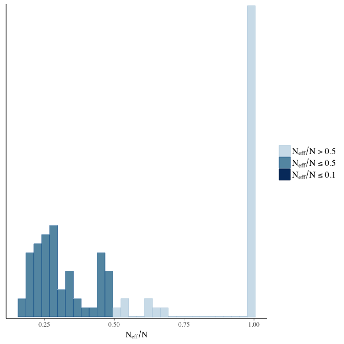
File name
coefs/krmh/r11_separate_random_effects_for_parents.rds
Cluster script
opts_chunk$set(echo = FALSE)
clusterscript = str_replace(basename(model_filename), "\\.rds",".html")
cat("[Cluster script](" , clusterscript, ")", sep = "")r12: Sex moderation
It need not be the case that paternal age has the same effect on male and female children. For example, male children inherit only the small Y chromosome from the father, but female children inherit the larger X chromosome, so that paternal age predicts X-chromosomal de novo mutations in females but not in males (Francioli et al., 2016). At the same time, the autism literature suggests that males are less robust to heritable and de novo autism risk variants and that these effects are not simply due to having only one X chromosome (Werling & Geschwind, 2015). Here we let a dummy variable for being male moderate the paternal age effect.
Model summary
Full summary
model_summary = summary(model, use_cache = FALSE, priors = TRUE)
print(model_summary)## Family: hurdle_poisson (log)
## Formula: children ~ paternalage * male + birth_cohort + maternalage.factor + paternalage.mean + paternal_loss + maternal_loss + older_siblings + nr.siblings + last_born + (1 | idParents)
## hu ~ paternalage + male + birth_cohort + maternalage.factor + paternalage.mean + paternal_loss + maternal_loss + older_siblings + nr.siblings + last_born + (1 | idParents) + paternalage:male
## Data: model_data (Number of observations: 9447)
## Samples: 6 chains, each with iter = 800; warmup = 300; thin = 1;
## total post-warmup samples = 3000
## WAIC: Not computed
##
## Priors:
## b ~ normal(0,5)
## sd ~ student_t(3, 0, 5)
## b_hu ~ normal(0,5)
## sd_hu ~ student_t(3, 0, 10)
##
## Group-Level Effects:
## ~idParents (Number of levels: 2186)
## Estimate Est.Error l-95% CI u-95% CI Eff.Sample Rhat
## sd(Intercept) 0.23 0.01 0.20 0.25 1029 1.00
## sd(hu_Intercept) 0.48 0.05 0.38 0.57 728 1.01
##
## Population-Level Effects:
## Estimate Est.Error l-95% CI u-95% CI Eff.Sample
## Intercept 1.66 0.09 1.49 1.83 1372
## paternalage 0.07 0.06 -0.04 0.18 690
## male1 0.07 0.08 -0.09 0.22 2537
## birth_cohort1760M1765 0.00 0.06 -0.12 0.12 1423
## birth_cohort1765M1770 -0.12 0.06 -0.23 0.00 983
## birth_cohort1770M1775 -0.11 0.06 -0.23 0.00 916
## birth_cohort1775M1780 -0.03 0.06 -0.13 0.09 936
## birth_cohort1780M1785 -0.11 0.06 -0.23 0.00 933
## birth_cohort1785M1790 -0.10 0.05 -0.20 0.01 856
## birth_cohort1790M1795 -0.08 0.05 -0.18 0.03 778
## birth_cohort1795M1800 -0.11 0.05 -0.20 -0.01 761
## birth_cohort1800M1805 -0.11 0.05 -0.21 -0.02 708
## birth_cohort1805M1810 -0.14 0.05 -0.23 -0.04 786
## birth_cohort1810M1815 -0.10 0.05 -0.19 0.00 675
## birth_cohort1815M1820 -0.14 0.05 -0.23 -0.05 697
## birth_cohort1820M1825 -0.19 0.05 -0.28 -0.10 674
## birth_cohort1825M1830 -0.21 0.05 -0.30 -0.12 678
## birth_cohort1830M1835 -0.18 0.05 -0.28 -0.09 720
## maternalage.factor1420 -0.05 0.09 -0.23 0.13 3000
## maternalage.factor3550 0.00 0.03 -0.06 0.05 3000
## paternalage.mean -0.07 0.06 -0.18 0.04 735
## paternal_loss01 -0.15 0.08 -0.30 0.00 3000
## paternal_loss15 -0.04 0.05 -0.14 0.06 2087
## paternal_loss510 -0.07 0.04 -0.15 0.02 1729
## paternal_loss1015 0.01 0.04 -0.07 0.09 1755
## paternal_loss1520 -0.09 0.04 -0.17 -0.02 1714
## paternal_loss2025 -0.12 0.04 -0.19 -0.05 1697
## paternal_loss2530 -0.01 0.03 -0.08 0.05 1607
## paternal_loss3035 -0.03 0.03 -0.09 0.03 1484
## paternal_loss3540 -0.01 0.03 -0.07 0.06 1899
## paternal_loss4045 -0.01 0.04 -0.08 0.06 3000
## maternal_loss01 0.10 0.08 -0.06 0.25 3000
## maternal_loss15 -0.02 0.05 -0.11 0.07 3000
## maternal_loss510 0.07 0.04 -0.01 0.15 3000
## maternal_loss1015 0.03 0.04 -0.05 0.11 3000
## maternal_loss1520 0.00 0.04 -0.08 0.09 3000
## maternal_loss2025 0.00 0.04 -0.07 0.08 3000
## maternal_loss2530 -0.02 0.04 -0.09 0.04 3000
## maternal_loss3035 -0.05 0.03 -0.12 0.01 3000
## maternal_loss3540 -0.03 0.03 -0.09 0.02 3000
## maternal_loss4045 -0.03 0.03 -0.09 0.03 3000
## older_siblings1 0.03 0.03 -0.03 0.08 1749
## older_siblings2 -0.05 0.04 -0.12 0.02 971
## older_siblings3 -0.07 0.05 -0.17 0.02 761
## older_siblings4 -0.09 0.06 -0.21 0.03 698
## older_siblings5P -0.10 0.08 -0.26 0.06 663
## nr.siblings 0.01 0.01 0.00 0.02 764
## last_born1 -0.04 0.02 -0.09 0.00 3000
## paternalage:male1 0.00 0.02 -0.04 0.05 2481
## hu_Intercept -0.35 0.22 -0.78 0.10 1351
## hu_paternalage 0.27 0.14 -0.01 0.55 783
## hu_male1 0.30 0.21 -0.10 0.73 2166
## hu_birth_cohort1760M1765 -0.05 0.17 -0.37 0.28 3000
## hu_birth_cohort1765M1770 -0.31 0.14 -0.58 -0.03 3000
## hu_birth_cohort1770M1775 -0.07 0.14 -0.35 0.21 1453
## hu_birth_cohort1775M1780 -0.20 0.14 -0.47 0.07 1401
## hu_birth_cohort1780M1785 -0.28 0.14 -0.56 0.01 3000
## hu_birth_cohort1785M1790 -0.42 0.14 -0.70 -0.14 1593
## hu_birth_cohort1790M1795 -0.31 0.13 -0.58 -0.06 1100
## hu_birth_cohort1795M1800 -0.46 0.12 -0.69 -0.22 1006
## hu_birth_cohort1800M1805 -0.53 0.12 -0.78 -0.30 594
## hu_birth_cohort1805M1810 -0.27 0.12 -0.51 -0.03 767
## hu_birth_cohort1810M1815 -0.44 0.12 -0.67 -0.20 1083
## hu_birth_cohort1815M1820 -0.70 0.11 -0.93 -0.47 886
## hu_birth_cohort1820M1825 -0.52 0.11 -0.75 -0.30 878
## hu_birth_cohort1825M1830 -0.54 0.11 -0.77 -0.32 849
## hu_birth_cohort1830M1835 -0.55 0.12 -0.78 -0.32 580
## hu_maternalage.factor1420 0.24 0.23 -0.21 0.70 3000
## hu_maternalage.factor3550 0.13 0.07 -0.01 0.27 3000
## hu_paternalage.mean -0.18 0.14 -0.46 0.10 854
## hu_paternal_loss01 0.58 0.19 0.22 0.94 3000
## hu_paternal_loss15 0.53 0.13 0.28 0.80 3000
## hu_paternal_loss510 0.20 0.11 -0.03 0.42 1793
## hu_paternal_loss1015 0.16 0.11 -0.05 0.36 1579
## hu_paternal_loss1520 0.10 0.10 -0.10 0.30 1473
## hu_paternal_loss2025 0.15 0.10 -0.03 0.34 1411
## hu_paternal_loss2530 0.06 0.09 -0.12 0.24 1425
## hu_paternal_loss3035 -0.02 0.09 -0.20 0.15 1352
## hu_paternal_loss3540 -0.01 0.09 -0.19 0.16 1563
## hu_paternal_loss4045 0.14 0.10 -0.07 0.34 3000
## hu_maternal_loss01 1.58 0.18 1.23 1.94 3000
## hu_maternal_loss15 0.59 0.12 0.36 0.82 3000
## hu_maternal_loss510 0.48 0.11 0.28 0.69 3000
## hu_maternal_loss1015 0.47 0.10 0.27 0.68 3000
## hu_maternal_loss1520 0.31 0.10 0.11 0.52 3000
## hu_maternal_loss2025 0.26 0.10 0.07 0.46 3000
## hu_maternal_loss2530 0.19 0.09 0.00 0.37 3000
## hu_maternal_loss3035 0.21 0.09 0.04 0.38 3000
## hu_maternal_loss3540 0.07 0.08 -0.09 0.22 3000
## hu_maternal_loss4045 0.28 0.08 0.11 0.45 3000
## hu_older_siblings1 -0.01 0.07 -0.16 0.13 1597
## hu_older_siblings2 -0.16 0.10 -0.35 0.02 955
## hu_older_siblings3 -0.20 0.13 -0.43 0.05 817
## hu_older_siblings4 -0.23 0.15 -0.53 0.06 775
## hu_older_siblings5P -0.58 0.20 -0.98 -0.19 755
## hu_nr.siblings 0.10 0.02 0.07 0.14 1054
## hu_last_born1 0.08 0.06 -0.04 0.20 3000
## hu_paternalage:male1 -0.01 0.06 -0.13 0.11 2259
## Rhat
## Intercept 1.00
## paternalage 1.01
## male1 1.00
## birth_cohort1760M1765 1.00
## birth_cohort1765M1770 1.00
## birth_cohort1770M1775 1.01
## birth_cohort1775M1780 1.00
## birth_cohort1780M1785 1.00
## birth_cohort1785M1790 1.01
## birth_cohort1790M1795 1.01
## birth_cohort1795M1800 1.01
## birth_cohort1800M1805 1.01
## birth_cohort1805M1810 1.00
## birth_cohort1810M1815 1.00
## birth_cohort1815M1820 1.00
## birth_cohort1820M1825 1.01
## birth_cohort1825M1830 1.01
## birth_cohort1830M1835 1.00
## maternalage.factor1420 1.00
## maternalage.factor3550 1.00
## paternalage.mean 1.00
## paternal_loss01 1.00
## paternal_loss15 1.00
## paternal_loss510 1.00
## paternal_loss1015 1.00
## paternal_loss1520 1.00
## paternal_loss2025 1.00
## paternal_loss2530 1.00
## paternal_loss3035 1.00
## paternal_loss3540 1.00
## paternal_loss4045 1.00
## maternal_loss01 1.00
## maternal_loss15 1.00
## maternal_loss510 1.00
## maternal_loss1015 1.00
## maternal_loss1520 1.00
## maternal_loss2025 1.00
## maternal_loss2530 1.00
## maternal_loss3035 1.00
## maternal_loss3540 1.00
## maternal_loss4045 1.00
## older_siblings1 1.00
## older_siblings2 1.00
## older_siblings3 1.00
## older_siblings4 1.01
## older_siblings5P 1.01
## nr.siblings 1.01
## last_born1 1.00
## paternalage:male1 1.00
## hu_Intercept 1.00
## hu_paternalage 1.01
## hu_male1 1.00
## hu_birth_cohort1760M1765 1.00
## hu_birth_cohort1765M1770 1.00
## hu_birth_cohort1770M1775 1.00
## hu_birth_cohort1775M1780 1.00
## hu_birth_cohort1780M1785 1.00
## hu_birth_cohort1785M1790 1.00
## hu_birth_cohort1790M1795 1.00
## hu_birth_cohort1795M1800 1.00
## hu_birth_cohort1800M1805 1.00
## hu_birth_cohort1805M1810 1.00
## hu_birth_cohort1810M1815 1.00
## hu_birth_cohort1815M1820 1.00
## hu_birth_cohort1820M1825 1.00
## hu_birth_cohort1825M1830 1.00
## hu_birth_cohort1830M1835 1.00
## hu_maternalage.factor1420 1.00
## hu_maternalage.factor3550 1.00
## hu_paternalage.mean 1.01
## hu_paternal_loss01 1.00
## hu_paternal_loss15 1.00
## hu_paternal_loss510 1.00
## hu_paternal_loss1015 1.00
## hu_paternal_loss1520 1.00
## hu_paternal_loss2025 1.00
## hu_paternal_loss2530 1.00
## hu_paternal_loss3035 1.00
## hu_paternal_loss3540 1.00
## hu_paternal_loss4045 1.00
## hu_maternal_loss01 1.00
## hu_maternal_loss15 1.00
## hu_maternal_loss510 1.00
## hu_maternal_loss1015 1.00
## hu_maternal_loss1520 1.00
## hu_maternal_loss2025 1.00
## hu_maternal_loss2530 1.00
## hu_maternal_loss3035 1.00
## hu_maternal_loss3540 1.00
## hu_maternal_loss4045 1.00
## hu_older_siblings1 1.00
## hu_older_siblings2 1.01
## hu_older_siblings3 1.02
## hu_older_siblings4 1.01
## hu_older_siblings5P 1.02
## hu_nr.siblings 1.01
## hu_last_born1 1.00
## hu_paternalage:male1 1.00
##
## Samples were drawn using sampling(NUTS). For each parameter, Eff.Sample
## is a crude measure of effective sample size, and Rhat is the potential
## scale reduction factor on split chains (at convergence, Rhat = 1).Table of fixed effects
fixed_eff = data.frame(model_summary$fixed, check.names = F)
fixed_eff$Est.Error = fixed_eff$Eff.Sample = fixed_eff$Rhat = NULL
fixed_eff$OR = exp(fixed_eff$Estimate)
fixed_eff$OR_low = exp(fixed_eff$`l-95% CI`)
fixed_eff$OR_high = exp(fixed_eff$`u-95% CI`)
pander::pander(fixed_eff)| Estimate | l-95% CI | u-95% CI | OR | OR_low | OR_high | |
|---|---|---|---|---|---|---|
| Intercept | 1.655 | 1.489 | 1.828 | 5.234 | 4.431 | 6.222 |
| paternalage | 0.06682 | -0.04185 | 0.1815 | 1.069 | 0.959 | 1.199 |
| male1 | 0.07236 | -0.08616 | 0.2249 | 1.075 | 0.9174 | 1.252 |
| birth_cohort1760M1765 | -0.003161 | -0.1231 | 0.1173 | 0.9968 | 0.8842 | 1.124 |
| birth_cohort1765M1770 | -0.1195 | -0.2325 | -0.004055 | 0.8874 | 0.7925 | 0.996 |
| birth_cohort1770M1775 | -0.1148 | -0.2273 | -0.003847 | 0.8916 | 0.7966 | 0.9962 |
| birth_cohort1775M1780 | -0.0261 | -0.1324 | 0.08664 | 0.9742 | 0.876 | 1.091 |
| birth_cohort1780M1785 | -0.1096 | -0.2275 | 0.001934 | 0.8962 | 0.7965 | 1.002 |
| birth_cohort1785M1790 | -0.09678 | -0.2018 | 0.009384 | 0.9078 | 0.8172 | 1.009 |
| birth_cohort1790M1795 | -0.0767 | -0.1817 | 0.02799 | 0.9262 | 0.8339 | 1.028 |
| birth_cohort1795M1800 | -0.1055 | -0.2019 | -0.01076 | 0.8999 | 0.8172 | 0.9893 |
| birth_cohort1800M1805 | -0.1144 | -0.2093 | -0.02213 | 0.8919 | 0.8112 | 0.9781 |
| birth_cohort1805M1810 | -0.1358 | -0.2329 | -0.03918 | 0.873 | 0.7922 | 0.9616 |
| birth_cohort1810M1815 | -0.09736 | -0.1904 | -0.003338 | 0.9072 | 0.8266 | 0.9967 |
| birth_cohort1815M1820 | -0.1416 | -0.2321 | -0.0513 | 0.8679 | 0.7929 | 0.95 |
| birth_cohort1820M1825 | -0.1857 | -0.2777 | -0.09564 | 0.8305 | 0.7575 | 0.9088 |
| birth_cohort1825M1830 | -0.2105 | -0.3041 | -0.1211 | 0.8102 | 0.7378 | 0.8859 |
| birth_cohort1830M1835 | -0.1824 | -0.2765 | -0.09109 | 0.8332 | 0.7584 | 0.9129 |
| maternalage.factor1420 | -0.05386 | -0.2294 | 0.1253 | 0.9476 | 0.795 | 1.134 |
| maternalage.factor3550 | -0.002857 | -0.05701 | 0.05277 | 0.9971 | 0.9446 | 1.054 |
| paternalage.mean | -0.06967 | -0.1844 | 0.0387 | 0.9327 | 0.8316 | 1.039 |
| paternal_loss01 | -0.1536 | -0.3001 | 0.0009539 | 0.8576 | 0.7407 | 1.001 |
| paternal_loss15 | -0.03691 | -0.1391 | 0.06077 | 0.9638 | 0.8701 | 1.063 |
| paternal_loss510 | -0.06707 | -0.1498 | 0.01713 | 0.9351 | 0.8609 | 1.017 |
| paternal_loss1015 | 0.007187 | -0.07301 | 0.08553 | 1.007 | 0.9296 | 1.089 |
| paternal_loss1520 | -0.09256 | -0.1698 | -0.01982 | 0.9116 | 0.8438 | 0.9804 |
| paternal_loss2025 | -0.119 | -0.1915 | -0.0481 | 0.8878 | 0.8257 | 0.953 |
| paternal_loss2530 | -0.008997 | -0.07571 | 0.05489 | 0.991 | 0.9271 | 1.056 |
| paternal_loss3035 | -0.02808 | -0.09114 | 0.03418 | 0.9723 | 0.9129 | 1.035 |
| paternal_loss3540 | -0.008779 | -0.06975 | 0.05624 | 0.9913 | 0.9326 | 1.058 |
| paternal_loss4045 | -0.009337 | -0.08234 | 0.06095 | 0.9907 | 0.921 | 1.063 |
| maternal_loss01 | 0.09972 | -0.06218 | 0.2525 | 1.105 | 0.9397 | 1.287 |
| maternal_loss15 | -0.01979 | -0.1115 | 0.06972 | 0.9804 | 0.8945 | 1.072 |
| maternal_loss510 | 0.07022 | -0.007705 | 0.1476 | 1.073 | 0.9923 | 1.159 |
| maternal_loss1015 | 0.0264 | -0.05279 | 0.1057 | 1.027 | 0.9486 | 1.111 |
| maternal_loss1520 | 0.002597 | -0.07742 | 0.08559 | 1.003 | 0.9255 | 1.089 |
| maternal_loss2025 | 0.004818 | -0.06943 | 0.07749 | 1.005 | 0.9329 | 1.081 |
| maternal_loss2530 | -0.02172 | -0.09234 | 0.04487 | 0.9785 | 0.9118 | 1.046 |
| maternal_loss3035 | -0.051 | -0.1166 | 0.009761 | 0.9503 | 0.89 | 1.01 |
| maternal_loss3540 | -0.03276 | -0.09141 | 0.02032 | 0.9678 | 0.9126 | 1.021 |
| maternal_loss4045 | -0.02836 | -0.08858 | 0.03336 | 0.972 | 0.9152 | 1.034 |
| older_siblings1 | 0.02562 | -0.02718 | 0.08071 | 1.026 | 0.9732 | 1.084 |
| older_siblings2 | -0.0481 | -0.1216 | 0.02398 | 0.953 | 0.8855 | 1.024 |
| older_siblings3 | -0.07348 | -0.1678 | 0.01992 | 0.9292 | 0.8455 | 1.02 |
| older_siblings4 | -0.09291 | -0.2141 | 0.02607 | 0.9113 | 0.8073 | 1.026 |
| older_siblings5P | -0.09675 | -0.2558 | 0.06153 | 0.9078 | 0.7743 | 1.063 |
| nr.siblings | 0.009729 | -0.004732 | 0.02393 | 1.01 | 0.9953 | 1.024 |
| last_born1 | -0.04375 | -0.08931 | 0.002243 | 0.9572 | 0.9146 | 1.002 |
| paternalage:male1 | 0.001615 | -0.04159 | 0.04719 | 1.002 | 0.9593 | 1.048 |
| hu_Intercept | -0.3465 | -0.7755 | 0.09818 | 0.7072 | 0.4605 | 1.103 |
| hu_paternalage | 0.2676 | -0.01093 | 0.5489 | 1.307 | 0.9891 | 1.731 |
| hu_male1 | 0.3033 | -0.09546 | 0.7269 | 1.354 | 0.909 | 2.069 |
| hu_birth_cohort1760M1765 | -0.04938 | -0.3685 | 0.2773 | 0.9518 | 0.6918 | 1.32 |
| hu_birth_cohort1765M1770 | -0.3056 | -0.583 | -0.03148 | 0.7366 | 0.5582 | 0.969 |
| hu_birth_cohort1770M1775 | -0.06635 | -0.3452 | 0.2114 | 0.9358 | 0.7081 | 1.235 |
| hu_birth_cohort1775M1780 | -0.1961 | -0.466 | 0.06889 | 0.8219 | 0.6275 | 1.071 |
| hu_birth_cohort1780M1785 | -0.277 | -0.5614 | 0.00527 | 0.758 | 0.5704 | 1.005 |
| hu_birth_cohort1785M1790 | -0.4172 | -0.7007 | -0.143 | 0.6589 | 0.4962 | 0.8668 |
| hu_birth_cohort1790M1795 | -0.3107 | -0.5778 | -0.05828 | 0.7329 | 0.5612 | 0.9434 |
| hu_birth_cohort1795M1800 | -0.4557 | -0.6929 | -0.2168 | 0.634 | 0.5001 | 0.8051 |
| hu_birth_cohort1800M1805 | -0.5347 | -0.7795 | -0.3039 | 0.5858 | 0.4586 | 0.7379 |
| hu_birth_cohort1805M1810 | -0.267 | -0.5082 | -0.0271 | 0.7657 | 0.6016 | 0.9733 |
| hu_birth_cohort1810M1815 | -0.4381 | -0.6732 | -0.2045 | 0.6452 | 0.5101 | 0.8151 |
| hu_birth_cohort1815M1820 | -0.7015 | -0.9336 | -0.4694 | 0.4959 | 0.3931 | 0.6254 |
| hu_birth_cohort1820M1825 | -0.5217 | -0.7476 | -0.3 | 0.5935 | 0.4735 | 0.7408 |
| hu_birth_cohort1825M1830 | -0.5427 | -0.7708 | -0.3157 | 0.5812 | 0.4626 | 0.7292 |
| hu_birth_cohort1830M1835 | -0.5513 | -0.7845 | -0.3226 | 0.5762 | 0.4563 | 0.7243 |
| hu_maternalage.factor1420 | 0.2384 | -0.2135 | 0.6951 | 1.269 | 0.8077 | 2.004 |
| hu_maternalage.factor3550 | 0.1326 | -0.01116 | 0.2716 | 1.142 | 0.9889 | 1.312 |
| hu_paternalage.mean | -0.1813 | -0.4607 | 0.09626 | 0.8342 | 0.6308 | 1.101 |
| hu_paternal_loss01 | 0.5793 | 0.2159 | 0.9389 | 1.785 | 1.241 | 2.557 |
| hu_paternal_loss15 | 0.5289 | 0.2795 | 0.7979 | 1.697 | 1.323 | 2.221 |
| hu_paternal_loss510 | 0.1963 | -0.02641 | 0.418 | 1.217 | 0.9739 | 1.519 |
| hu_paternal_loss1015 | 0.1605 | -0.04504 | 0.3641 | 1.174 | 0.956 | 1.439 |
| hu_paternal_loss1520 | 0.1023 | -0.09754 | 0.2975 | 1.108 | 0.9071 | 1.347 |
| hu_paternal_loss2025 | 0.1538 | -0.03358 | 0.3428 | 1.166 | 0.967 | 1.409 |
| hu_paternal_loss2530 | 0.05912 | -0.1179 | 0.2421 | 1.061 | 0.8888 | 1.274 |
| hu_paternal_loss3035 | -0.0226 | -0.2021 | 0.1523 | 0.9777 | 0.817 | 1.164 |
| hu_paternal_loss3540 | -0.0136 | -0.1916 | 0.1619 | 0.9865 | 0.8257 | 1.176 |
| hu_paternal_loss4045 | 0.142 | -0.0671 | 0.3413 | 1.153 | 0.9351 | 1.407 |
| hu_maternal_loss01 | 1.582 | 1.231 | 1.939 | 4.863 | 3.423 | 6.949 |
| hu_maternal_loss15 | 0.5876 | 0.3596 | 0.8229 | 1.8 | 1.433 | 2.277 |
| hu_maternal_loss510 | 0.4846 | 0.2777 | 0.6884 | 1.624 | 1.32 | 1.991 |
| hu_maternal_loss1015 | 0.4738 | 0.2718 | 0.6771 | 1.606 | 1.312 | 1.968 |
| hu_maternal_loss1520 | 0.3141 | 0.111 | 0.5159 | 1.369 | 1.117 | 1.675 |
| hu_maternal_loss2025 | 0.2614 | 0.07065 | 0.4594 | 1.299 | 1.073 | 1.583 |
| hu_maternal_loss2530 | 0.1907 | 0.004413 | 0.3736 | 1.21 | 1.004 | 1.453 |
| hu_maternal_loss3035 | 0.2146 | 0.04336 | 0.3849 | 1.239 | 1.044 | 1.469 |
| hu_maternal_loss3540 | 0.06754 | -0.09167 | 0.2236 | 1.07 | 0.9124 | 1.251 |
| hu_maternal_loss4045 | 0.2772 | 0.114 | 0.4475 | 1.319 | 1.121 | 1.564 |
| hu_older_siblings1 | -0.01428 | -0.1648 | 0.1287 | 0.9858 | 0.848 | 1.137 |
| hu_older_siblings2 | -0.1581 | -0.3488 | 0.02397 | 0.8538 | 0.7055 | 1.024 |
| hu_older_siblings3 | -0.1966 | -0.434 | 0.05193 | 0.8215 | 0.6479 | 1.053 |
| hu_older_siblings4 | -0.2344 | -0.5289 | 0.06429 | 0.7911 | 0.5892 | 1.066 |
| hu_older_siblings5P | -0.5779 | -0.9764 | -0.186 | 0.5611 | 0.3767 | 0.8303 |
| hu_nr.siblings | 0.1044 | 0.06866 | 0.1399 | 1.11 | 1.071 | 1.15 |
| hu_last_born1 | 0.08031 | -0.03958 | 0.2041 | 1.084 | 0.9612 | 1.226 |
| hu_paternalage:male1 | -0.008321 | -0.1265 | 0.1062 | 0.9917 | 0.8812 | 1.112 |
Paternal age effect
pander::pander(paternal_age_10y_effect(model))| effect | median_estimate | ci_95 | ci_80 |
|---|---|---|---|
| estimate father 25y | 2.29 | [1.94;2.7] | [2.05;2.54] |
| estimate father 35y | 2.09 | [1.65;2.59] | [1.8;2.41] |
| percentage change | -9.05 | [-25.49;11.82] | [-20.29;4.37] |
| OR/IRR | 1.07 | [0.96;1.2] | [0.99;1.15] |
| OR hurdle | 1.3 | [0.99;1.73] | [1.09;1.57] |
Marginal effect plots
plot.brmsMarginalEffects_shades(
x = marginal_effects(model, re_formula = NA, probs = c(0.025,0.975)),
y = marginal_effects(model, re_formula = NA, probs = c(0.1,0.9)),
ask = FALSE)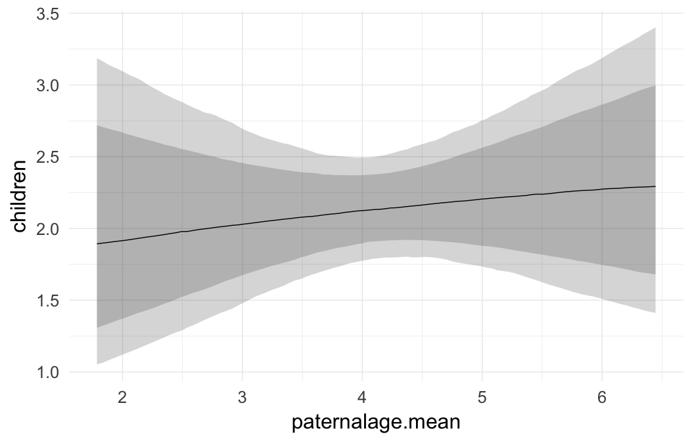
Coefficient plot
Coefficient estimates (95% and 80% credibility).
mcmc_intervals(as.matrix(model$fit), regex_pars = "b_[^I]")mcmc_areas(as.matrix(model$fit), regex_pars = "b")Diagnostics
These plots were made to diagnose misfit and nonconvergence.
Posterior predictive checks
brms::pp_check(model, re_formula = NA, type = "dens_overlay")brms::pp_check(model, re_formula = NA, type = "hist")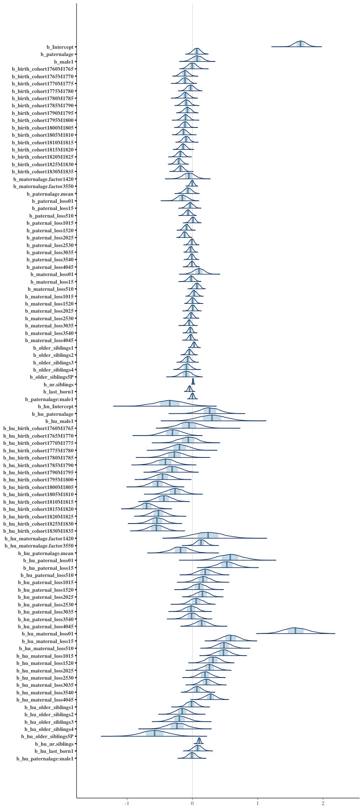
Rhat
Did the 6 chains converge?
stanplot(model, pars = "^b_[^I]", type = 'rhat')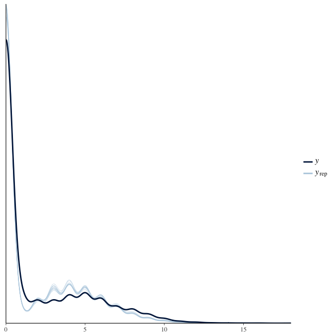
Effective sample size by average sample size
stanplot(model, pars = "^b", type = 'ess')
Monte Carlo SE
stanplot(model, pars = "^b", type = 'mcse')Trace plots
if(any( summary(model)$fixed[,"Rhat"] > 1.1)) { # only do traceplots if not converged
plot(model, N = 3, ask = FALSE)
}Further plots
stanplot(model, pars = "^b", type = 'diag')File name
coefs/krmh/r12_sex_moderation.rds
Cluster script
opts_chunk$set(echo = FALSE)
clusterscript = str_replace(basename(model_filename), "\\.rds",".html")
cat("[Cluster script](" , clusterscript, ")", sep = "")r13: Control paternal age at first birth
We already control for the average paternal age at which the children in a family were born. The mean is a more complete summary of the reproductive timing of the father than the age at first birth. However, far more literature has examined age at first birth and it has the advantage of never being censored (although we of course try to rule out censoring by choosing appropriate subsets). Therefore, we added age at first birth as a covariate in this model.
Model summary
Full summary
model_summary = summary(model, use_cache = FALSE, priors = TRUE)
print(model_summary)## Family: hurdle_poisson (log)
## Formula: children ~ paternalage + birth_cohort + male + maternalage.factor + paternalage_at_1st_sib + paternalage.mean + paternal_loss + maternal_loss + older_siblings + nr.siblings + last_born + (1 | idParents)
## hu ~ paternalage + birth_cohort + male + maternalage.factor + paternalage_at_1st_sib + paternalage.mean + paternal_loss + maternal_loss + older_siblings + nr.siblings + last_born + (1 | idParents)
## Data: model_data (Number of observations: 9447)
## Samples: 6 chains, each with iter = 1500; warmup = 1000; thin = 1;
## total post-warmup samples = 3000
## WAIC: Not computed
##
## Priors:
## b ~ normal(0,5)
## sd ~ student_t(3, 0, 5)
## b_hu ~ normal(0,5)
## sd_hu ~ student_t(3, 0, 10)
##
## Group-Level Effects:
## ~idParents (Number of levels: 2186)
## Estimate Est.Error l-95% CI u-95% CI Eff.Sample Rhat
## sd(Intercept) 0.22 0.01 0.20 0.25 860 1
## sd(hu_Intercept) 0.47 0.04 0.39 0.56 818 1
##
## Population-Level Effects:
## Estimate Est.Error l-95% CI u-95% CI Eff.Sample
## Intercept 1.66 0.08 1.50 1.82 1348
## paternalage 0.07 0.06 -0.04 0.18 708
## birth_cohort1760M1765 0.00 0.06 -0.12 0.12 1182
## birth_cohort1765M1770 -0.12 0.06 -0.23 0.00 1007
## birth_cohort1770M1775 -0.11 0.06 -0.23 0.00 869
## birth_cohort1775M1780 -0.02 0.06 -0.14 0.09 786
## birth_cohort1780M1785 -0.11 0.06 -0.23 0.01 881
## birth_cohort1785M1790 -0.09 0.06 -0.21 0.01 739
## birth_cohort1790M1795 -0.07 0.05 -0.18 0.03 680
## birth_cohort1795M1800 -0.10 0.05 -0.20 0.00 674
## birth_cohort1800M1805 -0.11 0.05 -0.21 -0.01 613
## birth_cohort1805M1810 -0.13 0.05 -0.23 -0.04 636
## birth_cohort1810M1815 -0.10 0.05 -0.19 0.00 610
## birth_cohort1815M1820 -0.14 0.05 -0.23 -0.05 538
## birth_cohort1820M1825 -0.18 0.05 -0.27 -0.09 551
## birth_cohort1825M1830 -0.21 0.05 -0.30 -0.11 565
## birth_cohort1830M1835 -0.18 0.05 -0.28 -0.09 558
## male1 0.08 0.02 0.05 0.11 3000
## maternalage.factor1420 -0.05 0.09 -0.24 0.12 3000
## maternalage.factor3550 0.00 0.03 -0.06 0.05 3000
## paternalage_at_1st_sib -0.01 0.03 -0.08 0.05 3000
## paternalage.mean -0.06 0.06 -0.18 0.06 793
## paternal_loss01 -0.15 0.07 -0.30 -0.01 3000
## paternal_loss15 -0.04 0.05 -0.14 0.06 1831
## paternal_loss510 -0.07 0.04 -0.16 0.02 1573
## paternal_loss1015 0.01 0.04 -0.07 0.09 1428
## paternal_loss1520 -0.09 0.04 -0.17 -0.02 1574
## paternal_loss2025 -0.12 0.04 -0.19 -0.05 1466
## paternal_loss2530 -0.01 0.03 -0.08 0.06 1382
## paternal_loss3035 -0.03 0.03 -0.10 0.04 1417
## paternal_loss3540 -0.01 0.03 -0.07 0.05 1473
## paternal_loss4045 -0.01 0.04 -0.08 0.06 3000
## maternal_loss01 0.10 0.08 -0.06 0.26 3000
## maternal_loss15 -0.02 0.05 -0.11 0.08 3000
## maternal_loss510 0.07 0.04 -0.01 0.15 3000
## maternal_loss1015 0.03 0.04 -0.05 0.11 3000
## maternal_loss1520 0.00 0.04 -0.07 0.08 3000
## maternal_loss2025 0.00 0.04 -0.07 0.08 2007
## maternal_loss2530 -0.02 0.03 -0.09 0.05 1932
## maternal_loss3035 -0.05 0.03 -0.12 0.01 1904
## maternal_loss3540 -0.03 0.03 -0.09 0.03 3000
## maternal_loss4045 -0.03 0.03 -0.09 0.03 3000
## older_siblings1 0.03 0.03 -0.03 0.08 1335
## older_siblings2 -0.05 0.04 -0.12 0.02 820
## older_siblings3 -0.07 0.05 -0.17 0.02 689
## older_siblings4 -0.09 0.06 -0.22 0.02 739
## older_siblings5P -0.10 0.08 -0.26 0.06 648
## nr.siblings 0.01 0.01 -0.01 0.02 764
## last_born1 -0.04 0.02 -0.09 0.00 3000
## hu_Intercept -0.38 0.20 -0.78 0.01 1116
## hu_paternalage 0.26 0.15 -0.03 0.53 796
## hu_birth_cohort1760M1765 -0.05 0.17 -0.38 0.29 3000
## hu_birth_cohort1765M1770 -0.31 0.15 -0.60 -0.03 1122
## hu_birth_cohort1770M1775 -0.06 0.15 -0.36 0.22 1030
## hu_birth_cohort1775M1780 -0.20 0.14 -0.48 0.09 1005
## hu_birth_cohort1780M1785 -0.28 0.14 -0.56 0.00 1006
## hu_birth_cohort1785M1790 -0.42 0.14 -0.70 -0.14 961
## hu_birth_cohort1790M1795 -0.32 0.13 -0.58 -0.06 798
## hu_birth_cohort1795M1800 -0.47 0.13 -0.72 -0.21 755
## hu_birth_cohort1800M1805 -0.54 0.13 -0.80 -0.29 837
## hu_birth_cohort1805M1810 -0.27 0.13 -0.52 -0.02 813
## hu_birth_cohort1810M1815 -0.44 0.12 -0.67 -0.21 808
## hu_birth_cohort1815M1820 -0.71 0.12 -0.94 -0.48 654
## hu_birth_cohort1820M1825 -0.53 0.12 -0.76 -0.30 697
## hu_birth_cohort1825M1830 -0.55 0.12 -0.78 -0.32 634
## hu_birth_cohort1830M1835 -0.56 0.12 -0.79 -0.32 699
## hu_male1 0.28 0.05 0.18 0.36 3000
## hu_maternalage.factor1420 0.24 0.23 -0.21 0.69 3000
## hu_maternalage.factor3550 0.14 0.07 -0.01 0.28 3000
## hu_paternalage_at_1st_sib 0.08 0.08 -0.07 0.23 3000
## hu_paternalage.mean -0.23 0.15 -0.53 0.07 849
## hu_paternal_loss01 0.57 0.19 0.20 0.95 3000
## hu_paternal_loss15 0.53 0.13 0.27 0.79 3000
## hu_paternal_loss510 0.20 0.11 -0.02 0.42 1537
## hu_paternal_loss1015 0.16 0.11 -0.06 0.37 1377
## hu_paternal_loss1520 0.10 0.10 -0.10 0.29 1334
## hu_paternal_loss2025 0.15 0.10 -0.04 0.35 1349
## hu_paternal_loss2530 0.06 0.09 -0.12 0.24 1274
## hu_paternal_loss3035 -0.03 0.09 -0.21 0.15 1360
## hu_paternal_loss3540 -0.02 0.09 -0.20 0.16 1428
## hu_paternal_loss4045 0.14 0.10 -0.05 0.33 3000
## hu_maternal_loss01 1.57 0.19 1.22 1.94 3000
## hu_maternal_loss15 0.58 0.12 0.35 0.82 3000
## hu_maternal_loss510 0.48 0.11 0.27 0.69 3000
## hu_maternal_loss1015 0.47 0.11 0.24 0.68 3000
## hu_maternal_loss1520 0.31 0.11 0.10 0.52 3000
## hu_maternal_loss2025 0.26 0.10 0.06 0.46 3000
## hu_maternal_loss2530 0.19 0.09 0.00 0.37 3000
## hu_maternal_loss3035 0.22 0.09 0.05 0.39 3000
## hu_maternal_loss3540 0.07 0.08 -0.09 0.23 3000
## hu_maternal_loss4045 0.28 0.09 0.10 0.44 3000
## hu_older_siblings1 -0.01 0.08 -0.16 0.14 3000
## hu_older_siblings2 -0.15 0.10 -0.34 0.04 963
## hu_older_siblings3 -0.19 0.12 -0.43 0.05 904
## hu_older_siblings4 -0.23 0.16 -0.53 0.07 829
## hu_older_siblings5P -0.57 0.21 -0.96 -0.17 773
## hu_nr.siblings 0.11 0.02 0.07 0.15 1000
## hu_last_born1 0.08 0.06 -0.04 0.20 3000
## Rhat
## Intercept 1.00
## paternalage 1.01
## birth_cohort1760M1765 1.00
## birth_cohort1765M1770 1.00
## birth_cohort1770M1775 1.00
## birth_cohort1775M1780 1.01
## birth_cohort1780M1785 1.00
## birth_cohort1785M1790 1.00
## birth_cohort1790M1795 1.01
## birth_cohort1795M1800 1.01
## birth_cohort1800M1805 1.01
## birth_cohort1805M1810 1.00
## birth_cohort1810M1815 1.01
## birth_cohort1815M1820 1.01
## birth_cohort1820M1825 1.01
## birth_cohort1825M1830 1.01
## birth_cohort1830M1835 1.01
## male1 1.00
## maternalage.factor1420 1.00
## maternalage.factor3550 1.00
## paternalage_at_1st_sib 1.00
## paternalage.mean 1.00
## paternal_loss01 1.00
## paternal_loss15 1.00
## paternal_loss510 1.00
## paternal_loss1015 1.00
## paternal_loss1520 1.00
## paternal_loss2025 1.00
## paternal_loss2530 1.00
## paternal_loss3035 1.00
## paternal_loss3540 1.00
## paternal_loss4045 1.00
## maternal_loss01 1.00
## maternal_loss15 1.00
## maternal_loss510 1.00
## maternal_loss1015 1.00
## maternal_loss1520 1.00
## maternal_loss2025 1.00
## maternal_loss2530 1.00
## maternal_loss3035 1.00
## maternal_loss3540 1.00
## maternal_loss4045 1.00
## older_siblings1 1.00
## older_siblings2 1.00
## older_siblings3 1.01
## older_siblings4 1.00
## older_siblings5P 1.01
## nr.siblings 1.01
## last_born1 1.00
## hu_Intercept 1.00
## hu_paternalage 1.01
## hu_birth_cohort1760M1765 1.00
## hu_birth_cohort1765M1770 1.00
## hu_birth_cohort1770M1775 1.00
## hu_birth_cohort1775M1780 1.00
## hu_birth_cohort1780M1785 1.00
## hu_birth_cohort1785M1790 1.01
## hu_birth_cohort1790M1795 1.00
## hu_birth_cohort1795M1800 1.00
## hu_birth_cohort1800M1805 1.01
## hu_birth_cohort1805M1810 1.00
## hu_birth_cohort1810M1815 1.01
## hu_birth_cohort1815M1820 1.01
## hu_birth_cohort1820M1825 1.00
## hu_birth_cohort1825M1830 1.00
## hu_birth_cohort1830M1835 1.00
## hu_male1 1.00
## hu_maternalage.factor1420 1.00
## hu_maternalage.factor3550 1.00
## hu_paternalage_at_1st_sib 1.00
## hu_paternalage.mean 1.01
## hu_paternal_loss01 1.00
## hu_paternal_loss15 1.00
## hu_paternal_loss510 1.00
## hu_paternal_loss1015 1.00
## hu_paternal_loss1520 1.00
## hu_paternal_loss2025 1.00
## hu_paternal_loss2530 1.00
## hu_paternal_loss3035 1.00
## hu_paternal_loss3540 1.00
## hu_paternal_loss4045 1.00
## hu_maternal_loss01 1.00
## hu_maternal_loss15 1.00
## hu_maternal_loss510 1.00
## hu_maternal_loss1015 1.00
## hu_maternal_loss1520 1.00
## hu_maternal_loss2025 1.00
## hu_maternal_loss2530 1.00
## hu_maternal_loss3035 1.00
## hu_maternal_loss3540 1.00
## hu_maternal_loss4045 1.00
## hu_older_siblings1 1.00
## hu_older_siblings2 1.00
## hu_older_siblings3 1.01
## hu_older_siblings4 1.01
## hu_older_siblings5P 1.01
## hu_nr.siblings 1.01
## hu_last_born1 1.00
##
## Samples were drawn using sampling(NUTS). For each parameter, Eff.Sample
## is a crude measure of effective sample size, and Rhat is the potential
## scale reduction factor on split chains (at convergence, Rhat = 1).Table of fixed effects
fixed_eff = data.frame(model_summary$fixed, check.names = F)
fixed_eff$Est.Error = fixed_eff$Eff.Sample = fixed_eff$Rhat = NULL
fixed_eff$OR = exp(fixed_eff$Estimate)
fixed_eff$OR_low = exp(fixed_eff$`l-95% CI`)
fixed_eff$OR_high = exp(fixed_eff$`u-95% CI`)
pander::pander(fixed_eff)| Estimate | l-95% CI | u-95% CI | OR | OR_low | OR_high | |
|---|---|---|---|---|---|---|
| Intercept | 1.664 | 1.499 | 1.82 | 5.283 | 4.478 | 6.171 |
| paternalage | 0.06967 | -0.04273 | 0.1755 | 1.072 | 0.9582 | 1.192 |
| birth_cohort1760M1765 | -0.001985 | -0.1229 | 0.1209 | 0.998 | 0.8843 | 1.129 |
| birth_cohort1765M1770 | -0.1176 | -0.2295 | -0.003226 | 0.8891 | 0.795 | 0.9968 |
| birth_cohort1770M1775 | -0.1134 | -0.2279 | 0.004562 | 0.8928 | 0.7962 | 1.005 |
| birth_cohort1775M1780 | -0.02432 | -0.1389 | 0.08718 | 0.976 | 0.8703 | 1.091 |
| birth_cohort1780M1785 | -0.1081 | -0.2259 | 0.007229 | 0.8976 | 0.7978 | 1.007 |
| birth_cohort1785M1790 | -0.09379 | -0.2076 | 0.01404 | 0.9105 | 0.8125 | 1.014 |
| birth_cohort1790M1795 | -0.074 | -0.181 | 0.0287 | 0.9287 | 0.8344 | 1.029 |
| birth_cohort1795M1800 | -0.103 | -0.2036 | -0.004927 | 0.9021 | 0.8158 | 0.9951 |
| birth_cohort1800M1805 | -0.1114 | -0.2082 | -0.01439 | 0.8946 | 0.812 | 0.9857 |
| birth_cohort1805M1810 | -0.1347 | -0.2326 | -0.03769 | 0.874 | 0.7924 | 0.963 |
| birth_cohort1810M1815 | -0.096 | -0.187 | -0.001958 | 0.9085 | 0.8294 | 0.998 |
| birth_cohort1815M1820 | -0.1404 | -0.2304 | -0.04677 | 0.869 | 0.7942 | 0.9543 |
| birth_cohort1820M1825 | -0.1837 | -0.2743 | -0.09086 | 0.8322 | 0.7601 | 0.9131 |
| birth_cohort1825M1830 | -0.2081 | -0.2989 | -0.1113 | 0.8121 | 0.7416 | 0.8947 |
| birth_cohort1830M1835 | -0.181 | -0.2795 | -0.08845 | 0.8345 | 0.7562 | 0.9153 |
| male1 | 0.07755 | 0.0453 | 0.1098 | 1.081 | 1.046 | 1.116 |
| maternalage.factor1420 | -0.05164 | -0.2383 | 0.1236 | 0.9497 | 0.7879 | 1.132 |
| maternalage.factor3550 | -0.004309 | -0.05721 | 0.0494 | 0.9957 | 0.9444 | 1.051 |
| paternalage_at_1st_sib | -0.01351 | -0.07875 | 0.04792 | 0.9866 | 0.9243 | 1.049 |
| paternalage.mean | -0.06311 | -0.1785 | 0.06028 | 0.9388 | 0.8366 | 1.062 |
| paternal_loss01 | -0.1536 | -0.3039 | -0.01124 | 0.8576 | 0.7379 | 0.9888 |
| paternal_loss15 | -0.03788 | -0.1405 | 0.06086 | 0.9628 | 0.8689 | 1.063 |
| paternal_loss510 | -0.06993 | -0.1559 | 0.01653 | 0.9325 | 0.8557 | 1.017 |
| paternal_loss1015 | 0.006365 | -0.07233 | 0.08608 | 1.006 | 0.9302 | 1.09 |
| paternal_loss1520 | -0.09397 | -0.1713 | -0.02233 | 0.9103 | 0.8426 | 0.9779 |
| paternal_loss2025 | -0.1203 | -0.1924 | -0.04573 | 0.8867 | 0.825 | 0.9553 |
| paternal_loss2530 | -0.009583 | -0.07689 | 0.05789 | 0.9905 | 0.926 | 1.06 |
| paternal_loss3035 | -0.02808 | -0.09596 | 0.03768 | 0.9723 | 0.9085 | 1.038 |
| paternal_loss3540 | -0.009189 | -0.07125 | 0.05354 | 0.9909 | 0.9312 | 1.055 |
| paternal_loss4045 | -0.009953 | -0.08336 | 0.06189 | 0.9901 | 0.92 | 1.064 |
| maternal_loss01 | 0.103 | -0.06363 | 0.26 | 1.109 | 0.9384 | 1.297 |
| maternal_loss15 | -0.01838 | -0.1129 | 0.07556 | 0.9818 | 0.8933 | 1.078 |
| maternal_loss510 | 0.07104 | -0.005085 | 0.148 | 1.074 | 0.9949 | 1.16 |
| maternal_loss1015 | 0.02685 | -0.052 | 0.1061 | 1.027 | 0.9493 | 1.112 |
| maternal_loss1520 | 0.002515 | -0.07449 | 0.08052 | 1.003 | 0.9282 | 1.084 |
| maternal_loss2025 | 0.003162 | -0.06994 | 0.07816 | 1.003 | 0.9325 | 1.081 |
| maternal_loss2530 | -0.02212 | -0.08919 | 0.04505 | 0.9781 | 0.9147 | 1.046 |
| maternal_loss3035 | -0.05204 | -0.1171 | 0.01253 | 0.9493 | 0.8895 | 1.013 |
| maternal_loss3540 | -0.03409 | -0.09444 | 0.02803 | 0.9665 | 0.9099 | 1.028 |
| maternal_loss4045 | -0.02886 | -0.0902 | 0.0318 | 0.9716 | 0.9138 | 1.032 |
| older_siblings1 | 0.02541 | -0.02716 | 0.07818 | 1.026 | 0.9732 | 1.081 |
| older_siblings2 | -0.04862 | -0.1219 | 0.02473 | 0.9525 | 0.8853 | 1.025 |
| older_siblings3 | -0.07487 | -0.1697 | 0.02271 | 0.9279 | 0.8439 | 1.023 |
| older_siblings4 | -0.09476 | -0.2184 | 0.02286 | 0.9096 | 0.8038 | 1.023 |
| older_siblings5P | -0.09779 | -0.2579 | 0.06365 | 0.9068 | 0.7727 | 1.066 |
| nr.siblings | 0.009075 | -0.006021 | 0.02426 | 1.009 | 0.994 | 1.025 |
| last_born1 | -0.04351 | -0.08989 | 0.004772 | 0.9574 | 0.914 | 1.005 |
| hu_Intercept | -0.3819 | -0.7818 | 0.01329 | 0.6826 | 0.4576 | 1.013 |
| hu_paternalage | 0.2583 | -0.034 | 0.5301 | 1.295 | 0.9666 | 1.699 |
| hu_birth_cohort1760M1765 | -0.05037 | -0.3773 | 0.2883 | 0.9509 | 0.6857 | 1.334 |
| hu_birth_cohort1765M1770 | -0.3116 | -0.6043 | -0.02732 | 0.7322 | 0.5465 | 0.9731 |
| hu_birth_cohort1770M1775 | -0.06477 | -0.3557 | 0.2193 | 0.9373 | 0.7007 | 1.245 |
| hu_birth_cohort1775M1780 | -0.1969 | -0.4763 | 0.09082 | 0.8213 | 0.6211 | 1.095 |
| hu_birth_cohort1780M1785 | -0.2803 | -0.5592 | 0.0009507 | 0.7556 | 0.5717 | 1.001 |
| hu_birth_cohort1785M1790 | -0.4247 | -0.6969 | -0.1389 | 0.654 | 0.4982 | 0.8703 |
| hu_birth_cohort1790M1795 | -0.3184 | -0.577 | -0.0567 | 0.7273 | 0.5616 | 0.9449 |
| hu_birth_cohort1795M1800 | -0.4651 | -0.7195 | -0.2105 | 0.6281 | 0.487 | 0.8102 |
| hu_birth_cohort1800M1805 | -0.5424 | -0.8 | -0.2928 | 0.5814 | 0.4493 | 0.7461 |
| hu_birth_cohort1805M1810 | -0.273 | -0.5236 | -0.02306 | 0.7611 | 0.5924 | 0.9772 |
| hu_birth_cohort1810M1815 | -0.4403 | -0.6709 | -0.2073 | 0.6438 | 0.5113 | 0.8127 |
| hu_birth_cohort1815M1820 | -0.7058 | -0.9368 | -0.4828 | 0.4937 | 0.3919 | 0.6171 |
| hu_birth_cohort1820M1825 | -0.5263 | -0.7628 | -0.298 | 0.5908 | 0.4664 | 0.7423 |
| hu_birth_cohort1825M1830 | -0.5474 | -0.7782 | -0.3249 | 0.5785 | 0.4592 | 0.7226 |
| hu_birth_cohort1830M1835 | -0.557 | -0.7882 | -0.3205 | 0.5729 | 0.4547 | 0.7258 |
| hu_male1 | 0.2752 | 0.1849 | 0.3636 | 1.317 | 1.203 | 1.438 |
| hu_maternalage.factor1420 | 0.2448 | -0.2126 | 0.6906 | 1.277 | 0.8085 | 1.995 |
| hu_maternalage.factor3550 | 0.136 | -0.01108 | 0.2828 | 1.146 | 0.989 | 1.327 |
| hu_paternalage_at_1st_sib | 0.07531 | -0.07172 | 0.2272 | 1.078 | 0.9308 | 1.255 |
| hu_paternalage.mean | -0.2272 | -0.5255 | 0.07398 | 0.7968 | 0.5913 | 1.077 |
| hu_paternal_loss01 | 0.5718 | 0.2028 | 0.9462 | 1.771 | 1.225 | 2.576 |
| hu_paternal_loss15 | 0.5283 | 0.2745 | 0.7863 | 1.696 | 1.316 | 2.195 |
| hu_paternal_loss510 | 0.1958 | -0.02345 | 0.4179 | 1.216 | 0.9768 | 1.519 |
| hu_paternal_loss1015 | 0.1579 | -0.06119 | 0.3709 | 1.171 | 0.9406 | 1.449 |
| hu_paternal_loss1520 | 0.1014 | -0.1049 | 0.292 | 1.107 | 0.9004 | 1.339 |
| hu_paternal_loss2025 | 0.1516 | -0.04121 | 0.3481 | 1.164 | 0.9596 | 1.416 |
| hu_paternal_loss2530 | 0.05974 | -0.1208 | 0.2406 | 1.062 | 0.8863 | 1.272 |
| hu_paternal_loss3035 | -0.02512 | -0.2103 | 0.1539 | 0.9752 | 0.8103 | 1.166 |
| hu_paternal_loss3540 | -0.01609 | -0.1972 | 0.1612 | 0.984 | 0.821 | 1.175 |
| hu_paternal_loss4045 | 0.1417 | -0.05299 | 0.3265 | 1.152 | 0.9484 | 1.386 |
| hu_maternal_loss01 | 1.573 | 1.217 | 1.936 | 4.823 | 3.377 | 6.93 |
| hu_maternal_loss15 | 0.5822 | 0.3472 | 0.8151 | 1.79 | 1.415 | 2.26 |
| hu_maternal_loss510 | 0.4789 | 0.2692 | 0.6886 | 1.614 | 1.309 | 1.991 |
| hu_maternal_loss1015 | 0.4706 | 0.2441 | 0.683 | 1.601 | 1.276 | 1.98 |
| hu_maternal_loss1520 | 0.3128 | 0.1014 | 0.5198 | 1.367 | 1.107 | 1.682 |
| hu_maternal_loss2025 | 0.2617 | 0.05916 | 0.4576 | 1.299 | 1.061 | 1.58 |
| hu_maternal_loss2530 | 0.1896 | 0.002827 | 0.3669 | 1.209 | 1.003 | 1.443 |
| hu_maternal_loss3035 | 0.2177 | 0.04753 | 0.3893 | 1.243 | 1.049 | 1.476 |
| hu_maternal_loss3540 | 0.07045 | -0.08939 | 0.232 | 1.073 | 0.9145 | 1.261 |
| hu_maternal_loss4045 | 0.279 | 0.1031 | 0.4419 | 1.322 | 1.109 | 1.556 |
| hu_older_siblings1 | -0.01079 | -0.1579 | 0.1409 | 0.9893 | 0.854 | 1.151 |
| hu_older_siblings2 | -0.1542 | -0.3429 | 0.0391 | 0.8571 | 0.7097 | 1.04 |
| hu_older_siblings3 | -0.1936 | -0.4279 | 0.04906 | 0.824 | 0.6519 | 1.05 |
| hu_older_siblings4 | -0.2291 | -0.5266 | 0.07317 | 0.7953 | 0.5906 | 1.076 |
| hu_older_siblings5P | -0.5714 | -0.9603 | -0.1678 | 0.5647 | 0.3828 | 0.8455 |
| hu_nr.siblings | 0.1077 | 0.07142 | 0.1452 | 1.114 | 1.074 | 1.156 |
| hu_last_born1 | 0.08076 | -0.04284 | 0.2034 | 1.084 | 0.9581 | 1.226 |
Paternal age effect
pander::pander(paternal_age_10y_effect(model))| effect | median_estimate | ci_95 | ci_80 |
|---|---|---|---|
| estimate father 25y | 2.28 | [1.92;2.66] | [2.05;2.52] |
| estimate father 35y | 2.09 | [1.67;2.62] | [1.81;2.41] |
| percentage change | -8.15 | [-24.89;12.04] | [-19.48;4.45] |
| OR/IRR | 1.07 | [0.96;1.19] | [1;1.15] |
| OR hurdle | 1.3 | [0.97;1.7] | [1.07;1.56] |
Marginal effect plots
plot.brmsMarginalEffects_shades(
x = marginal_effects(model, re_formula = NA, probs = c(0.025,0.975)),
y = marginal_effects(model, re_formula = NA, probs = c(0.1,0.9)),
ask = FALSE)
Coefficient plot
Coefficient estimates (95% and 80% credibility).
mcmc_intervals(as.matrix(model$fit), regex_pars = "b_[^I]")mcmc_areas(as.matrix(model$fit), regex_pars = "b")Diagnostics
These plots were made to diagnose misfit and nonconvergence.
Posterior predictive checks
brms::pp_check(model, re_formula = NA, type = "dens_overlay")brms::pp_check(model, re_formula = NA, type = "hist")Rhat
Did the 6 chains converge?
stanplot(model, pars = "^b_[^I]", type = 'rhat')Effective sample size by average sample size
stanplot(model, pars = "^b", type = 'ess')
Monte Carlo SE
stanplot(model, pars = "^b", type = 'mcse')Trace plots
if(any( summary(model)$fixed[,"Rhat"] > 1.1)) { # only do traceplots if not converged
plot(model, N = 3, ask = FALSE)
}Further plots
stanplot(model, pars = "^b", type = 'diag')File name
coefs/krmh/r13_control_paternal_afb.rds
Cluster script
opts_chunk$set(echo = FALSE)
clusterscript = str_replace(basename(model_filename), "\\.rds",".html")
cat("[Cluster script](" , clusterscript, ")", sep = "")r14: Compare lfe
Most of the previous literature has not used multilevel modelling, but linear group fixed effects (essentially dummy variables on the many thousands of families in the model). We believe our multilevel modelling approach has the advantage of allowing us to examine the effect of including predictors at the level of the family in the same model.
This allows us to
a) appropriately model a zero-inflated outcome such as number of children including those who died young (we’re not aware of a linear group fixed effect approach that handles hurdle or zero-inflated models)
b) examine group-level slopes for paternal age and potentially to examine moderators at the level of the family (though we did not do this)
c) explicitly model confounders at the level of the family (e.g. number of siblings).
Nevertheless, the prevalence of this approach in the literature mandates that we show how our approach compares. We fit this model using the R package “lfe” and the function felm. All covariates that were not estimable in principle were removed (i.e. number of siblings, paternalage.mean).
##
## Call:
## felm(formula = children ~ paternalage + birth_cohort + male + maternalage.factor + paternal_loss + maternal_loss + older_siblings + last_born | idParents, data = model_data)
##
## Residuals:
## Min 1Q Median 3Q Max
## -6.540 -1.573 -0.406 1.027 13.206
##
## Coefficients:
## Estimate Std. Error t value Pr(>|t|)
## paternalage 0.17133 0.33109 0.52 0.6049
## birth_cohort1760-1765 0.35779 0.30698 1.17 0.2438
## birth_cohort1765-1770 0.43853 0.36777 1.19 0.2331
## birth_cohort1770-1775 0.07183 0.43056 0.17 0.8675
## birth_cohort1775-1780 0.33986 0.49995 0.68 0.4967
## birth_cohort1780-1785 0.29355 0.57618 0.51 0.6104
## birth_cohort1785-1790 0.53056 0.65420 0.81 0.4174
## birth_cohort1790-1795 0.24865 0.72729 0.34 0.7325
## birth_cohort1795-1800 0.40321 0.79871 0.50 0.6137
## birth_cohort1800-1805 0.43146 0.87013 0.50 0.6200
## birth_cohort1805-1810 0.04673 0.94056 0.05 0.9604
## birth_cohort1810-1815 0.28026 1.01517 0.28 0.7825
## birth_cohort1815-1820 0.45538 1.08829 0.42 0.6756
## birth_cohort1820-1825 0.10329 1.16289 0.09 0.9292
## birth_cohort1825-1830 0.02640 1.23637 0.02 0.9830
## birth_cohort1830-1835 0.08661 1.31567 0.07 0.9475
## male1 -0.14997 0.06556 -2.29 0.0222 *
## maternalage.factor(14,20] -0.00410 0.34424 -0.01 0.9905
## maternalage.factor(35,50] -0.07796 0.12193 -0.64 0.5226
## paternal_loss[0,1] -1.21851 0.86270 -1.41 0.1579
## paternal_loss(1,5] -0.87654 0.78516 -1.12 0.2643
## paternal_loss(5,10] -0.57513 0.70735 -0.81 0.4162
## paternal_loss(10,15] -0.33064 0.62346 -0.53 0.5959
## paternal_loss(15,20] -0.40807 0.54130 -0.75 0.4510
## paternal_loss(20,25] -0.46128 0.46058 -1.00 0.3166
## paternal_loss(25,30] -0.14990 0.38148 -0.39 0.6944
## paternal_loss(30,35] 0.05866 0.30667 0.19 0.8483
## paternal_loss(35,40] -0.00628 0.23313 -0.03 0.9785
## paternal_loss(40,45] -0.16950 0.18583 -0.91 0.3617
## maternal_loss[0,1] -2.61540 0.76190 -3.43 0.0006 ***
## maternal_loss(1,5] -1.44548 0.69856 -2.07 0.0386 *
## maternal_loss(5,10] -1.15962 0.63265 -1.83 0.0668 .
## maternal_loss(10,15] -1.06668 0.56336 -1.89 0.0583 .
## maternal_loss(15,20] -1.04251 0.49101 -2.12 0.0338 *
## maternal_loss(20,25] -0.80468 0.41611 -1.93 0.0532 .
## maternal_loss(25,30] -0.90035 0.34067 -2.64 0.0082 **
## maternal_loss(30,35] -0.82516 0.27191 -3.03 0.0024 **
## maternal_loss(35,40] -0.46819 0.20562 -2.28 0.0228 *
## maternal_loss(40,45] -0.59883 0.16080 -3.72 0.0002 ***
## older_siblings1 0.09345 0.10355 0.90 0.3669
## older_siblings2 0.10412 0.13844 0.75 0.4520
## older_siblings3 0.06926 0.17858 0.39 0.6982
## older_siblings4 0.07289 0.22201 0.33 0.7427
## older_siblings5+ 0.43075 0.29032 1.48 0.1379
## last_born1 -0.14407 0.08445 -1.71 0.0880 .
## ---
## Signif. codes: 0 '***' 0.001 '**' 0.01 '*' 0.05 '.' 0.1 ' ' 1
##
## Residual standard error: 2.78 on 7216 degrees of freedom
## Multiple R-squared(full model): 0.279 Adjusted R-squared: 0.0557
## Multiple R-squared(proj model): 0.0144 Adjusted R-squared: -0.29
## F-statistic(full model):1.25 on 2230 and 7216 DF, p-value: 1.56e-11
## F-statistic(proj model): 2.34 on 45 and 7216 DF, p-value: 1.16e-06r15: Using a moderator by region, group-level effects by parish
In this model we attempted allow for regional variation in paternal age effects and attempted to better control residual variation. Our approach was two-fold: to moderate paternal age by region and to add a random effect for the church parish in which the individual was born. However, for the modern Swedish data, we had no geographic data and no regional information, so this model was not fit.
Model summary
Full summary
model_summary = summary(model, use_cache = FALSE, priors = TRUE)
print(model_summary)## Family: hurdle_poisson (log)
## Formula: children ~ paternalage + birth_cohort + male + maternalage.factor + paternalage.mean + paternal_loss + maternal_loss + older_siblings + nr.siblings + last_born + (1 | idParents) + (1 | gebortk)
## hu ~ paternalage + birth_cohort + male + maternalage.factor + paternalage.mean + paternal_loss + maternal_loss + older_siblings + nr.siblings + last_born + (1 | idParents) + (1 | gebortk)
## Data: model_data (Number of observations: 9447)
## Samples: 6 chains, each with iter = 800; warmup = 300; thin = 1;
## total post-warmup samples = 3000
## WAIC: Not computed
##
## Priors:
## b ~ normal(0,5)
## sd ~ student_t(3, 0, 5)
## b_hu ~ normal(0,5)
## sd_hu ~ student_t(3, 0, 10)
##
## Group-Level Effects:
## ~gebortk (Number of levels: 105)
## Estimate Est.Error l-95% CI u-95% CI Eff.Sample Rhat
## sd(Intercept) 0.03 0.02 0.00 0.06 496 1.01
## sd(hu_Intercept) 0.13 0.05 0.04 0.23 978 1.00
##
## ~idParents (Number of levels: 2186)
## Estimate Est.Error l-95% CI u-95% CI Eff.Sample Rhat
## sd(Intercept) 0.22 0.01 0.20 0.25 1127 1.00
## sd(hu_Intercept) 0.46 0.05 0.37 0.54 691 1.01
##
## Population-Level Effects:
## Estimate Est.Error l-95% CI u-95% CI Eff.Sample
## Intercept 1.65 0.08 1.50 1.81 1142
## paternalage 0.07 0.05 -0.04 0.17 930
## birth_cohort1760M1765 0.00 0.06 -0.13 0.12 1212
## birth_cohort1765M1770 -0.12 0.06 -0.23 -0.01 976
## birth_cohort1770M1775 -0.11 0.06 -0.22 0.00 996
## birth_cohort1775M1780 -0.03 0.06 -0.13 0.08 907
## birth_cohort1780M1785 -0.11 0.06 -0.22 0.00 877
## birth_cohort1785M1790 -0.10 0.06 -0.21 0.01 895
## birth_cohort1790M1795 -0.08 0.05 -0.18 0.03 838
## birth_cohort1795M1800 -0.11 0.05 -0.20 -0.01 655
## birth_cohort1800M1805 -0.11 0.05 -0.21 -0.02 642
## birth_cohort1805M1810 -0.14 0.05 -0.24 -0.04 580
## birth_cohort1810M1815 -0.10 0.05 -0.19 0.00 636
## birth_cohort1815M1820 -0.14 0.05 -0.23 -0.05 562
## birth_cohort1820M1825 -0.19 0.05 -0.28 -0.10 563
## birth_cohort1825M1830 -0.21 0.05 -0.30 -0.12 443
## birth_cohort1830M1835 -0.18 0.05 -0.27 -0.09 571
## male1 0.08 0.02 0.04 0.11 3000
## maternalage.factor1420 -0.05 0.09 -0.24 0.13 3000
## maternalage.factor3550 0.00 0.03 -0.06 0.05 3000
## paternalage.mean -0.07 0.06 -0.18 0.04 938
## paternal_loss01 -0.15 0.07 -0.30 -0.01 3000
## paternal_loss15 -0.04 0.05 -0.14 0.06 1974
## paternal_loss510 -0.07 0.04 -0.15 0.02 1229
## paternal_loss1015 0.01 0.04 -0.07 0.08 1419
## paternal_loss1520 -0.09 0.04 -0.17 -0.02 1406
## paternal_loss2025 -0.12 0.04 -0.19 -0.05 1400
## paternal_loss2530 -0.01 0.04 -0.08 0.06 1283
## paternal_loss3035 -0.03 0.03 -0.10 0.04 1330
## paternal_loss3540 -0.01 0.03 -0.07 0.05 1545
## paternal_loss4045 -0.01 0.04 -0.08 0.06 3000
## maternal_loss01 0.10 0.08 -0.06 0.25 3000
## maternal_loss15 -0.02 0.05 -0.12 0.07 3000
## maternal_loss510 0.07 0.04 -0.01 0.15 3000
## maternal_loss1015 0.03 0.04 -0.05 0.11 3000
## maternal_loss1520 0.00 0.04 -0.08 0.08 3000
## maternal_loss2025 0.00 0.04 -0.07 0.08 3000
## maternal_loss2530 -0.02 0.03 -0.09 0.04 3000
## maternal_loss3035 -0.05 0.03 -0.11 0.01 1848
## maternal_loss3540 -0.03 0.03 -0.09 0.02 2283
## maternal_loss4045 -0.03 0.03 -0.09 0.03 3000
## older_siblings1 0.03 0.03 -0.03 0.08 1669
## older_siblings2 -0.05 0.04 -0.12 0.02 971
## older_siblings3 -0.08 0.05 -0.17 0.02 916
## older_siblings4 -0.09 0.06 -0.21 0.02 844
## older_siblings5P -0.10 0.08 -0.25 0.05 865
## nr.siblings 0.01 0.01 0.00 0.02 1107
## last_born1 -0.04 0.02 -0.09 0.00 3000
## hu_Intercept -0.35 0.20 -0.73 0.05 1309
## hu_paternalage 0.27 0.14 -0.01 0.54 923
## hu_birth_cohort1760M1765 -0.03 0.17 -0.35 0.29 3000
## hu_birth_cohort1765M1770 -0.29 0.14 -0.57 -0.01 1058
## hu_birth_cohort1770M1775 -0.05 0.15 -0.33 0.23 1038
## hu_birth_cohort1775M1780 -0.19 0.14 -0.47 0.09 1085
## hu_birth_cohort1780M1785 -0.26 0.15 -0.55 0.02 1105
## hu_birth_cohort1785M1790 -0.41 0.14 -0.69 -0.13 943
## hu_birth_cohort1790M1795 -0.30 0.14 -0.57 -0.05 924
## hu_birth_cohort1795M1800 -0.45 0.13 -0.71 -0.21 882
## hu_birth_cohort1800M1805 -0.52 0.13 -0.76 -0.27 783
## hu_birth_cohort1805M1810 -0.25 0.13 -0.51 -0.01 782
## hu_birth_cohort1810M1815 -0.42 0.12 -0.67 -0.19 797
## hu_birth_cohort1815M1820 -0.69 0.12 -0.92 -0.46 691
## hu_birth_cohort1820M1825 -0.50 0.12 -0.73 -0.27 714
## hu_birth_cohort1825M1830 -0.52 0.12 -0.76 -0.29 740
## hu_birth_cohort1830M1835 -0.53 0.12 -0.78 -0.30 762
## hu_male1 0.27 0.04 0.19 0.36 3000
## hu_maternalage.factor1420 0.24 0.24 -0.21 0.70 3000
## hu_maternalage.factor3550 0.13 0.07 -0.01 0.27 3000
## hu_paternalage.mean -0.18 0.15 -0.47 0.10 969
## hu_paternal_loss01 0.56 0.19 0.19 0.93 3000
## hu_paternal_loss15 0.51 0.13 0.25 0.77 3000
## hu_paternal_loss510 0.17 0.11 -0.04 0.39 1537
## hu_paternal_loss1015 0.14 0.10 -0.07 0.34 1422
## hu_paternal_loss1520 0.09 0.10 -0.11 0.29 1297
## hu_paternal_loss2025 0.14 0.10 -0.04 0.34 1256
## hu_paternal_loss2530 0.05 0.09 -0.14 0.23 1346
## hu_paternal_loss3035 -0.04 0.09 -0.21 0.15 1322
## hu_paternal_loss3540 -0.03 0.09 -0.20 0.15 1514
## hu_paternal_loss4045 0.14 0.10 -0.06 0.32 3000
## hu_maternal_loss01 1.57 0.19 1.20 1.93 3000
## hu_maternal_loss15 0.58 0.12 0.35 0.81 3000
## hu_maternal_loss510 0.48 0.11 0.27 0.69 3000
## hu_maternal_loss1015 0.47 0.11 0.25 0.68 3000
## hu_maternal_loss1520 0.31 0.11 0.10 0.51 3000
## hu_maternal_loss2025 0.26 0.11 0.05 0.46 3000
## hu_maternal_loss2530 0.19 0.09 0.01 0.36 3000
## hu_maternal_loss3035 0.21 0.09 0.04 0.38 3000
## hu_maternal_loss3540 0.07 0.08 -0.09 0.22 3000
## hu_maternal_loss4045 0.27 0.09 0.09 0.44 3000
## hu_older_siblings1 -0.01 0.07 -0.16 0.13 1719
## hu_older_siblings2 -0.15 0.10 -0.34 0.03 1137
## hu_older_siblings3 -0.19 0.13 -0.44 0.06 1011
## hu_older_siblings4 -0.23 0.16 -0.53 0.08 1001
## hu_older_siblings5P -0.57 0.21 -0.97 -0.16 927
## hu_nr.siblings 0.10 0.02 0.07 0.14 1253
## hu_last_born1 0.08 0.06 -0.04 0.20 3000
## Rhat
## Intercept 1.00
## paternalage 1.01
## birth_cohort1760M1765 1.00
## birth_cohort1765M1770 1.00
## birth_cohort1770M1775 1.00
## birth_cohort1775M1780 1.00
## birth_cohort1780M1785 1.00
## birth_cohort1785M1790 1.00
## birth_cohort1790M1795 1.01
## birth_cohort1795M1800 1.00
## birth_cohort1800M1805 1.01
## birth_cohort1805M1810 1.01
## birth_cohort1810M1815 1.00
## birth_cohort1815M1820 1.01
## birth_cohort1820M1825 1.01
## birth_cohort1825M1830 1.01
## birth_cohort1830M1835 1.00
## male1 1.00
## maternalage.factor1420 1.00
## maternalage.factor3550 1.00
## paternalage.mean 1.01
## paternal_loss01 1.00
## paternal_loss15 1.00
## paternal_loss510 1.00
## paternal_loss1015 1.00
## paternal_loss1520 1.00
## paternal_loss2025 1.00
## paternal_loss2530 1.00
## paternal_loss3035 1.00
## paternal_loss3540 1.00
## paternal_loss4045 1.00
## maternal_loss01 1.00
## maternal_loss15 1.00
## maternal_loss510 1.00
## maternal_loss1015 1.00
## maternal_loss1520 1.00
## maternal_loss2025 1.00
## maternal_loss2530 1.00
## maternal_loss3035 1.00
## maternal_loss3540 1.00
## maternal_loss4045 1.00
## older_siblings1 1.00
## older_siblings2 1.01
## older_siblings3 1.01
## older_siblings4 1.01
## older_siblings5P 1.01
## nr.siblings 1.01
## last_born1 1.00
## hu_Intercept 1.00
## hu_paternalage 1.01
## hu_birth_cohort1760M1765 1.00
## hu_birth_cohort1765M1770 1.00
## hu_birth_cohort1770M1775 1.00
## hu_birth_cohort1775M1780 1.00
## hu_birth_cohort1780M1785 1.00
## hu_birth_cohort1785M1790 1.00
## hu_birth_cohort1790M1795 1.00
## hu_birth_cohort1795M1800 1.00
## hu_birth_cohort1800M1805 1.00
## hu_birth_cohort1805M1810 1.00
## hu_birth_cohort1810M1815 1.00
## hu_birth_cohort1815M1820 1.00
## hu_birth_cohort1820M1825 1.00
## hu_birth_cohort1825M1830 1.00
## hu_birth_cohort1830M1835 1.00
## hu_male1 1.00
## hu_maternalage.factor1420 1.00
## hu_maternalage.factor3550 1.00
## hu_paternalage.mean 1.01
## hu_paternal_loss01 1.00
## hu_paternal_loss15 1.00
## hu_paternal_loss510 1.00
## hu_paternal_loss1015 1.00
## hu_paternal_loss1520 1.00
## hu_paternal_loss2025 1.00
## hu_paternal_loss2530 1.00
## hu_paternal_loss3035 1.00
## hu_paternal_loss3540 1.00
## hu_paternal_loss4045 1.00
## hu_maternal_loss01 1.00
## hu_maternal_loss15 1.00
## hu_maternal_loss510 1.00
## hu_maternal_loss1015 1.00
## hu_maternal_loss1520 1.00
## hu_maternal_loss2025 1.00
## hu_maternal_loss2530 1.00
## hu_maternal_loss3035 1.00
## hu_maternal_loss3540 1.00
## hu_maternal_loss4045 1.00
## hu_older_siblings1 1.01
## hu_older_siblings2 1.01
## hu_older_siblings3 1.01
## hu_older_siblings4 1.01
## hu_older_siblings5P 1.01
## hu_nr.siblings 1.01
## hu_last_born1 1.00
##
## Samples were drawn using sampling(NUTS). For each parameter, Eff.Sample
## is a crude measure of effective sample size, and Rhat is the potential
## scale reduction factor on split chains (at convergence, Rhat = 1).Table of fixed effects
fixed_eff = data.frame(model_summary$fixed, check.names = F)
fixed_eff$Est.Error = fixed_eff$Eff.Sample = fixed_eff$Rhat = NULL
fixed_eff$OR = exp(fixed_eff$Estimate)
fixed_eff$OR_low = exp(fixed_eff$`l-95% CI`)
fixed_eff$OR_high = exp(fixed_eff$`u-95% CI`)
pander::pander(fixed_eff)| Estimate | l-95% CI | u-95% CI | OR | OR_low | OR_high | |
|---|---|---|---|---|---|---|
| Intercept | 1.654 | 1.495 | 1.814 | 5.227 | 4.461 | 6.138 |
| paternalage | 0.06998 | -0.0381 | 0.173 | 1.072 | 0.9626 | 1.189 |
| birth_cohort1760M1765 | -0.004219 | -0.1259 | 0.1187 | 0.9958 | 0.8817 | 1.126 |
| birth_cohort1765M1770 | -0.1189 | -0.2327 | -0.006934 | 0.8879 | 0.7924 | 0.9931 |
| birth_cohort1770M1775 | -0.1142 | -0.2213 | -0.002839 | 0.8921 | 0.8015 | 0.9972 |
| birth_cohort1775M1780 | -0.02594 | -0.1347 | 0.07772 | 0.9744 | 0.874 | 1.081 |
| birth_cohort1780M1785 | -0.1092 | -0.2195 | 0.002153 | 0.8965 | 0.8029 | 1.002 |
| birth_cohort1785M1790 | -0.0956 | -0.2069 | 0.009191 | 0.9088 | 0.8131 | 1.009 |
| birth_cohort1790M1795 | -0.07505 | -0.1795 | 0.02677 | 0.9277 | 0.8357 | 1.027 |
| birth_cohort1795M1800 | -0.105 | -0.2 | -0.006266 | 0.9003 | 0.8187 | 0.9938 |
| birth_cohort1800M1805 | -0.1134 | -0.2075 | -0.01805 | 0.8928 | 0.8126 | 0.9821 |
| birth_cohort1805M1810 | -0.1373 | -0.236 | -0.04154 | 0.8717 | 0.7897 | 0.9593 |
| birth_cohort1810M1815 | -0.0986 | -0.1914 | -0.004113 | 0.9061 | 0.8258 | 0.9959 |
| birth_cohort1815M1820 | -0.1432 | -0.2336 | -0.05435 | 0.8665 | 0.7917 | 0.9471 |
| birth_cohort1820M1825 | -0.1865 | -0.275 | -0.09747 | 0.8298 | 0.7595 | 0.9071 |
| birth_cohort1825M1830 | -0.2095 | -0.2997 | -0.1188 | 0.811 | 0.741 | 0.888 |
| birth_cohort1830M1835 | -0.1822 | -0.2733 | -0.08952 | 0.8334 | 0.7609 | 0.9144 |
| male1 | 0.0776 | 0.04489 | 0.1106 | 1.081 | 1.046 | 1.117 |
| maternalage.factor1420 | -0.05145 | -0.2367 | 0.1299 | 0.9499 | 0.7892 | 1.139 |
| maternalage.factor3550 | -0.00314 | -0.0571 | 0.05315 | 0.9969 | 0.9445 | 1.055 |
| paternalage.mean | -0.07152 | -0.1809 | 0.03666 | 0.931 | 0.8345 | 1.037 |
| paternal_loss01 | -0.1536 | -0.2973 | -0.005048 | 0.8576 | 0.7428 | 0.995 |
| paternal_loss15 | -0.03927 | -0.1422 | 0.06279 | 0.9615 | 0.8675 | 1.065 |
| paternal_loss510 | -0.06861 | -0.1541 | 0.01869 | 0.9337 | 0.8572 | 1.019 |
| paternal_loss1015 | 0.005307 | -0.07453 | 0.08384 | 1.005 | 0.9282 | 1.087 |
| paternal_loss1520 | -0.09442 | -0.1703 | -0.01851 | 0.9099 | 0.8434 | 0.9817 |
| paternal_loss2025 | -0.1205 | -0.1944 | -0.045 | 0.8865 | 0.8233 | 0.956 |
| paternal_loss2530 | -0.009616 | -0.08082 | 0.06138 | 0.9904 | 0.9224 | 1.063 |
| paternal_loss3035 | -0.02894 | -0.09619 | 0.035 | 0.9715 | 0.9083 | 1.036 |
| paternal_loss3540 | -0.008685 | -0.07255 | 0.05353 | 0.9914 | 0.93 | 1.055 |
| paternal_loss4045 | -0.009217 | -0.07971 | 0.061 | 0.9908 | 0.9234 | 1.063 |
| maternal_loss01 | 0.09629 | -0.05697 | 0.2493 | 1.101 | 0.9446 | 1.283 |
| maternal_loss15 | -0.02162 | -0.1186 | 0.06782 | 0.9786 | 0.8882 | 1.07 |
| maternal_loss510 | 0.07026 | -0.009309 | 0.1508 | 1.073 | 0.9907 | 1.163 |
| maternal_loss1015 | 0.0258 | -0.05257 | 0.1075 | 1.026 | 0.9488 | 1.113 |
| maternal_loss1520 | 0.002711 | -0.07799 | 0.08207 | 1.003 | 0.925 | 1.086 |
| maternal_loss2025 | 0.003395 | -0.07031 | 0.07646 | 1.003 | 0.9321 | 1.079 |
| maternal_loss2530 | -0.02285 | -0.09201 | 0.04288 | 0.9774 | 0.9121 | 1.044 |
| maternal_loss3035 | -0.0527 | -0.1146 | 0.01249 | 0.9487 | 0.8918 | 1.013 |
| maternal_loss3540 | -0.03465 | -0.08915 | 0.02248 | 0.9659 | 0.9147 | 1.023 |
| maternal_loss4045 | -0.02985 | -0.09208 | 0.03061 | 0.9706 | 0.912 | 1.031 |
| older_siblings1 | 0.02513 | -0.0293 | 0.07945 | 1.025 | 0.9711 | 1.083 |
| older_siblings2 | -0.04867 | -0.117 | 0.02264 | 0.9525 | 0.8895 | 1.023 |
| older_siblings3 | -0.07542 | -0.1672 | 0.01681 | 0.9274 | 0.846 | 1.017 |
| older_siblings4 | -0.09406 | -0.2105 | 0.02004 | 0.9102 | 0.8102 | 1.02 |
| older_siblings5P | -0.09914 | -0.2471 | 0.04967 | 0.9056 | 0.781 | 1.051 |
| nr.siblings | 0.01 | -0.004054 | 0.02426 | 1.01 | 0.996 | 1.025 |
| last_born1 | -0.0441 | -0.08955 | 0.002206 | 0.9569 | 0.9143 | 1.002 |
| hu_Intercept | -0.3462 | -0.7296 | 0.04669 | 0.7074 | 0.4821 | 1.048 |
| hu_paternalage | 0.2653 | -0.01331 | 0.5448 | 1.304 | 0.9868 | 1.724 |
| hu_birth_cohort1760M1765 | -0.03224 | -0.3492 | 0.2914 | 0.9683 | 0.7052 | 1.338 |
| hu_birth_cohort1765M1770 | -0.2945 | -0.5728 | -0.0122 | 0.7449 | 0.5639 | 0.9879 |
| hu_birth_cohort1770M1775 | -0.04845 | -0.329 | 0.2326 | 0.9527 | 0.7196 | 1.262 |
| hu_birth_cohort1775M1780 | -0.19 | -0.4678 | 0.09162 | 0.8269 | 0.6264 | 1.096 |
| hu_birth_cohort1780M1785 | -0.2635 | -0.5509 | 0.01773 | 0.7684 | 0.5764 | 1.018 |
| hu_birth_cohort1785M1790 | -0.4109 | -0.6944 | -0.1269 | 0.663 | 0.4994 | 0.8808 |
| hu_birth_cohort1790M1795 | -0.3035 | -0.5699 | -0.04533 | 0.7382 | 0.5656 | 0.9557 |
| hu_birth_cohort1795M1800 | -0.454 | -0.7125 | -0.2145 | 0.6351 | 0.4904 | 0.8069 |
| hu_birth_cohort1800M1805 | -0.5173 | -0.7605 | -0.2653 | 0.5961 | 0.4674 | 0.767 |
| hu_birth_cohort1805M1810 | -0.2531 | -0.5119 | -0.005549 | 0.7764 | 0.5993 | 0.9945 |
| hu_birth_cohort1810M1815 | -0.4186 | -0.6665 | -0.1877 | 0.658 | 0.5135 | 0.8289 |
| hu_birth_cohort1815M1820 | -0.6861 | -0.924 | -0.4606 | 0.5035 | 0.3969 | 0.6309 |
| hu_birth_cohort1820M1825 | -0.5023 | -0.734 | -0.2739 | 0.6051 | 0.48 | 0.7604 |
| hu_birth_cohort1825M1830 | -0.5243 | -0.7605 | -0.2947 | 0.592 | 0.4675 | 0.7448 |
| hu_birth_cohort1830M1835 | -0.533 | -0.7828 | -0.3036 | 0.5868 | 0.4571 | 0.7382 |
| hu_male1 | 0.2742 | 0.1888 | 0.3606 | 1.315 | 1.208 | 1.434 |
| hu_maternalage.factor1420 | 0.2377 | -0.2149 | 0.7006 | 1.268 | 0.8066 | 2.015 |
| hu_maternalage.factor3550 | 0.1304 | -0.006439 | 0.2685 | 1.139 | 0.9936 | 1.308 |
| hu_paternalage.mean | -0.1801 | -0.4669 | 0.09584 | 0.8352 | 0.6269 | 1.101 |
| hu_paternal_loss01 | 0.5553 | 0.1948 | 0.927 | 1.742 | 1.215 | 2.527 |
| hu_paternal_loss15 | 0.5082 | 0.2547 | 0.7744 | 1.662 | 1.29 | 2.169 |
| hu_paternal_loss510 | 0.1728 | -0.04114 | 0.3931 | 1.189 | 0.9597 | 1.482 |
| hu_paternal_loss1015 | 0.1404 | -0.06559 | 0.3439 | 1.151 | 0.9365 | 1.41 |
| hu_paternal_loss1520 | 0.08599 | -0.1073 | 0.2896 | 1.09 | 0.8982 | 1.336 |
| hu_paternal_loss2025 | 0.1416 | -0.03894 | 0.3391 | 1.152 | 0.9618 | 1.404 |
| hu_paternal_loss2530 | 0.05178 | -0.1394 | 0.2329 | 1.053 | 0.8699 | 1.262 |
| hu_paternal_loss3035 | -0.03502 | -0.2117 | 0.148 | 0.9656 | 0.8092 | 1.16 |
| hu_paternal_loss3540 | -0.02547 | -0.2045 | 0.15 | 0.9749 | 0.8151 | 1.162 |
| hu_paternal_loss4045 | 0.138 | -0.06331 | 0.325 | 1.148 | 0.9387 | 1.384 |
| hu_maternal_loss01 | 1.568 | 1.201 | 1.93 | 4.797 | 3.323 | 6.887 |
| hu_maternal_loss15 | 0.5811 | 0.3464 | 0.8136 | 1.788 | 1.414 | 2.256 |
| hu_maternal_loss510 | 0.4823 | 0.2741 | 0.6857 | 1.62 | 1.315 | 1.985 |
| hu_maternal_loss1015 | 0.4661 | 0.2514 | 0.6799 | 1.594 | 1.286 | 1.974 |
| hu_maternal_loss1520 | 0.3066 | 0.09674 | 0.5148 | 1.359 | 1.102 | 1.673 |
| hu_maternal_loss2025 | 0.2551 | 0.04928 | 0.4585 | 1.291 | 1.051 | 1.582 |
| hu_maternal_loss2530 | 0.187 | 0.008107 | 0.3623 | 1.206 | 1.008 | 1.437 |
| hu_maternal_loss3035 | 0.2108 | 0.0416 | 0.3778 | 1.235 | 1.042 | 1.459 |
| hu_maternal_loss3540 | 0.06546 | -0.09176 | 0.2216 | 1.068 | 0.9123 | 1.248 |
| hu_maternal_loss4045 | 0.2742 | 0.09489 | 0.4429 | 1.316 | 1.1 | 1.557 |
| hu_older_siblings1 | -0.01098 | -0.1567 | 0.1304 | 0.9891 | 0.855 | 1.139 |
| hu_older_siblings2 | -0.1549 | -0.3408 | 0.03335 | 0.8565 | 0.7112 | 1.034 |
| hu_older_siblings3 | -0.1947 | -0.4356 | 0.06256 | 0.8231 | 0.6469 | 1.065 |
| hu_older_siblings4 | -0.2283 | -0.5331 | 0.07887 | 0.7959 | 0.5868 | 1.082 |
| hu_older_siblings5P | -0.5726 | -0.9669 | -0.1627 | 0.5641 | 0.3803 | 0.8498 |
| hu_nr.siblings | 0.1016 | 0.06598 | 0.1393 | 1.107 | 1.068 | 1.149 |
| hu_last_born1 | 0.07917 | -0.0434 | 0.1979 | 1.082 | 0.9575 | 1.219 |
Paternal age effect
pander::pander(paternal_age_10y_effect(model))| effect | median_estimate | ci_95 | ci_80 |
|---|---|---|---|
| estimate father 25y | 2.31 | [1.94;2.72] | [2.07;2.58] |
| estimate father 35y | 2.11 | [1.68;2.65] | [1.81;2.45] |
| percentage change | -8.31 | [-24.61;10.99] | [-19.6;4.1] |
| OR/IRR | 1.07 | [0.96;1.19] | [1;1.15] |
| OR hurdle | 1.3 | [0.99;1.72] | [1.08;1.56] |
Marginal effect plots
plot.brmsMarginalEffects_shades(
x = marginal_effects(model, re_formula = NA, probs = c(0.025,0.975)),
y = marginal_effects(model, re_formula = NA, probs = c(0.1,0.9)),
ask = FALSE)

Coefficient plot
Coefficient estimates (95% and 80% credibility).
mcmc_intervals(as.matrix(model$fit), regex_pars = "b_[^I]")mcmc_areas(as.matrix(model$fit), regex_pars = "b")Diagnostics
These plots were made to diagnose misfit and nonconvergence.
Posterior predictive checks
brms::pp_check(model, re_formula = NA, type = "dens_overlay")brms::pp_check(model, re_formula = NA, type = "hist")Rhat
Did the 6 chains converge?
stanplot(model, pars = "^b_[^I]", type = 'rhat')Effective sample size by average sample size
stanplot(model, pars = "^b", type = 'ess')Monte Carlo SE
stanplot(model, pars = "^b", type = 'mcse')Trace plots
if(any( summary(model)$fixed[,"Rhat"] > 1.1)) { # only do traceplots if not converged
plot(model, N = 3, ask = FALSE)
}Further plots
stanplot(model, pars = "^b", type = 'diag')File name
coefs/krmh/r15_region_moderator_parish_ranef.rds
Cluster script
opts_chunk$set(echo = FALSE)
clusterscript = str_replace(basename(model_filename), "\\.rds",".html")
cat("[Cluster script](" , clusterscript, ")", sep = "")r16: Restrict to Skellefteå
Only in the DDB (historical Swedish data), parishes in some of the regions were still unlinked. This means that individuals could occur in more than one parish and not be linked. However, the region of Skellefteå was fully linked. Here, we test what happens when we restrict our dataset to Skellefteå.
r17: Simulating Down syndrome cases
- We assume that 4 in 1000 births are children with Down syndrome (four times the actual rate).
- We randomly excluded 33% of all children who had a mother older than 40 and had no children (many times the actual rate at that age).
Model summary
Full summary
model_summary = summary(model, use_cache = FALSE, priors = TRUE)
print(model_summary)## Family: hurdle_poisson (log)
## Formula: children ~ paternalage + birth_cohort + male + maternalage.factor + paternalage.mean + paternal_loss + maternal_loss + older_siblings + nr.siblings + last_born + (1 | idParents)
## hu ~ paternalage + birth_cohort + male + maternalage.factor + paternalage.mean + paternal_loss + maternal_loss + older_siblings + nr.siblings + last_born + (1 | idParents)
## Data: model_data (Number of observations: 9286)
## Samples: 6 chains, each with iter = 800; warmup = 300; thin = 1;
## total post-warmup samples = 3000
## WAIC: Not computed
##
## Priors:
## b ~ normal(0,5)
## sd ~ student_t(3, 0, 5)
## b_hu ~ normal(0,5)
## sd_hu ~ student_t(3, 0, 10)
##
## Group-Level Effects:
## ~idParents (Number of levels: 2179)
## Estimate Est.Error l-95% CI u-95% CI Eff.Sample Rhat
## sd(Intercept) 0.22 0.01 0.20 0.25 1145 1.01
## sd(hu_Intercept) 0.48 0.05 0.38 0.56 673 1.00
##
## Population-Level Effects:
## Estimate Est.Error l-95% CI u-95% CI Eff.Sample
## Intercept 1.65 0.08 1.50 1.81 1440
## paternalage 0.07 0.05 -0.03 0.18 511
## birth_cohort1760M1765 0.00 0.06 -0.12 0.12 1433
## birth_cohort1765M1770 -0.12 0.06 -0.24 0.00 992
## birth_cohort1770M1775 -0.11 0.06 -0.22 0.00 1003
## birth_cohort1775M1780 -0.03 0.05 -0.13 0.08 1037
## birth_cohort1780M1785 -0.11 0.06 -0.22 0.00 862
## birth_cohort1785M1790 -0.10 0.05 -0.20 0.01 913
## birth_cohort1790M1795 -0.08 0.05 -0.18 0.03 616
## birth_cohort1795M1800 -0.11 0.05 -0.20 -0.01 775
## birth_cohort1800M1805 -0.11 0.05 -0.21 -0.02 854
## birth_cohort1805M1810 -0.13 0.05 -0.23 -0.04 816
## birth_cohort1810M1815 -0.10 0.05 -0.19 -0.01 665
## birth_cohort1815M1820 -0.14 0.05 -0.23 -0.05 485
## birth_cohort1820M1825 -0.19 0.05 -0.28 -0.10 442
## birth_cohort1825M1830 -0.21 0.05 -0.30 -0.12 643
## birth_cohort1830M1835 -0.18 0.05 -0.28 -0.09 618
## male1 0.08 0.02 0.05 0.11 3000
## maternalage.factor1420 -0.05 0.09 -0.23 0.13 3000
## maternalage.factor3550 0.00 0.03 -0.06 0.05 3000
## paternalage.mean -0.07 0.06 -0.18 0.04 543
## paternal_loss01 -0.15 0.07 -0.30 0.00 3000
## paternal_loss15 -0.04 0.05 -0.13 0.06 1903
## paternal_loss510 -0.07 0.04 -0.15 0.01 1674
## paternal_loss1015 0.01 0.04 -0.07 0.09 1598
## paternal_loss1520 -0.09 0.04 -0.17 -0.02 1588
## paternal_loss2025 -0.12 0.04 -0.19 -0.05 1604
## paternal_loss2530 -0.01 0.03 -0.07 0.06 1419
## paternal_loss3035 -0.03 0.03 -0.09 0.03 1537
## paternal_loss3540 -0.01 0.03 -0.07 0.05 1718
## paternal_loss4045 -0.01 0.04 -0.08 0.06 3000
## maternal_loss01 0.10 0.08 -0.06 0.26 3000
## maternal_loss15 -0.02 0.05 -0.11 0.07 1870
## maternal_loss510 0.07 0.04 -0.01 0.15 1801
## maternal_loss1015 0.03 0.04 -0.06 0.11 1974
## maternal_loss1520 0.00 0.04 -0.08 0.08 3000
## maternal_loss2025 0.00 0.04 -0.07 0.08 3000
## maternal_loss2530 -0.02 0.04 -0.09 0.05 1925
## maternal_loss3035 -0.05 0.03 -0.12 0.01 2035
## maternal_loss3540 -0.03 0.03 -0.09 0.02 2104
## maternal_loss4045 -0.03 0.03 -0.09 0.03 3000
## older_siblings1 0.03 0.03 -0.03 0.08 1316
## older_siblings2 -0.05 0.04 -0.12 0.02 788
## older_siblings3 -0.08 0.05 -0.17 0.02 618
## older_siblings4 -0.09 0.06 -0.22 0.02 593
## older_siblings5P -0.10 0.08 -0.26 0.05 565
## nr.siblings 0.01 0.01 0.00 0.02 636
## last_born1 -0.04 0.02 -0.09 0.00 3000
## hu_Intercept -0.33 0.19 -0.71 0.04 1158
## hu_paternalage 0.07 0.15 -0.23 0.36 848
## hu_birth_cohort1760M1765 -0.07 0.16 -0.39 0.24 3000
## hu_birth_cohort1765M1770 -0.30 0.15 -0.58 -0.03 1203
## hu_birth_cohort1770M1775 -0.05 0.14 -0.33 0.23 1022
## hu_birth_cohort1775M1780 -0.20 0.14 -0.48 0.07 1058
## hu_birth_cohort1780M1785 -0.28 0.14 -0.56 0.00 1146
## hu_birth_cohort1785M1790 -0.44 0.14 -0.69 -0.16 1043
## hu_birth_cohort1790M1795 -0.30 0.13 -0.56 -0.03 943
## hu_birth_cohort1795M1800 -0.46 0.12 -0.71 -0.21 876
## hu_birth_cohort1800M1805 -0.52 0.12 -0.77 -0.28 925
## hu_birth_cohort1805M1810 -0.28 0.12 -0.51 -0.04 912
## hu_birth_cohort1810M1815 -0.45 0.12 -0.69 -0.20 846
## hu_birth_cohort1815M1820 -0.70 0.11 -0.92 -0.47 747
## hu_birth_cohort1820M1825 -0.52 0.11 -0.74 -0.29 740
## hu_birth_cohort1825M1830 -0.54 0.12 -0.77 -0.32 789
## hu_birth_cohort1830M1835 -0.55 0.12 -0.77 -0.32 820
## hu_male1 0.27 0.05 0.18 0.36 3000
## hu_maternalage.factor1420 0.23 0.23 -0.21 0.71 3000
## hu_maternalage.factor3550 0.08 0.07 -0.06 0.23 3000
## hu_paternalage.mean 0.00 0.15 -0.30 0.29 853
## hu_paternal_loss01 0.63 0.18 0.29 0.99 3000
## hu_paternal_loss15 0.56 0.13 0.31 0.82 1703
## hu_paternal_loss510 0.21 0.11 -0.01 0.43 1617
## hu_paternal_loss1015 0.17 0.11 -0.04 0.37 1456
## hu_paternal_loss1520 0.11 0.10 -0.10 0.31 1500
## hu_paternal_loss2025 0.16 0.10 -0.03 0.36 1384
## hu_paternal_loss2530 0.07 0.09 -0.11 0.25 1330
## hu_paternal_loss3035 -0.01 0.09 -0.18 0.17 1356
## hu_paternal_loss3540 -0.01 0.09 -0.19 0.16 1293
## hu_paternal_loss4045 0.15 0.10 -0.05 0.35 3000
## hu_maternal_loss01 1.61 0.19 1.25 1.98 3000
## hu_maternal_loss15 0.58 0.12 0.35 0.83 3000
## hu_maternal_loss510 0.47 0.11 0.26 0.68 3000
## hu_maternal_loss1015 0.46 0.11 0.25 0.67 3000
## hu_maternal_loss1520 0.32 0.11 0.10 0.52 3000
## hu_maternal_loss2025 0.27 0.10 0.07 0.47 3000
## hu_maternal_loss2530 0.19 0.09 0.01 0.37 3000
## hu_maternal_loss3035 0.20 0.09 0.03 0.37 3000
## hu_maternal_loss3540 0.07 0.08 -0.09 0.22 3000
## hu_maternal_loss4045 0.28 0.09 0.11 0.46 3000
## hu_older_siblings1 0.03 0.08 -0.11 0.19 1696
## hu_older_siblings2 -0.06 0.10 -0.26 0.13 979
## hu_older_siblings3 -0.07 0.13 -0.31 0.18 870
## hu_older_siblings4 -0.06 0.16 -0.38 0.26 907
## hu_older_siblings5P -0.40 0.22 -0.82 0.02 823
## hu_nr.siblings 0.09 0.02 0.05 0.13 996
## hu_last_born1 0.12 0.06 -0.01 0.25 3000
## Rhat
## Intercept 1.00
## paternalage 1.01
## birth_cohort1760M1765 1.00
## birth_cohort1765M1770 1.01
## birth_cohort1770M1775 1.01
## birth_cohort1775M1780 1.01
## birth_cohort1780M1785 1.01
## birth_cohort1785M1790 1.01
## birth_cohort1790M1795 1.01
## birth_cohort1795M1800 1.01
## birth_cohort1800M1805 1.01
## birth_cohort1805M1810 1.01
## birth_cohort1810M1815 1.01
## birth_cohort1815M1820 1.01
## birth_cohort1820M1825 1.01
## birth_cohort1825M1830 1.01
## birth_cohort1830M1835 1.01
## male1 1.00
## maternalage.factor1420 1.00
## maternalage.factor3550 1.00
## paternalage.mean 1.01
## paternal_loss01 1.00
## paternal_loss15 1.00
## paternal_loss510 1.00
## paternal_loss1015 1.00
## paternal_loss1520 1.00
## paternal_loss2025 1.00
## paternal_loss2530 1.00
## paternal_loss3035 1.00
## paternal_loss3540 1.00
## paternal_loss4045 1.00
## maternal_loss01 1.00
## maternal_loss15 1.00
## maternal_loss510 1.00
## maternal_loss1015 1.00
## maternal_loss1520 1.00
## maternal_loss2025 1.00
## maternal_loss2530 1.00
## maternal_loss3035 1.00
## maternal_loss3540 1.00
## maternal_loss4045 1.00
## older_siblings1 1.00
## older_siblings2 1.01
## older_siblings3 1.01
## older_siblings4 1.01
## older_siblings5P 1.01
## nr.siblings 1.01
## last_born1 1.00
## hu_Intercept 1.01
## hu_paternalage 1.00
## hu_birth_cohort1760M1765 1.00
## hu_birth_cohort1765M1770 1.00
## hu_birth_cohort1770M1775 1.00
## hu_birth_cohort1775M1780 1.00
## hu_birth_cohort1780M1785 1.00
## hu_birth_cohort1785M1790 1.00
## hu_birth_cohort1790M1795 1.00
## hu_birth_cohort1795M1800 1.00
## hu_birth_cohort1800M1805 1.00
## hu_birth_cohort1805M1810 1.00
## hu_birth_cohort1810M1815 1.00
## hu_birth_cohort1815M1820 1.01
## hu_birth_cohort1820M1825 1.01
## hu_birth_cohort1825M1830 1.00
## hu_birth_cohort1830M1835 1.01
## hu_male1 1.00
## hu_maternalage.factor1420 1.00
## hu_maternalage.factor3550 1.00
## hu_paternalage.mean 1.00
## hu_paternal_loss01 1.00
## hu_paternal_loss15 1.00
## hu_paternal_loss510 1.00
## hu_paternal_loss1015 1.00
## hu_paternal_loss1520 1.00
## hu_paternal_loss2025 1.00
## hu_paternal_loss2530 1.00
## hu_paternal_loss3035 1.00
## hu_paternal_loss3540 1.00
## hu_paternal_loss4045 1.00
## hu_maternal_loss01 1.00
## hu_maternal_loss15 1.00
## hu_maternal_loss510 1.00
## hu_maternal_loss1015 1.00
## hu_maternal_loss1520 1.00
## hu_maternal_loss2025 1.00
## hu_maternal_loss2530 1.00
## hu_maternal_loss3035 1.00
## hu_maternal_loss3540 1.00
## hu_maternal_loss4045 1.00
## hu_older_siblings1 1.00
## hu_older_siblings2 1.00
## hu_older_siblings3 1.00
## hu_older_siblings4 1.00
## hu_older_siblings5P 1.00
## hu_nr.siblings 1.00
## hu_last_born1 1.00
##
## Samples were drawn using sampling(NUTS). For each parameter, Eff.Sample
## is a crude measure of effective sample size, and Rhat is the potential
## scale reduction factor on split chains (at convergence, Rhat = 1).Table of fixed effects
fixed_eff = data.frame(model_summary$fixed, check.names = F)
fixed_eff$Est.Error = fixed_eff$Eff.Sample = fixed_eff$Rhat = NULL
fixed_eff$OR = exp(fixed_eff$Estimate)
fixed_eff$OR_low = exp(fixed_eff$`l-95% CI`)
fixed_eff$OR_high = exp(fixed_eff$`u-95% CI`)
pander::pander(fixed_eff)| Estimate | l-95% CI | u-95% CI | OR | OR_low | OR_high | |
|---|---|---|---|---|---|---|
| Intercept | 1.655 | 1.505 | 1.812 | 5.231 | 4.503 | 6.124 |
| paternalage | 0.06889 | -0.03432 | 0.1782 | 1.071 | 0.9663 | 1.195 |
| birth_cohort1760M1765 | -0.002632 | -0.1244 | 0.1216 | 0.9974 | 0.8831 | 1.129 |
| birth_cohort1765M1770 | -0.1192 | -0.2364 | -0.002191 | 0.8876 | 0.7895 | 0.9978 |
| birth_cohort1770M1775 | -0.1149 | -0.2247 | -0.004648 | 0.8915 | 0.7988 | 0.9954 |
| birth_cohort1775M1780 | -0.02572 | -0.1321 | 0.07935 | 0.9746 | 0.8763 | 1.083 |
| birth_cohort1780M1785 | -0.1086 | -0.2204 | -0.0002473 | 0.8971 | 0.8022 | 0.9998 |
| birth_cohort1785M1790 | -0.09616 | -0.2016 | 0.01064 | 0.9083 | 0.8174 | 1.011 |
| birth_cohort1790M1795 | -0.07521 | -0.1785 | 0.02824 | 0.9276 | 0.8365 | 1.029 |
| birth_cohort1795M1800 | -0.1055 | -0.1987 | -0.007467 | 0.8999 | 0.8198 | 0.9926 |
| birth_cohort1800M1805 | -0.1124 | -0.2081 | -0.01922 | 0.8937 | 0.8121 | 0.981 |
| birth_cohort1805M1810 | -0.1344 | -0.2294 | -0.03876 | 0.8742 | 0.795 | 0.962 |
| birth_cohort1810M1815 | -0.09728 | -0.19 | -0.007257 | 0.9073 | 0.827 | 0.9928 |
| birth_cohort1815M1820 | -0.1417 | -0.2308 | -0.05156 | 0.8679 | 0.7939 | 0.9497 |
| birth_cohort1820M1825 | -0.1851 | -0.2755 | -0.09849 | 0.831 | 0.7592 | 0.9062 |
| birth_cohort1825M1830 | -0.2093 | -0.2993 | -0.1197 | 0.8111 | 0.7413 | 0.8872 |
| birth_cohort1830M1835 | -0.1819 | -0.2758 | -0.09241 | 0.8337 | 0.759 | 0.9117 |
| male1 | 0.07785 | 0.04519 | 0.1099 | 1.081 | 1.046 | 1.116 |
| maternalage.factor1420 | -0.05245 | -0.2298 | 0.126 | 0.9489 | 0.7947 | 1.134 |
| maternalage.factor3550 | -0.003863 | -0.05916 | 0.04947 | 0.9961 | 0.9426 | 1.051 |
| paternalage.mean | -0.07142 | -0.1808 | 0.0376 | 0.9311 | 0.8346 | 1.038 |
| paternal_loss01 | -0.1507 | -0.2976 | -0.002144 | 0.8601 | 0.7426 | 0.9979 |
| paternal_loss15 | -0.03563 | -0.1346 | 0.06411 | 0.965 | 0.8741 | 1.066 |
| paternal_loss510 | -0.06773 | -0.1495 | 0.01473 | 0.9345 | 0.8612 | 1.015 |
| paternal_loss1015 | 0.008402 | -0.07024 | 0.08539 | 1.008 | 0.9322 | 1.089 |
| paternal_loss1520 | -0.09291 | -0.1687 | -0.02055 | 0.9113 | 0.8447 | 0.9797 |
| paternal_loss2025 | -0.1191 | -0.1907 | -0.05014 | 0.8877 | 0.8263 | 0.9511 |
| paternal_loss2530 | -0.008888 | -0.07308 | 0.05781 | 0.9912 | 0.9295 | 1.06 |
| paternal_loss3035 | -0.02757 | -0.09194 | 0.03445 | 0.9728 | 0.9122 | 1.035 |
| paternal_loss3540 | -0.008659 | -0.06835 | 0.05143 | 0.9914 | 0.9339 | 1.053 |
| paternal_loss4045 | -0.009031 | -0.07759 | 0.06303 | 0.991 | 0.9253 | 1.065 |
| maternal_loss01 | 0.09891 | -0.0612 | 0.2609 | 1.104 | 0.9406 | 1.298 |
| maternal_loss15 | -0.02051 | -0.1136 | 0.0711 | 0.9797 | 0.8926 | 1.074 |
| maternal_loss510 | 0.06913 | -0.007156 | 0.1471 | 1.072 | 0.9929 | 1.158 |
| maternal_loss1015 | 0.0266 | -0.05549 | 0.1061 | 1.027 | 0.946 | 1.112 |
| maternal_loss1520 | 0.001754 | -0.07859 | 0.08074 | 1.002 | 0.9244 | 1.084 |
| maternal_loss2025 | 0.003957 | -0.07228 | 0.0757 | 1.004 | 0.9303 | 1.079 |
| maternal_loss2530 | -0.02199 | -0.09165 | 0.05071 | 0.9782 | 0.9124 | 1.052 |
| maternal_loss3035 | -0.05225 | -0.1167 | 0.01042 | 0.9491 | 0.8899 | 1.01 |
| maternal_loss3540 | -0.03492 | -0.09248 | 0.01899 | 0.9657 | 0.9117 | 1.019 |
| maternal_loss4045 | -0.03031 | -0.09237 | 0.02976 | 0.9701 | 0.9118 | 1.03 |
| older_siblings1 | 0.02529 | -0.02675 | 0.07888 | 1.026 | 0.9736 | 1.082 |
| older_siblings2 | -0.04879 | -0.1222 | 0.02238 | 0.9524 | 0.885 | 1.023 |
| older_siblings3 | -0.07512 | -0.1707 | 0.01573 | 0.9276 | 0.8431 | 1.016 |
| older_siblings4 | -0.09445 | -0.2161 | 0.01917 | 0.9099 | 0.8057 | 1.019 |
| older_siblings5P | -0.09815 | -0.2641 | 0.05307 | 0.9065 | 0.7679 | 1.055 |
| nr.siblings | 0.009876 | -0.004398 | 0.02425 | 1.01 | 0.9956 | 1.025 |
| last_born1 | -0.04328 | -0.09054 | 0.00104 | 0.9576 | 0.9134 | 1.001 |
| hu_Intercept | -0.3342 | -0.7114 | 0.0439 | 0.7159 | 0.491 | 1.045 |
| hu_paternalage | 0.06735 | -0.2279 | 0.3572 | 1.07 | 0.7962 | 1.429 |
| hu_birth_cohort1760M1765 | -0.06852 | -0.3905 | 0.243 | 0.9338 | 0.6767 | 1.275 |
| hu_birth_cohort1765M1770 | -0.3015 | -0.5801 | -0.02814 | 0.7397 | 0.5599 | 0.9723 |
| hu_birth_cohort1770M1775 | -0.05454 | -0.3337 | 0.2298 | 0.9469 | 0.7163 | 1.258 |
| hu_birth_cohort1775M1780 | -0.2019 | -0.4803 | 0.07086 | 0.8172 | 0.6186 | 1.073 |
| hu_birth_cohort1780M1785 | -0.2793 | -0.5618 | -0.00214 | 0.7563 | 0.5702 | 0.9979 |
| hu_birth_cohort1785M1790 | -0.4355 | -0.6925 | -0.158 | 0.647 | 0.5003 | 0.8539 |
| hu_birth_cohort1790M1795 | -0.2955 | -0.556 | -0.03042 | 0.7442 | 0.5735 | 0.97 |
| hu_birth_cohort1795M1800 | -0.4635 | -0.705 | -0.2104 | 0.6291 | 0.4941 | 0.8103 |
| hu_birth_cohort1800M1805 | -0.5217 | -0.7685 | -0.2806 | 0.5935 | 0.4637 | 0.7553 |
| hu_birth_cohort1805M1810 | -0.2787 | -0.5136 | -0.03907 | 0.7568 | 0.5984 | 0.9617 |
| hu_birth_cohort1810M1815 | -0.4494 | -0.6872 | -0.2049 | 0.638 | 0.503 | 0.8148 |
| hu_birth_cohort1815M1820 | -0.6968 | -0.9164 | -0.4703 | 0.4982 | 0.4 | 0.6248 |
| hu_birth_cohort1820M1825 | -0.5166 | -0.741 | -0.2912 | 0.5966 | 0.4766 | 0.7474 |
| hu_birth_cohort1825M1830 | -0.5449 | -0.7747 | -0.3183 | 0.5799 | 0.4609 | 0.7274 |
| hu_birth_cohort1830M1835 | -0.5469 | -0.7722 | -0.3228 | 0.5787 | 0.462 | 0.7241 |
| hu_male1 | 0.2744 | 0.1801 | 0.3623 | 1.316 | 1.197 | 1.437 |
| hu_maternalage.factor1420 | 0.228 | -0.206 | 0.7145 | 1.256 | 0.8138 | 2.043 |
| hu_maternalage.factor3550 | 0.08338 | -0.06004 | 0.2322 | 1.087 | 0.9417 | 1.261 |
| hu_paternalage.mean | -0.002765 | -0.2992 | 0.2949 | 0.9972 | 0.7414 | 1.343 |
| hu_paternal_loss01 | 0.6297 | 0.2856 | 0.9908 | 1.877 | 1.331 | 2.693 |
| hu_paternal_loss15 | 0.5631 | 0.3057 | 0.819 | 1.756 | 1.358 | 2.268 |
| hu_paternal_loss510 | 0.2093 | -0.01289 | 0.4335 | 1.233 | 0.9872 | 1.543 |
| hu_paternal_loss1015 | 0.1664 | -0.04491 | 0.3725 | 1.181 | 0.9561 | 1.451 |
| hu_paternal_loss1520 | 0.1114 | -0.1008 | 0.3105 | 1.118 | 0.9042 | 1.364 |
| hu_paternal_loss2025 | 0.1647 | -0.03075 | 0.3635 | 1.179 | 0.9697 | 1.438 |
| hu_paternal_loss2530 | 0.06721 | -0.1105 | 0.2488 | 1.07 | 0.8954 | 1.282 |
| hu_paternal_loss3035 | -0.007282 | -0.1807 | 0.1743 | 0.9927 | 0.8347 | 1.19 |
| hu_paternal_loss3540 | -0.009684 | -0.1885 | 0.1604 | 0.9904 | 0.8282 | 1.174 |
| hu_paternal_loss4045 | 0.1524 | -0.05128 | 0.3458 | 1.165 | 0.95 | 1.413 |
| hu_maternal_loss01 | 1.605 | 1.254 | 1.982 | 4.98 | 3.504 | 7.254 |
| hu_maternal_loss15 | 0.585 | 0.3516 | 0.8273 | 1.795 | 1.421 | 2.287 |
| hu_maternal_loss510 | 0.4728 | 0.2614 | 0.6821 | 1.605 | 1.299 | 1.978 |
| hu_maternal_loss1015 | 0.4575 | 0.2534 | 0.6708 | 1.58 | 1.288 | 1.956 |
| hu_maternal_loss1520 | 0.3213 | 0.1014 | 0.5243 | 1.379 | 1.107 | 1.689 |
| hu_maternal_loss2025 | 0.2693 | 0.06943 | 0.4661 | 1.309 | 1.072 | 1.594 |
| hu_maternal_loss2530 | 0.1873 | 0.007056 | 0.3725 | 1.206 | 1.007 | 1.451 |
| hu_maternal_loss3035 | 0.1989 | 0.02922 | 0.3654 | 1.22 | 1.03 | 1.441 |
| hu_maternal_loss3540 | 0.0653 | -0.08829 | 0.2197 | 1.067 | 0.9155 | 1.246 |
| hu_maternal_loss4045 | 0.2846 | 0.1097 | 0.4589 | 1.329 | 1.116 | 1.582 |
| hu_older_siblings1 | 0.03315 | -0.1136 | 0.1854 | 1.034 | 0.8926 | 1.204 |
| hu_older_siblings2 | -0.06168 | -0.2581 | 0.1347 | 0.9402 | 0.7725 | 1.144 |
| hu_older_siblings3 | -0.06652 | -0.3113 | 0.1787 | 0.9356 | 0.7325 | 1.196 |
| hu_older_siblings4 | -0.06075 | -0.3833 | 0.2622 | 0.9411 | 0.6816 | 1.3 |
| hu_older_siblings5P | -0.403 | -0.8229 | 0.02481 | 0.6683 | 0.4392 | 1.025 |
| hu_nr.siblings | 0.09139 | 0.05323 | 0.1291 | 1.096 | 1.055 | 1.138 |
| hu_last_born1 | 0.1185 | -0.006506 | 0.2478 | 1.126 | 0.9935 | 1.281 |
Paternal age effect
pander::pander(paternal_age_10y_effect(model))| effect | median_estimate | ci_95 | ci_80 |
|---|---|---|---|
| estimate father 25y | 2.21 | [1.87;2.58] | [1.98;2.45] |
| estimate father 35y | 2.27 | [1.8;2.8] | [1.96;2.61] |
| percentage change | 2.67 | [-15.43;25.56] | [-10.09;17.18] |
| OR/IRR | 1.07 | [0.97;1.2] | [1;1.15] |
| OR hurdle | 1.07 | [0.8;1.43] | [0.88;1.29] |
Marginal effect plots
plot.brmsMarginalEffects_shades(
x = marginal_effects(model, re_formula = NA, probs = c(0.025,0.975)),
y = marginal_effects(model, re_formula = NA, probs = c(0.1,0.9)),
ask = FALSE)

Coefficient plot
Coefficient estimates (95% and 80% credibility).
mcmc_intervals(as.matrix(model$fit), regex_pars = "b_[^I]")mcmc_areas(as.matrix(model$fit), regex_pars = "b")
Diagnostics
These plots were made to diagnose misfit and nonconvergence.
Posterior predictive checks
brms::pp_check(model, re_formula = NA, type = "dens_overlay")brms::pp_check(model, re_formula = NA, type = "hist")
Rhat
Did the 6 chains converge?
stanplot(model, pars = "^b_[^I]", type = 'rhat')Effective sample size by average sample size
stanplot(model, pars = "^b", type = 'ess')Monte Carlo SE
stanplot(model, pars = "^b", type = 'mcse')Trace plots
if(any( summary(model)$fixed[,"Rhat"] > 1.1)) { # only do traceplots if not converged
plot(model, N = 3, ask = FALSE)
}Further plots
stanplot(model, pars = "^b", type = 'diag')File name
coefs/krmh/r17_simulate_downs.rds
Cluster script
opts_chunk$set(echo = FALSE)
clusterscript = str_replace(basename(model_filename), "\\.rds",".html")
cat("[Cluster script](" , clusterscript, ")", sep = "")r18: Reversing hurdle_poisson and poisson
To make models computationally feasible and because early mortality was negligible, we fit the very large modern Swedish dataset with a poisson() family distribution. All historical datasets had high early mortality, so we thought a hurdle_poisson() was more appropriate. Here, we show what happens when we reverse this. The hurdle_poisson() model can be fit to the modern Swedish data here, because we only use a subset.
Model summary
Full summary
model_summary = summary(model, use_cache = FALSE, priors = TRUE)
print(model_summary)## Family: poisson (log)
## Formula: children ~ paternalage + birth_cohort + male + maternalage.factor + paternalage.mean + paternal_loss + maternal_loss + older_siblings + nr.siblings + last_born + (1 | idParents)
## Data: model_data (Number of observations: 9447)
## Samples: 6 chains, each with iter = 800; warmup = 300; thin = 1;
## total post-warmup samples = 3000
## WAIC: Not computed
##
## Priors:
## b ~ normal(0,5)
## sd ~ student_t(3, 0, 5)
##
## Group-Level Effects:
## ~idParents (Number of levels: 2186)
## Estimate Est.Error l-95% CI u-95% CI Eff.Sample Rhat
## sd(Intercept) 0.9 0.02 0.86 0.94 638 1.01
##
## Population-Level Effects:
## Estimate Est.Error l-95% CI u-95% CI Eff.Sample
## Intercept 0.80 0.15 0.50 1.08 626
## paternalage -0.02 0.06 -0.14 0.10 595
## birth_cohort1760M1765 0.16 0.07 0.01 0.30 820
## birth_cohort1765M1770 0.23 0.07 0.09 0.37 534
## birth_cohort1770M1775 0.03 0.08 -0.12 0.17 429
## birth_cohort1775M1780 0.21 0.08 0.06 0.35 356
## birth_cohort1780M1785 0.20 0.08 0.04 0.35 373
## birth_cohort1785M1790 0.32 0.08 0.17 0.47 336
## birth_cohort1790M1795 0.22 0.08 0.07 0.37 314
## birth_cohort1795M1800 0.31 0.07 0.16 0.46 297
## birth_cohort1800M1805 0.34 0.07 0.20 0.48 319
## birth_cohort1805M1810 0.15 0.07 0.02 0.30 301
## birth_cohort1810M1815 0.29 0.07 0.15 0.43 273
## birth_cohort1815M1820 0.40 0.07 0.26 0.54 253
## birth_cohort1820M1825 0.25 0.08 0.10 0.39 254
## birth_cohort1825M1830 0.22 0.08 0.07 0.37 243
## birth_cohort1830M1835 0.26 0.08 0.10 0.42 257
## male1 -0.08 0.02 -0.12 -0.05 3000
## maternalage.factor1420 -0.04 0.10 -0.23 0.15 3000
## maternalage.factor3550 -0.07 0.03 -0.13 -0.01 3000
## paternalage.mean -0.05 0.07 -0.18 0.08 621
## paternal_loss01 -0.61 0.10 -0.81 -0.42 575
## paternal_loss15 -0.39 0.08 -0.55 -0.24 409
## paternal_loss510 -0.22 0.07 -0.36 -0.08 410
## paternal_loss1015 -0.09 0.06 -0.22 0.03 388
## paternal_loss1520 -0.15 0.06 -0.27 -0.04 414
## paternal_loss2025 -0.19 0.05 -0.30 -0.08 490
## paternal_loss2530 -0.03 0.05 -0.13 0.07 516
## paternal_loss3035 0.05 0.04 -0.04 0.14 580
## paternal_loss3540 0.02 0.04 -0.05 0.10 776
## paternal_loss4045 -0.07 0.04 -0.15 0.01 1186
## maternal_loss01 -1.32 0.10 -1.52 -1.12 736
## maternal_loss15 -0.50 0.07 -0.65 -0.36 447
## maternal_loss510 -0.34 0.06 -0.47 -0.21 418
## maternal_loss1015 -0.33 0.06 -0.46 -0.21 430
## maternal_loss1520 -0.33 0.06 -0.45 -0.21 501
## maternal_loss2025 -0.25 0.06 -0.36 -0.14 519
## maternal_loss2530 -0.29 0.05 -0.39 -0.19 516
## maternal_loss3035 -0.29 0.04 -0.38 -0.21 590
## maternal_loss3540 -0.15 0.04 -0.23 -0.08 679
## maternal_loss4045 -0.26 0.03 -0.32 -0.19 1510
## older_siblings1 0.06 0.03 0.00 0.11 1174
## older_siblings2 0.07 0.04 0.00 0.14 701
## older_siblings3 0.06 0.05 -0.03 0.16 663
## older_siblings4 0.06 0.06 -0.07 0.18 648
## older_siblings5P 0.25 0.08 0.10 0.41 661
## nr.siblings -0.02 0.01 -0.04 0.00 452
## last_born1 -0.08 0.02 -0.13 -0.04 3000
## Rhat
## Intercept 1.01
## paternalage 1.00
## birth_cohort1760M1765 1.01
## birth_cohort1765M1770 1.01
## birth_cohort1770M1775 1.01
## birth_cohort1775M1780 1.01
## birth_cohort1780M1785 1.01
## birth_cohort1785M1790 1.02
## birth_cohort1790M1795 1.01
## birth_cohort1795M1800 1.02
## birth_cohort1800M1805 1.01
## birth_cohort1805M1810 1.02
## birth_cohort1810M1815 1.02
## birth_cohort1815M1820 1.03
## birth_cohort1820M1825 1.03
## birth_cohort1825M1830 1.04
## birth_cohort1830M1835 1.04
## male1 1.00
## maternalage.factor1420 1.00
## maternalage.factor3550 1.00
## paternalage.mean 1.01
## paternal_loss01 1.01
## paternal_loss15 1.02
## paternal_loss510 1.02
## paternal_loss1015 1.02
## paternal_loss1520 1.02
## paternal_loss2025 1.01
## paternal_loss2530 1.01
## paternal_loss3035 1.01
## paternal_loss3540 1.01
## paternal_loss4045 1.01
## maternal_loss01 1.00
## maternal_loss15 1.01
## maternal_loss510 1.01
## maternal_loss1015 1.01
## maternal_loss1520 1.01
## maternal_loss2025 1.01
## maternal_loss2530 1.00
## maternal_loss3035 1.00
## maternal_loss3540 1.00
## maternal_loss4045 1.00
## older_siblings1 1.00
## older_siblings2 1.00
## older_siblings3 1.00
## older_siblings4 1.01
## older_siblings5P 1.01
## nr.siblings 1.01
## last_born1 1.00
##
## Samples were drawn using sampling(NUTS). For each parameter, Eff.Sample
## is a crude measure of effective sample size, and Rhat is the potential
## scale reduction factor on split chains (at convergence, Rhat = 1).Table of fixed effects
fixed_eff = data.frame(model_summary$fixed, check.names = F)
fixed_eff$Est.Error = fixed_eff$Eff.Sample = fixed_eff$Rhat = NULL
fixed_eff$OR = exp(fixed_eff$Estimate)
fixed_eff$OR_low = exp(fixed_eff$`l-95% CI`)
fixed_eff$OR_high = exp(fixed_eff$`u-95% CI`)
pander::pander(fixed_eff)| Estimate | l-95% CI | u-95% CI | OR | OR_low | OR_high | |
|---|---|---|---|---|---|---|
| Intercept | 0.7962 | 0.5012 | 1.078 | 2.217 | 1.651 | 2.938 |
| paternalage | -0.0214 | -0.1397 | 0.09894 | 0.9788 | 0.8696 | 1.104 |
| birth_cohort1760M1765 | 0.1561 | 0.01238 | 0.2963 | 1.169 | 1.012 | 1.345 |
| birth_cohort1765M1770 | 0.2257 | 0.08681 | 0.3684 | 1.253 | 1.091 | 1.445 |
| birth_cohort1770M1775 | 0.02779 | -0.1151 | 0.1741 | 1.028 | 0.8913 | 1.19 |
| birth_cohort1775M1780 | 0.2055 | 0.05559 | 0.3539 | 1.228 | 1.057 | 1.425 |
| birth_cohort1780M1785 | 0.1989 | 0.04371 | 0.3479 | 1.22 | 1.045 | 1.416 |
| birth_cohort1785M1790 | 0.3221 | 0.1662 | 0.4679 | 1.38 | 1.181 | 1.597 |
| birth_cohort1790M1795 | 0.2226 | 0.06911 | 0.3696 | 1.249 | 1.072 | 1.447 |
| birth_cohort1795M1800 | 0.3119 | 0.1643 | 0.455 | 1.366 | 1.179 | 1.576 |
| birth_cohort1800M1805 | 0.3411 | 0.1978 | 0.4823 | 1.406 | 1.219 | 1.62 |
| birth_cohort1805M1810 | 0.1545 | 0.01576 | 0.2974 | 1.167 | 1.016 | 1.346 |
| birth_cohort1810M1815 | 0.292 | 0.1534 | 0.4329 | 1.339 | 1.166 | 1.542 |
| birth_cohort1815M1820 | 0.401 | 0.2592 | 0.5394 | 1.493 | 1.296 | 1.715 |
| birth_cohort1820M1825 | 0.2456 | 0.1003 | 0.3915 | 1.278 | 1.105 | 1.479 |
| birth_cohort1825M1830 | 0.2222 | 0.07415 | 0.3691 | 1.249 | 1.077 | 1.446 |
| birth_cohort1830M1835 | 0.2583 | 0.0982 | 0.417 | 1.295 | 1.103 | 1.517 |
| male1 | -0.08483 | -0.1181 | -0.0526 | 0.9187 | 0.8886 | 0.9488 |
| maternalage.factor1420 | -0.03524 | -0.2255 | 0.1475 | 0.9654 | 0.7981 | 1.159 |
| maternalage.factor3550 | -0.0708 | -0.1309 | -0.01095 | 0.9316 | 0.8773 | 0.9891 |
| paternalage.mean | -0.05062 | -0.1847 | 0.08209 | 0.9506 | 0.8313 | 1.086 |
| paternal_loss01 | -0.6094 | -0.8086 | -0.4182 | 0.5437 | 0.4455 | 0.6582 |
| paternal_loss15 | -0.39 | -0.547 | -0.2379 | 0.6771 | 0.5787 | 0.7883 |
| paternal_loss510 | -0.2161 | -0.3599 | -0.08343 | 0.8056 | 0.6977 | 0.92 |
| paternal_loss1015 | -0.09197 | -0.2225 | 0.03138 | 0.9121 | 0.8005 | 1.032 |
| paternal_loss1520 | -0.1538 | -0.2743 | -0.0385 | 0.8574 | 0.7601 | 0.9622 |
| paternal_loss2025 | -0.1938 | -0.3013 | -0.08479 | 0.8238 | 0.7399 | 0.9187 |
| paternal_loss2530 | -0.0301 | -0.1292 | 0.07103 | 0.9704 | 0.8788 | 1.074 |
| paternal_loss3035 | 0.05017 | -0.03865 | 0.138 | 1.051 | 0.9621 | 1.148 |
| paternal_loss3540 | 0.0249 | -0.0527 | 0.1007 | 1.025 | 0.9487 | 1.106 |
| paternal_loss4045 | -0.06672 | -0.1454 | 0.01151 | 0.9355 | 0.8647 | 1.012 |
| maternal_loss01 | -1.322 | -1.517 | -1.121 | 0.2665 | 0.2193 | 0.326 |
| maternal_loss15 | -0.5042 | -0.6456 | -0.3557 | 0.604 | 0.5244 | 0.7007 |
| maternal_loss510 | -0.3419 | -0.4693 | -0.2129 | 0.7104 | 0.6254 | 0.8082 |
| maternal_loss1015 | -0.3346 | -0.4579 | -0.2118 | 0.7157 | 0.6326 | 0.8091 |
| maternal_loss1520 | -0.3305 | -0.4479 | -0.2111 | 0.7186 | 0.6389 | 0.8097 |
| maternal_loss2025 | -0.2461 | -0.3583 | -0.1374 | 0.7819 | 0.6989 | 0.8716 |
| maternal_loss2530 | -0.2905 | -0.3867 | -0.1933 | 0.7479 | 0.6793 | 0.8243 |
| maternal_loss3035 | -0.2925 | -0.3785 | -0.2083 | 0.7464 | 0.6849 | 0.812 |
| maternal_loss3540 | -0.1534 | -0.2251 | -0.07994 | 0.8577 | 0.7984 | 0.9232 |
| maternal_loss4045 | -0.2561 | -0.3234 | -0.1878 | 0.7741 | 0.7237 | 0.8288 |
| older_siblings1 | 0.05587 | 0.002704 | 0.107 | 1.057 | 1.003 | 1.113 |
| older_siblings2 | 0.07151 | -0.001465 | 0.1427 | 1.074 | 0.9985 | 1.153 |
| older_siblings3 | 0.06396 | -0.02666 | 0.1589 | 1.066 | 0.9737 | 1.172 |
| older_siblings4 | 0.05703 | -0.06713 | 0.1771 | 1.059 | 0.9351 | 1.194 |
| older_siblings5P | 0.2545 | 0.1008 | 0.4107 | 1.29 | 1.106 | 1.508 |
| nr.siblings | -0.02401 | -0.04492 | -0.00264 | 0.9763 | 0.9561 | 0.9974 |
| last_born1 | -0.08331 | -0.1278 | -0.03949 | 0.9201 | 0.8801 | 0.9613 |
Paternal age effect
pander::pander(paternal_age_10y_effect(model))| effect | median_estimate | ci_95 | ci_80 |
|---|---|---|---|
| estimate father 25y | 1.57 | [1.35;1.81] | [1.42;1.72] |
| estimate father 35y | 1.53 | [1.27;1.84] | [1.36;1.73] |
| percentage change | -2.09 | [-13.04;10.4] | [-9.43;5.83] |
| OR/IRR | 0.98 | [0.87;1.1] | [0.91;1.06] |
Marginal effect plots
plot.brmsMarginalEffects_shades(
x = marginal_effects(model, re_formula = NA, probs = c(0.025,0.975)),
y = marginal_effects(model, re_formula = NA, probs = c(0.1,0.9)),
ask = FALSE)

Coefficient plot
Coefficient estimates (95% and 80% credibility).
mcmc_intervals(as.matrix(model$fit), regex_pars = "b_[^I]")mcmc_areas(as.matrix(model$fit), regex_pars = "b")Diagnostics
These plots were made to diagnose misfit and nonconvergence.
Posterior predictive checks
brms::pp_check(model, re_formula = NA, type = "dens_overlay")brms::pp_check(model, re_formula = NA, type = "hist")Rhat
Did the 6 chains converge?
stanplot(model, pars = "^b_[^I]", type = 'rhat')Effective sample size by average sample size
stanplot(model, pars = "^b", type = 'ess')Monte Carlo SE
stanplot(model, pars = "^b", type = 'mcse')Trace plots
if(any( summary(model)$fixed[,"Rhat"] > 1.1)) { # only do traceplots if not converged
plot(model, N = 3, ask = FALSE)
}Further plots
stanplot(model, pars = "^b", type = 'diag')File name
coefs/krmh/r18_hurdle_poisson.rds
Cluster script
opts_chunk$set(echo = FALSE)
clusterscript = str_replace(basename(model_filename), "\\.rds",".html")
cat("[Cluster script](" , clusterscript, ")", sep = "")r19: Normal distribution
Previous analysts sometimes decided to use the normal distribution to predict (potentially zero-inflated) count data. Here, we refit our models using a normal distribution for the outcome. We show that estimates for the paternal age effect can be estimated to have a substantially different magnitude, because of this, but did not change direction.
Model summary
Full summary
model_summary = summary(model, use_cache = FALSE, priors = TRUE)
print(model_summary)## Family: gaussian (identity)
## Formula: children ~ paternalage + birth_cohort + male + maternalage.factor + paternalage.mean + paternal_loss + maternal_loss + older_siblings + nr.siblings + last_born + (1 | idParents)
## Data: model_data (Number of observations: 9447)
## Samples: 6 chains, each with iter = 800; warmup = 300; thin = 1;
## total post-warmup samples = 3000
## WAIC: Not computed
##
## Priors:
## b ~ normal(0,5)
## sd ~ student_t(3, 0, 5)
## sigma ~ student_t(3, 0, 10)
##
## Group-Level Effects:
## ~idParents (Number of levels: 2186)
## Estimate Est.Error l-95% CI u-95% CI Eff.Sample Rhat
## sd(Intercept) 0.53 0.06 0.4 0.65 304 1.03
##
## Population-Level Effects:
## Estimate Est.Error l-95% CI u-95% CI Eff.Sample
## Intercept 2.92 0.25 2.44 3.39 1574
## paternalage -0.18 0.18 -0.52 0.18 987
## birth_cohort1760M1765 0.08 0.21 -0.33 0.47 1492
## birth_cohort1765M1770 0.12 0.19 -0.25 0.49 1241
## birth_cohort1770M1775 -0.10 0.18 -0.45 0.26 1336
## birth_cohort1775M1780 0.20 0.18 -0.16 0.56 1212
## birth_cohort1780M1785 0.10 0.19 -0.28 0.47 1220
## birth_cohort1785M1790 0.30 0.18 -0.07 0.65 1107
## birth_cohort1790M1795 0.23 0.17 -0.10 0.56 1138
## birth_cohort1795M1800 0.32 0.17 -0.01 0.64 1099
## birth_cohort1800M1805 0.39 0.16 0.07 0.71 1007
## birth_cohort1805M1810 0.08 0.16 -0.24 0.40 950
## birth_cohort1810M1815 0.33 0.16 0.02 0.63 934
## birth_cohort1815M1820 0.51 0.15 0.23 0.80 956
## birth_cohort1820M1825 0.25 0.15 -0.04 0.55 838
## birth_cohort1825M1830 0.23 0.15 -0.06 0.53 849
## birth_cohort1830M1835 0.28 0.16 -0.04 0.59 926
## male1 -0.15 0.06 -0.26 -0.03 3000
## maternalage.factor1420 -0.35 0.30 -0.94 0.23 3000
## maternalage.factor3550 -0.12 0.09 -0.30 0.07 3000
## paternalage.mean 0.09 0.18 -0.28 0.44 983
## paternal_loss01 -0.82 0.22 -1.25 -0.39 3000
## paternal_loss15 -0.58 0.16 -0.89 -0.26 3000
## paternal_loss510 -0.35 0.15 -0.63 -0.06 1720
## paternal_loss1015 -0.20 0.14 -0.48 0.07 1626
## paternal_loss1520 -0.31 0.13 -0.57 -0.06 932
## paternal_loss2025 -0.40 0.13 -0.65 -0.16 1606
## paternal_loss2530 -0.10 0.12 -0.34 0.14 1130
## paternal_loss3035 -0.07 0.12 -0.31 0.17 1445
## paternal_loss3540 -0.05 0.12 -0.28 0.18 1658
## paternal_loss4045 -0.20 0.13 -0.46 0.06 3000
## maternal_loss01 -1.37 0.20 -1.77 -0.99 3000
## maternal_loss15 -0.61 0.15 -0.90 -0.31 3000
## maternal_loss510 -0.41 0.14 -0.68 -0.13 3000
## maternal_loss1015 -0.43 0.13 -0.70 -0.18 3000
## maternal_loss1520 -0.33 0.14 -0.59 -0.06 3000
## maternal_loss2025 -0.25 0.14 -0.51 0.02 3000
## maternal_loss2530 -0.24 0.12 -0.49 -0.01 3000
## maternal_loss3035 -0.32 0.12 -0.54 -0.09 3000
## maternal_loss3540 -0.13 0.11 -0.34 0.08 2139
## maternal_loss4045 -0.35 0.11 -0.57 -0.12 3000
## older_siblings1 0.06 0.10 -0.14 0.26 3000
## older_siblings2 0.10 0.12 -0.14 0.34 1254
## older_siblings3 0.09 0.16 -0.22 0.39 1022
## older_siblings4 0.08 0.19 -0.29 0.47 1056
## older_siblings5P 0.45 0.26 -0.07 0.94 887
## nr.siblings -0.09 0.02 -0.14 -0.05 1201
## last_born1 -0.17 0.08 -0.33 -0.01 3000
## Rhat
## Intercept 1.00
## paternalage 1.01
## birth_cohort1760M1765 1.00
## birth_cohort1765M1770 1.01
## birth_cohort1770M1775 1.01
## birth_cohort1775M1780 1.01
## birth_cohort1780M1785 1.01
## birth_cohort1785M1790 1.01
## birth_cohort1790M1795 1.01
## birth_cohort1795M1800 1.01
## birth_cohort1800M1805 1.01
## birth_cohort1805M1810 1.01
## birth_cohort1810M1815 1.01
## birth_cohort1815M1820 1.01
## birth_cohort1820M1825 1.01
## birth_cohort1825M1830 1.01
## birth_cohort1830M1835 1.01
## male1 1.00
## maternalage.factor1420 1.00
## maternalage.factor3550 1.00
## paternalage.mean 1.01
## paternal_loss01 1.00
## paternal_loss15 1.00
## paternal_loss510 1.00
## paternal_loss1015 1.00
## paternal_loss1520 1.00
## paternal_loss2025 1.00
## paternal_loss2530 1.00
## paternal_loss3035 1.00
## paternal_loss3540 1.00
## paternal_loss4045 1.00
## maternal_loss01 1.00
## maternal_loss15 1.00
## maternal_loss510 1.00
## maternal_loss1015 1.00
## maternal_loss1520 1.00
## maternal_loss2025 1.00
## maternal_loss2530 1.00
## maternal_loss3035 1.00
## maternal_loss3540 1.00
## maternal_loss4045 1.00
## older_siblings1 1.00
## older_siblings2 1.00
## older_siblings3 1.01
## older_siblings4 1.00
## older_siblings5P 1.01
## nr.siblings 1.00
## last_born1 1.00
##
## Family Specific Parameters:
## Estimate Est.Error l-95% CI u-95% CI Eff.Sample Rhat
## sigma 2.79 0.02 2.75 2.84 3000 1.01
##
## Samples were drawn using sampling(NUTS). For each parameter, Eff.Sample
## is a crude measure of effective sample size, and Rhat is the potential
## scale reduction factor on split chains (at convergence, Rhat = 1).Table of fixed effects
fixed_eff = data.frame(model_summary$fixed, check.names = F)
fixed_eff$Est.Error = fixed_eff$Eff.Sample = fixed_eff$Rhat = NULL
fixed_eff$OR = exp(fixed_eff$Estimate)
fixed_eff$OR_low = exp(fixed_eff$`l-95% CI`)
fixed_eff$OR_high = exp(fixed_eff$`u-95% CI`)
pander::pander(fixed_eff)| Estimate | l-95% CI | u-95% CI | OR | OR_low | OR_high | |
|---|---|---|---|---|---|---|
| Intercept | 2.923 | 2.436 | 3.389 | 18.59 | 11.43 | 29.62 |
| paternalage | -0.1758 | -0.5184 | 0.1816 | 0.8388 | 0.5955 | 1.199 |
| birth_cohort1760M1765 | 0.07701 | -0.3322 | 0.4743 | 1.08 | 0.7173 | 1.607 |
| birth_cohort1765M1770 | 0.1217 | -0.2516 | 0.4886 | 1.129 | 0.7775 | 1.63 |
| birth_cohort1770M1775 | -0.09569 | -0.4546 | 0.256 | 0.9087 | 0.6347 | 1.292 |
| birth_cohort1775M1780 | 0.2026 | -0.1568 | 0.556 | 1.225 | 0.8549 | 1.744 |
| birth_cohort1780M1785 | 0.1016 | -0.2753 | 0.4706 | 1.107 | 0.7594 | 1.601 |
| birth_cohort1785M1790 | 0.3019 | -0.07382 | 0.6535 | 1.352 | 0.9288 | 1.922 |
| birth_cohort1790M1795 | 0.2314 | -0.09672 | 0.561 | 1.26 | 0.9078 | 1.752 |
| birth_cohort1795M1800 | 0.315 | -0.009003 | 0.6365 | 1.37 | 0.991 | 1.89 |
| birth_cohort1800M1805 | 0.3931 | 0.07232 | 0.7103 | 1.482 | 1.075 | 2.035 |
| birth_cohort1805M1810 | 0.08399 | -0.2411 | 0.3952 | 1.088 | 0.7857 | 1.485 |
| birth_cohort1810M1815 | 0.3267 | 0.02134 | 0.6255 | 1.386 | 1.022 | 1.869 |
| birth_cohort1815M1820 | 0.5143 | 0.2255 | 0.8029 | 1.673 | 1.253 | 2.232 |
| birth_cohort1820M1825 | 0.2468 | -0.04494 | 0.553 | 1.28 | 0.9561 | 1.738 |
| birth_cohort1825M1830 | 0.2338 | -0.06078 | 0.5251 | 1.263 | 0.941 | 1.691 |
| birth_cohort1830M1835 | 0.284 | -0.03533 | 0.5855 | 1.328 | 0.9653 | 1.796 |
| male1 | -0.147 | -0.2625 | -0.03464 | 0.8633 | 0.7691 | 0.966 |
| maternalage.factor1420 | -0.3497 | -0.9423 | 0.2288 | 0.7049 | 0.3897 | 1.257 |
| maternalage.factor3550 | -0.1169 | -0.2967 | 0.06941 | 0.8897 | 0.7432 | 1.072 |
| paternalage.mean | 0.08516 | -0.2761 | 0.442 | 1.089 | 0.7587 | 1.556 |
| paternal_loss01 | -0.8172 | -1.252 | -0.389 | 0.4417 | 0.286 | 0.6778 |
| paternal_loss15 | -0.5773 | -0.8927 | -0.2622 | 0.5614 | 0.4096 | 0.7693 |
| paternal_loss510 | -0.3538 | -0.6347 | -0.06364 | 0.702 | 0.5301 | 0.9383 |
| paternal_loss1015 | -0.1957 | -0.4842 | 0.07365 | 0.8223 | 0.6162 | 1.076 |
| paternal_loss1520 | -0.3092 | -0.5703 | -0.05953 | 0.734 | 0.5653 | 0.9422 |
| paternal_loss2025 | -0.4006 | -0.6495 | -0.1565 | 0.67 | 0.5223 | 0.8551 |
| paternal_loss2530 | -0.09946 | -0.3376 | 0.14 | 0.9053 | 0.7135 | 1.15 |
| paternal_loss3035 | -0.06661 | -0.3073 | 0.1673 | 0.9356 | 0.7354 | 1.182 |
| paternal_loss3540 | -0.04643 | -0.2838 | 0.184 | 0.9546 | 0.7529 | 1.202 |
| paternal_loss4045 | -0.1953 | -0.4612 | 0.06178 | 0.8226 | 0.6305 | 1.064 |
| maternal_loss01 | -1.371 | -1.77 | -0.988 | 0.2539 | 0.1703 | 0.3723 |
| maternal_loss15 | -0.6098 | -0.9039 | -0.3101 | 0.5435 | 0.405 | 0.7333 |
| maternal_loss510 | -0.4058 | -0.6838 | -0.1312 | 0.6664 | 0.5047 | 0.877 |
| maternal_loss1015 | -0.4307 | -0.6959 | -0.1779 | 0.65 | 0.4986 | 0.837 |
| maternal_loss1520 | -0.3319 | -0.5938 | -0.06041 | 0.7176 | 0.5522 | 0.9414 |
| maternal_loss2025 | -0.2519 | -0.5133 | 0.01717 | 0.7773 | 0.5985 | 1.017 |
| maternal_loss2530 | -0.2425 | -0.4856 | -0.006119 | 0.7846 | 0.6154 | 0.9939 |
| maternal_loss3035 | -0.3178 | -0.5416 | -0.08816 | 0.7277 | 0.5818 | 0.9156 |
| maternal_loss3540 | -0.1346 | -0.3362 | 0.08415 | 0.874 | 0.7145 | 1.088 |
| maternal_loss4045 | -0.3458 | -0.573 | -0.1214 | 0.7076 | 0.5638 | 0.8857 |
| older_siblings1 | 0.06209 | -0.1403 | 0.2564 | 1.064 | 0.8691 | 1.292 |
| older_siblings2 | 0.09859 | -0.1386 | 0.3373 | 1.104 | 0.8705 | 1.401 |
| older_siblings3 | 0.08673 | -0.2228 | 0.3872 | 1.091 | 0.8003 | 1.473 |
| older_siblings4 | 0.08311 | -0.2923 | 0.4694 | 1.087 | 0.7465 | 1.599 |
| older_siblings5P | 0.4458 | -0.07393 | 0.9423 | 1.562 | 0.9287 | 2.566 |
| nr.siblings | -0.09211 | -0.1376 | -0.04674 | 0.912 | 0.8715 | 0.9543 |
| last_born1 | -0.1676 | -0.3328 | -0.006486 | 0.8457 | 0.7169 | 0.9935 |
Paternal age effect
pander::pander(paternal_age_10y_effect(model))| effect | median_estimate | ci_95 | ci_80 |
|---|---|---|---|
| estimate father 25y | 2.31 | [2;2.63] | [2.11;2.52] |
| estimate father 35y | 2.13 | [1.76;2.53] | [1.89;2.39] |
| percentage change | -7.69 | [-21.51;8.34] | [-17.23;2.43] |
| OR/IRR | 0.84 | [0.6;1.2] | [0.66;1.05] |
Marginal effect plots
plot.brmsMarginalEffects_shades(
x = marginal_effects(model, re_formula = NA, probs = c(0.025,0.975)),
y = marginal_effects(model, re_formula = NA, probs = c(0.1,0.9)),
ask = FALSE)


Coefficient plot
Coefficient estimates (95% and 80% credibility).
mcmc_intervals(as.matrix(model$fit), regex_pars = "b_[^I]")mcmc_areas(as.matrix(model$fit), regex_pars = "b")Diagnostics
These plots were made to diagnose misfit and nonconvergence.
Posterior predictive checks
brms::pp_check(model, re_formula = NA, type = "dens_overlay")brms::pp_check(model, re_formula = NA, type = "hist")Rhat
Did the 6 chains converge?
stanplot(model, pars = "^b_[^I]", type = 'rhat')Effective sample size by average sample size
stanplot(model, pars = "^b", type = 'ess')Monte Carlo SE
stanplot(model, pars = "^b", type = 'mcse')Trace plots
if(any( summary(model)$fixed[,"Rhat"] > 1.1)) { # only do traceplots if not converged
plot(model, N = 3, ask = FALSE)
}Further plots
stanplot(model, pars = "^b", type = 'diag')
File name
coefs/krmh/r19_normal_distribution.rds
Cluster script
opts_chunk$set(echo = FALSE)
clusterscript = str_replace(basename(model_filename), "\\.rds",".html")
cat("[Cluster script](" , clusterscript, ")", sep = "")r20: No adjustment for maternal age
In this model, we test what happens when we do not adjust for maternal age, because it is highly collinear with paternal age.
Model summary
Full summary
model_summary = summary(model, use_cache = FALSE, priors = TRUE)
print(model_summary)## Family: hurdle_poisson (log)
## Formula: children ~ paternalage + birth_cohort + male + paternalage.mean + paternal_loss + maternal_loss + older_siblings + nr.siblings + last_born + (1 | idParents)
## hu ~ paternalage + birth_cohort + male + paternalage.mean + paternal_loss + maternal_loss + older_siblings + nr.siblings + last_born + (1 | idParents)
## Data: model_data (Number of observations: 9447)
## Samples: 6 chains, each with iter = 1000; warmup = 500; thin = 1;
## total post-warmup samples = 3000
## WAIC: Not computed
##
## Priors:
## b ~ normal(0,5)
## sd ~ student_t(3, 0, 5)
## b_hu ~ normal(0,5)
## sd_hu ~ student_t(3, 0, 10)
##
## Group-Level Effects:
## ~idParents (Number of levels: 2186)
## Estimate Est.Error l-95% CI u-95% CI Eff.Sample Rhat
## sd(Intercept) 0.22 0.01 0.20 0.25 1295 1.00
## sd(hu_Intercept) 0.47 0.05 0.38 0.56 562 1.01
##
## Population-Level Effects:
## Estimate Est.Error l-95% CI u-95% CI Eff.Sample
## Intercept 1.65 0.08 1.50 1.81 1198
## paternalage 0.07 0.05 -0.03 0.16 859
## birth_cohort1760M1765 0.00 0.06 -0.13 0.12 1368
## birth_cohort1765M1770 -0.12 0.06 -0.23 -0.01 981
## birth_cohort1770M1775 -0.11 0.06 -0.23 0.00 889
## birth_cohort1775M1780 -0.03 0.06 -0.13 0.08 774
## birth_cohort1780M1785 -0.11 0.06 -0.22 0.00 903
## birth_cohort1785M1790 -0.10 0.06 -0.20 0.01 830
## birth_cohort1790M1795 -0.08 0.05 -0.18 0.03 783
## birth_cohort1795M1800 -0.11 0.05 -0.20 -0.01 755
## birth_cohort1800M1805 -0.11 0.05 -0.21 -0.02 630
## birth_cohort1805M1810 -0.14 0.05 -0.23 -0.04 665
## birth_cohort1810M1815 -0.10 0.05 -0.19 0.00 648
## birth_cohort1815M1820 -0.14 0.05 -0.23 -0.05 635
## birth_cohort1820M1825 -0.18 0.05 -0.27 -0.09 636
## birth_cohort1825M1830 -0.21 0.05 -0.30 -0.12 613
## birth_cohort1830M1835 -0.18 0.05 -0.27 -0.09 661
## male1 0.08 0.02 0.05 0.11 3000
## paternalage.mean -0.07 0.05 -0.17 0.03 915
## paternal_loss01 -0.15 0.07 -0.30 -0.01 3000
## paternal_loss15 -0.04 0.05 -0.14 0.06 2118
## paternal_loss510 -0.07 0.04 -0.16 0.01 1480
## paternal_loss1015 0.01 0.04 -0.07 0.08 1293
## paternal_loss1520 -0.09 0.04 -0.17 -0.02 1290
## paternal_loss2025 -0.12 0.04 -0.19 -0.05 1458
## paternal_loss2530 -0.01 0.03 -0.08 0.06 1174
## paternal_loss3035 -0.03 0.03 -0.09 0.04 1156
## paternal_loss3540 -0.01 0.03 -0.07 0.05 1268
## paternal_loss4045 -0.01 0.04 -0.09 0.06 1960
## maternal_loss01 0.10 0.08 -0.06 0.25 3000
## maternal_loss15 -0.02 0.05 -0.11 0.07 3000
## maternal_loss510 0.07 0.04 -0.01 0.15 3000
## maternal_loss1015 0.03 0.04 -0.06 0.10 3000
## maternal_loss1520 0.00 0.04 -0.08 0.08 3000
## maternal_loss2025 0.00 0.04 -0.07 0.08 3000
## maternal_loss2530 -0.02 0.03 -0.09 0.05 3000
## maternal_loss3035 -0.05 0.03 -0.12 0.01 3000
## maternal_loss3540 -0.03 0.03 -0.09 0.02 3000
## maternal_loss4045 -0.03 0.03 -0.09 0.03 3000
## older_siblings1 0.03 0.03 -0.02 0.08 1541
## older_siblings2 -0.05 0.03 -0.11 0.02 1001
## older_siblings3 -0.07 0.05 -0.16 0.02 957
## older_siblings4 -0.09 0.06 -0.20 0.02 914
## older_siblings5P -0.09 0.08 -0.25 0.06 830
## nr.siblings 0.01 0.01 0.00 0.02 1134
## last_born1 -0.04 0.02 -0.09 0.00 3000
## hu_Intercept -0.31 0.20 -0.69 0.07 1419
## hu_paternalage 0.36 0.14 0.10 0.62 860
## hu_birth_cohort1760M1765 -0.05 0.17 -0.38 0.28 3000
## hu_birth_cohort1765M1770 -0.32 0.15 -0.60 -0.03 1015
## hu_birth_cohort1770M1775 -0.07 0.14 -0.36 0.21 1055
## hu_birth_cohort1775M1780 -0.20 0.14 -0.47 0.07 1112
## hu_birth_cohort1780M1785 -0.27 0.14 -0.55 0.02 1390
## hu_birth_cohort1785M1790 -0.41 0.14 -0.68 -0.14 1430
## hu_birth_cohort1790M1795 -0.31 0.13 -0.56 -0.05 1360
## hu_birth_cohort1795M1800 -0.46 0.12 -0.71 -0.22 1133
## hu_birth_cohort1800M1805 -0.53 0.12 -0.76 -0.30 1208
## hu_birth_cohort1805M1810 -0.26 0.12 -0.50 -0.02 1109
## hu_birth_cohort1810M1815 -0.43 0.12 -0.66 -0.20 1003
## hu_birth_cohort1815M1820 -0.70 0.11 -0.92 -0.48 613
## hu_birth_cohort1820M1825 -0.53 0.11 -0.75 -0.30 1011
## hu_birth_cohort1825M1830 -0.54 0.11 -0.77 -0.32 712
## hu_birth_cohort1830M1835 -0.55 0.12 -0.78 -0.31 670
## hu_male1 0.27 0.05 0.19 0.37 3000
## hu_paternalage.mean -0.27 0.14 -0.54 0.00 846
## hu_paternal_loss01 0.55 0.18 0.21 0.91 3000
## hu_paternal_loss15 0.51 0.13 0.26 0.76 3000
## hu_paternal_loss510 0.17 0.11 -0.05 0.39 2029
## hu_paternal_loss1015 0.15 0.11 -0.06 0.35 1820
## hu_paternal_loss1520 0.09 0.10 -0.10 0.28 1654
## hu_paternal_loss2025 0.15 0.10 -0.04 0.34 1681
## hu_paternal_loss2530 0.06 0.09 -0.12 0.24 1736
## hu_paternal_loss3035 -0.03 0.09 -0.21 0.15 1662
## hu_paternal_loss3540 -0.02 0.09 -0.20 0.16 1668
## hu_paternal_loss4045 0.14 0.10 -0.06 0.34 3000
## hu_maternal_loss01 1.56 0.19 1.20 1.93 3000
## hu_maternal_loss15 0.57 0.12 0.34 0.80 3000
## hu_maternal_loss510 0.48 0.10 0.27 0.69 3000
## hu_maternal_loss1015 0.47 0.10 0.27 0.68 3000
## hu_maternal_loss1520 0.32 0.11 0.12 0.53 3000
## hu_maternal_loss2025 0.27 0.10 0.06 0.46 3000
## hu_maternal_loss2530 0.20 0.09 0.02 0.38 3000
## hu_maternal_loss3035 0.22 0.09 0.06 0.39 3000
## hu_maternal_loss3540 0.07 0.08 -0.09 0.24 3000
## hu_maternal_loss4045 0.28 0.08 0.12 0.44 3000
## hu_older_siblings1 -0.03 0.07 -0.18 0.11 3000
## hu_older_siblings2 -0.19 0.10 -0.38 0.00 1066
## hu_older_siblings3 -0.23 0.12 -0.47 0.01 962
## hu_older_siblings4 -0.26 0.16 -0.58 0.04 892
## hu_older_siblings5P -0.60 0.21 -1.02 -0.19 864
## hu_nr.siblings 0.11 0.02 0.07 0.14 1113
## hu_last_born1 0.09 0.06 -0.03 0.21 3000
## Rhat
## Intercept 1.00
## paternalage 1.00
## birth_cohort1760M1765 1.00
## birth_cohort1765M1770 1.01
## birth_cohort1770M1775 1.01
## birth_cohort1775M1780 1.01
## birth_cohort1780M1785 1.01
## birth_cohort1785M1790 1.01
## birth_cohort1790M1795 1.01
## birth_cohort1795M1800 1.01
## birth_cohort1800M1805 1.01
## birth_cohort1805M1810 1.01
## birth_cohort1810M1815 1.01
## birth_cohort1815M1820 1.01
## birth_cohort1820M1825 1.01
## birth_cohort1825M1830 1.01
## birth_cohort1830M1835 1.01
## male1 1.00
## paternalage.mean 1.00
## paternal_loss01 1.00
## paternal_loss15 1.00
## paternal_loss510 1.00
## paternal_loss1015 1.00
## paternal_loss1520 1.00
## paternal_loss2025 1.00
## paternal_loss2530 1.00
## paternal_loss3035 1.00
## paternal_loss3540 1.00
## paternal_loss4045 1.00
## maternal_loss01 1.00
## maternal_loss15 1.00
## maternal_loss510 1.00
## maternal_loss1015 1.00
## maternal_loss1520 1.00
## maternal_loss2025 1.00
## maternal_loss2530 1.00
## maternal_loss3035 1.00
## maternal_loss3540 1.00
## maternal_loss4045 1.00
## older_siblings1 1.00
## older_siblings2 1.00
## older_siblings3 1.00
## older_siblings4 1.00
## older_siblings5P 1.00
## nr.siblings 1.00
## last_born1 1.00
## hu_Intercept 1.00
## hu_paternalage 1.00
## hu_birth_cohort1760M1765 1.00
## hu_birth_cohort1765M1770 1.00
## hu_birth_cohort1770M1775 1.00
## hu_birth_cohort1775M1780 1.00
## hu_birth_cohort1780M1785 1.00
## hu_birth_cohort1785M1790 1.00
## hu_birth_cohort1790M1795 1.00
## hu_birth_cohort1795M1800 1.00
## hu_birth_cohort1800M1805 1.00
## hu_birth_cohort1805M1810 1.00
## hu_birth_cohort1810M1815 1.00
## hu_birth_cohort1815M1820 1.01
## hu_birth_cohort1820M1825 1.01
## hu_birth_cohort1825M1830 1.00
## hu_birth_cohort1830M1835 1.01
## hu_male1 1.00
## hu_paternalage.mean 1.00
## hu_paternal_loss01 1.00
## hu_paternal_loss15 1.00
## hu_paternal_loss510 1.00
## hu_paternal_loss1015 1.00
## hu_paternal_loss1520 1.00
## hu_paternal_loss2025 1.00
## hu_paternal_loss2530 1.00
## hu_paternal_loss3035 1.00
## hu_paternal_loss3540 1.00
## hu_paternal_loss4045 1.00
## hu_maternal_loss01 1.00
## hu_maternal_loss15 1.00
## hu_maternal_loss510 1.00
## hu_maternal_loss1015 1.00
## hu_maternal_loss1520 1.00
## hu_maternal_loss2025 1.00
## hu_maternal_loss2530 1.00
## hu_maternal_loss3035 1.00
## hu_maternal_loss3540 1.00
## hu_maternal_loss4045 1.00
## hu_older_siblings1 1.00
## hu_older_siblings2 1.00
## hu_older_siblings3 1.00
## hu_older_siblings4 1.00
## hu_older_siblings5P 1.00
## hu_nr.siblings 1.00
## hu_last_born1 1.00
##
## Samples were drawn using sampling(NUTS). For each parameter, Eff.Sample
## is a crude measure of effective sample size, and Rhat is the potential
## scale reduction factor on split chains (at convergence, Rhat = 1).Table of fixed effects
fixed_eff = data.frame(model_summary$fixed, check.names = F)
fixed_eff$Est.Error = fixed_eff$Eff.Sample = fixed_eff$Rhat = NULL
fixed_eff$OR = exp(fixed_eff$Estimate)
fixed_eff$OR_low = exp(fixed_eff$`l-95% CI`)
fixed_eff$OR_high = exp(fixed_eff$`u-95% CI`)
pander::pander(fixed_eff)| Estimate | l-95% CI | u-95% CI | OR | OR_low | OR_high | |
|---|---|---|---|---|---|---|
| Intercept | 1.654 | 1.502 | 1.81 | 5.23 | 4.491 | 6.111 |
| paternalage | 0.06614 | -0.02642 | 0.165 | 1.068 | 0.9739 | 1.179 |
| birth_cohort1760M1765 | -0.00258 | -0.1282 | 0.1244 | 0.9974 | 0.8797 | 1.132 |
| birth_cohort1765M1770 | -0.1192 | -0.2299 | -0.006854 | 0.8877 | 0.7946 | 0.9932 |
| birth_cohort1770M1775 | -0.1147 | -0.2314 | 0.0008618 | 0.8916 | 0.7934 | 1.001 |
| birth_cohort1775M1780 | -0.02615 | -0.1325 | 0.0834 | 0.9742 | 0.8759 | 1.087 |
| birth_cohort1780M1785 | -0.1103 | -0.2232 | 0.001974 | 0.8955 | 0.7999 | 1.002 |
| birth_cohort1785M1790 | -0.097 | -0.2047 | 0.01164 | 0.9076 | 0.8149 | 1.012 |
| birth_cohort1790M1795 | -0.07558 | -0.1767 | 0.03084 | 0.9272 | 0.838 | 1.031 |
| birth_cohort1795M1800 | -0.1062 | -0.2049 | -0.009135 | 0.8993 | 0.8147 | 0.9909 |
| birth_cohort1800M1805 | -0.1134 | -0.2052 | -0.02163 | 0.8928 | 0.8145 | 0.9786 |
| birth_cohort1805M1810 | -0.1367 | -0.2319 | -0.03893 | 0.8723 | 0.793 | 0.9618 |
| birth_cohort1810M1815 | -0.09752 | -0.1855 | -0.003906 | 0.9071 | 0.8307 | 0.9961 |
| birth_cohort1815M1820 | -0.1422 | -0.2263 | -0.05165 | 0.8674 | 0.7975 | 0.9497 |
| birth_cohort1820M1825 | -0.1849 | -0.2729 | -0.09292 | 0.8312 | 0.7612 | 0.9113 |
| birth_cohort1825M1830 | -0.2096 | -0.2986 | -0.1202 | 0.8109 | 0.7419 | 0.8868 |
| birth_cohort1830M1835 | -0.1812 | -0.2704 | -0.08957 | 0.8343 | 0.7631 | 0.9143 |
| male1 | 0.07776 | 0.04528 | 0.1106 | 1.081 | 1.046 | 1.117 |
| paternalage.mean | -0.06853 | -0.1718 | 0.03163 | 0.9338 | 0.8421 | 1.032 |
| paternal_loss01 | -0.1534 | -0.2996 | -0.01264 | 0.8578 | 0.7411 | 0.9874 |
| paternal_loss15 | -0.03824 | -0.141 | 0.05946 | 0.9625 | 0.8685 | 1.061 |
| paternal_loss510 | -0.06952 | -0.1552 | 0.01349 | 0.9328 | 0.8562 | 1.014 |
| paternal_loss1015 | 0.006046 | -0.07321 | 0.08491 | 1.006 | 0.9294 | 1.089 |
| paternal_loss1520 | -0.09471 | -0.1715 | -0.01706 | 0.9096 | 0.8424 | 0.9831 |
| paternal_loss2025 | -0.121 | -0.1931 | -0.0482 | 0.8861 | 0.8244 | 0.9529 |
| paternal_loss2530 | -0.009999 | -0.07785 | 0.05838 | 0.9901 | 0.9251 | 1.06 |
| paternal_loss3035 | -0.02884 | -0.09404 | 0.03878 | 0.9716 | 0.9102 | 1.04 |
| paternal_loss3540 | -0.009862 | -0.07305 | 0.05401 | 0.9902 | 0.9296 | 1.055 |
| paternal_loss4045 | -0.01061 | -0.0855 | 0.0609 | 0.9894 | 0.9181 | 1.063 |
| maternal_loss01 | 0.09952 | -0.06023 | 0.2547 | 1.105 | 0.9416 | 1.29 |
| maternal_loss15 | -0.02011 | -0.1141 | 0.06923 | 0.9801 | 0.8922 | 1.072 |
| maternal_loss510 | 0.0698 | -0.008125 | 0.15 | 1.072 | 0.9919 | 1.162 |
| maternal_loss1015 | 0.02541 | -0.05564 | 0.1022 | 1.026 | 0.9459 | 1.108 |
| maternal_loss1520 | 0.001259 | -0.08219 | 0.08357 | 1.001 | 0.9211 | 1.087 |
| maternal_loss2025 | 0.003105 | -0.0717 | 0.07863 | 1.003 | 0.9308 | 1.082 |
| maternal_loss2530 | -0.02311 | -0.09006 | 0.04535 | 0.9772 | 0.9139 | 1.046 |
| maternal_loss3035 | -0.05126 | -0.1168 | 0.01314 | 0.95 | 0.8898 | 1.013 |
| maternal_loss3540 | -0.03456 | -0.09105 | 0.02291 | 0.966 | 0.913 | 1.023 |
| maternal_loss4045 | -0.02975 | -0.09425 | 0.03074 | 0.9707 | 0.9101 | 1.031 |
| older_siblings1 | 0.02749 | -0.02372 | 0.07789 | 1.028 | 0.9766 | 1.081 |
| older_siblings2 | -0.04574 | -0.1119 | 0.02224 | 0.9553 | 0.8941 | 1.022 |
| older_siblings3 | -0.07221 | -0.1616 | 0.0164 | 0.9303 | 0.8508 | 1.017 |
| older_siblings4 | -0.09113 | -0.2036 | 0.02212 | 0.9129 | 0.8158 | 1.022 |
| older_siblings5P | -0.0949 | -0.2464 | 0.05681 | 0.9095 | 0.7816 | 1.058 |
| nr.siblings | 0.009479 | -0.004137 | 0.02343 | 1.01 | 0.9959 | 1.024 |
| last_born1 | -0.04375 | -0.08777 | 0.0002556 | 0.9572 | 0.916 | 1 |
| hu_Intercept | -0.3065 | -0.6904 | 0.07334 | 0.736 | 0.5014 | 1.076 |
| hu_paternalage | 0.3564 | 0.09543 | 0.6237 | 1.428 | 1.1 | 1.866 |
| hu_birth_cohort1760M1765 | -0.05184 | -0.376 | 0.2827 | 0.9495 | 0.6866 | 1.327 |
| hu_birth_cohort1765M1770 | -0.3156 | -0.5964 | -0.03093 | 0.7294 | 0.5508 | 0.9695 |
| hu_birth_cohort1770M1775 | -0.06774 | -0.3615 | 0.2076 | 0.9345 | 0.6966 | 1.231 |
| hu_birth_cohort1775M1780 | -0.1997 | -0.4741 | 0.0683 | 0.819 | 0.6224 | 1.071 |
| hu_birth_cohort1780M1785 | -0.2698 | -0.5538 | 0.02434 | 0.7636 | 0.5748 | 1.025 |
| hu_birth_cohort1785M1790 | -0.4109 | -0.6825 | -0.1403 | 0.6631 | 0.5054 | 0.8691 |
| hu_birth_cohort1790M1795 | -0.3078 | -0.5633 | -0.04997 | 0.735 | 0.5693 | 0.9513 |
| hu_birth_cohort1795M1800 | -0.4554 | -0.7053 | -0.2185 | 0.6342 | 0.494 | 0.8038 |
| hu_birth_cohort1800M1805 | -0.5314 | -0.7618 | -0.3029 | 0.5878 | 0.4668 | 0.7387 |
| hu_birth_cohort1805M1810 | -0.2632 | -0.4994 | -0.02271 | 0.7686 | 0.6069 | 0.9775 |
| hu_birth_cohort1810M1815 | -0.4325 | -0.6634 | -0.2019 | 0.6489 | 0.5151 | 0.8171 |
| hu_birth_cohort1815M1820 | -0.6986 | -0.9221 | -0.4781 | 0.4973 | 0.3977 | 0.62 |
| hu_birth_cohort1820M1825 | -0.5257 | -0.7543 | -0.3019 | 0.5911 | 0.4703 | 0.7394 |
| hu_birth_cohort1825M1830 | -0.5444 | -0.7655 | -0.3222 | 0.5802 | 0.4651 | 0.7246 |
| hu_birth_cohort1830M1835 | -0.5493 | -0.7821 | -0.3148 | 0.5774 | 0.4574 | 0.73 |
| hu_male1 | 0.2737 | 0.1862 | 0.3658 | 1.315 | 1.205 | 1.442 |
| hu_paternalage.mean | -0.2667 | -0.5433 | 0.004604 | 0.7659 | 0.5808 | 1.005 |
| hu_paternal_loss01 | 0.5522 | 0.2057 | 0.9075 | 1.737 | 1.228 | 2.478 |
| hu_paternal_loss15 | 0.5115 | 0.2564 | 0.7595 | 1.668 | 1.292 | 2.137 |
| hu_paternal_loss510 | 0.1747 | -0.04672 | 0.3879 | 1.191 | 0.9544 | 1.474 |
| hu_paternal_loss1015 | 0.1481 | -0.057 | 0.3549 | 1.16 | 0.9446 | 1.426 |
| hu_paternal_loss1520 | 0.09308 | -0.1033 | 0.2847 | 1.098 | 0.9019 | 1.329 |
| hu_paternal_loss2025 | 0.1496 | -0.03921 | 0.3358 | 1.161 | 0.9616 | 1.399 |
| hu_paternal_loss2530 | 0.05663 | -0.1228 | 0.2414 | 1.058 | 0.8845 | 1.273 |
| hu_paternal_loss3035 | -0.02789 | -0.2106 | 0.1485 | 0.9725 | 0.8101 | 1.16 |
| hu_paternal_loss3540 | -0.01849 | -0.201 | 0.1602 | 0.9817 | 0.8179 | 1.174 |
| hu_paternal_loss4045 | 0.1373 | -0.06043 | 0.338 | 1.147 | 0.9414 | 1.402 |
| hu_maternal_loss01 | 1.564 | 1.199 | 1.932 | 4.776 | 3.316 | 6.906 |
| hu_maternal_loss15 | 0.5715 | 0.3381 | 0.8012 | 1.771 | 1.402 | 2.228 |
| hu_maternal_loss510 | 0.4798 | 0.2707 | 0.6858 | 1.616 | 1.311 | 1.985 |
| hu_maternal_loss1015 | 0.4739 | 0.2744 | 0.6775 | 1.606 | 1.316 | 1.969 |
| hu_maternal_loss1520 | 0.3181 | 0.1169 | 0.5286 | 1.375 | 1.124 | 1.697 |
| hu_maternal_loss2025 | 0.2661 | 0.06203 | 0.4597 | 1.305 | 1.064 | 1.584 |
| hu_maternal_loss2530 | 0.2002 | 0.01947 | 0.3823 | 1.222 | 1.02 | 1.466 |
| hu_maternal_loss3035 | 0.2238 | 0.06115 | 0.3916 | 1.251 | 1.063 | 1.479 |
| hu_maternal_loss3540 | 0.07282 | -0.08681 | 0.2365 | 1.076 | 0.9168 | 1.267 |
| hu_maternal_loss4045 | 0.2795 | 0.119 | 0.4393 | 1.322 | 1.126 | 1.552 |
| hu_older_siblings1 | -0.03286 | -0.1825 | 0.106 | 0.9677 | 0.8332 | 1.112 |
| hu_older_siblings2 | -0.1924 | -0.3835 | 0.001431 | 0.8249 | 0.6815 | 1.001 |
| hu_older_siblings3 | -0.2317 | -0.4715 | 0.01119 | 0.7932 | 0.6241 | 1.011 |
| hu_older_siblings4 | -0.2647 | -0.5818 | 0.04168 | 0.7675 | 0.5589 | 1.043 |
| hu_older_siblings5P | -0.6036 | -1.02 | -0.1896 | 0.5469 | 0.3605 | 0.8273 |
| hu_nr.siblings | 0.1068 | 0.07098 | 0.1444 | 1.113 | 1.074 | 1.155 |
| hu_last_born1 | 0.09122 | -0.02905 | 0.2117 | 1.096 | 0.9714 | 1.236 |
Paternal age effect
pander::pander(paternal_age_10y_effect(model))| effect | median_estimate | ci_95 | ci_80 |
|---|---|---|---|
| estimate father 25y | 2.32 | [1.96;2.69] | [2.08;2.56] |
| estimate father 35y | 2 | [1.59;2.48] | [1.72;2.29] |
| percentage change | -13.61 | [-29.41;3.73] | [-23.95;-2.63] |
| OR/IRR | 1.07 | [0.97;1.18] | [1;1.14] |
| OR hurdle | 1.43 | [1.1;1.87] | [1.2;1.7] |
Marginal effect plots
plot.brmsMarginalEffects_shades(
x = marginal_effects(model, re_formula = NA, probs = c(0.025,0.975)),
y = marginal_effects(model, re_formula = NA, probs = c(0.1,0.9)),
ask = FALSE)
Coefficient plot
Coefficient estimates (95% and 80% credibility).
mcmc_intervals(as.matrix(model$fit), regex_pars = "b_[^I]")mcmc_areas(as.matrix(model$fit), regex_pars = "b")Diagnostics
These plots were made to diagnose misfit and nonconvergence.
Posterior predictive checks
brms::pp_check(model, re_formula = NA, type = "dens_overlay")
brms::pp_check(model, re_formula = NA, type = "hist")Rhat
Did the 6 chains converge?
stanplot(model, pars = "^b_[^I]", type = 'rhat')Effective sample size by average sample size
stanplot(model, pars = "^b", type = 'ess')Monte Carlo SE
stanplot(model, pars = "^b", type = 'mcse')Trace plots
if(any( summary(model)$fixed[,"Rhat"] > 1.1)) { # only do traceplots if not converged
plot(model, N = 3, ask = FALSE)
}Further plots
stanplot(model, pars = "^b", type = 'diag')File name
coefs/krmh/r20_no_maternalage_control.rds
Cluster script
opts_chunk$set(echo = FALSE)
clusterscript = str_replace(basename(model_filename), "\\.rds",".html")
cat("[Cluster script](" , clusterscript, ")", sep = "")r21: Continuous adjustment for maternal age
In this model, we adjust for maternal age using a continuous variable instead of three bins. This does not allow for nonlinear effects, but also does not aggregate the predictor. We cannot compare full siblings, test the effects of maternal and paternal age and adjust for average maternal and paternal age in the family (because the predictors are redundant), so that it is not perfectly possible to disentangle the contribution of maternal and paternal age and compare full siblings.
Model summary
Full summary
model_summary = summary(model, use_cache = FALSE, priors = TRUE)
print(model_summary)## Family: hurdle_poisson (log)
## Formula: children ~ paternalage + maternalage + birth_cohort + male + paternalage.mean + paternal_loss + maternal_loss + older_siblings + nr.siblings + last_born + (1 | idParents)
## hu ~ paternalage + maternalage + birth_cohort + male + paternalage.mean + paternal_loss + maternal_loss + older_siblings + nr.siblings + last_born + (1 | idParents)
## Data: model_data (Number of observations: 9447)
## Samples: 6 chains, each with iter = 1000; warmup = 500; thin = 1;
## total post-warmup samples = 3000
## WAIC: Not computed
##
## Priors:
## b ~ normal(0,5)
## sd ~ student_t(3, 0, 5)
## b_hu ~ normal(0,5)
## sd_hu ~ student_t(3, 0, 10)
##
## Group-Level Effects:
## ~idParents (Number of levels: 2186)
## Estimate Est.Error l-95% CI u-95% CI Eff.Sample Rhat
## sd(Intercept) 0.23 0.01 0.20 0.25 976 1
## sd(hu_Intercept) 0.48 0.05 0.38 0.57 749 1
##
## Population-Level Effects:
## Estimate Est.Error l-95% CI u-95% CI Eff.Sample
## Intercept 1.67 0.11 1.44 1.89 1119
## paternalage 0.07 0.06 -0.04 0.18 667
## maternalage -0.01 0.03 -0.06 0.05 1711
## birth_cohort1760M1765 0.00 0.06 -0.13 0.12 1096
## birth_cohort1765M1770 -0.12 0.06 -0.23 -0.01 780
## birth_cohort1770M1775 -0.11 0.06 -0.23 0.00 858
## birth_cohort1775M1780 -0.03 0.05 -0.13 0.08 735
## birth_cohort1780M1785 -0.11 0.06 -0.22 0.01 842
## birth_cohort1785M1790 -0.10 0.05 -0.20 0.01 737
## birth_cohort1790M1795 -0.07 0.05 -0.17 0.03 718
## birth_cohort1795M1800 -0.11 0.05 -0.20 -0.01 616
## birth_cohort1800M1805 -0.11 0.05 -0.21 -0.02 555
## birth_cohort1805M1810 -0.14 0.05 -0.23 -0.04 602
## birth_cohort1810M1815 -0.10 0.05 -0.19 -0.01 582
## birth_cohort1815M1820 -0.14 0.05 -0.23 -0.05 562
## birth_cohort1820M1825 -0.18 0.04 -0.27 -0.10 575
## birth_cohort1825M1830 -0.21 0.05 -0.30 -0.12 582
## birth_cohort1830M1835 -0.18 0.05 -0.27 -0.09 604
## male1 0.08 0.02 0.05 0.11 3000
## paternalage.mean -0.07 0.06 -0.19 0.03 723
## paternal_loss01 -0.16 0.08 -0.31 -0.02 3000
## paternal_loss15 -0.04 0.05 -0.15 0.06 1636
## paternal_loss510 -0.07 0.04 -0.15 0.01 1419
## paternal_loss1015 0.00 0.04 -0.07 0.08 1334
## paternal_loss1520 -0.10 0.04 -0.17 -0.02 1530
## paternal_loss2025 -0.12 0.04 -0.19 -0.05 1406
## paternal_loss2530 -0.01 0.03 -0.08 0.05 1376
## paternal_loss3035 -0.03 0.03 -0.10 0.04 1338
## paternal_loss3540 -0.01 0.03 -0.07 0.06 1468
## paternal_loss4045 -0.01 0.04 -0.08 0.06 2012
## maternal_loss01 0.10 0.08 -0.06 0.25 3000
## maternal_loss15 -0.02 0.05 -0.11 0.07 1800
## maternal_loss510 0.07 0.04 -0.01 0.15 1570
## maternal_loss1015 0.03 0.04 -0.06 0.11 1682
## maternal_loss1520 0.00 0.04 -0.08 0.08 1545
## maternal_loss2025 0.00 0.04 -0.07 0.08 1618
## maternal_loss2530 -0.02 0.04 -0.09 0.05 1565
## maternal_loss3035 -0.05 0.03 -0.12 0.02 1484
## maternal_loss3540 -0.03 0.03 -0.09 0.03 1588
## maternal_loss4045 -0.03 0.03 -0.09 0.03 3000
## older_siblings1 0.03 0.03 -0.03 0.08 1427
## older_siblings2 -0.05 0.04 -0.12 0.02 913
## older_siblings3 -0.07 0.05 -0.16 0.02 656
## older_siblings4 -0.09 0.06 -0.21 0.02 697
## older_siblings5P -0.09 0.08 -0.25 0.05 582
## nr.siblings 0.01 0.01 0.00 0.02 938
## last_born1 -0.04 0.02 -0.09 0.00 3000
## hu_Intercept -0.43 0.28 -0.97 0.14 1034
## hu_paternalage 0.31 0.15 0.02 0.63 705
## hu_maternalage 0.04 0.07 -0.10 0.18 1673
## hu_birth_cohort1760M1765 -0.06 0.17 -0.38 0.27 3000
## hu_birth_cohort1765M1770 -0.32 0.15 -0.61 -0.03 893
## hu_birth_cohort1770M1775 -0.07 0.14 -0.36 0.21 865
## hu_birth_cohort1775M1780 -0.20 0.14 -0.48 0.07 876
## hu_birth_cohort1780M1785 -0.28 0.15 -0.57 0.01 860
## hu_birth_cohort1785M1790 -0.42 0.14 -0.70 -0.13 843
## hu_birth_cohort1790M1795 -0.32 0.13 -0.58 -0.06 744
## hu_birth_cohort1795M1800 -0.46 0.13 -0.72 -0.21 702
## hu_birth_cohort1800M1805 -0.54 0.13 -0.79 -0.29 689
## hu_birth_cohort1805M1810 -0.27 0.13 -0.51 -0.01 676
## hu_birth_cohort1810M1815 -0.44 0.12 -0.68 -0.19 672
## hu_birth_cohort1815M1820 -0.70 0.12 -0.92 -0.47 599
## hu_birth_cohort1820M1825 -0.53 0.12 -0.76 -0.30 590
## hu_birth_cohort1825M1830 -0.55 0.12 -0.79 -0.32 597
## hu_birth_cohort1830M1835 -0.56 0.12 -0.80 -0.33 650
## hu_male1 0.27 0.05 0.18 0.36 3000
## hu_paternalage.mean -0.23 0.15 -0.54 0.06 708
## hu_paternal_loss01 0.57 0.18 0.21 0.94 3000
## hu_paternal_loss15 0.52 0.13 0.27 0.78 1348
## hu_paternal_loss510 0.19 0.11 -0.03 0.41 1107
## hu_paternal_loss1015 0.16 0.10 -0.05 0.37 1232
## hu_paternal_loss1520 0.10 0.10 -0.10 0.30 1142
## hu_paternal_loss2025 0.15 0.10 -0.04 0.35 1051
## hu_paternal_loss2530 0.06 0.09 -0.11 0.25 1167
## hu_paternal_loss3035 -0.02 0.09 -0.20 0.15 1391
## hu_paternal_loss3540 -0.01 0.09 -0.19 0.15 1517
## hu_paternal_loss4045 0.14 0.10 -0.05 0.34 1823
## hu_maternal_loss01 1.58 0.19 1.21 1.96 3000
## hu_maternal_loss15 0.58 0.12 0.35 0.82 3000
## hu_maternal_loss510 0.48 0.11 0.27 0.70 3000
## hu_maternal_loss1015 0.48 0.11 0.26 0.70 3000
## hu_maternal_loss1520 0.32 0.11 0.12 0.54 2153
## hu_maternal_loss2025 0.27 0.10 0.07 0.47 1977
## hu_maternal_loss2530 0.20 0.09 0.02 0.38 1866
## hu_maternal_loss3035 0.22 0.09 0.05 0.40 1774
## hu_maternal_loss3540 0.07 0.08 -0.09 0.23 1847
## hu_maternal_loss4045 0.28 0.09 0.11 0.44 1970
## hu_older_siblings1 -0.04 0.07 -0.18 0.11 1321
## hu_older_siblings2 -0.19 0.10 -0.38 -0.01 916
## hu_older_siblings3 -0.24 0.13 -0.48 0.01 788
## hu_older_siblings4 -0.27 0.16 -0.58 0.03 704
## hu_older_siblings5P -0.61 0.21 -1.02 -0.21 670
## hu_nr.siblings 0.11 0.02 0.07 0.14 845
## hu_last_born1 0.09 0.06 -0.03 0.21 3000
## Rhat
## Intercept 1.00
## paternalage 1.01
## maternalage 1.00
## birth_cohort1760M1765 1.00
## birth_cohort1765M1770 1.01
## birth_cohort1770M1775 1.01
## birth_cohort1775M1780 1.01
## birth_cohort1780M1785 1.01
## birth_cohort1785M1790 1.01
## birth_cohort1790M1795 1.01
## birth_cohort1795M1800 1.01
## birth_cohort1800M1805 1.01
## birth_cohort1805M1810 1.01
## birth_cohort1810M1815 1.01
## birth_cohort1815M1820 1.01
## birth_cohort1820M1825 1.01
## birth_cohort1825M1830 1.01
## birth_cohort1830M1835 1.01
## male1 1.00
## paternalage.mean 1.01
## paternal_loss01 1.00
## paternal_loss15 1.00
## paternal_loss510 1.00
## paternal_loss1015 1.00
## paternal_loss1520 1.00
## paternal_loss2025 1.00
## paternal_loss2530 1.00
## paternal_loss3035 1.00
## paternal_loss3540 1.00
## paternal_loss4045 1.00
## maternal_loss01 1.00
## maternal_loss15 1.00
## maternal_loss510 1.00
## maternal_loss1015 1.00
## maternal_loss1520 1.00
## maternal_loss2025 1.00
## maternal_loss2530 1.00
## maternal_loss3035 1.00
## maternal_loss3540 1.00
## maternal_loss4045 1.00
## older_siblings1 1.00
## older_siblings2 1.01
## older_siblings3 1.01
## older_siblings4 1.01
## older_siblings5P 1.01
## nr.siblings 1.01
## last_born1 1.00
## hu_Intercept 1.00
## hu_paternalage 1.01
## hu_maternalage 1.00
## hu_birth_cohort1760M1765 1.00
## hu_birth_cohort1765M1770 1.00
## hu_birth_cohort1770M1775 1.00
## hu_birth_cohort1775M1780 1.00
## hu_birth_cohort1780M1785 1.00
## hu_birth_cohort1785M1790 1.00
## hu_birth_cohort1790M1795 1.01
## hu_birth_cohort1795M1800 1.01
## hu_birth_cohort1800M1805 1.01
## hu_birth_cohort1805M1810 1.01
## hu_birth_cohort1810M1815 1.01
## hu_birth_cohort1815M1820 1.01
## hu_birth_cohort1820M1825 1.01
## hu_birth_cohort1825M1830 1.01
## hu_birth_cohort1830M1835 1.01
## hu_male1 1.00
## hu_paternalage.mean 1.01
## hu_paternal_loss01 1.00
## hu_paternal_loss15 1.00
## hu_paternal_loss510 1.01
## hu_paternal_loss1015 1.01
## hu_paternal_loss1520 1.01
## hu_paternal_loss2025 1.01
## hu_paternal_loss2530 1.00
## hu_paternal_loss3035 1.00
## hu_paternal_loss3540 1.01
## hu_paternal_loss4045 1.00
## hu_maternal_loss01 1.00
## hu_maternal_loss15 1.00
## hu_maternal_loss510 1.01
## hu_maternal_loss1015 1.00
## hu_maternal_loss1520 1.00
## hu_maternal_loss2025 1.00
## hu_maternal_loss2530 1.00
## hu_maternal_loss3035 1.00
## hu_maternal_loss3540 1.00
## hu_maternal_loss4045 1.00
## hu_older_siblings1 1.00
## hu_older_siblings2 1.01
## hu_older_siblings3 1.01
## hu_older_siblings4 1.01
## hu_older_siblings5P 1.01
## hu_nr.siblings 1.01
## hu_last_born1 1.00
##
## Samples were drawn using sampling(NUTS). For each parameter, Eff.Sample
## is a crude measure of effective sample size, and Rhat is the potential
## scale reduction factor on split chains (at convergence, Rhat = 1).Table of fixed effects
fixed_eff = data.frame(model_summary$fixed, check.names = F)
fixed_eff$Est.Error = fixed_eff$Eff.Sample = fixed_eff$Rhat = NULL
fixed_eff$OR = exp(fixed_eff$Estimate)
fixed_eff$OR_low = exp(fixed_eff$`l-95% CI`)
fixed_eff$OR_high = exp(fixed_eff$`u-95% CI`)
pander::pander(fixed_eff)| Estimate | l-95% CI | u-95% CI | OR | OR_low | OR_high | |
|---|---|---|---|---|---|---|
| Intercept | 1.67 | 1.44 | 1.886 | 5.311 | 4.219 | 6.591 |
| paternalage | 0.07184 | -0.03525 | 0.1846 | 1.074 | 0.9654 | 1.203 |
| maternalage | -0.005948 | -0.06471 | 0.05399 | 0.9941 | 0.9373 | 1.055 |
| birth_cohort1760M1765 | -0.002274 | -0.1284 | 0.1185 | 0.9977 | 0.8795 | 1.126 |
| birth_cohort1765M1770 | -0.1178 | -0.2298 | -0.005782 | 0.8889 | 0.7947 | 0.9942 |
| birth_cohort1770M1775 | -0.1148 | -0.2278 | -0.003828 | 0.8915 | 0.7963 | 0.9962 |
| birth_cohort1775M1780 | -0.02554 | -0.133 | 0.08021 | 0.9748 | 0.8754 | 1.084 |
| birth_cohort1780M1785 | -0.1072 | -0.217 | 0.005379 | 0.8983 | 0.8049 | 1.005 |
| birth_cohort1785M1790 | -0.09513 | -0.1992 | 0.01294 | 0.9093 | 0.8194 | 1.013 |
| birth_cohort1790M1795 | -0.07346 | -0.1722 | 0.02934 | 0.9292 | 0.8418 | 1.03 |
| birth_cohort1795M1800 | -0.1051 | -0.1974 | -0.007986 | 0.9002 | 0.8208 | 0.992 |
| birth_cohort1800M1805 | -0.112 | -0.2063 | -0.01783 | 0.894 | 0.8136 | 0.9823 |
| birth_cohort1805M1810 | -0.1356 | -0.2319 | -0.04115 | 0.8732 | 0.793 | 0.9597 |
| birth_cohort1810M1815 | -0.09696 | -0.1884 | -0.005286 | 0.9076 | 0.8283 | 0.9947 |
| birth_cohort1815M1820 | -0.1411 | -0.2291 | -0.05218 | 0.8684 | 0.7953 | 0.9492 |
| birth_cohort1820M1825 | -0.1847 | -0.2724 | -0.0988 | 0.8313 | 0.7616 | 0.9059 |
| birth_cohort1825M1830 | -0.209 | -0.2967 | -0.1211 | 0.8114 | 0.7432 | 0.8859 |
| birth_cohort1830M1835 | -0.182 | -0.2691 | -0.08672 | 0.8336 | 0.7641 | 0.9169 |
| male1 | 0.07783 | 0.04544 | 0.1095 | 1.081 | 1.046 | 1.116 |
| paternalage.mean | -0.07349 | -0.1892 | 0.03309 | 0.9291 | 0.8276 | 1.034 |
| paternal_loss01 | -0.1587 | -0.31 | -0.0167 | 0.8533 | 0.7335 | 0.9834 |
| paternal_loss15 | -0.04016 | -0.146 | 0.05819 | 0.9606 | 0.8642 | 1.06 |
| paternal_loss510 | -0.07042 | -0.1545 | 0.01448 | 0.932 | 0.8569 | 1.015 |
| paternal_loss1015 | 0.004762 | -0.07219 | 0.08219 | 1.005 | 0.9304 | 1.086 |
| paternal_loss1520 | -0.09573 | -0.1714 | -0.02042 | 0.9087 | 0.8425 | 0.9798 |
| paternal_loss2025 | -0.1216 | -0.1925 | -0.04707 | 0.8855 | 0.8249 | 0.954 |
| paternal_loss2530 | -0.01035 | -0.08092 | 0.05371 | 0.9897 | 0.9223 | 1.055 |
| paternal_loss3035 | -0.0296 | -0.09555 | 0.03516 | 0.9708 | 0.9089 | 1.036 |
| paternal_loss3540 | -0.009695 | -0.07277 | 0.05588 | 0.9904 | 0.9298 | 1.057 |
| paternal_loss4045 | -0.0105 | -0.08165 | 0.06083 | 0.9896 | 0.9216 | 1.063 |
| maternal_loss01 | 0.09799 | -0.0617 | 0.2525 | 1.103 | 0.9402 | 1.287 |
| maternal_loss15 | -0.01997 | -0.1109 | 0.07326 | 0.9802 | 0.8951 | 1.076 |
| maternal_loss510 | 0.06895 | -0.009934 | 0.1489 | 1.071 | 0.9901 | 1.161 |
| maternal_loss1015 | 0.0266 | -0.05808 | 0.1067 | 1.027 | 0.9436 | 1.113 |
| maternal_loss1520 | 0.002268 | -0.07918 | 0.08117 | 1.002 | 0.9239 | 1.085 |
| maternal_loss2025 | 0.004129 | -0.07172 | 0.08136 | 1.004 | 0.9308 | 1.085 |
| maternal_loss2530 | -0.02173 | -0.08939 | 0.04521 | 0.9785 | 0.9145 | 1.046 |
| maternal_loss3035 | -0.05095 | -0.116 | 0.0154 | 0.9503 | 0.8905 | 1.016 |
| maternal_loss3540 | -0.03342 | -0.09468 | 0.02543 | 0.9671 | 0.9097 | 1.026 |
| maternal_loss4045 | -0.02924 | -0.09332 | 0.03264 | 0.9712 | 0.9109 | 1.033 |
| older_siblings1 | 0.02739 | -0.02717 | 0.07863 | 1.028 | 0.9732 | 1.082 |
| older_siblings2 | -0.0456 | -0.1153 | 0.02376 | 0.9554 | 0.8911 | 1.024 |
| older_siblings3 | -0.07105 | -0.162 | 0.02096 | 0.9314 | 0.8504 | 1.021 |
| older_siblings4 | -0.09103 | -0.2077 | 0.0191 | 0.913 | 0.8125 | 1.019 |
| older_siblings5P | -0.09318 | -0.2451 | 0.05465 | 0.911 | 0.7827 | 1.056 |
| nr.siblings | 0.009471 | -0.004326 | 0.02352 | 1.01 | 0.9957 | 1.024 |
| last_born1 | -0.0444 | -0.08868 | 0.0003606 | 0.9566 | 0.9151 | 1 |
| hu_Intercept | -0.4263 | -0.9693 | 0.1373 | 0.6529 | 0.3794 | 1.147 |
| hu_paternalage | 0.3107 | 0.02265 | 0.6258 | 1.364 | 1.023 | 1.87 |
| hu_maternalage | 0.04461 | -0.09785 | 0.1794 | 1.046 | 0.9068 | 1.196 |
| hu_birth_cohort1760M1765 | -0.05506 | -0.3763 | 0.2684 | 0.9464 | 0.6864 | 1.308 |
| hu_birth_cohort1765M1770 | -0.321 | -0.6117 | -0.028 | 0.7254 | 0.5425 | 0.9724 |
| hu_birth_cohort1770M1775 | -0.07428 | -0.36 | 0.2113 | 0.9284 | 0.6977 | 1.235 |
| hu_birth_cohort1775M1780 | -0.2039 | -0.4817 | 0.07127 | 0.8156 | 0.6178 | 1.074 |
| hu_birth_cohort1780M1785 | -0.2794 | -0.5734 | 0.01388 | 0.7562 | 0.5636 | 1.014 |
| hu_birth_cohort1785M1790 | -0.4197 | -0.7029 | -0.1332 | 0.6573 | 0.4952 | 0.8753 |
| hu_birth_cohort1790M1795 | -0.3157 | -0.5803 | -0.05907 | 0.7293 | 0.5598 | 0.9426 |
| hu_birth_cohort1795M1800 | -0.4636 | -0.722 | -0.2148 | 0.629 | 0.4858 | 0.8067 |
| hu_birth_cohort1800M1805 | -0.5419 | -0.7929 | -0.2926 | 0.5816 | 0.4525 | 0.7463 |
| hu_birth_cohort1805M1810 | -0.2686 | -0.5103 | -0.01347 | 0.7645 | 0.6003 | 0.9866 |
| hu_birth_cohort1810M1815 | -0.4359 | -0.6801 | -0.1938 | 0.6467 | 0.5066 | 0.8239 |
| hu_birth_cohort1815M1820 | -0.7024 | -0.9219 | -0.472 | 0.4954 | 0.3978 | 0.6237 |
| hu_birth_cohort1820M1825 | -0.5285 | -0.7564 | -0.2985 | 0.5895 | 0.4694 | 0.7419 |
| hu_birth_cohort1825M1830 | -0.5522 | -0.788 | -0.3156 | 0.5757 | 0.4548 | 0.7294 |
| hu_birth_cohort1830M1835 | -0.5576 | -0.7991 | -0.3259 | 0.5726 | 0.4497 | 0.7219 |
| hu_male1 | 0.2731 | 0.1815 | 0.3619 | 1.314 | 1.199 | 1.436 |
| hu_paternalage.mean | -0.2266 | -0.5416 | 0.06125 | 0.7972 | 0.5818 | 1.063 |
| hu_paternal_loss01 | 0.5675 | 0.2109 | 0.9363 | 1.764 | 1.235 | 2.551 |
| hu_paternal_loss15 | 0.5241 | 0.2703 | 0.7801 | 1.689 | 1.31 | 2.182 |
| hu_paternal_loss510 | 0.1878 | -0.02987 | 0.4111 | 1.207 | 0.9706 | 1.508 |
| hu_paternal_loss1015 | 0.1565 | -0.04611 | 0.3672 | 1.169 | 0.9549 | 1.444 |
| hu_paternal_loss1520 | 0.101 | -0.09721 | 0.2976 | 1.106 | 0.9074 | 1.347 |
| hu_paternal_loss2025 | 0.1542 | -0.03969 | 0.3458 | 1.167 | 0.9611 | 1.413 |
| hu_paternal_loss2530 | 0.06485 | -0.1125 | 0.2474 | 1.067 | 0.8936 | 1.281 |
| hu_paternal_loss3035 | -0.02484 | -0.2032 | 0.1523 | 0.9755 | 0.8161 | 1.165 |
| hu_paternal_loss3540 | -0.01465 | -0.1867 | 0.1547 | 0.9855 | 0.8297 | 1.167 |
| hu_paternal_loss4045 | 0.1411 | -0.05084 | 0.3431 | 1.152 | 0.9504 | 1.409 |
| hu_maternal_loss01 | 1.579 | 1.213 | 1.964 | 4.85 | 3.365 | 7.131 |
| hu_maternal_loss15 | 0.5796 | 0.3471 | 0.8182 | 1.785 | 1.415 | 2.266 |
| hu_maternal_loss510 | 0.4846 | 0.2658 | 0.7008 | 1.623 | 1.304 | 2.015 |
| hu_maternal_loss1015 | 0.4773 | 0.2646 | 0.6976 | 1.612 | 1.303 | 2.009 |
| hu_maternal_loss1520 | 0.3162 | 0.1164 | 0.5382 | 1.372 | 1.123 | 1.713 |
| hu_maternal_loss2025 | 0.2655 | 0.06681 | 0.4667 | 1.304 | 1.069 | 1.595 |
| hu_maternal_loss2530 | 0.1982 | 0.01694 | 0.3833 | 1.219 | 1.017 | 1.467 |
| hu_maternal_loss3035 | 0.2214 | 0.05381 | 0.3961 | 1.248 | 1.055 | 1.486 |
| hu_maternal_loss3540 | 0.07001 | -0.09368 | 0.2333 | 1.073 | 0.9106 | 1.263 |
| hu_maternal_loss4045 | 0.2773 | 0.1074 | 0.4432 | 1.32 | 1.113 | 1.558 |
| hu_older_siblings1 | -0.03503 | -0.1753 | 0.1077 | 0.9656 | 0.8392 | 1.114 |
| hu_older_siblings2 | -0.1933 | -0.3844 | -0.006484 | 0.8242 | 0.6808 | 0.9935 |
| hu_older_siblings3 | -0.2362 | -0.4833 | 0.005271 | 0.7896 | 0.6167 | 1.005 |
| hu_older_siblings4 | -0.2689 | -0.576 | 0.02983 | 0.7642 | 0.5622 | 1.03 |
| hu_older_siblings5P | -0.6083 | -1.021 | -0.2105 | 0.5443 | 0.3603 | 0.8102 |
| hu_nr.siblings | 0.1072 | 0.07129 | 0.1437 | 1.113 | 1.074 | 1.154 |
| hu_last_born1 | 0.09141 | -0.03012 | 0.2149 | 1.096 | 0.9703 | 1.24 |
Paternal age effect
pander::pander(paternal_age_10y_effect(model))| effect | median_estimate | ci_95 | ci_80 |
|---|---|---|---|
| estimate father 25y | 2.24 | [1.86;2.7] | [1.98;2.53] |
| estimate father 35y | 1.99 | [1.6;2.48] | [1.73;2.31] |
| percentage change | -10.86 | [-28.22;8.72] | [-22.22;1.83] |
| OR/IRR | 1.07 | [0.97;1.2] | [1;1.16] |
| OR hurdle | 1.36 | [1.02;1.87] | [1.13;1.66] |
Marginal effect plots
plot.brmsMarginalEffects_shades(
x = marginal_effects(model, re_formula = NA, probs = c(0.025,0.975)),
y = marginal_effects(model, re_formula = NA, probs = c(0.1,0.9)),
ask = FALSE)
Coefficient plot
Coefficient estimates (95% and 80% credibility).
mcmc_intervals(as.matrix(model$fit), regex_pars = "b_[^I]")mcmc_areas(as.matrix(model$fit), regex_pars = "b")Diagnostics
These plots were made to diagnose misfit and nonconvergence.
Posterior predictive checks
brms::pp_check(model, re_formula = NA, type = "dens_overlay")brms::pp_check(model, re_formula = NA, type = "hist")Rhat
Did the 6 chains converge?
stanplot(model, pars = "^b_[^I]", type = 'rhat')
Effective sample size by average sample size
stanplot(model, pars = "^b", type = 'ess')Monte Carlo SE
stanplot(model, pars = "^b", type = 'mcse')Trace plots
if(any( summary(model)$fixed[,"Rhat"] > 1.1)) { # only do traceplots if not converged
plot(model, N = 3, ask = FALSE)
}Further plots
stanplot(model, pars = "^b", type = 'diag')File name
coefs/krmh/r21_continuous_maternalage.rds
Cluster script
opts_chunk$set(echo = FALSE)
clusterscript = str_replace(basename(model_filename), "\\.rds",".html")
cat("[Cluster script](" , clusterscript, ")", sep = "")r22: Relaxed exclusion and censoring criteria
Like r1, but we use a 30-years-later cutoff year for our birth cohorts, relaxing our censoring requirements.
Model summary
Full summary
model_summary = summary(model, use_cache = FALSE, priors = TRUE)
print(model_summary)## Family: hurdle_poisson (log)
## Formula: children ~ paternalage + birth_cohort + male + maternalage.factor + paternalage.mean + paternal_loss + maternal_loss + older_siblings + nr.siblings + last_born + (1 | idParents)
## hu ~ paternalage + birth_cohort + male + maternalage.factor + paternalage.mean + paternal_loss + maternal_loss + older_siblings + nr.siblings + last_born + (1 | idParents)
## Data: model_data (Number of observations: 21147)
## Samples: 6 chains, each with iter = 2000; warmup = 300; thin = 1;
## total post-warmup samples = 10200
## WAIC: Not computed
##
## Priors:
## b ~ normal(0,5)
## sd ~ student_t(3, 0, 5)
## b_hu ~ normal(0,5)
## sd_hu ~ student_t(3, 0, 10)
##
## Group-Level Effects:
## ~idParents (Number of levels: 5218)
## Estimate Est.Error l-95% CI u-95% CI Eff.Sample Rhat
## sd(Intercept) 0.26 0.01 0.23 0.28 3594 1
## sd(hu_Intercept) 0.64 0.03 0.58 0.71 2700 1
##
## Population-Level Effects:
## Estimate Est.Error l-95% CI u-95% CI Eff.Sample
## Intercept 1.90 0.30 1.32 2.49 433
## paternalage 0.05 0.04 -0.03 0.14 2701
## birth_cohort1670M1700 0.04 0.33 -0.60 0.68 500
## birth_cohort1700M1720 -0.02 0.31 -0.63 0.59 458
## birth_cohort1720M1760 -0.14 0.30 -0.72 0.43 422
## birth_cohort1760M1765 -0.10 0.30 -0.68 0.49 429
## birth_cohort1765M1770 -0.24 0.30 -0.82 0.33 424
## birth_cohort1770M1775 -0.25 0.30 -0.82 0.33 424
## birth_cohort1775M1780 -0.17 0.30 -0.74 0.40 427
## birth_cohort1780M1785 -0.25 0.30 -0.82 0.33 427
## birth_cohort1785M1790 -0.21 0.30 -0.79 0.37 425
## birth_cohort1790M1795 -0.18 0.30 -0.76 0.39 422
## birth_cohort1795M1800 -0.24 0.30 -0.81 0.34 424
## birth_cohort1800M1805 -0.24 0.30 -0.81 0.33 422
## birth_cohort1805M1810 -0.25 0.30 -0.82 0.33 421
## birth_cohort1810M1815 -0.22 0.30 -0.80 0.35 421
## birth_cohort1815M1820 -0.29 0.30 -0.87 0.28 424
## birth_cohort1820M1825 -0.34 0.30 -0.92 0.24 421
## birth_cohort1825M1830 -0.33 0.30 -0.91 0.24 422
## birth_cohort1830M1835 -0.33 0.30 -0.91 0.24 422
## birth_cohort1835M1840 -0.48 0.30 -1.05 0.09 423
## birth_cohort1840M1845 -0.63 0.30 -1.20 -0.05 423
## birth_cohort1845M1850 -0.97 0.30 -1.54 -0.38 428
## birth_cohort1850M1855 -0.63 0.30 -1.22 -0.04 430
## birth_cohort1855M1860 -0.26 0.30 -0.84 0.33 436
## birth_cohort1860M1865 -0.10 0.30 -0.69 0.48 430
## male1 0.08 0.01 0.05 0.11 10200
## maternalage.factor1420 -0.06 0.07 -0.21 0.07 10200
## maternalage.factor3550 -0.01 0.02 -0.06 0.03 10200
## paternalage.mean -0.07 0.05 -0.16 0.01 2718
## paternal_loss01 -0.16 0.07 -0.29 -0.02 10200
## paternal_loss15 -0.07 0.04 -0.15 0.02 4959
## paternal_loss510 -0.07 0.04 -0.15 0.00 4482
## paternal_loss1015 0.00 0.03 -0.07 0.07 4025
## paternal_loss1520 -0.10 0.03 -0.17 -0.04 3912
## paternal_loss2025 -0.12 0.03 -0.18 -0.06 3822
## paternal_loss2530 -0.03 0.03 -0.09 0.03 3697
## paternal_loss3035 -0.04 0.03 -0.10 0.02 3781
## paternal_loss3540 0.00 0.03 -0.06 0.05 4130
## paternal_loss4045 -0.01 0.03 -0.07 0.05 5370
## paternal_lossunclear -0.10 0.04 -0.17 -0.03 4179
## maternal_loss01 0.09 0.07 -0.04 0.22 10200
## maternal_loss15 -0.05 0.04 -0.14 0.03 5860
## maternal_loss510 0.02 0.04 -0.05 0.09 5452
## maternal_loss1015 -0.04 0.04 -0.11 0.03 5615
## maternal_loss1520 -0.02 0.03 -0.09 0.05 6052
## maternal_loss2025 -0.02 0.03 -0.09 0.04 5663
## maternal_loss2530 -0.07 0.03 -0.13 -0.01 5127
## maternal_loss3035 -0.04 0.03 -0.10 0.01 4720
## maternal_loss3540 -0.04 0.03 -0.09 0.01 4981
## maternal_loss4045 -0.02 0.03 -0.07 0.04 6097
## maternal_lossunclear -0.13 0.04 -0.20 -0.06 5711
## older_siblings1 0.00 0.02 -0.04 0.05 4953
## older_siblings2 -0.06 0.03 -0.12 0.00 3296
## older_siblings3 -0.08 0.04 -0.16 0.00 2852
## older_siblings4 -0.06 0.05 -0.16 0.03 2948
## older_siblings5P -0.07 0.06 -0.19 0.06 2779
## nr.siblings 0.00 0.01 -0.01 0.01 3260
## last_born1 -0.01 0.02 -0.05 0.02 10200
## hu_Intercept -0.98 0.71 -2.33 0.44 157
## hu_paternalage 0.29 0.11 0.08 0.51 2171
## hu_birth_cohort1670M1700 0.70 0.79 -0.89 2.26 196
## hu_birth_cohort1700M1720 -0.22 0.74 -1.67 1.18 176
## hu_birth_cohort1720M1760 0.47 0.70 -0.95 1.79 152
## hu_birth_cohort1760M1765 0.44 0.71 -1.00 1.79 156
## hu_birth_cohort1765M1770 0.24 0.70 -1.18 1.60 152
## hu_birth_cohort1770M1775 0.39 0.70 -1.01 1.73 153
## hu_birth_cohort1775M1780 0.32 0.70 -1.08 1.67 150
## hu_birth_cohort1780M1785 0.22 0.70 -1.21 1.55 153
## hu_birth_cohort1785M1790 0.08 0.70 -1.33 1.40 152
## hu_birth_cohort1790M1795 0.19 0.70 -1.23 1.52 153
## hu_birth_cohort1795M1800 -0.03 0.70 -1.43 1.30 150
## hu_birth_cohort1800M1805 -0.12 0.70 -1.54 1.21 151
## hu_birth_cohort1805M1810 0.16 0.70 -1.25 1.49 151
## hu_birth_cohort1810M1815 0.00 0.70 -1.41 1.33 150
## hu_birth_cohort1815M1820 -0.26 0.70 -1.68 1.07 151
## hu_birth_cohort1820M1825 -0.10 0.70 -1.50 1.22 151
## hu_birth_cohort1825M1830 -0.14 0.70 -1.55 1.18 150
## hu_birth_cohort1830M1835 -0.15 0.70 -1.56 1.17 151
## hu_birth_cohort1835M1840 0.01 0.70 -1.40 1.33 151
## hu_birth_cohort1840M1845 0.19 0.70 -1.23 1.50 151
## hu_birth_cohort1845M1850 0.73 0.70 -0.68 2.03 151
## hu_birth_cohort1850M1855 1.58 0.70 0.16 2.90 151
## hu_birth_cohort1855M1860 2.34 0.70 0.91 3.68 155
## hu_birth_cohort1860M1865 2.19 0.70 0.76 3.51 155
## hu_male1 0.35 0.04 0.28 0.42 10200
## hu_maternalage.factor1420 0.12 0.18 -0.22 0.48 10200
## hu_maternalage.factor3550 0.04 0.06 -0.07 0.15 10200
## hu_paternalage.mean -0.17 0.11 -0.39 0.06 2286
## hu_paternal_loss01 0.79 0.16 0.49 1.09 10200
## hu_paternal_loss15 0.59 0.11 0.37 0.81 4501
## hu_paternal_loss510 0.30 0.10 0.11 0.49 4148
## hu_paternal_loss1015 0.32 0.09 0.14 0.50 3686
## hu_paternal_loss1520 0.20 0.09 0.03 0.37 3892
## hu_paternal_loss2025 0.16 0.08 0.00 0.32 3524
## hu_paternal_loss2530 0.08 0.08 -0.08 0.25 3341
## hu_paternal_loss3035 0.02 0.08 -0.14 0.17 3759
## hu_paternal_loss3540 0.05 0.08 -0.11 0.20 3405
## hu_paternal_loss4045 0.04 0.09 -0.13 0.21 4719
## hu_paternal_lossunclear 0.74 0.09 0.57 0.92 3527
## hu_maternal_loss01 1.64 0.16 1.33 1.95 10200
## hu_maternal_loss15 0.77 0.10 0.57 0.98 5140
## hu_maternal_loss510 0.76 0.09 0.58 0.94 5361
## hu_maternal_loss1015 0.51 0.09 0.34 0.68 4913
## hu_maternal_loss1520 0.47 0.09 0.29 0.64 5080
## hu_maternal_loss2025 0.28 0.08 0.12 0.44 4974
## hu_maternal_loss2530 0.17 0.08 0.02 0.33 4773
## hu_maternal_loss3035 0.20 0.08 0.05 0.35 5380
## hu_maternal_loss3540 0.13 0.07 -0.01 0.28 5535
## hu_maternal_loss4045 0.29 0.08 0.14 0.44 6256
## hu_maternal_lossunclear 0.83 0.08 0.67 0.99 4622
## hu_older_siblings1 -0.01 0.06 -0.12 0.11 4497
## hu_older_siblings2 -0.08 0.07 -0.22 0.07 2490
## hu_older_siblings3 -0.13 0.10 -0.32 0.06 2217
## hu_older_siblings4 -0.13 0.12 -0.38 0.11 2010
## hu_older_siblings5P -0.39 0.16 -0.70 -0.07 1996
## hu_nr.siblings 0.08 0.01 0.05 0.11 2341
## hu_last_born1 0.02 0.05 -0.07 0.11 10200
## Rhat
## Intercept 1.02
## paternalage 1.00
## birth_cohort1670M1700 1.02
## birth_cohort1700M1720 1.02
## birth_cohort1720M1760 1.02
## birth_cohort1760M1765 1.02
## birth_cohort1765M1770 1.02
## birth_cohort1770M1775 1.02
## birth_cohort1775M1780 1.02
## birth_cohort1780M1785 1.02
## birth_cohort1785M1790 1.02
## birth_cohort1790M1795 1.02
## birth_cohort1795M1800 1.02
## birth_cohort1800M1805 1.02
## birth_cohort1805M1810 1.02
## birth_cohort1810M1815 1.02
## birth_cohort1815M1820 1.02
## birth_cohort1820M1825 1.02
## birth_cohort1825M1830 1.02
## birth_cohort1830M1835 1.02
## birth_cohort1835M1840 1.02
## birth_cohort1840M1845 1.02
## birth_cohort1845M1850 1.02
## birth_cohort1850M1855 1.02
## birth_cohort1855M1860 1.02
## birth_cohort1860M1865 1.02
## male1 1.00
## maternalage.factor1420 1.00
## maternalage.factor3550 1.00
## paternalage.mean 1.00
## paternal_loss01 1.00
## paternal_loss15 1.00
## paternal_loss510 1.00
## paternal_loss1015 1.00
## paternal_loss1520 1.00
## paternal_loss2025 1.00
## paternal_loss2530 1.00
## paternal_loss3035 1.00
## paternal_loss3540 1.00
## paternal_loss4045 1.00
## paternal_lossunclear 1.00
## maternal_loss01 1.00
## maternal_loss15 1.00
## maternal_loss510 1.00
## maternal_loss1015 1.00
## maternal_loss1520 1.00
## maternal_loss2025 1.00
## maternal_loss2530 1.00
## maternal_loss3035 1.00
## maternal_loss3540 1.00
## maternal_loss4045 1.00
## maternal_lossunclear 1.00
## older_siblings1 1.00
## older_siblings2 1.00
## older_siblings3 1.00
## older_siblings4 1.00
## older_siblings5P 1.00
## nr.siblings 1.00
## last_born1 1.00
## hu_Intercept 1.04
## hu_paternalage 1.00
## hu_birth_cohort1670M1700 1.03
## hu_birth_cohort1700M1720 1.03
## hu_birth_cohort1720M1760 1.04
## hu_birth_cohort1760M1765 1.04
## hu_birth_cohort1765M1770 1.04
## hu_birth_cohort1770M1775 1.04
## hu_birth_cohort1775M1780 1.04
## hu_birth_cohort1780M1785 1.04
## hu_birth_cohort1785M1790 1.04
## hu_birth_cohort1790M1795 1.04
## hu_birth_cohort1795M1800 1.04
## hu_birth_cohort1800M1805 1.04
## hu_birth_cohort1805M1810 1.04
## hu_birth_cohort1810M1815 1.04
## hu_birth_cohort1815M1820 1.04
## hu_birth_cohort1820M1825 1.04
## hu_birth_cohort1825M1830 1.04
## hu_birth_cohort1830M1835 1.04
## hu_birth_cohort1835M1840 1.04
## hu_birth_cohort1840M1845 1.04
## hu_birth_cohort1845M1850 1.04
## hu_birth_cohort1850M1855 1.04
## hu_birth_cohort1855M1860 1.04
## hu_birth_cohort1860M1865 1.04
## hu_male1 1.00
## hu_maternalage.factor1420 1.00
## hu_maternalage.factor3550 1.00
## hu_paternalage.mean 1.00
## hu_paternal_loss01 1.00
## hu_paternal_loss15 1.00
## hu_paternal_loss510 1.00
## hu_paternal_loss1015 1.00
## hu_paternal_loss1520 1.00
## hu_paternal_loss2025 1.00
## hu_paternal_loss2530 1.00
## hu_paternal_loss3035 1.00
## hu_paternal_loss3540 1.00
## hu_paternal_loss4045 1.00
## hu_paternal_lossunclear 1.00
## hu_maternal_loss01 1.00
## hu_maternal_loss15 1.00
## hu_maternal_loss510 1.00
## hu_maternal_loss1015 1.00
## hu_maternal_loss1520 1.00
## hu_maternal_loss2025 1.00
## hu_maternal_loss2530 1.00
## hu_maternal_loss3035 1.00
## hu_maternal_loss3540 1.00
## hu_maternal_loss4045 1.00
## hu_maternal_lossunclear 1.00
## hu_older_siblings1 1.00
## hu_older_siblings2 1.00
## hu_older_siblings3 1.00
## hu_older_siblings4 1.00
## hu_older_siblings5P 1.00
## hu_nr.siblings 1.00
## hu_last_born1 1.00
##
## Samples were drawn using sampling(NUTS). For each parameter, Eff.Sample
## is a crude measure of effective sample size, and Rhat is the potential
## scale reduction factor on split chains (at convergence, Rhat = 1).Table of fixed effects
fixed_eff = data.frame(model_summary$fixed, check.names = F)
fixed_eff$Est.Error = fixed_eff$Eff.Sample = fixed_eff$Rhat = NULL
fixed_eff$OR = exp(fixed_eff$Estimate)
fixed_eff$OR_low = exp(fixed_eff$`l-95% CI`)
fixed_eff$OR_high = exp(fixed_eff$`u-95% CI`)
pander::pander(fixed_eff)| Estimate | l-95% CI | u-95% CI | OR | OR_low | OR_high | |
|---|---|---|---|---|---|---|
| Intercept | 1.901 | 1.318 | 2.487 | 6.69 | 3.735 | 12.02 |
| paternalage | 0.05249 | -0.03119 | 0.137 | 1.054 | 0.9693 | 1.147 |
| birth_cohort1670M1700 | 0.03645 | -0.6027 | 0.6772 | 1.037 | 0.5473 | 1.968 |
| birth_cohort1700M1720 | -0.02202 | -0.6307 | 0.5867 | 0.9782 | 0.5322 | 1.798 |
| birth_cohort1720M1760 | -0.144 | -0.7245 | 0.4282 | 0.8659 | 0.4846 | 1.534 |
| birth_cohort1760M1765 | -0.09774 | -0.6831 | 0.4901 | 0.9069 | 0.5051 | 1.632 |
| birth_cohort1765M1770 | -0.2445 | -0.8247 | 0.3337 | 0.7831 | 0.4384 | 1.396 |
| birth_cohort1770M1775 | -0.2463 | -0.8216 | 0.3342 | 0.7817 | 0.4397 | 1.397 |
| birth_cohort1775M1780 | -0.165 | -0.7421 | 0.4049 | 0.8479 | 0.4761 | 1.499 |
| birth_cohort1780M1785 | -0.2487 | -0.8233 | 0.3304 | 0.7798 | 0.439 | 1.391 |
| birth_cohort1785M1790 | -0.2074 | -0.7851 | 0.3689 | 0.8127 | 0.4561 | 1.446 |
| birth_cohort1790M1795 | -0.1849 | -0.7595 | 0.3932 | 0.8312 | 0.4679 | 1.482 |
| birth_cohort1795M1800 | -0.2363 | -0.8065 | 0.3399 | 0.7896 | 0.4464 | 1.405 |
| birth_cohort1800M1805 | -0.2425 | -0.8136 | 0.3335 | 0.7847 | 0.4433 | 1.396 |
| birth_cohort1805M1810 | -0.245 | -0.8226 | 0.33 | 0.7827 | 0.4393 | 1.391 |
| birth_cohort1810M1815 | -0.2224 | -0.7972 | 0.3538 | 0.8006 | 0.4506 | 1.424 |
| birth_cohort1815M1820 | -0.2939 | -0.8657 | 0.2824 | 0.7454 | 0.4208 | 1.326 |
| birth_cohort1820M1825 | -0.3414 | -0.9232 | 0.2353 | 0.7108 | 0.3972 | 1.265 |
| birth_cohort1825M1830 | -0.3346 | -0.9077 | 0.2432 | 0.7156 | 0.4035 | 1.275 |
| birth_cohort1830M1835 | -0.333 | -0.907 | 0.2412 | 0.7168 | 0.4037 | 1.273 |
| birth_cohort1835M1840 | -0.4768 | -1.052 | 0.09274 | 0.6207 | 0.3492 | 1.097 |
| birth_cohort1840M1845 | -0.6274 | -1.198 | -0.04878 | 0.534 | 0.3016 | 0.9524 |
| birth_cohort1845M1850 | -0.9702 | -1.542 | -0.3778 | 0.379 | 0.214 | 0.6854 |
| birth_cohort1850M1855 | -0.632 | -1.222 | -0.04092 | 0.5315 | 0.2947 | 0.9599 |
| birth_cohort1855M1860 | -0.2594 | -0.8416 | 0.3304 | 0.7715 | 0.431 | 1.391 |
| birth_cohort1860M1865 | -0.1039 | -0.6864 | 0.4819 | 0.9013 | 0.5034 | 1.619 |
| male1 | 0.0786 | 0.0511 | 0.1066 | 1.082 | 1.052 | 1.112 |
| maternalage.factor1420 | -0.06457 | -0.2055 | 0.07445 | 0.9375 | 0.8142 | 1.077 |
| maternalage.factor3550 | -0.01414 | -0.05936 | 0.03129 | 0.986 | 0.9424 | 1.032 |
| paternalage.mean | -0.07436 | -0.1624 | 0.01366 | 0.9283 | 0.8501 | 1.014 |
| paternal_loss01 | -0.1552 | -0.2851 | -0.02344 | 0.8562 | 0.752 | 0.9768 |
| paternal_loss15 | -0.0656 | -0.1533 | 0.02226 | 0.9365 | 0.8579 | 1.023 |
| paternal_loss510 | -0.0739 | -0.1474 | 9.744e-05 | 0.9288 | 0.863 | 1 |
| paternal_loss1015 | -0.0001766 | -0.06977 | 0.06846 | 0.9998 | 0.9326 | 1.071 |
| paternal_loss1520 | -0.1016 | -0.1692 | -0.03596 | 0.9034 | 0.8444 | 0.9647 |
| paternal_loss2025 | -0.1186 | -0.1831 | -0.05564 | 0.8882 | 0.8326 | 0.9459 |
| paternal_loss2530 | -0.03461 | -0.09405 | 0.02537 | 0.966 | 0.9102 | 1.026 |
| paternal_loss3035 | -0.03976 | -0.09725 | 0.01861 | 0.961 | 0.9073 | 1.019 |
| paternal_loss3540 | -0.004333 | -0.06118 | 0.05241 | 0.9957 | 0.9407 | 1.054 |
| paternal_loss4045 | -0.01209 | -0.0733 | 0.04953 | 0.988 | 0.9293 | 1.051 |
| paternal_lossunclear | -0.1012 | -0.1723 | -0.02972 | 0.9038 | 0.8418 | 0.9707 |
| maternal_loss01 | 0.09125 | -0.04444 | 0.2242 | 1.096 | 0.9565 | 1.251 |
| maternal_loss15 | -0.05139 | -0.1353 | 0.03009 | 0.9499 | 0.8735 | 1.031 |
| maternal_loss510 | 0.02123 | -0.05491 | 0.09337 | 1.021 | 0.9466 | 1.098 |
| maternal_loss1015 | -0.03542 | -0.1054 | 0.03422 | 0.9652 | 0.8999 | 1.035 |
| maternal_loss1520 | -0.01977 | -0.08812 | 0.04793 | 0.9804 | 0.9156 | 1.049 |
| maternal_loss2025 | -0.02129 | -0.08584 | 0.04309 | 0.9789 | 0.9177 | 1.044 |
| maternal_loss2530 | -0.06977 | -0.1298 | -0.009791 | 0.9326 | 0.8783 | 0.9903 |
| maternal_loss3035 | -0.04418 | -0.1003 | 0.0133 | 0.9568 | 0.9046 | 1.013 |
| maternal_loss3540 | -0.03933 | -0.09117 | 0.01219 | 0.9614 | 0.9129 | 1.012 |
| maternal_loss4045 | -0.01812 | -0.07364 | 0.03621 | 0.982 | 0.929 | 1.037 |
| maternal_lossunclear | -0.1314 | -0.1991 | -0.06217 | 0.8769 | 0.8195 | 0.9397 |
| older_siblings1 | 0.003718 | -0.03968 | 0.04761 | 1.004 | 0.9611 | 1.049 |
| older_siblings2 | -0.05991 | -0.118 | -0.001209 | 0.9418 | 0.8887 | 0.9988 |
| older_siblings3 | -0.07884 | -0.1552 | -0.002625 | 0.9242 | 0.8563 | 0.9974 |
| older_siblings4 | -0.06236 | -0.1585 | 0.03237 | 0.9395 | 0.8534 | 1.033 |
| older_siblings5P | -0.0652 | -0.1918 | 0.06075 | 0.9369 | 0.8255 | 1.063 |
| nr.siblings | 0.001699 | -0.01002 | 0.01382 | 1.002 | 0.99 | 1.014 |
| last_born1 | -0.01374 | -0.05138 | 0.02437 | 0.9864 | 0.9499 | 1.025 |
| hu_Intercept | -0.9776 | -2.333 | 0.4412 | 0.3762 | 0.09703 | 1.555 |
| hu_paternalage | 0.2914 | 0.07778 | 0.5097 | 1.338 | 1.081 | 1.665 |
| hu_birth_cohort1670M1700 | 0.6957 | -0.8897 | 2.258 | 2.005 | 0.4108 | 9.566 |
| hu_birth_cohort1700M1720 | -0.2233 | -1.674 | 1.175 | 0.7999 | 0.1875 | 3.239 |
| hu_birth_cohort1720M1760 | 0.4675 | -0.9475 | 1.795 | 1.596 | 0.3877 | 6.019 |
| hu_birth_cohort1760M1765 | 0.445 | -0.9965 | 1.793 | 1.56 | 0.3692 | 6.007 |
| hu_birth_cohort1765M1770 | 0.2405 | -1.184 | 1.596 | 1.272 | 0.3062 | 4.933 |
| hu_birth_cohort1770M1775 | 0.392 | -1.009 | 1.726 | 1.48 | 0.3644 | 5.619 |
| hu_birth_cohort1775M1780 | 0.3214 | -1.08 | 1.666 | 1.379 | 0.3395 | 5.29 |
| hu_birth_cohort1780M1785 | 0.219 | -1.209 | 1.553 | 1.245 | 0.2984 | 4.725 |
| hu_birth_cohort1785M1790 | 0.07699 | -1.335 | 1.402 | 1.08 | 0.2632 | 4.063 |
| hu_birth_cohort1790M1795 | 0.1914 | -1.226 | 1.519 | 1.211 | 0.2936 | 4.566 |
| hu_birth_cohort1795M1800 | -0.02819 | -1.434 | 1.299 | 0.9722 | 0.2383 | 3.665 |
| hu_birth_cohort1800M1805 | -0.1206 | -1.537 | 1.207 | 0.8864 | 0.2151 | 3.345 |
| hu_birth_cohort1805M1810 | 0.1568 | -1.25 | 1.487 | 1.17 | 0.2866 | 4.422 |
| hu_birth_cohort1810M1815 | 0.001137 | -1.414 | 1.328 | 1.001 | 0.2432 | 3.772 |
| hu_birth_cohort1815M1820 | -0.2555 | -1.682 | 1.073 | 0.7746 | 0.186 | 2.924 |
| hu_birth_cohort1820M1825 | -0.09514 | -1.503 | 1.216 | 0.9092 | 0.2224 | 3.372 |
| hu_birth_cohort1825M1830 | -0.1446 | -1.55 | 1.182 | 0.8654 | 0.2122 | 3.262 |
| hu_birth_cohort1830M1835 | -0.1514 | -1.56 | 1.173 | 0.8595 | 0.2101 | 3.232 |
| hu_birth_cohort1835M1840 | 0.0105 | -1.397 | 1.331 | 1.011 | 0.2473 | 3.783 |
| hu_birth_cohort1840M1845 | 0.1862 | -1.229 | 1.499 | 1.205 | 0.2927 | 4.475 |
| hu_birth_cohort1845M1850 | 0.7256 | -0.6828 | 2.033 | 2.066 | 0.5052 | 7.636 |
| hu_birth_cohort1850M1855 | 1.581 | 0.161 | 2.902 | 4.859 | 1.175 | 18.21 |
| hu_birth_cohort1855M1860 | 2.339 | 0.9143 | 3.676 | 10.37 | 2.495 | 39.48 |
| hu_birth_cohort1860M1865 | 2.187 | 0.762 | 3.506 | 8.909 | 2.143 | 33.32 |
| hu_male1 | 0.3486 | 0.2793 | 0.417 | 1.417 | 1.322 | 1.517 |
| hu_maternalage.factor1420 | 0.1245 | -0.2238 | 0.4803 | 1.133 | 0.7995 | 1.617 |
| hu_maternalage.factor3550 | 0.0372 | -0.07078 | 0.1472 | 1.038 | 0.9317 | 1.159 |
| hu_paternalage.mean | -0.166 | -0.3907 | 0.05511 | 0.847 | 0.6766 | 1.057 |
| hu_paternal_loss01 | 0.788 | 0.4866 | 1.089 | 2.199 | 1.627 | 2.972 |
| hu_paternal_loss15 | 0.5903 | 0.3728 | 0.807 | 1.805 | 1.452 | 2.241 |
| hu_paternal_loss510 | 0.3033 | 0.1137 | 0.4885 | 1.354 | 1.12 | 1.63 |
| hu_paternal_loss1015 | 0.3236 | 0.1433 | 0.5026 | 1.382 | 1.154 | 1.653 |
| hu_paternal_loss1520 | 0.1961 | 0.02649 | 0.3671 | 1.217 | 1.027 | 1.444 |
| hu_paternal_loss2025 | 0.1617 | -0.00169 | 0.3234 | 1.176 | 0.9983 | 1.382 |
| hu_paternal_loss2530 | 0.0823 | -0.07568 | 0.2459 | 1.086 | 0.9271 | 1.279 |
| hu_paternal_loss3035 | 0.02119 | -0.1393 | 0.1746 | 1.021 | 0.87 | 1.191 |
| hu_paternal_loss3540 | 0.04598 | -0.1084 | 0.1983 | 1.047 | 0.8973 | 1.219 |
| hu_paternal_loss4045 | 0.04219 | -0.1265 | 0.2117 | 1.043 | 0.8812 | 1.236 |
| hu_paternal_lossunclear | 0.7417 | 0.5719 | 0.9156 | 2.1 | 1.772 | 2.498 |
| hu_maternal_loss01 | 1.638 | 1.332 | 1.953 | 5.147 | 3.788 | 7.052 |
| hu_maternal_loss15 | 0.7714 | 0.5697 | 0.9763 | 2.163 | 1.768 | 2.654 |
| hu_maternal_loss510 | 0.7582 | 0.5771 | 0.9418 | 2.135 | 1.781 | 2.565 |
| hu_maternal_loss1015 | 0.5095 | 0.3363 | 0.6821 | 1.664 | 1.4 | 1.978 |
| hu_maternal_loss1520 | 0.4661 | 0.2935 | 0.638 | 1.594 | 1.341 | 1.893 |
| hu_maternal_loss2025 | 0.28 | 0.1165 | 0.4436 | 1.323 | 1.124 | 1.558 |
| hu_maternal_loss2530 | 0.1699 | 0.01645 | 0.3251 | 1.185 | 1.017 | 1.384 |
| hu_maternal_loss3035 | 0.1986 | 0.05023 | 0.3485 | 1.22 | 1.052 | 1.417 |
| hu_maternal_loss3540 | 0.1313 | -0.00912 | 0.2756 | 1.14 | 0.9909 | 1.317 |
| hu_maternal_loss4045 | 0.2907 | 0.1413 | 0.4354 | 1.337 | 1.152 | 1.546 |
| hu_maternal_lossunclear | 0.83 | 0.6682 | 0.9878 | 2.293 | 1.951 | 2.685 |
| hu_older_siblings1 | -0.0078 | -0.1193 | 0.1053 | 0.9922 | 0.8875 | 1.111 |
| hu_older_siblings2 | -0.07653 | -0.2241 | 0.0688 | 0.9263 | 0.7992 | 1.071 |
| hu_older_siblings3 | -0.1308 | -0.3216 | 0.05829 | 0.8774 | 0.725 | 1.06 |
| hu_older_siblings4 | -0.1336 | -0.3757 | 0.106 | 0.8749 | 0.6868 | 1.112 |
| hu_older_siblings5P | -0.3859 | -0.7041 | -0.07336 | 0.6798 | 0.4945 | 0.9293 |
| hu_nr.siblings | 0.08094 | 0.05226 | 0.1107 | 1.084 | 1.054 | 1.117 |
| hu_last_born1 | 0.01899 | -0.07258 | 0.1111 | 1.019 | 0.93 | 1.118 |
Paternal age effect
pander::pander(paternal_age_10y_effect(model))| effect | median_estimate | ci_95 | ci_80 |
|---|---|---|---|
| estimate father 25y | 3.52 | [1.4;7.02] | [1.95;5.74] |
| estimate father 35y | 3.29 | [1.16;6.89] | [1.71;5.55] |
| percentage change | -6.76 | [-23.07;6.41] | [-17.23;2.28] |
| OR/IRR | 1.05 | [0.97;1.15] | [1;1.11] |
| OR hurdle | 1.34 | [1.08;1.66] | [1.16;1.55] |
Marginal effect plots
plot.brmsMarginalEffects_shades(
x = marginal_effects(model, re_formula = NA, probs = c(0.025,0.975)),
y = marginal_effects(model, re_formula = NA, probs = c(0.1,0.9)),
ask = FALSE)Coefficient plot
Coefficient estimates (95% and 80% credibility).
mcmc_intervals(as.matrix(model$fit), regex_pars = "b_[^I]")mcmc_areas(as.matrix(model$fit), regex_pars = "b")
Diagnostics
These plots were made to diagnose misfit and nonconvergence.
Posterior predictive checks
brms::pp_check(model, re_formula = NA, type = "dens_overlay")brms::pp_check(model, re_formula = NA, type = "hist")Rhat
Did the 6 chains converge?
stanplot(model, pars = "^b_[^I]", type = 'rhat')Effective sample size by average sample size
stanplot(model, pars = "^b", type = 'ess')Monte Carlo SE
stanplot(model, pars = "^b", type = 'mcse')Trace plots
if(any( summary(model)$fixed[,"Rhat"] > 1.1)) { # only do traceplots if not converged
plot(model, N = 3, ask = FALSE)
}Further plots
stanplot(model, pars = "^b", type = 'diag')
File name
coefs/krmh/r22_relaxed_exclusion_censoring.rds
Cluster script
opts_chunk$set(echo = FALSE)
clusterscript = str_replace(basename(model_filename), "\\.rds",".html")
cat("[Cluster script](" , clusterscript, ")", sep = "")r23: Student’s t and half-Cauchy priors
To demonstrate the robustness of our prior choice we use Student’s t priors (fatter tails than normal priors) for our population-level effects and a half-Cauchy prior for our group-level effect for the family.
Model summary
Full summary
model_summary = summary(model, use_cache = FALSE, priors = TRUE)
print(model_summary)## Family: hurdle_poisson (log)
## Formula: children ~ paternalage + birth_cohort + male + maternalage.factor + paternalage.mean + paternal_loss + maternal_loss + older_siblings + nr.siblings + last_born + (1 | idParents)
## hu ~ paternalage + birth_cohort + male + maternalage.factor + paternalage.mean + paternal_loss + maternal_loss + older_siblings + nr.siblings + last_born + (1 | idParents)
## Data: model_data (Number of observations: 9447)
## Samples: 6 chains, each with iter = 800; warmup = 300; thin = 1;
## total post-warmup samples = 3000
## WAIC: Not computed
##
## Priors:
## b ~ student_t(5,0,10)
## sd ~ cauchy(0,5)
## b_hu ~ student_t(5,0,10)
## sd_hu ~ student_t(3, 0, 10)
##
## Group-Level Effects:
## ~idParents (Number of levels: 2186)
## Estimate Est.Error l-95% CI u-95% CI Eff.Sample Rhat
## sd(Intercept) 0.23 0.01 0.20 0.25 1097 1.00
## sd(hu_Intercept) 0.48 0.04 0.39 0.56 913 1.01
##
## Population-Level Effects:
## Estimate Est.Error l-95% CI u-95% CI Eff.Sample
## Intercept 1.65 0.08 1.50 1.80 1626
## paternalage 0.07 0.05 -0.04 0.17 896
## birth_cohort1760M1765 0.00 0.06 -0.14 0.12 3000
## birth_cohort1765M1770 -0.12 0.06 -0.23 0.00 1296
## birth_cohort1770M1775 -0.11 0.06 -0.23 0.00 1119
## birth_cohort1775M1780 -0.03 0.06 -0.13 0.09 1038
## birth_cohort1780M1785 -0.11 0.06 -0.22 0.01 1144
## birth_cohort1785M1790 -0.10 0.05 -0.20 0.01 1024
## birth_cohort1790M1795 -0.08 0.05 -0.18 0.03 903
## birth_cohort1795M1800 -0.11 0.05 -0.20 -0.01 838
## birth_cohort1800M1805 -0.11 0.05 -0.21 -0.02 813
## birth_cohort1805M1810 -0.14 0.05 -0.23 -0.04 881
## birth_cohort1810M1815 -0.10 0.05 -0.19 0.00 758
## birth_cohort1815M1820 -0.14 0.05 -0.23 -0.05 718
## birth_cohort1820M1825 -0.19 0.05 -0.28 -0.09 772
## birth_cohort1825M1830 -0.21 0.05 -0.30 -0.12 683
## birth_cohort1830M1835 -0.18 0.05 -0.28 -0.09 810
## male1 0.08 0.02 0.04 0.11 3000
## maternalage.factor1420 -0.05 0.09 -0.24 0.14 3000
## maternalage.factor3550 0.00 0.03 -0.06 0.05 3000
## paternalage.mean -0.07 0.05 -0.18 0.04 902
## paternal_loss01 -0.15 0.07 -0.30 -0.01 3000
## paternal_loss15 -0.04 0.05 -0.13 0.06 3000
## paternal_loss510 -0.07 0.04 -0.15 0.02 1493
## paternal_loss1015 0.01 0.04 -0.07 0.08 1440
## paternal_loss1520 -0.09 0.04 -0.17 -0.02 1270
## paternal_loss2025 -0.12 0.04 -0.19 -0.04 1360
## paternal_loss2530 -0.01 0.03 -0.08 0.06 1287
## paternal_loss3035 -0.03 0.03 -0.09 0.04 1453
## paternal_loss3540 -0.01 0.03 -0.07 0.06 1482
## paternal_loss4045 -0.01 0.04 -0.08 0.06 3000
## maternal_loss01 0.10 0.08 -0.05 0.26 3000
## maternal_loss15 -0.02 0.05 -0.11 0.07 3000
## maternal_loss510 0.07 0.04 -0.01 0.15 3000
## maternal_loss1015 0.03 0.04 -0.06 0.11 3000
## maternal_loss1520 0.00 0.04 -0.08 0.08 3000
## maternal_loss2025 0.00 0.04 -0.07 0.08 3000
## maternal_loss2530 -0.02 0.03 -0.09 0.05 3000
## maternal_loss3035 -0.05 0.03 -0.11 0.01 3000
## maternal_loss3540 -0.03 0.03 -0.09 0.03 3000
## maternal_loss4045 -0.03 0.03 -0.09 0.03 3000
## older_siblings1 0.03 0.03 -0.02 0.08 1604
## older_siblings2 -0.05 0.04 -0.12 0.02 1083
## older_siblings3 -0.07 0.05 -0.16 0.02 930
## older_siblings4 -0.09 0.06 -0.21 0.02 914
## older_siblings5P -0.09 0.08 -0.24 0.05 900
## nr.siblings 0.01 0.01 0.00 0.02 1167
## last_born1 -0.04 0.02 -0.09 0.00 3000
## hu_Intercept -0.33 0.19 -0.69 0.06 1531
## hu_paternalage 0.26 0.14 -0.02 0.54 818
## hu_birth_cohort1760M1765 -0.05 0.17 -0.38 0.30 3000
## hu_birth_cohort1765M1770 -0.31 0.15 -0.60 -0.01 1359
## hu_birth_cohort1770M1775 -0.07 0.14 -0.34 0.20 1221
## hu_birth_cohort1775M1780 -0.20 0.14 -0.47 0.08 1111
## hu_birth_cohort1780M1785 -0.28 0.15 -0.56 0.00 1160
## hu_birth_cohort1785M1790 -0.42 0.14 -0.69 -0.14 1184
## hu_birth_cohort1790M1795 -0.31 0.14 -0.58 -0.06 1151
## hu_birth_cohort1795M1800 -0.46 0.13 -0.71 -0.21 956
## hu_birth_cohort1800M1805 -0.54 0.13 -0.78 -0.29 1068
## hu_birth_cohort1805M1810 -0.27 0.13 -0.51 -0.02 984
## hu_birth_cohort1810M1815 -0.44 0.13 -0.69 -0.19 951
## hu_birth_cohort1815M1820 -0.70 0.12 -0.93 -0.47 889
## hu_birth_cohort1820M1825 -0.52 0.12 -0.75 -0.29 858
## hu_birth_cohort1825M1830 -0.54 0.12 -0.77 -0.31 869
## hu_birth_cohort1830M1835 -0.55 0.12 -0.79 -0.32 947
## hu_male1 0.27 0.04 0.19 0.36 3000
## hu_maternalage.factor1420 0.24 0.24 -0.22 0.71 3000
## hu_maternalage.factor3550 0.13 0.07 -0.01 0.28 3000
## hu_paternalage.mean -0.18 0.15 -0.47 0.11 832
## hu_paternal_loss01 0.57 0.18 0.20 0.93 3000
## hu_paternal_loss15 0.53 0.13 0.27 0.79 3000
## hu_paternal_loss510 0.19 0.11 -0.02 0.42 3000
## hu_paternal_loss1015 0.16 0.10 -0.04 0.36 2119
## hu_paternal_loss1520 0.10 0.10 -0.09 0.30 1962
## hu_paternal_loss2025 0.15 0.10 -0.04 0.34 2042
## hu_paternal_loss2530 0.06 0.09 -0.12 0.24 1828
## hu_paternal_loss3035 -0.02 0.09 -0.21 0.15 1968
## hu_paternal_loss3540 -0.02 0.09 -0.18 0.16 2103
## hu_paternal_loss4045 0.14 0.10 -0.05 0.34 3000
## hu_maternal_loss01 1.58 0.19 1.22 1.97 3000
## hu_maternal_loss15 0.58 0.12 0.35 0.82 3000
## hu_maternal_loss510 0.48 0.11 0.27 0.70 3000
## hu_maternal_loss1015 0.47 0.11 0.25 0.69 3000
## hu_maternal_loss1520 0.31 0.11 0.10 0.53 3000
## hu_maternal_loss2025 0.26 0.10 0.05 0.46 3000
## hu_maternal_loss2530 0.19 0.09 0.01 0.37 3000
## hu_maternal_loss3035 0.22 0.09 0.05 0.39 3000
## hu_maternal_loss3540 0.07 0.08 -0.09 0.22 3000
## hu_maternal_loss4045 0.28 0.09 0.11 0.45 3000
## hu_older_siblings1 -0.01 0.07 -0.15 0.14 3000
## hu_older_siblings2 -0.15 0.10 -0.34 0.04 1077
## hu_older_siblings3 -0.19 0.13 -0.43 0.06 905
## hu_older_siblings4 -0.22 0.16 -0.54 0.09 873
## hu_older_siblings5P -0.56 0.21 -0.96 -0.15 799
## hu_nr.siblings 0.10 0.02 0.07 0.14 1027
## hu_last_born1 0.08 0.06 -0.04 0.20 3000
## Rhat
## Intercept 1.00
## paternalage 1.00
## birth_cohort1760M1765 1.00
## birth_cohort1765M1770 1.00
## birth_cohort1770M1775 1.00
## birth_cohort1775M1780 1.01
## birth_cohort1780M1785 1.00
## birth_cohort1785M1790 1.00
## birth_cohort1790M1795 1.00
## birth_cohort1795M1800 1.00
## birth_cohort1800M1805 1.00
## birth_cohort1805M1810 1.00
## birth_cohort1810M1815 1.01
## birth_cohort1815M1820 1.00
## birth_cohort1820M1825 1.00
## birth_cohort1825M1830 1.01
## birth_cohort1830M1835 1.00
## male1 1.00
## maternalage.factor1420 1.00
## maternalage.factor3550 1.00
## paternalage.mean 1.01
## paternal_loss01 1.00
## paternal_loss15 1.00
## paternal_loss510 1.00
## paternal_loss1015 1.00
## paternal_loss1520 1.00
## paternal_loss2025 1.00
## paternal_loss2530 1.00
## paternal_loss3035 1.00
## paternal_loss3540 1.00
## paternal_loss4045 1.00
## maternal_loss01 1.00
## maternal_loss15 1.00
## maternal_loss510 1.00
## maternal_loss1015 1.00
## maternal_loss1520 1.00
## maternal_loss2025 1.00
## maternal_loss2530 1.00
## maternal_loss3035 1.00
## maternal_loss3540 1.00
## maternal_loss4045 1.00
## older_siblings1 1.00
## older_siblings2 1.00
## older_siblings3 1.00
## older_siblings4 1.00
## older_siblings5P 1.00
## nr.siblings 1.00
## last_born1 1.00
## hu_Intercept 1.00
## hu_paternalage 1.00
## hu_birth_cohort1760M1765 1.00
## hu_birth_cohort1765M1770 1.00
## hu_birth_cohort1770M1775 1.00
## hu_birth_cohort1775M1780 1.00
## hu_birth_cohort1780M1785 1.00
## hu_birth_cohort1785M1790 1.00
## hu_birth_cohort1790M1795 1.00
## hu_birth_cohort1795M1800 1.00
## hu_birth_cohort1800M1805 1.00
## hu_birth_cohort1805M1810 1.00
## hu_birth_cohort1810M1815 1.01
## hu_birth_cohort1815M1820 1.00
## hu_birth_cohort1820M1825 1.00
## hu_birth_cohort1825M1830 1.01
## hu_birth_cohort1830M1835 1.00
## hu_male1 1.00
## hu_maternalage.factor1420 1.00
## hu_maternalage.factor3550 1.00
## hu_paternalage.mean 1.00
## hu_paternal_loss01 1.00
## hu_paternal_loss15 1.00
## hu_paternal_loss510 1.00
## hu_paternal_loss1015 1.00
## hu_paternal_loss1520 1.00
## hu_paternal_loss2025 1.00
## hu_paternal_loss2530 1.00
## hu_paternal_loss3035 1.00
## hu_paternal_loss3540 1.00
## hu_paternal_loss4045 1.00
## hu_maternal_loss01 1.00
## hu_maternal_loss15 1.00
## hu_maternal_loss510 1.00
## hu_maternal_loss1015 1.00
## hu_maternal_loss1520 1.00
## hu_maternal_loss2025 1.00
## hu_maternal_loss2530 1.00
## hu_maternal_loss3035 1.00
## hu_maternal_loss3540 1.00
## hu_maternal_loss4045 1.00
## hu_older_siblings1 1.00
## hu_older_siblings2 1.00
## hu_older_siblings3 1.00
## hu_older_siblings4 1.00
## hu_older_siblings5P 1.00
## hu_nr.siblings 1.00
## hu_last_born1 1.00
##
## Samples were drawn using sampling(NUTS). For each parameter, Eff.Sample
## is a crude measure of effective sample size, and Rhat is the potential
## scale reduction factor on split chains (at convergence, Rhat = 1).Table of fixed effects
fixed_eff = data.frame(model_summary$fixed, check.names = F)
fixed_eff$Est.Error = fixed_eff$Eff.Sample = fixed_eff$Rhat = NULL
fixed_eff$OR = exp(fixed_eff$Estimate)
fixed_eff$OR_low = exp(fixed_eff$`l-95% CI`)
fixed_eff$OR_high = exp(fixed_eff$`u-95% CI`)
pander::pander(fixed_eff)| Estimate | l-95% CI | u-95% CI | OR | OR_low | OR_high | |
|---|---|---|---|---|---|---|
| Intercept | 1.653 | 1.502 | 1.801 | 5.223 | 4.491 | 6.054 |
| paternalage | 0.06609 | -0.041 | 0.1679 | 1.068 | 0.9598 | 1.183 |
| birth_cohort1760M1765 | -0.004203 | -0.1354 | 0.1188 | 0.9958 | 0.8734 | 1.126 |
| birth_cohort1765M1770 | -0.119 | -0.2336 | -0.003266 | 0.8878 | 0.7917 | 0.9967 |
| birth_cohort1770M1775 | -0.115 | -0.2283 | 0.002532 | 0.8914 | 0.7959 | 1.003 |
| birth_cohort1775M1780 | -0.02541 | -0.1328 | 0.08649 | 0.9749 | 0.8757 | 1.09 |
| birth_cohort1780M1785 | -0.1086 | -0.2196 | 0.009023 | 0.8971 | 0.8028 | 1.009 |
| birth_cohort1785M1790 | -0.09515 | -0.2015 | 0.01451 | 0.9092 | 0.8175 | 1.015 |
| birth_cohort1790M1795 | -0.07519 | -0.1773 | 0.03299 | 0.9276 | 0.8375 | 1.034 |
| birth_cohort1795M1800 | -0.1058 | -0.2031 | -0.00825 | 0.8996 | 0.8162 | 0.9918 |
| birth_cohort1800M1805 | -0.1129 | -0.2107 | -0.01643 | 0.8933 | 0.81 | 0.9837 |
| birth_cohort1805M1810 | -0.1358 | -0.2339 | -0.03905 | 0.873 | 0.7914 | 0.9617 |
| birth_cohort1810M1815 | -0.09685 | -0.189 | 0.001846 | 0.9077 | 0.8278 | 1.002 |
| birth_cohort1815M1820 | -0.1419 | -0.2299 | -0.05222 | 0.8677 | 0.7946 | 0.9491 |
| birth_cohort1820M1825 | -0.185 | -0.2769 | -0.0906 | 0.8311 | 0.7581 | 0.9134 |
| birth_cohort1825M1830 | -0.2101 | -0.3032 | -0.1184 | 0.8105 | 0.7385 | 0.8884 |
| birth_cohort1830M1835 | -0.1823 | -0.2794 | -0.08628 | 0.8333 | 0.7563 | 0.9173 |
| male1 | 0.07757 | 0.0449 | 0.1097 | 1.081 | 1.046 | 1.116 |
| maternalage.factor1420 | -0.05304 | -0.2389 | 0.136 | 0.9483 | 0.7875 | 1.146 |
| maternalage.factor3550 | -0.003015 | -0.05755 | 0.0487 | 0.997 | 0.9441 | 1.05 |
| paternalage.mean | -0.06873 | -0.1766 | 0.0389 | 0.9336 | 0.8381 | 1.04 |
| paternal_loss01 | -0.1538 | -0.2965 | -0.01401 | 0.8574 | 0.7434 | 0.9861 |
| paternal_loss15 | -0.03649 | -0.1321 | 0.06346 | 0.9642 | 0.8763 | 1.066 |
| paternal_loss510 | -0.06729 | -0.1506 | 0.0165 | 0.9349 | 0.8602 | 1.017 |
| paternal_loss1015 | 0.007362 | -0.07017 | 0.08384 | 1.007 | 0.9322 | 1.087 |
| paternal_loss1520 | -0.09267 | -0.1699 | -0.01709 | 0.9115 | 0.8437 | 0.9831 |
| paternal_loss2025 | -0.1186 | -0.1909 | -0.04271 | 0.8882 | 0.8262 | 0.9582 |
| paternal_loss2530 | -0.007907 | -0.07664 | 0.05837 | 0.9921 | 0.9262 | 1.06 |
| paternal_loss3035 | -0.02699 | -0.093 | 0.03722 | 0.9734 | 0.9112 | 1.038 |
| paternal_loss3540 | -0.008353 | -0.07261 | 0.05765 | 0.9917 | 0.93 | 1.059 |
| paternal_loss4045 | -0.008465 | -0.08091 | 0.0626 | 0.9916 | 0.9223 | 1.065 |
| maternal_loss01 | 0.1011 | -0.05143 | 0.2593 | 1.106 | 0.9499 | 1.296 |
| maternal_loss15 | -0.02013 | -0.1135 | 0.07044 | 0.9801 | 0.8927 | 1.073 |
| maternal_loss510 | 0.06984 | -0.00921 | 0.1493 | 1.072 | 0.9908 | 1.161 |
| maternal_loss1015 | 0.027 | -0.05954 | 0.11 | 1.027 | 0.9422 | 1.116 |
| maternal_loss1520 | 0.003252 | -0.07633 | 0.08145 | 1.003 | 0.9265 | 1.085 |
| maternal_loss2025 | 0.004967 | -0.07157 | 0.07735 | 1.005 | 0.9309 | 1.08 |
| maternal_loss2530 | -0.02097 | -0.08877 | 0.04821 | 0.9792 | 0.9151 | 1.049 |
| maternal_loss3035 | -0.05093 | -0.1127 | 0.0142 | 0.9503 | 0.8934 | 1.014 |
| maternal_loss3540 | -0.033 | -0.0909 | 0.02659 | 0.9675 | 0.9131 | 1.027 |
| maternal_loss4045 | -0.02878 | -0.09415 | 0.03244 | 0.9716 | 0.9101 | 1.033 |
| older_siblings1 | 0.02663 | -0.02393 | 0.0776 | 1.027 | 0.9764 | 1.081 |
| older_siblings2 | -0.04692 | -0.1169 | 0.02375 | 0.9542 | 0.8897 | 1.024 |
| older_siblings3 | -0.07241 | -0.1618 | 0.01973 | 0.9302 | 0.8506 | 1.02 |
| older_siblings4 | -0.092 | -0.2092 | 0.02376 | 0.9121 | 0.8113 | 1.024 |
| older_siblings5P | -0.09431 | -0.2443 | 0.05462 | 0.91 | 0.7833 | 1.056 |
| nr.siblings | 0.009661 | -0.004044 | 0.02371 | 1.01 | 0.996 | 1.024 |
| last_born1 | -0.04333 | -0.09101 | 0.003085 | 0.9576 | 0.913 | 1.003 |
| hu_Intercept | -0.3284 | -0.6944 | 0.06158 | 0.7201 | 0.4994 | 1.064 |
| hu_paternalage | 0.2578 | -0.01978 | 0.5416 | 1.294 | 0.9804 | 1.719 |
| hu_birth_cohort1760M1765 | -0.0505 | -0.3778 | 0.2967 | 0.9508 | 0.6854 | 1.345 |
| hu_birth_cohort1765M1770 | -0.3099 | -0.5997 | -0.007699 | 0.7335 | 0.549 | 0.9923 |
| hu_birth_cohort1770M1775 | -0.0658 | -0.3394 | 0.1969 | 0.9363 | 0.7122 | 1.218 |
| hu_birth_cohort1775M1780 | -0.1987 | -0.4652 | 0.0803 | 0.8198 | 0.628 | 1.084 |
| hu_birth_cohort1780M1785 | -0.2784 | -0.5605 | 0.004252 | 0.757 | 0.571 | 1.004 |
| hu_birth_cohort1785M1790 | -0.4182 | -0.6857 | -0.1383 | 0.6582 | 0.5038 | 0.8708 |
| hu_birth_cohort1790M1795 | -0.3121 | -0.5787 | -0.05663 | 0.7319 | 0.5606 | 0.9449 |
| hu_birth_cohort1795M1800 | -0.4585 | -0.7129 | -0.2136 | 0.6322 | 0.4902 | 0.8077 |
| hu_birth_cohort1800M1805 | -0.5366 | -0.7827 | -0.2941 | 0.5847 | 0.4572 | 0.7452 |
| hu_birth_cohort1805M1810 | -0.2673 | -0.5124 | -0.01654 | 0.7654 | 0.5991 | 0.9836 |
| hu_birth_cohort1810M1815 | -0.4369 | -0.6893 | -0.1923 | 0.6461 | 0.5019 | 0.8251 |
| hu_birth_cohort1815M1820 | -0.7004 | -0.932 | -0.4695 | 0.4964 | 0.3938 | 0.6253 |
| hu_birth_cohort1820M1825 | -0.5232 | -0.7476 | -0.2852 | 0.5926 | 0.4735 | 0.7519 |
| hu_birth_cohort1825M1830 | -0.5435 | -0.7732 | -0.3095 | 0.5807 | 0.4615 | 0.7338 |
| hu_birth_cohort1830M1835 | -0.5534 | -0.7862 | -0.3224 | 0.575 | 0.4556 | 0.7244 |
| hu_male1 | 0.2736 | 0.1872 | 0.3558 | 1.315 | 1.206 | 1.427 |
| hu_maternalage.factor1420 | 0.2425 | -0.2202 | 0.7131 | 1.274 | 0.8023 | 2.04 |
| hu_maternalage.factor3550 | 0.1331 | -0.009498 | 0.2761 | 1.142 | 0.9905 | 1.318 |
| hu_paternalage.mean | -0.1764 | -0.4657 | 0.1139 | 0.8382 | 0.6277 | 1.121 |
| hu_paternal_loss01 | 0.5732 | 0.2029 | 0.9298 | 1.774 | 1.225 | 2.534 |
| hu_paternal_loss15 | 0.5293 | 0.2731 | 0.7926 | 1.698 | 1.314 | 2.209 |
| hu_paternal_loss510 | 0.1939 | -0.022 | 0.4179 | 1.214 | 0.9782 | 1.519 |
| hu_paternal_loss1015 | 0.1571 | -0.04313 | 0.3595 | 1.17 | 0.9578 | 1.433 |
| hu_paternal_loss1520 | 0.1022 | -0.09383 | 0.2966 | 1.108 | 0.9104 | 1.345 |
| hu_paternal_loss2025 | 0.1534 | -0.03622 | 0.3418 | 1.166 | 0.9644 | 1.407 |
| hu_paternal_loss2530 | 0.05946 | -0.119 | 0.2386 | 1.061 | 0.8878 | 1.269 |
| hu_paternal_loss3035 | -0.02465 | -0.2133 | 0.1513 | 0.9757 | 0.8079 | 1.163 |
| hu_paternal_loss3540 | -0.01566 | -0.1806 | 0.1565 | 0.9845 | 0.8348 | 1.169 |
| hu_paternal_loss4045 | 0.1425 | -0.0453 | 0.344 | 1.153 | 0.9557 | 1.411 |
| hu_maternal_loss01 | 1.583 | 1.221 | 1.966 | 4.87 | 3.392 | 7.143 |
| hu_maternal_loss15 | 0.5828 | 0.3464 | 0.822 | 1.791 | 1.414 | 2.275 |
| hu_maternal_loss510 | 0.4832 | 0.2733 | 0.6972 | 1.621 | 1.314 | 2.008 |
| hu_maternal_loss1015 | 0.4705 | 0.2529 | 0.6873 | 1.601 | 1.288 | 1.988 |
| hu_maternal_loss1520 | 0.3107 | 0.09596 | 0.5332 | 1.364 | 1.101 | 1.704 |
| hu_maternal_loss2025 | 0.2586 | 0.05337 | 0.465 | 1.295 | 1.055 | 1.592 |
| hu_maternal_loss2530 | 0.1888 | 0.008685 | 0.3697 | 1.208 | 1.009 | 1.447 |
| hu_maternal_loss3035 | 0.2169 | 0.04781 | 0.3938 | 1.242 | 1.049 | 1.483 |
| hu_maternal_loss3540 | 0.06662 | -0.09012 | 0.2232 | 1.069 | 0.9138 | 1.25 |
| hu_maternal_loss4045 | 0.2773 | 0.1142 | 0.4527 | 1.32 | 1.121 | 1.572 |
| hu_older_siblings1 | -0.009155 | -0.1542 | 0.139 | 0.9909 | 0.8571 | 1.149 |
| hu_older_siblings2 | -0.1521 | -0.3448 | 0.04225 | 0.8589 | 0.7084 | 1.043 |
| hu_older_siblings3 | -0.19 | -0.4305 | 0.06349 | 0.8269 | 0.6502 | 1.066 |
| hu_older_siblings4 | -0.2241 | -0.5354 | 0.0861 | 0.7993 | 0.5854 | 1.09 |
| hu_older_siblings5P | -0.5641 | -0.9616 | -0.1502 | 0.5689 | 0.3823 | 0.8605 |
| hu_nr.siblings | 0.1033 | 0.06764 | 0.1393 | 1.109 | 1.07 | 1.149 |
| hu_last_born1 | 0.08192 | -0.04356 | 0.204 | 1.085 | 0.9574 | 1.226 |
Paternal age effect
pander::pander(paternal_age_10y_effect(model))| effect | median_estimate | ci_95 | ci_80 |
|---|---|---|---|
| estimate father 25y | 2.28 | [1.92;2.68] | [2.04;2.53] |
| estimate father 35y | 2.09 | [1.66;2.6] | [1.8;2.4] |
| percentage change | -8.39 | [-25.46;10.78] | [-19.66;4.02] |
| OR/IRR | 1.07 | [0.96;1.18] | [1;1.14] |
| OR hurdle | 1.29 | [0.98;1.72] | [1.08;1.56] |
Marginal effect plots
plot.brmsMarginalEffects_shades(
x = marginal_effects(model, re_formula = NA, probs = c(0.025,0.975)),
y = marginal_effects(model, re_formula = NA, probs = c(0.1,0.9)),
ask = FALSE)
Coefficient plot
Coefficient estimates (95% and 80% credibility).
mcmc_intervals(as.matrix(model$fit), regex_pars = "b_[^I]")mcmc_areas(as.matrix(model$fit), regex_pars = "b")
Diagnostics
These plots were made to diagnose misfit and nonconvergence.
Posterior predictive checks
brms::pp_check(model, re_formula = NA, type = "dens_overlay")brms::pp_check(model, re_formula = NA, type = "hist")Rhat
Did the 6 chains converge?
stanplot(model, pars = "^b_[^I]", type = 'rhat')Effective sample size by average sample size
stanplot(model, pars = "^b", type = 'ess')Monte Carlo SE
stanplot(model, pars = "^b", type = 'mcse')Trace plots
if(any( summary(model)$fixed[,"Rhat"] > 1.1)) { # only do traceplots if not converged
plot(model, N = 3, ask = FALSE)
}Further plots
stanplot(model, pars = "^b", type = 'diag')File name
coefs/krmh/r23_student_cauchy_priors.rds
Cluster script
opts_chunk$set(echo = FALSE)
clusterscript = str_replace(basename(model_filename), "\\.rds",".html")
cat("[Cluster script](" , clusterscript, ")", sep = "")r24: Improper flat priors
To demonstrate the robustness of our prior choice we use improper flat priors. These priors should make the model’s results comparable to a frequentist maximum likelihood approach.
Model summary
Full summary
model_summary = summary(model, use_cache = FALSE, priors = TRUE)
print(model_summary)## Family: hurdle_poisson (log)
## Formula: children ~ paternalage + birth_cohort + male + maternalage.factor + paternalage.mean + paternal_loss + maternal_loss + older_siblings + nr.siblings + last_born + (1 | idParents)
## hu ~ paternalage + birth_cohort + male + maternalage.factor + paternalage.mean + paternal_loss + maternal_loss + older_siblings + nr.siblings + last_born + (1 | idParents)
## Data: model_data (Number of observations: 9447)
## Samples: 6 chains, each with iter = 800; warmup = 300; thin = 1;
## total post-warmup samples = 3000
## WAIC: Not computed
##
## Priors:
## sd ~ student_t(3, 0, 10)
## sd_hu ~ student_t(3, 0, 10)
##
## Group-Level Effects:
## ~idParents (Number of levels: 2186)
## Estimate Est.Error l-95% CI u-95% CI Eff.Sample Rhat
## sd(Intercept) 0.23 0.01 0.20 0.25 1227 1.00
## sd(hu_Intercept) 0.47 0.05 0.38 0.56 766 1.01
##
## Population-Level Effects:
## Estimate Est.Error l-95% CI u-95% CI Eff.Sample
## Intercept 1.65 0.08 1.50 1.81 1520
## paternalage 0.07 0.05 -0.04 0.18 906
## birth_cohort1760M1765 0.00 0.07 -0.13 0.13 3000
## birth_cohort1765M1770 -0.12 0.06 -0.23 0.00 1281
## birth_cohort1770M1775 -0.11 0.06 -0.23 0.00 1097
## birth_cohort1775M1780 -0.03 0.05 -0.13 0.08 1124
## birth_cohort1780M1785 -0.11 0.06 -0.22 0.01 1046
## birth_cohort1785M1790 -0.09 0.06 -0.20 0.01 870
## birth_cohort1790M1795 -0.08 0.05 -0.18 0.03 861
## birth_cohort1795M1800 -0.11 0.05 -0.20 -0.01 859
## birth_cohort1800M1805 -0.11 0.05 -0.21 -0.01 786
## birth_cohort1805M1810 -0.14 0.05 -0.23 -0.04 855
## birth_cohort1810M1815 -0.10 0.05 -0.19 0.00 797
## birth_cohort1815M1820 -0.14 0.05 -0.23 -0.05 755
## birth_cohort1820M1825 -0.18 0.05 -0.27 -0.09 820
## birth_cohort1825M1830 -0.21 0.05 -0.30 -0.12 763
## birth_cohort1830M1835 -0.18 0.05 -0.27 -0.08 705
## male1 0.08 0.02 0.04 0.11 3000
## maternalage.factor1420 -0.05 0.09 -0.24 0.13 3000
## maternalage.factor3550 0.00 0.03 -0.06 0.05 3000
## paternalage.mean -0.07 0.06 -0.18 0.04 946
## paternal_loss01 -0.15 0.07 -0.29 -0.01 3000
## paternal_loss15 -0.03 0.05 -0.13 0.06 1815
## paternal_loss510 -0.07 0.04 -0.15 0.02 1557
## paternal_loss1015 0.01 0.04 -0.07 0.09 1552
## paternal_loss1520 -0.09 0.04 -0.17 -0.02 1582
## paternal_loss2025 -0.12 0.04 -0.19 -0.04 1772
## paternal_loss2530 -0.01 0.04 -0.08 0.06 1427
## paternal_loss3035 -0.03 0.03 -0.09 0.04 1391
## paternal_loss3540 -0.01 0.03 -0.07 0.05 1505
## paternal_loss4045 -0.01 0.04 -0.08 0.06 3000
## maternal_loss01 0.10 0.08 -0.06 0.25 3000
## maternal_loss15 -0.02 0.05 -0.11 0.07 3000
## maternal_loss510 0.07 0.04 -0.01 0.15 3000
## maternal_loss1015 0.03 0.04 -0.06 0.11 3000
## maternal_loss1520 0.00 0.04 -0.08 0.09 3000
## maternal_loss2025 0.00 0.04 -0.07 0.08 3000
## maternal_loss2530 -0.02 0.04 -0.09 0.04 2292
## maternal_loss3035 -0.05 0.03 -0.12 0.01 2460
## maternal_loss3540 -0.03 0.03 -0.09 0.02 2191
## maternal_loss4045 -0.03 0.03 -0.09 0.03 3000
## older_siblings1 0.03 0.03 -0.03 0.08 3000
## older_siblings2 -0.05 0.04 -0.12 0.03 1064
## older_siblings3 -0.07 0.05 -0.17 0.02 961
## older_siblings4 -0.09 0.06 -0.21 0.03 940
## older_siblings5P -0.09 0.08 -0.25 0.06 938
## nr.siblings 0.01 0.01 0.00 0.02 1098
## last_born1 -0.04 0.02 -0.09 0.00 3000
## hu_Intercept -0.32 0.20 -0.72 0.07 1079
## hu_paternalage 0.27 0.15 -0.03 0.56 856
## hu_birth_cohort1760M1765 -0.06 0.17 -0.38 0.28 3000
## hu_birth_cohort1765M1770 -0.32 0.15 -0.61 -0.03 1133
## hu_birth_cohort1770M1775 -0.08 0.14 -0.36 0.19 1123
## hu_birth_cohort1775M1780 -0.21 0.14 -0.48 0.07 1168
## hu_birth_cohort1780M1785 -0.29 0.15 -0.59 0.00 1171
## hu_birth_cohort1785M1790 -0.43 0.15 -0.71 -0.15 1077
## hu_birth_cohort1790M1795 -0.33 0.14 -0.59 -0.07 1045
## hu_birth_cohort1795M1800 -0.47 0.13 -0.72 -0.22 966
## hu_birth_cohort1800M1805 -0.55 0.13 -0.80 -0.31 914
## hu_birth_cohort1805M1810 -0.28 0.13 -0.54 -0.04 898
## hu_birth_cohort1810M1815 -0.45 0.12 -0.70 -0.20 869
## hu_birth_cohort1815M1820 -0.72 0.12 -0.95 -0.48 806
## hu_birth_cohort1820M1825 -0.54 0.12 -0.76 -0.31 793
## hu_birth_cohort1825M1830 -0.56 0.12 -0.79 -0.33 834
## hu_birth_cohort1830M1835 -0.57 0.12 -0.81 -0.35 802
## hu_male1 0.27 0.04 0.19 0.36 3000
## hu_maternalage.factor1420 0.24 0.23 -0.22 0.70 3000
## hu_maternalage.factor3550 0.13 0.07 -0.01 0.27 3000
## hu_paternalage.mean -0.18 0.15 -0.49 0.12 855
## hu_paternal_loss01 0.57 0.18 0.23 0.93 3000
## hu_paternal_loss15 0.53 0.13 0.28 0.77 3000
## hu_paternal_loss510 0.19 0.11 -0.03 0.41 1767
## hu_paternal_loss1015 0.16 0.11 -0.05 0.36 1603
## hu_paternal_loss1520 0.10 0.10 -0.09 0.30 1572
## hu_paternal_loss2025 0.15 0.10 -0.04 0.34 1825
## hu_paternal_loss2530 0.06 0.09 -0.13 0.24 1456
## hu_paternal_loss3035 -0.02 0.09 -0.21 0.15 1577
## hu_paternal_loss3540 -0.01 0.09 -0.20 0.16 1553
## hu_paternal_loss4045 0.14 0.10 -0.06 0.34 3000
## hu_maternal_loss01 1.58 0.19 1.21 1.97 3000
## hu_maternal_loss15 0.59 0.12 0.35 0.83 3000
## hu_maternal_loss510 0.49 0.11 0.28 0.70 3000
## hu_maternal_loss1015 0.48 0.11 0.26 0.69 3000
## hu_maternal_loss1520 0.32 0.11 0.10 0.53 3000
## hu_maternal_loss2025 0.27 0.10 0.07 0.46 3000
## hu_maternal_loss2530 0.19 0.10 0.01 0.39 3000
## hu_maternal_loss3035 0.22 0.09 0.05 0.39 3000
## hu_maternal_loss3540 0.07 0.08 -0.09 0.23 3000
## hu_maternal_loss4045 0.28 0.09 0.12 0.45 3000
## hu_older_siblings1 -0.01 0.08 -0.16 0.14 1559
## hu_older_siblings2 -0.16 0.10 -0.36 0.04 940
## hu_older_siblings3 -0.20 0.13 -0.45 0.04 859
## hu_older_siblings4 -0.23 0.16 -0.55 0.09 829
## hu_older_siblings5P -0.58 0.22 -1.01 -0.16 786
## hu_nr.siblings 0.10 0.02 0.07 0.14 1018
## hu_last_born1 0.08 0.06 -0.04 0.20 3000
## Rhat
## Intercept 1.00
## paternalage 1.01
## birth_cohort1760M1765 1.00
## birth_cohort1765M1770 1.01
## birth_cohort1770M1775 1.00
## birth_cohort1775M1780 1.00
## birth_cohort1780M1785 1.00
## birth_cohort1785M1790 1.00
## birth_cohort1790M1795 1.00
## birth_cohort1795M1800 1.00
## birth_cohort1800M1805 1.01
## birth_cohort1805M1810 1.01
## birth_cohort1810M1815 1.01
## birth_cohort1815M1820 1.01
## birth_cohort1820M1825 1.00
## birth_cohort1825M1830 1.01
## birth_cohort1830M1835 1.00
## male1 1.00
## maternalage.factor1420 1.00
## maternalage.factor3550 1.00
## paternalage.mean 1.01
## paternal_loss01 1.00
## paternal_loss15 1.00
## paternal_loss510 1.00
## paternal_loss1015 1.00
## paternal_loss1520 1.00
## paternal_loss2025 1.00
## paternal_loss2530 1.00
## paternal_loss3035 1.00
## paternal_loss3540 1.00
## paternal_loss4045 1.00
## maternal_loss01 1.00
## maternal_loss15 1.00
## maternal_loss510 1.00
## maternal_loss1015 1.00
## maternal_loss1520 1.00
## maternal_loss2025 1.00
## maternal_loss2530 1.00
## maternal_loss3035 1.00
## maternal_loss3540 1.00
## maternal_loss4045 1.00
## older_siblings1 1.00
## older_siblings2 1.01
## older_siblings3 1.01
## older_siblings4 1.01
## older_siblings5P 1.01
## nr.siblings 1.00
## last_born1 1.00
## hu_Intercept 1.00
## hu_paternalage 1.01
## hu_birth_cohort1760M1765 1.00
## hu_birth_cohort1765M1770 1.00
## hu_birth_cohort1770M1775 1.00
## hu_birth_cohort1775M1780 1.00
## hu_birth_cohort1780M1785 1.00
## hu_birth_cohort1785M1790 1.00
## hu_birth_cohort1790M1795 1.00
## hu_birth_cohort1795M1800 1.00
## hu_birth_cohort1800M1805 1.00
## hu_birth_cohort1805M1810 1.00
## hu_birth_cohort1810M1815 1.00
## hu_birth_cohort1815M1820 1.00
## hu_birth_cohort1820M1825 1.00
## hu_birth_cohort1825M1830 1.00
## hu_birth_cohort1830M1835 1.00
## hu_male1 1.00
## hu_maternalage.factor1420 1.00
## hu_maternalage.factor3550 1.00
## hu_paternalage.mean 1.01
## hu_paternal_loss01 1.00
## hu_paternal_loss15 1.00
## hu_paternal_loss510 1.00
## hu_paternal_loss1015 1.00
## hu_paternal_loss1520 1.00
## hu_paternal_loss2025 1.01
## hu_paternal_loss2530 1.00
## hu_paternal_loss3035 1.00
## hu_paternal_loss3540 1.01
## hu_paternal_loss4045 1.00
## hu_maternal_loss01 1.00
## hu_maternal_loss15 1.00
## hu_maternal_loss510 1.00
## hu_maternal_loss1015 1.00
## hu_maternal_loss1520 1.00
## hu_maternal_loss2025 1.00
## hu_maternal_loss2530 1.00
## hu_maternal_loss3035 1.00
## hu_maternal_loss3540 1.00
## hu_maternal_loss4045 1.00
## hu_older_siblings1 1.00
## hu_older_siblings2 1.00
## hu_older_siblings3 1.01
## hu_older_siblings4 1.01
## hu_older_siblings5P 1.01
## hu_nr.siblings 1.00
## hu_last_born1 1.00
##
## Samples were drawn using sampling(NUTS). For each parameter, Eff.Sample
## is a crude measure of effective sample size, and Rhat is the potential
## scale reduction factor on split chains (at convergence, Rhat = 1).Table of fixed effects
fixed_eff = data.frame(model_summary$fixed, check.names = F)
fixed_eff$Est.Error = fixed_eff$Eff.Sample = fixed_eff$Rhat = NULL
fixed_eff$OR = exp(fixed_eff$Estimate)
fixed_eff$OR_low = exp(fixed_eff$`l-95% CI`)
fixed_eff$OR_high = exp(fixed_eff$`u-95% CI`)
pander::pander(fixed_eff)| Estimate | l-95% CI | u-95% CI | OR | OR_low | OR_high | |
|---|---|---|---|---|---|---|
| Intercept | 1.654 | 1.497 | 1.809 | 5.227 | 4.469 | 6.102 |
| paternalage | 0.06531 | -0.03776 | 0.1794 | 1.067 | 0.9629 | 1.197 |
| birth_cohort1760M1765 | -0.004287 | -0.1304 | 0.13 | 0.9957 | 0.8777 | 1.139 |
| birth_cohort1765M1770 | -0.1184 | -0.2293 | -0.004686 | 0.8883 | 0.7951 | 0.9953 |
| birth_cohort1770M1775 | -0.1147 | -0.2292 | 0.0002998 | 0.8916 | 0.7952 | 1 |
| birth_cohort1775M1780 | -0.02521 | -0.1331 | 0.08371 | 0.9751 | 0.8754 | 1.087 |
| birth_cohort1780M1785 | -0.1095 | -0.2199 | 0.005603 | 0.8963 | 0.8026 | 1.006 |
| birth_cohort1785M1790 | -0.09458 | -0.2009 | 0.01257 | 0.9098 | 0.818 | 1.013 |
| birth_cohort1790M1795 | -0.07595 | -0.1779 | 0.02818 | 0.9269 | 0.837 | 1.029 |
| birth_cohort1795M1800 | -0.1057 | -0.2022 | -0.0068 | 0.8997 | 0.8169 | 0.9932 |
| birth_cohort1800M1805 | -0.1121 | -0.2061 | -0.01417 | 0.8939 | 0.8137 | 0.9859 |
| birth_cohort1805M1810 | -0.135 | -0.2349 | -0.03696 | 0.8737 | 0.7907 | 0.9637 |
| birth_cohort1810M1815 | -0.096 | -0.1901 | -0.004092 | 0.9085 | 0.8269 | 0.9959 |
| birth_cohort1815M1820 | -0.1409 | -0.2347 | -0.04891 | 0.8686 | 0.7908 | 0.9523 |
| birth_cohort1820M1825 | -0.1838 | -0.2733 | -0.09194 | 0.8321 | 0.7609 | 0.9122 |
| birth_cohort1825M1830 | -0.2093 | -0.2987 | -0.1155 | 0.8112 | 0.7418 | 0.8909 |
| birth_cohort1830M1835 | -0.1809 | -0.2728 | -0.08395 | 0.8345 | 0.7612 | 0.9195 |
| male1 | 0.0776 | 0.04359 | 0.1113 | 1.081 | 1.045 | 1.118 |
| maternalage.factor1420 | -0.05376 | -0.2391 | 0.1285 | 0.9477 | 0.7873 | 1.137 |
| maternalage.factor3550 | -0.003512 | -0.05917 | 0.04845 | 0.9965 | 0.9425 | 1.05 |
| paternalage.mean | -0.06826 | -0.181 | 0.04019 | 0.934 | 0.8345 | 1.041 |
| paternal_loss01 | -0.1519 | -0.2938 | -0.006087 | 0.859 | 0.7454 | 0.9939 |
| paternal_loss15 | -0.0346 | -0.1347 | 0.06295 | 0.966 | 0.874 | 1.065 |
| paternal_loss510 | -0.06651 | -0.1497 | 0.01772 | 0.9357 | 0.861 | 1.018 |
| paternal_loss1015 | 0.008198 | -0.074 | 0.08736 | 1.008 | 0.9287 | 1.091 |
| paternal_loss1520 | -0.09264 | -0.1658 | -0.01979 | 0.9115 | 0.8472 | 0.9804 |
| paternal_loss2025 | -0.1187 | -0.1918 | -0.04397 | 0.888 | 0.8255 | 0.957 |
| paternal_loss2530 | -0.00847 | -0.07751 | 0.06208 | 0.9916 | 0.9254 | 1.064 |
| paternal_loss3035 | -0.02711 | -0.09358 | 0.03742 | 0.9733 | 0.9107 | 1.038 |
| paternal_loss3540 | -0.007862 | -0.06991 | 0.05456 | 0.9922 | 0.9325 | 1.056 |
| paternal_loss4045 | -0.008536 | -0.08014 | 0.06348 | 0.9915 | 0.923 | 1.066 |
| maternal_loss01 | 0.1005 | -0.05699 | 0.2542 | 1.106 | 0.9446 | 1.289 |
| maternal_loss15 | -0.01944 | -0.1094 | 0.07354 | 0.9807 | 0.8964 | 1.076 |
| maternal_loss510 | 0.07086 | -0.009132 | 0.1503 | 1.073 | 0.9909 | 1.162 |
| maternal_loss1015 | 0.02726 | -0.05895 | 0.1072 | 1.028 | 0.9428 | 1.113 |
| maternal_loss1520 | 0.003626 | -0.08153 | 0.0867 | 1.004 | 0.9217 | 1.091 |
| maternal_loss2025 | 0.004091 | -0.07153 | 0.08236 | 1.004 | 0.931 | 1.086 |
| maternal_loss2530 | -0.02176 | -0.09221 | 0.04484 | 0.9785 | 0.9119 | 1.046 |
| maternal_loss3035 | -0.05134 | -0.1153 | 0.0145 | 0.95 | 0.8911 | 1.015 |
| maternal_loss3540 | -0.0334 | -0.09031 | 0.02385 | 0.9672 | 0.9136 | 1.024 |
| maternal_loss4045 | -0.02972 | -0.0912 | 0.03408 | 0.9707 | 0.9128 | 1.035 |
| older_siblings1 | 0.02635 | -0.02821 | 0.07938 | 1.027 | 0.9722 | 1.083 |
| older_siblings2 | -0.04743 | -0.1223 | 0.02511 | 0.9537 | 0.8849 | 1.025 |
| older_siblings3 | -0.0719 | -0.1676 | 0.02051 | 0.9306 | 0.8457 | 1.021 |
| older_siblings4 | -0.0897 | -0.2108 | 0.02909 | 0.9142 | 0.81 | 1.03 |
| older_siblings5P | -0.09375 | -0.2531 | 0.05948 | 0.9105 | 0.7764 | 1.061 |
| nr.siblings | 0.009585 | -0.004833 | 0.02368 | 1.01 | 0.9952 | 1.024 |
| last_born1 | -0.04361 | -0.09136 | 0.003363 | 0.9573 | 0.9127 | 1.003 |
| hu_Intercept | -0.3218 | -0.7249 | 0.06604 | 0.7249 | 0.4844 | 1.068 |
| hu_paternalage | 0.2665 | -0.03002 | 0.5619 | 1.305 | 0.9704 | 1.754 |
| hu_birth_cohort1760M1765 | -0.06156 | -0.3845 | 0.2822 | 0.9403 | 0.6808 | 1.326 |
| hu_birth_cohort1765M1770 | -0.3223 | -0.6071 | -0.02514 | 0.7245 | 0.5449 | 0.9752 |
| hu_birth_cohort1770M1775 | -0.07893 | -0.361 | 0.1888 | 0.9241 | 0.697 | 1.208 |
| hu_birth_cohort1775M1780 | -0.2093 | -0.485 | 0.07298 | 0.8112 | 0.6157 | 1.076 |
| hu_birth_cohort1780M1785 | -0.2895 | -0.5879 | -0.002573 | 0.7486 | 0.5555 | 0.9974 |
| hu_birth_cohort1785M1790 | -0.4316 | -0.7134 | -0.1466 | 0.6495 | 0.49 | 0.8636 |
| hu_birth_cohort1790M1795 | -0.3262 | -0.5939 | -0.06517 | 0.7216 | 0.5522 | 0.9369 |
| hu_birth_cohort1795M1800 | -0.4706 | -0.7215 | -0.2197 | 0.6246 | 0.486 | 0.8028 |
| hu_birth_cohort1800M1805 | -0.5519 | -0.8032 | -0.3076 | 0.5759 | 0.4479 | 0.7352 |
| hu_birth_cohort1805M1810 | -0.2822 | -0.5353 | -0.04392 | 0.7541 | 0.5855 | 0.957 |
| hu_birth_cohort1810M1815 | -0.4491 | -0.6961 | -0.2014 | 0.6382 | 0.4985 | 0.8176 |
| hu_birth_cohort1815M1820 | -0.7151 | -0.954 | -0.4828 | 0.4892 | 0.3852 | 0.617 |
| hu_birth_cohort1820M1825 | -0.5368 | -0.7646 | -0.3109 | 0.5846 | 0.4655 | 0.7328 |
| hu_birth_cohort1825M1830 | -0.5558 | -0.7948 | -0.3257 | 0.5736 | 0.4517 | 0.722 |
| hu_birth_cohort1830M1835 | -0.5679 | -0.8093 | -0.3459 | 0.5667 | 0.4452 | 0.7076 |
| hu_male1 | 0.2737 | 0.1854 | 0.361 | 1.315 | 1.204 | 1.435 |
| hu_maternalage.factor1420 | 0.2353 | -0.2232 | 0.6968 | 1.265 | 0.8 | 2.007 |
| hu_maternalage.factor3550 | 0.1295 | -0.01299 | 0.2732 | 1.138 | 0.9871 | 1.314 |
| hu_paternalage.mean | -0.1834 | -0.4869 | 0.1188 | 0.8324 | 0.6145 | 1.126 |
| hu_paternal_loss01 | 0.5704 | 0.2269 | 0.9252 | 1.769 | 1.255 | 2.522 |
| hu_paternal_loss15 | 0.5283 | 0.2793 | 0.7746 | 1.696 | 1.322 | 2.17 |
| hu_paternal_loss510 | 0.1922 | -0.02896 | 0.408 | 1.212 | 0.9715 | 1.504 |
| hu_paternal_loss1015 | 0.158 | -0.05075 | 0.3611 | 1.171 | 0.9505 | 1.435 |
| hu_paternal_loss1520 | 0.1034 | -0.09491 | 0.2975 | 1.109 | 0.9095 | 1.347 |
| hu_paternal_loss2025 | 0.153 | -0.03806 | 0.3381 | 1.165 | 0.9627 | 1.402 |
| hu_paternal_loss2530 | 0.0619 | -0.1252 | 0.241 | 1.064 | 0.8823 | 1.273 |
| hu_paternal_loss3035 | -0.0229 | -0.2069 | 0.1528 | 0.9774 | 0.8131 | 1.165 |
| hu_paternal_loss3540 | -0.01451 | -0.1962 | 0.1622 | 0.9856 | 0.8219 | 1.176 |
| hu_paternal_loss4045 | 0.1436 | -0.05577 | 0.3423 | 1.154 | 0.9458 | 1.408 |
| hu_maternal_loss01 | 1.582 | 1.214 | 1.971 | 4.867 | 3.366 | 7.175 |
| hu_maternal_loss15 | 0.5885 | 0.353 | 0.8276 | 1.801 | 1.423 | 2.288 |
| hu_maternal_loss510 | 0.4854 | 0.2768 | 0.6973 | 1.625 | 1.319 | 2.008 |
| hu_maternal_loss1015 | 0.4756 | 0.262 | 0.6879 | 1.609 | 1.3 | 1.989 |
| hu_maternal_loss1520 | 0.3174 | 0.1024 | 0.5349 | 1.374 | 1.108 | 1.707 |
| hu_maternal_loss2025 | 0.2664 | 0.06678 | 0.4632 | 1.305 | 1.069 | 1.589 |
| hu_maternal_loss2530 | 0.1946 | 0.007013 | 0.3862 | 1.215 | 1.007 | 1.471 |
| hu_maternal_loss3035 | 0.2198 | 0.05108 | 0.3926 | 1.246 | 1.052 | 1.481 |
| hu_maternal_loss3540 | 0.07109 | -0.08651 | 0.2295 | 1.074 | 0.9171 | 1.258 |
| hu_maternal_loss4045 | 0.2799 | 0.1155 | 0.4471 | 1.323 | 1.122 | 1.564 |
| hu_older_siblings1 | -0.01236 | -0.1604 | 0.1436 | 0.9877 | 0.8518 | 1.154 |
| hu_older_siblings2 | -0.1592 | -0.3622 | 0.03819 | 0.8528 | 0.6962 | 1.039 |
| hu_older_siblings3 | -0.1987 | -0.4527 | 0.04403 | 0.8198 | 0.6359 | 1.045 |
| hu_older_siblings4 | -0.233 | -0.5504 | 0.0945 | 0.7922 | 0.5767 | 1.099 |
| hu_older_siblings5P | -0.5797 | -1.012 | -0.1569 | 0.5601 | 0.3633 | 0.8548 |
| hu_nr.siblings | 0.1042 | 0.06676 | 0.142 | 1.11 | 1.069 | 1.153 |
| hu_last_born1 | 0.08038 | -0.04228 | 0.1993 | 1.084 | 0.9586 | 1.221 |
Paternal age effect
pander::pander(paternal_age_10y_effect(model))| effect | median_estimate | ci_95 | ci_80 |
|---|---|---|---|
| estimate father 25y | 2.27 | [1.91;2.65] | [2.02;2.51] |
| estimate father 35y | 2.06 | [1.61;2.58] | [1.76;2.4] |
| percentage change | -8.9 | [-26.92;11.29] | [-20.63;4.21] |
| OR/IRR | 1.06 | [0.96;1.2] | [1;1.14] |
| OR hurdle | 1.31 | [0.97;1.75] | [1.09;1.58] |
Marginal effect plots
plot.brmsMarginalEffects_shades(
x = marginal_effects(model, re_formula = NA, probs = c(0.025,0.975)),
y = marginal_effects(model, re_formula = NA, probs = c(0.1,0.9)),
ask = FALSE)

Coefficient plot
Coefficient estimates (95% and 80% credibility).
mcmc_intervals(as.matrix(model$fit), regex_pars = "b_[^I]")
mcmc_areas(as.matrix(model$fit), regex_pars = "b")Diagnostics
These plots were made to diagnose misfit and nonconvergence.
Posterior predictive checks
brms::pp_check(model, re_formula = NA, type = "dens_overlay")brms::pp_check(model, re_formula = NA, type = "hist")Rhat
Did the 6 chains converge?
stanplot(model, pars = "^b_[^I]", type = 'rhat')Effective sample size by average sample size
stanplot(model, pars = "^b", type = 'ess')Monte Carlo SE
stanplot(model, pars = "^b", type = 'mcse')Trace plots
if(any( summary(model)$fixed[,"Rhat"] > 1.1)) { # only do traceplots if not converged
plot(model, N = 3, ask = FALSE)
}Further plots
stanplot(model, pars = "^b", type = 'diag')File name
coefs/krmh/r24_uniform_priors.rds
Cluster script
opts_chunk$set(echo = FALSE)
clusterscript = str_replace(basename(model_filename), "\\.rds",".html")
cat("[Cluster script](" , clusterscript, ")", sep = "")r25: Adjust for migration status
In the three historical populations, records were kept in the parish. Although records were linked between parishes in all populations, except three out of four provinces in historical Sweden, migration might sometimes lead to censoring of records. Adjusting for migration may however constitute a partial adjustment for the outcome, as lower offspring fitness might make them more likely to migrate. Hence, we show the results of doing so as a robustness analysis. In all analyses, we adjusted for a “migrated”-dummy variable. Migration was differently defined depending on the population. In Québec, we had flags denoting immigrants and emigrants. Few immigrants were included in our analyses anyway, as we needed parental information for our analyses. Emigrants were people who left Québec. In historical Sweden, migration was logged as migration from the parish of birth. In the Krummhörn, we set migrated to true, when the parish of death/burial differed from the parish of birth/baptism.
No migration information was available in 20th-century Sweden, but records there weren’t kept in parishes, so this should not pose a problem.
Model summary
Full summary
model_summary = summary(model, use_cache = FALSE, priors = TRUE)
print(model_summary)## Family: hurdle_poisson (log)
## Formula: children ~ paternalage + migrated + maternalage.factor + birth_cohort + male + paternalage.mean + paternal_loss + maternal_loss + older_siblings + nr.siblings + last_born + (1 | idParents)
## hu ~ paternalage + migrated + maternalage.factor + birth_cohort + male + paternalage.mean + paternal_loss + maternal_loss + older_siblings + nr.siblings + last_born + (1 | idParents)
## Data: model_data (Number of observations: 9447)
## Samples: 6 chains, each with iter = 1000; warmup = 500; thin = 1;
## total post-warmup samples = 3000
## WAIC: Not computed
##
## Priors:
## b ~ normal(0,5)
## sd ~ student_t(3, 0, 5)
## b_hu ~ normal(0,5)
## sd_hu ~ student_t(3, 0, 10)
##
## Group-Level Effects:
## ~idParents (Number of levels: 2186)
## Estimate Est.Error l-95% CI u-95% CI Eff.Sample Rhat
## sd(Intercept) 0.23 0.01 0.20 0.25 1105 1.00
## sd(hu_Intercept) 0.70 0.06 0.59 0.81 821 1.01
##
## Population-Level Effects:
## Estimate Est.Error l-95% CI u-95% CI Eff.Sample
## Intercept 2.09 0.20 1.70 2.47 1745
## paternalage 0.07 0.05 -0.04 0.18 694
## migrated -0.44 0.18 -0.79 -0.08 1897
## maternalage.factor1420 -0.05 0.10 -0.23 0.14 3000
## maternalage.factor3550 0.00 0.03 -0.06 0.05 3000
## birth_cohort1760M1765 0.00 0.06 -0.12 0.12 1237
## birth_cohort1765M1770 -0.12 0.06 -0.23 0.00 963
## birth_cohort1770M1775 -0.11 0.06 -0.23 0.00 770
## birth_cohort1775M1780 -0.03 0.06 -0.13 0.08 727
## birth_cohort1780M1785 -0.11 0.06 -0.23 0.00 771
## birth_cohort1785M1790 -0.10 0.05 -0.20 0.01 646
## birth_cohort1790M1795 -0.08 0.05 -0.17 0.03 646
## birth_cohort1795M1800 -0.11 0.05 -0.21 -0.01 616
## birth_cohort1800M1805 -0.11 0.05 -0.21 -0.02 637
## birth_cohort1805M1810 -0.13 0.05 -0.23 -0.04 682
## birth_cohort1810M1815 -0.10 0.05 -0.19 0.00 601
## birth_cohort1815M1820 -0.14 0.05 -0.23 -0.05 554
## birth_cohort1820M1825 -0.18 0.05 -0.28 -0.09 546
## birth_cohort1825M1830 -0.21 0.05 -0.30 -0.12 539
## birth_cohort1830M1835 -0.18 0.05 -0.27 -0.09 563
## male1 0.08 0.02 0.04 0.11 3000
## paternalage.mean -0.07 0.06 -0.18 0.04 710
## paternal_loss01 -0.15 0.07 -0.30 -0.01 3000
## paternal_loss15 -0.04 0.05 -0.14 0.06 1733
## paternal_loss510 -0.07 0.04 -0.15 0.01 1757
## paternal_loss1015 0.01 0.04 -0.07 0.08 1597
## paternal_loss1520 -0.10 0.04 -0.17 -0.02 1727
## paternal_loss2025 -0.12 0.04 -0.20 -0.05 1562
## paternal_loss2530 -0.01 0.03 -0.08 0.05 1426
## paternal_loss3035 -0.03 0.03 -0.09 0.03 1529
## paternal_loss3540 -0.01 0.03 -0.07 0.05 1516
## paternal_loss4045 -0.01 0.04 -0.08 0.06 1968
## maternal_loss01 0.10 0.08 -0.05 0.25 3000
## maternal_loss15 -0.02 0.05 -0.11 0.07 2272
## maternal_loss510 0.07 0.04 -0.01 0.15 1912
## maternal_loss1015 0.03 0.04 -0.05 0.11 3000
## maternal_loss1520 0.00 0.04 -0.08 0.08 3000
## maternal_loss2025 0.01 0.04 -0.07 0.08 2258
## maternal_loss2530 -0.02 0.03 -0.09 0.05 2158
## maternal_loss3035 -0.05 0.03 -0.11 0.01 1987
## maternal_loss3540 -0.03 0.03 -0.09 0.03 2110
## maternal_loss4045 -0.03 0.03 -0.09 0.03 3000
## older_siblings1 0.03 0.03 -0.03 0.08 1427
## older_siblings2 -0.05 0.04 -0.12 0.02 847
## older_siblings3 -0.07 0.05 -0.16 0.02 794
## older_siblings4 -0.09 0.06 -0.20 0.03 819
## older_siblings5P -0.10 0.08 -0.25 0.06 697
## nr.siblings 0.01 0.01 0.00 0.02 944
## last_born1 -0.04 0.02 -0.09 0.00 3000
## hu_Intercept 5.80 0.47 4.90 6.73 1781
## hu_paternalage 0.11 0.18 -0.23 0.45 898
## hu_migrated -6.91 0.41 -7.77 -6.17 3000
## hu_maternalage.factor1420 0.12 0.29 -0.46 0.70 3000
## hu_maternalage.factor3550 0.03 0.09 -0.15 0.21 3000
## hu_birth_cohort1760M1765 -0.18 0.21 -0.60 0.23 3000
## hu_birth_cohort1765M1770 -0.34 0.19 -0.71 0.03 1210
## hu_birth_cohort1770M1775 0.03 0.18 -0.33 0.38 1056
## hu_birth_cohort1775M1780 -0.32 0.18 -0.68 0.02 1167
## hu_birth_cohort1780M1785 -0.53 0.19 -0.91 -0.16 1240
## hu_birth_cohort1785M1790 -0.38 0.18 -0.72 -0.03 1051
## hu_birth_cohort1790M1795 -0.34 0.17 -0.67 -0.01 918
## hu_birth_cohort1795M1800 -0.55 0.17 -0.88 -0.23 796
## hu_birth_cohort1800M1805 -0.69 0.16 -1.02 -0.38 844
## hu_birth_cohort1805M1810 -0.46 0.16 -0.79 -0.13 877
## hu_birth_cohort1810M1815 -0.36 0.15 -0.67 -0.07 709
## hu_birth_cohort1815M1820 -0.58 0.14 -0.87 -0.30 709
## hu_birth_cohort1820M1825 -0.43 0.15 -0.72 -0.13 755
## hu_birth_cohort1825M1830 -0.42 0.15 -0.69 -0.13 709
## hu_birth_cohort1830M1835 -0.37 0.15 -0.67 -0.08 680
## hu_male1 0.25 0.06 0.14 0.36 3000
## hu_paternalage.mean 0.00 0.18 -0.36 0.34 923
## hu_paternal_loss01 0.48 0.23 0.04 0.94 3000
## hu_paternal_loss15 0.49 0.16 0.18 0.81 1636
## hu_paternal_loss510 0.17 0.14 -0.10 0.45 1304
## hu_paternal_loss1015 0.18 0.14 -0.09 0.44 1385
## hu_paternal_loss1520 -0.07 0.13 -0.33 0.20 1386
## hu_paternal_loss2025 0.09 0.12 -0.16 0.33 1256
## hu_paternal_loss2530 0.02 0.12 -0.22 0.25 1271
## hu_paternal_loss3035 -0.07 0.11 -0.29 0.16 1210
## hu_paternal_loss3540 -0.01 0.11 -0.23 0.22 1439
## hu_paternal_loss4045 0.07 0.13 -0.18 0.32 3000
## hu_maternal_loss01 1.51 0.23 1.06 1.96 3000
## hu_maternal_loss15 0.65 0.15 0.34 0.95 3000
## hu_maternal_loss510 0.62 0.14 0.35 0.89 3000
## hu_maternal_loss1015 0.63 0.13 0.37 0.90 2098
## hu_maternal_loss1520 0.37 0.14 0.10 0.64 3000
## hu_maternal_loss2025 0.28 0.13 0.02 0.54 3000
## hu_maternal_loss2530 0.28 0.12 0.04 0.52 1741
## hu_maternal_loss3035 0.31 0.11 0.10 0.53 3000
## hu_maternal_loss3540 0.18 0.10 -0.02 0.37 2019
## hu_maternal_loss4045 0.30 0.11 0.09 0.53 3000
## hu_older_siblings1 0.00 0.09 -0.18 0.17 3000
## hu_older_siblings2 -0.16 0.12 -0.39 0.06 1088
## hu_older_siblings3 -0.13 0.15 -0.44 0.16 895
## hu_older_siblings4 0.00 0.19 -0.37 0.37 952
## hu_older_siblings5P -0.18 0.25 -0.67 0.30 883
## hu_nr.siblings 0.06 0.02 0.01 0.10 1051
## hu_last_born1 0.06 0.08 -0.10 0.21 3000
## Rhat
## Intercept 1.00
## paternalage 1.01
## migrated 1.00
## maternalage.factor1420 1.00
## maternalage.factor3550 1.00
## birth_cohort1760M1765 1.00
## birth_cohort1765M1770 1.00
## birth_cohort1770M1775 1.00
## birth_cohort1775M1780 1.00
## birth_cohort1780M1785 1.00
## birth_cohort1785M1790 1.01
## birth_cohort1790M1795 1.00
## birth_cohort1795M1800 1.00
## birth_cohort1800M1805 1.00
## birth_cohort1805M1810 1.00
## birth_cohort1810M1815 1.00
## birth_cohort1815M1820 1.00
## birth_cohort1820M1825 1.00
## birth_cohort1825M1830 1.00
## birth_cohort1830M1835 1.00
## male1 1.00
## paternalage.mean 1.01
## paternal_loss01 1.00
## paternal_loss15 1.00
## paternal_loss510 1.00
## paternal_loss1015 1.00
## paternal_loss1520 1.00
## paternal_loss2025 1.00
## paternal_loss2530 1.00
## paternal_loss3035 1.00
## paternal_loss3540 1.00
## paternal_loss4045 1.00
## maternal_loss01 1.00
## maternal_loss15 1.00
## maternal_loss510 1.00
## maternal_loss1015 1.00
## maternal_loss1520 1.00
## maternal_loss2025 1.00
## maternal_loss2530 1.00
## maternal_loss3035 1.00
## maternal_loss3540 1.00
## maternal_loss4045 1.00
## older_siblings1 1.00
## older_siblings2 1.01
## older_siblings3 1.01
## older_siblings4 1.01
## older_siblings5P 1.01
## nr.siblings 1.00
## last_born1 1.00
## hu_Intercept 1.00
## hu_paternalage 1.00
## hu_migrated 1.00
## hu_maternalage.factor1420 1.00
## hu_maternalage.factor3550 1.00
## hu_birth_cohort1760M1765 1.00
## hu_birth_cohort1765M1770 1.00
## hu_birth_cohort1770M1775 1.00
## hu_birth_cohort1775M1780 1.00
## hu_birth_cohort1780M1785 1.00
## hu_birth_cohort1785M1790 1.00
## hu_birth_cohort1790M1795 1.00
## hu_birth_cohort1795M1800 1.00
## hu_birth_cohort1800M1805 1.00
## hu_birth_cohort1805M1810 1.00
## hu_birth_cohort1810M1815 1.00
## hu_birth_cohort1815M1820 1.00
## hu_birth_cohort1820M1825 1.01
## hu_birth_cohort1825M1830 1.00
## hu_birth_cohort1830M1835 1.01
## hu_male1 1.00
## hu_paternalage.mean 1.00
## hu_paternal_loss01 1.00
## hu_paternal_loss15 1.00
## hu_paternal_loss510 1.00
## hu_paternal_loss1015 1.00
## hu_paternal_loss1520 1.00
## hu_paternal_loss2025 1.00
## hu_paternal_loss2530 1.00
## hu_paternal_loss3035 1.00
## hu_paternal_loss3540 1.00
## hu_paternal_loss4045 1.00
## hu_maternal_loss01 1.00
## hu_maternal_loss15 1.00
## hu_maternal_loss510 1.00
## hu_maternal_loss1015 1.00
## hu_maternal_loss1520 1.00
## hu_maternal_loss2025 1.00
## hu_maternal_loss2530 1.00
## hu_maternal_loss3035 1.00
## hu_maternal_loss3540 1.00
## hu_maternal_loss4045 1.00
## hu_older_siblings1 1.00
## hu_older_siblings2 1.00
## hu_older_siblings3 1.00
## hu_older_siblings4 1.00
## hu_older_siblings5P 1.00
## hu_nr.siblings 1.00
## hu_last_born1 1.00
##
## Samples were drawn using sampling(NUTS). For each parameter, Eff.Sample
## is a crude measure of effective sample size, and Rhat is the potential
## scale reduction factor on split chains (at convergence, Rhat = 1).Table of fixed effects
fixed_eff = data.frame(model_summary$fixed, check.names = F)
fixed_eff$Est.Error = fixed_eff$Eff.Sample = fixed_eff$Rhat = NULL
fixed_eff$OR = exp(fixed_eff$Estimate)
fixed_eff$OR_low = exp(fixed_eff$`l-95% CI`)
fixed_eff$OR_high = exp(fixed_eff$`u-95% CI`)
pander::pander(fixed_eff)| Estimate | l-95% CI | u-95% CI | OR | OR_low | OR_high | |
|---|---|---|---|---|---|---|
| Intercept | 2.088 | 1.697 | 2.465 | 8.07 | 5.459 | 11.77 |
| paternalage | 0.0691 | -0.03723 | 0.1759 | 1.072 | 0.9635 | 1.192 |
| migrated | -0.4367 | -0.7897 | -0.07985 | 0.6462 | 0.454 | 0.9233 |
| maternalage.factor1420 | -0.05059 | -0.2304 | 0.1393 | 0.9507 | 0.7942 | 1.149 |
| maternalage.factor3550 | -0.00305 | -0.05639 | 0.05274 | 0.997 | 0.9452 | 1.054 |
| birth_cohort1760M1765 | -0.00214 | -0.1243 | 0.1186 | 0.9979 | 0.8831 | 1.126 |
| birth_cohort1765M1770 | -0.1195 | -0.233 | -0.00422 | 0.8874 | 0.7922 | 0.9958 |
| birth_cohort1770M1775 | -0.1141 | -0.2284 | 0.00385 | 0.8922 | 0.7958 | 1.004 |
| birth_cohort1775M1780 | -0.02955 | -0.1338 | 0.08194 | 0.9709 | 0.8747 | 1.085 |
| birth_cohort1780M1785 | -0.1087 | -0.2255 | 0.003277 | 0.897 | 0.7981 | 1.003 |
| birth_cohort1785M1790 | -0.09692 | -0.2016 | 0.007208 | 0.9076 | 0.8174 | 1.007 |
| birth_cohort1790M1795 | -0.07524 | -0.1738 | 0.0272 | 0.9275 | 0.8405 | 1.028 |
| birth_cohort1795M1800 | -0.1091 | -0.2063 | -0.01019 | 0.8967 | 0.8136 | 0.9899 |
| birth_cohort1800M1805 | -0.1139 | -0.2132 | -0.01714 | 0.8923 | 0.808 | 0.983 |
| birth_cohort1805M1810 | -0.1349 | -0.2324 | -0.03708 | 0.8738 | 0.7926 | 0.9636 |
| birth_cohort1810M1815 | -0.09588 | -0.1869 | -0.00306 | 0.9086 | 0.8295 | 0.9969 |
| birth_cohort1815M1820 | -0.1416 | -0.2315 | -0.04871 | 0.868 | 0.7934 | 0.9525 |
| birth_cohort1820M1825 | -0.1843 | -0.2758 | -0.09277 | 0.8317 | 0.759 | 0.9114 |
| birth_cohort1825M1830 | -0.2095 | -0.3038 | -0.1188 | 0.811 | 0.738 | 0.888 |
| birth_cohort1830M1835 | -0.1823 | -0.2747 | -0.08746 | 0.8333 | 0.7598 | 0.9163 |
| male1 | 0.07772 | 0.04469 | 0.1099 | 1.081 | 1.046 | 1.116 |
| paternalage.mean | -0.07061 | -0.1823 | 0.03937 | 0.9318 | 0.8333 | 1.04 |
| paternal_loss01 | -0.1536 | -0.2974 | -0.01106 | 0.8576 | 0.7428 | 0.989 |
| paternal_loss15 | -0.04021 | -0.1393 | 0.05634 | 0.9606 | 0.87 | 1.058 |
| paternal_loss510 | -0.06958 | -0.1505 | 0.009181 | 0.9328 | 0.8603 | 1.009 |
| paternal_loss1015 | 0.005792 | -0.07292 | 0.08354 | 1.006 | 0.9297 | 1.087 |
| paternal_loss1520 | -0.09769 | -0.1717 | -0.02424 | 0.9069 | 0.8422 | 0.9761 |
| paternal_loss2025 | -0.1217 | -0.1965 | -0.05049 | 0.8854 | 0.8216 | 0.9508 |
| paternal_loss2530 | -0.01305 | -0.07932 | 0.05161 | 0.987 | 0.9237 | 1.053 |
| paternal_loss3035 | -0.02966 | -0.09485 | 0.03427 | 0.9708 | 0.9095 | 1.035 |
| paternal_loss3540 | -0.01379 | -0.07406 | 0.04944 | 0.9863 | 0.9286 | 1.051 |
| paternal_loss4045 | -0.01098 | -0.08206 | 0.05869 | 0.9891 | 0.9212 | 1.06 |
| maternal_loss01 | 0.1034 | -0.05172 | 0.2491 | 1.109 | 0.9496 | 1.283 |
| maternal_loss15 | -0.01738 | -0.1103 | 0.0724 | 0.9828 | 0.8955 | 1.075 |
| maternal_loss510 | 0.07094 | -0.009243 | 0.1476 | 1.074 | 0.9908 | 1.159 |
| maternal_loss1015 | 0.0289 | -0.05184 | 0.1102 | 1.029 | 0.9495 | 1.116 |
| maternal_loss1520 | 0.00305 | -0.07526 | 0.07982 | 1.003 | 0.9275 | 1.083 |
| maternal_loss2025 | 0.006501 | -0.07162 | 0.08248 | 1.007 | 0.9309 | 1.086 |
| maternal_loss2530 | -0.02152 | -0.08859 | 0.04839 | 0.9787 | 0.9152 | 1.05 |
| maternal_loss3035 | -0.04864 | -0.1145 | 0.01401 | 0.9525 | 0.8918 | 1.014 |
| maternal_loss3540 | -0.03245 | -0.09045 | 0.02672 | 0.9681 | 0.9135 | 1.027 |
| maternal_loss4045 | -0.02881 | -0.08958 | 0.03162 | 0.9716 | 0.9143 | 1.032 |
| older_siblings1 | 0.02609 | -0.02647 | 0.07998 | 1.026 | 0.9739 | 1.083 |
| older_siblings2 | -0.04871 | -0.1187 | 0.02278 | 0.9525 | 0.888 | 1.023 |
| older_siblings3 | -0.07351 | -0.1635 | 0.02163 | 0.9291 | 0.8491 | 1.022 |
| older_siblings4 | -0.09238 | -0.204 | 0.02766 | 0.9118 | 0.8154 | 1.028 |
| older_siblings5P | -0.09781 | -0.2479 | 0.05686 | 0.9068 | 0.7804 | 1.059 |
| nr.siblings | 0.009791 | -0.004412 | 0.02346 | 1.01 | 0.9956 | 1.024 |
| last_born1 | -0.04343 | -0.08939 | 0.002212 | 0.9575 | 0.9145 | 1.002 |
| hu_Intercept | 5.799 | 4.905 | 6.728 | 330 | 134.9 | 835.2 |
| hu_paternalage | 0.109 | -0.2273 | 0.4524 | 1.115 | 0.7967 | 1.572 |
| hu_migrated | -6.909 | -7.773 | -6.165 | 0.0009989 | 0.0004209 | 0.002101 |
| hu_maternalage.factor1420 | 0.1248 | -0.4577 | 0.6952 | 1.133 | 0.6328 | 2.004 |
| hu_maternalage.factor3550 | 0.03092 | -0.1532 | 0.2106 | 1.031 | 0.8579 | 1.234 |
| hu_birth_cohort1760M1765 | -0.178 | -0.5957 | 0.2308 | 0.8369 | 0.5512 | 1.26 |
| hu_birth_cohort1765M1770 | -0.3389 | -0.7135 | 0.02998 | 0.7126 | 0.4899 | 1.03 |
| hu_birth_cohort1770M1775 | 0.0328 | -0.326 | 0.381 | 1.033 | 0.7218 | 1.464 |
| hu_birth_cohort1775M1780 | -0.3247 | -0.6767 | 0.02484 | 0.7227 | 0.5083 | 1.025 |
| hu_birth_cohort1780M1785 | -0.5273 | -0.9101 | -0.1575 | 0.5902 | 0.4025 | 0.8543 |
| hu_birth_cohort1785M1790 | -0.382 | -0.7246 | -0.03317 | 0.6825 | 0.4845 | 0.9674 |
| hu_birth_cohort1790M1795 | -0.3411 | -0.6741 | -0.009188 | 0.711 | 0.5096 | 0.9909 |
| hu_birth_cohort1795M1800 | -0.5525 | -0.8786 | -0.2301 | 0.5755 | 0.4154 | 0.7944 |
| hu_birth_cohort1800M1805 | -0.6907 | -1.016 | -0.3784 | 0.5012 | 0.362 | 0.685 |
| hu_birth_cohort1805M1810 | -0.4562 | -0.7868 | -0.1342 | 0.6337 | 0.4553 | 0.8744 |
| hu_birth_cohort1810M1815 | -0.3622 | -0.6655 | -0.06648 | 0.6961 | 0.514 | 0.9357 |
| hu_birth_cohort1815M1820 | -0.5783 | -0.8652 | -0.3044 | 0.5609 | 0.4209 | 0.7376 |
| hu_birth_cohort1820M1825 | -0.4293 | -0.721 | -0.1271 | 0.6509 | 0.4863 | 0.8807 |
| hu_birth_cohort1825M1830 | -0.4152 | -0.6913 | -0.1312 | 0.6602 | 0.5009 | 0.8771 |
| hu_birth_cohort1830M1835 | -0.3711 | -0.6744 | -0.07711 | 0.69 | 0.5095 | 0.9258 |
| hu_male1 | 0.2512 | 0.1396 | 0.3642 | 1.286 | 1.15 | 1.439 |
| hu_paternalage.mean | -0.001928 | -0.3555 | 0.3363 | 0.9981 | 0.7008 | 1.4 |
| hu_paternal_loss01 | 0.4849 | 0.03934 | 0.941 | 1.624 | 1.04 | 2.562 |
| hu_paternal_loss15 | 0.4887 | 0.1806 | 0.8113 | 1.63 | 1.198 | 2.251 |
| hu_paternal_loss510 | 0.1728 | -0.09937 | 0.4458 | 1.189 | 0.9054 | 1.562 |
| hu_paternal_loss1015 | 0.1754 | -0.08959 | 0.4429 | 1.192 | 0.9143 | 1.557 |
| hu_paternal_loss1520 | -0.06826 | -0.3267 | 0.198 | 0.934 | 0.7213 | 1.219 |
| hu_paternal_loss2025 | 0.08906 | -0.1555 | 0.3301 | 1.093 | 0.856 | 1.391 |
| hu_paternal_loss2530 | 0.01568 | -0.2165 | 0.2488 | 1.016 | 0.8054 | 1.282 |
| hu_paternal_loss3035 | -0.06987 | -0.2922 | 0.1567 | 0.9325 | 0.7466 | 1.17 |
| hu_paternal_loss3540 | -0.006348 | -0.2288 | 0.2187 | 0.9937 | 0.7955 | 1.244 |
| hu_paternal_loss4045 | 0.0659 | -0.1791 | 0.3196 | 1.068 | 0.836 | 1.377 |
| hu_maternal_loss01 | 1.514 | 1.065 | 1.961 | 4.543 | 2.9 | 7.103 |
| hu_maternal_loss15 | 0.6502 | 0.3447 | 0.9504 | 1.916 | 1.412 | 2.587 |
| hu_maternal_loss510 | 0.6222 | 0.3545 | 0.8883 | 1.863 | 1.425 | 2.431 |
| hu_maternal_loss1015 | 0.6334 | 0.3718 | 0.8998 | 1.884 | 1.45 | 2.459 |
| hu_maternal_loss1520 | 0.368 | 0.09607 | 0.6372 | 1.445 | 1.101 | 1.891 |
| hu_maternal_loss2025 | 0.2791 | 0.02118 | 0.5354 | 1.322 | 1.021 | 1.708 |
| hu_maternal_loss2530 | 0.2778 | 0.0434 | 0.5166 | 1.32 | 1.044 | 1.676 |
| hu_maternal_loss3035 | 0.3133 | 0.09802 | 0.531 | 1.368 | 1.103 | 1.701 |
| hu_maternal_loss3540 | 0.1751 | -0.02366 | 0.3711 | 1.191 | 0.9766 | 1.449 |
| hu_maternal_loss4045 | 0.3006 | 0.09071 | 0.526 | 1.351 | 1.095 | 1.692 |
| hu_older_siblings1 | 3.791e-05 | -0.1777 | 0.1743 | 1 | 0.8372 | 1.19 |
| hu_older_siblings2 | -0.162 | -0.391 | 0.06458 | 0.8505 | 0.6764 | 1.067 |
| hu_older_siblings3 | -0.134 | -0.4362 | 0.1619 | 0.8746 | 0.6465 | 1.176 |
| hu_older_siblings4 | 0.002778 | -0.3747 | 0.3662 | 1.003 | 0.6875 | 1.442 |
| hu_older_siblings5P | -0.1762 | -0.6681 | 0.3022 | 0.8385 | 0.5127 | 1.353 |
| hu_nr.siblings | 0.05785 | 0.01389 | 0.1009 | 1.06 | 1.014 | 1.106 |
| hu_last_born1 | 0.05762 | -0.09611 | 0.2146 | 1.059 | 0.9084 | 1.239 |
Paternal age effect
pander::pander(paternal_age_10y_effect(model))| effect | median_estimate | ci_95 | ci_80 |
|---|---|---|---|
| estimate father 25y | 0.93 | [0.63;1.32] | [0.72;1.17] |
| estimate father 35y | 0.9 | [0.58;1.35] | [0.68;1.19] |
| percentage change | -1.98 | [-28.8;31.32] | [-20.51;19.12] |
| OR/IRR | 1.07 | [0.96;1.19] | [1;1.15] |
| OR hurdle | 1.11 | [0.8;1.57] | [0.9;1.4] |
Marginal effect plots
plot.brmsMarginalEffects_shades(
x = marginal_effects(model, re_formula = NA, probs = c(0.025,0.975)),
y = marginal_effects(model, re_formula = NA, probs = c(0.1,0.9)),
ask = FALSE)
Coefficient plot
Coefficient estimates (95% and 80% credibility).
mcmc_intervals(as.matrix(model$fit), regex_pars = "b_[^I]")
mcmc_areas(as.matrix(model$fit), regex_pars = "b")Diagnostics
These plots were made to diagnose misfit and nonconvergence.
Posterior predictive checks
brms::pp_check(model, re_formula = NA, type = "dens_overlay")brms::pp_check(model, re_formula = NA, type = "hist")Rhat
Did the 6 chains converge?
stanplot(model, pars = "^b_[^I]", type = 'rhat')Effective sample size by average sample size
stanplot(model, pars = "^b", type = 'ess')Monte Carlo SE
stanplot(model, pars = "^b", type = 'mcse')Trace plots
if(any( summary(model)$fixed[,"Rhat"] > 1.1)) { # only do traceplots if not converged
plot(model, N = 3, ask = FALSE)
}Further plots
stanplot(model, pars = "^b", type = 'diag')File name
coefs/krmh/r25_migration_status.rds
Cluster script
opts_chunk$set(echo = FALSE)
clusterscript = str_replace(basename(model_filename), "\\.rds",".html")
cat("[Cluster script](" , clusterscript, ")", sep = "")Robustness check comparison
Here we show the effect of paternal age for each episode.
Legend
In reference to m3, the main reported model, the robustness models were implemented as follows: r1 relaxed exclusion criteria (not in 20th-century Sweden), r2 had only birth cohort as a covariate, r3 adjusted for birth order as a continuous variable, r4 adjusted for number of dependent siblings instead of birth order, r5 interacted birth order with number of siblings, r6 did not adjust for birth order, r7 adjusted only for parental loss in the first 5 years, r8 adjusted for being the first-/last-born adult son, r9 adjusted for a continuous nonlinear thin-splate spline for birth year instead of 5-year bins, r10 added a group-level slope for paternal age, r11 included separate group-level effects for each parent instead of one per marriage, r12 added a moderation by anchor sex, r13 adjusted for paternal age at first birth, r14 compared a model with linear group fixed effects, r15 added a moderator by region and group-level effects by church parish (not in 20th-century Sweden), r16 was restricted to Skellefteå (only in historical Sweden), r17 simulated Down syndrome cases, r18 reversed hurdle Poisson and Poisson distribution for the respective populations, r19 used a normal distribution, r20 did not adjust for maternal age, r21 adjusted for maternal age as a continuous variable, r22 relaxed exclusion criteria and included 30 more years of birth cohorts, allowing for more potential censoring, r23 used Student’s t distributions for population-level priors and half-Cauchy priors for the family variance component, r24 used noninformative priors, which should lead to results comparable with maximum likelihood, r25 controlled for migration status (not in 20th-century Sweden).